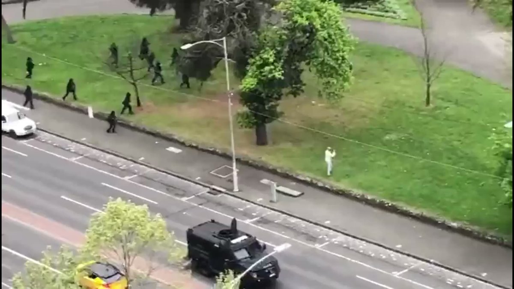
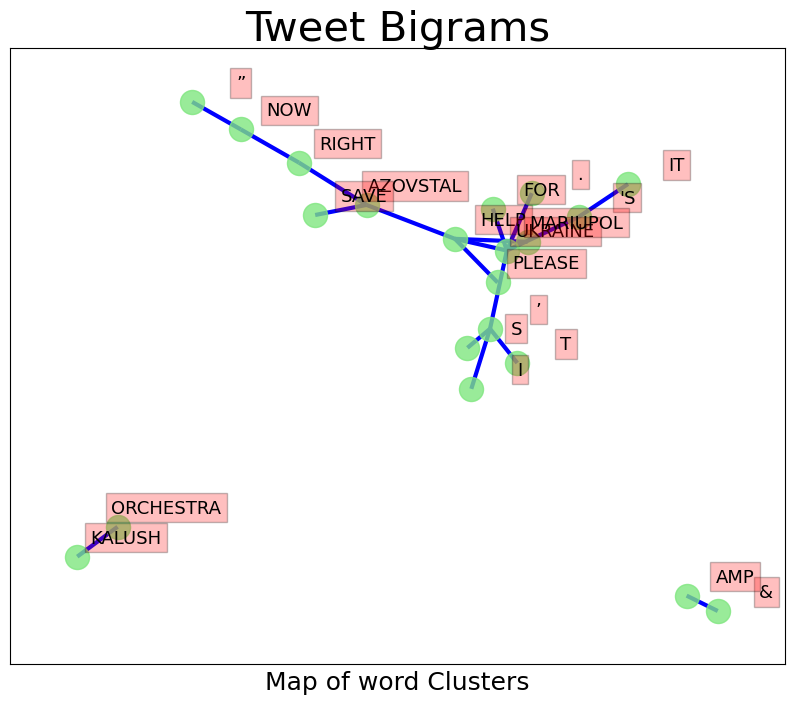
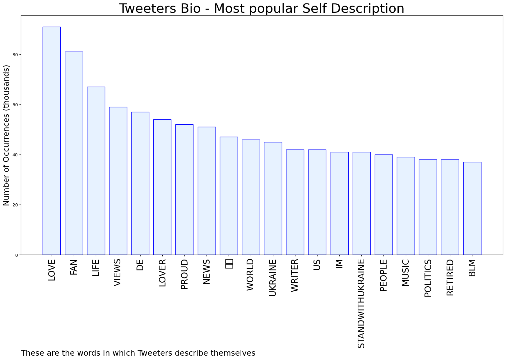
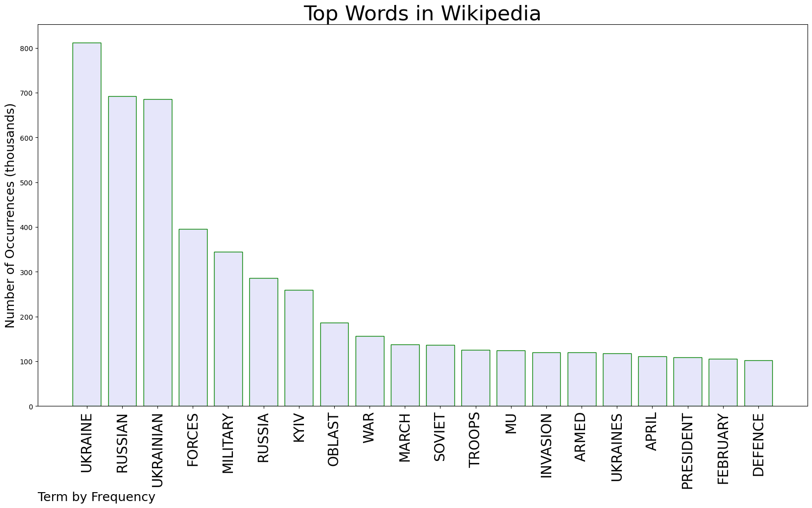

✅ Topic: 📈 Ukraine 📈 Deep Analytics



Most trending image related to Ukraine
AUTOMATED RESEARCH SUMMARY
Graph 1: most commonly tweeted words by Frequency

Trending Shared Image
Tweet Relationships
Sample-Tweets
RT @itsJeffTiedrich: pro tip: no furtive photo-op with Zelensky will make up for the fact that you Republican fucks though it was totally c…
The #AfricanUnion has remained more or less silent and, w/ out any sense of irony, has opted to hold the summit 202… https://t.co/v5FIG5frh2
RT @amirkhId: Invasion of Ukraine should make us rethink how we approach this. You want to keep the great powers out, with what? Big words,…
The most popular user is: LuckyngBigwin
RELATED METRICS
| Metric | Value |
|---|---|
| #1 Most tweeted to | KyivIndependent |
| #2 Most tweeted to | Eurovision |
| #3 Most tweeted to | TimRunsHisMouth |
| NewProfiles (less than 10 days) | 0.87 % |
| Tweeters with < 10 followers | 7.4 % |
| Tweeters with > 1000000 followers | 0.03 % |
Most Popular Tweet Terms
| Popularity Rank | Term |
|---|---|
| First | UKRAINE |
| Second | EUROVISION |
| Third | HELP |
| Fourth | RUSSIA |
| Fifth | MARIUPOL |
Twitter Bio Analysis
Graph 2: These are the words the tweeters use to describe themselves.

Img: Bio Cloud
SENTIMENT ANALYSIS

Graph 3: Break down of the tweeting sentiment on the topic
| Popularity Rank | Term |
|---|---|
| SUBJECTIVE | 53.33% |
| NEGATIVELY-SUBJECTIVE | 0.0% |
| OBJECTIVE | 46.67% |
Sample Tweet
RT @TimRunsHisMouth: More Democrats have visited Ukraine than our southern border.
Most Retweeted
RT @Atlanister: IamUkraine Studio Announces Groundbreaking Zelenskiy's NFT Collection Launch to Support Ukraine.Discord :https://t.co/XP…
Most retweeted person: LuckyngBigwin
Deeper Dive
Number of Top Words: 5 Number of Occurences: 3
Words: UKRAINE EUROVISION RUSSIA üá∫üᶠWIN Type: Tweets
Sample: RT @ALEXANDER_MAKA: IF UKRAINE üá∫üᶠWIN EUROVISION SONG CONTEST, THAT‚ÄôS MEAN THE COMPETITION NEXT YEAR WILL TAKE PLACE IN RUSSIA üá∑üá∫ ü§¶‚Äç‚ôÇÔ∏èü§£ü§£ü§£ü§£ü§£‚Ķ
Number of Top Words: 4 Number of Occurences: 14
Words: UKRAINE HELP AZOVSTAL SAVE Type: Tweets
Sample: RT @HANNALIUBAKOVA: “SAVE MARIUPOL! SAVE AZOVSTAL NOW!” KALUSH ORCHESTRA ASKED TO HELP UKRAINE #EUROVISION HTTPS://T.CO/3RCBLDMZUP
Number of Top Words: 3 Number of Occurences: 66
Words: RUSSIA WAR US Type: Tweets
Sample: RT @UKRAINE66251776: US DEFENSE CHIEF LLOYD AUSTIN ADMITS HE SHUDDERS AT THE THOUGHT OF A WAR WITH NUCLEAR ARMED RUSSIA #UKRAINE #USA #BRI…
Number of Top Words: 2 Number of Occurences: 345
Words: AZOVSTAL SAVE Type: Tweets
Sample: RT @NIKAMELKOZEROVA: "SAVE MARIUPOL, SAVE AZOVSTAL RIGHT NOW," KALUSH ORCHESTRA SAID FROM THE STAGE. HE PROBABLY KNEW HE MIGHT BE DISQUALIF…
Number of Top Words: 1 Number of Occurences: 734
Words: ZELENSKY Type: Tweets
Sample: RT @LLOPISMARTA95: @EUROVISION VOLODYMYR ZELENSKY FOUND A FEW SECONDS TO SUPPORT #UKRAINIAN KALUSH #ORCHESTRA. #EUROVISION¬†¬†¬† #UKRAINE üá∫üᶂĶ
WIKIPEDIA ANALYTICS
TOPIC = 🎙 Ukraine;
Random Image pulled from Wikipedia related to topic

Most frequent words by appearance related to this topic in subreddits
Wiki Word Clusers
Wiki Word Clustering based on top words
Wiki Deeper Dive
Number of Top Words: 10 Number of Occurences: 1
Words: UKRAINE RUSSIAN UKRAINIAN FORCES MILITARY RUSSIA WAR SOVIET INVASION ARMED Type: Sentence
Sample: SEE ALSO 2022 RUSSIA–UKRAINE PEACE NEGOTIATIONS ANNEXATION OF CRIMEA BY THE RUSSIAN FEDERATION CONTROL OF CITIES DURING THE RUSSO-UKRAINIAN WAR INTERNATIONAL RECOGNITION OF THE DONETSK PEOPLE'S REPUBLIC AND THE LUHANSK PEOPLE'S REPUBLIC – LIST OF DIPLOMATIC RECOGNITIONS OF THE 2 UKRAINIAN BREAKAWAY STATES LIST OF MILITARY ENGAGEMENTS DURING THE 2022 RUSSIAN INVASION OF UKRAINE LIST OF RUSSIAN GENERALS KILLED DURING THE 2022 INVASION OF UKRAINE POST-SOVIET CONFLICTS – MILITARY CONFLICTS IN THE FORMER SOVIET UNION SECOND COLD WAR – TENSIONS BETWEEN THE UNITED STATES AND CHINA OR RUSSIA SINCE 1991 WAR IN DONBAS – RUSSIAN INVASION OF UKRAINE SINCE 2014 BATTLE OF DONBAS (2022) == REFERENCES == THE ARMED FORCES OF UKRAINE (UKRAINIAN: ЗБРОЙНІ СИЛИ УКРАЇНИ [ЗСУ]; ZBROINI SYLY UKRAINY, [ZSU]) ARE THE MILITARY FORCES OF UKRAINE
Number of Top Words: 8 Number of Occurences: 2
Words: UKRAINE RUSSIAN FORCES MILITARY RUSSIA KYIV TROOPS INVASION Type: Sentence
Sample: ALONG AN AXIS TOWARDS WESTERN KYIV FROM BELARUS (A NORTHERN FRONT), CONDUCTED BY THE RUSSIAN EASTERN MILITARY DISTRICT, COMPRISING THE 29TH, 35TH, AND 36TH COMBINED ARMS ARMIES AN AXIS TOWARDS EASTERN KYIV FROM RUSSIA BY THE CENTRAL MILITARY DISTRICT (A NORTHEASTERN FRONT), COMPRISING THE 41ST COMBINED ARMS ARMY AND 2ND GUARDS COMBINED ARMS ARMY AN AXIS TOWARDS KHARKIV BY THE WESTERN MILITARY DISTRICT (AN EASTERN FRONT), WITH THE 1ST GUARDS TANK ARMY AND 20TH COMBINED ARMS ARMY A SOUTHERN FRONT (ORIGINATING IN OCCUPIED CRIMEA AND RUSSIA'S ROSTOV OBLAST) WITH AN EASTERN AXIS TOWARDS ODESA AND A WESTERN AREA OF OPERATIONS TOWARD MARIUPOL, BY THE SOUTHERN MILITARY DISTRICT, INCLUDING THE 58TH, 49TH, AND 8TH COMBINED ARMS ARMY, THE LATTER ALSO COMMANDING THE 1ST AND 2ND ARMY CORPS OF THE RUSSIAN SEPARATIST FORCES IN DONBASBY 7 APRIL, RUSSIAN TROOPS DEPLOYED TO THE NORTHERN FRONT CONDUCTED BY THE RUSSIAN EASTERN MILITARY DISTRICT, COMPRISING THE 29TH, 35TH, AND 36TH COMBINED ARMS ARMIES, WERE RETRACTED FROM THE KYIV OFFENSIVE FOR APPARENT RESUPPLY AND SUBSEQUENT REDEPLOYMENT TO THE DONBAS REGION TO REINFORCE THE SOUTHERN AND THE EASTERN FRONTS FOR A RENEWED INVASION FRONT OF SOUTHEASTERN UKRAINE
Number of Top Words: 7 Number of Occurences: 2
Words: UKRAINE UKRAINIAN FORCES MILITARY TROOPS ARMED DEFENCE Type: Sentence
Sample: THE LAW 'ON THE FOUNDATIONS OF NATIONAL RESISTANCE' ESTABLISHES THE FOLLOWING STRUCTURE OF THE UKRAINIAN ARMED FORCES: GENERAL STAFF OF THE ARMED FORCES OF UKRAINE JOINT FORCES COMMAND OF THE ARMED FORCES OF UKRAINE SERVICES OF THE UAF GROUND FORCES AIR FORCE NAVY SEPARATE BRANCHES OF THE UAF SPECIAL OPERATIONS FORCES COMMAND TERRITORIAL DEFENSE COMMAND LOGISTICAL FORCES COMMAND SUPPORT FORCES COMMAND MEDICAL FORCES COMMAND SEPARATE TROOP ARMS OF THE UAF AIR LANDING ASSAULT TROOPS COMMAND SIGNALS AND CYBER-SECURITY TROOPS COMMAND ORGANS OF MILITARY COMMAND AND CONTROL, FORMATIONS AND UNITS, WHICH ARE SEPARATE FROM THE SERVICES, BRANCHES AND ARMS === MINISTRY OF DEFENCE === THE FOLLOWING ESTABLISHMENTS AND INSTITUTIONS FALL DIRECTLY UNDER MOD SUBORDINATION:STRUCTURES DIRECTLY SUBORDINATED TO THE UKRAINIAN MINISTRY OF DEFENCE UKRAINIAN MINISTRY OF DEFENCE APPARATUS, KYIV MAIN INTELLIGENCE DIRECTORATE SECURITY SERVICE OF THE MOD MAIN INSPECTION DEFENCE POLICIES DIRECTORATE DEFENCE INFORMATION POLICIES AND STRATEGIC COMMUNICATIONS DIRECTORATE MILITARY EDUCATION AND SCIENCE DEPARTMENT MILITARY TECHNICAL POLICIES, DEVELOPMENT AND MILITARY WEAPONRY AND EQUIPMENT DEPARTMENT INTERNAL AUDIT DEPARTMENT MILITARY POLICIES AND STRATEGIC PLANNING DEPARTMENT STATE PURCHASES AND DELIVERIES OF MATERIAL RESOURCES DEPARTMENT INFORMATION ORGANISATION WORKS AND CONTROL DEPARTMENT PERSONNEL POLICIES DEPARTMENT INTERNATIONAL DEFENCE CO-OPERATION DEPARTMENT SOCIAL AND PERSONNEL POLICIES SUPPORT DEPARTMENT FINANCIAL DEPARTMENT JUDICIAL SUPPORT DEPARTMENT MILITARY REPRESENTATIONS DIRECTORATE ANTI-CORRUPTION DIRECTORATE STATE SECRETS SECURITY DIRECTORATE PRESS AND INFORMATION DIRECTORATE PHYSICAL CULTURE AND SPORT DIRECTORATE CONTROL MEASURES CO-ORDINATION UNIT MOBILIZATION PREPAREDNESS UNITSTATE AVIATION SCIENTIFIC DEVELOPMENT INSTITUTE, KYIV STATE SCIENTIFIC TEST CENTER OF THE UAF (MU А4444), HONCHARIVSK, CHERNIHIV OBLAST CENTRAL SCIENTIFIC RESEARCH INSTITUTE OF THE UAF (MU А0202), KYIV CENTRAL MILITARY WEAPONRY AND EQUIPMENT SCIENTIFIC RESEARCH INSTITUTE OF THE UAF (MU А4566), KYIV SCIENTIFIC RESEARCH CENTER OF THE MISSILE AND ARTILLERY TROOPS (MU А????), SUMY, SUMY OBLAST SCIENTIFIC RESEARCH CENTER FOR HUMANITARIAN MATTERS OF THE UAF (MU А2350), KYIV CENTRAL DIRECTORATE FOR ACQUISITION AND DELIVERY OF MATERIAL SUPPLIES OF THE UAF, KYIV CODIFICATION BUREAU (MU А2387), KYIV MILITARY DELEGATIONS OF THE MOU OTHER DIRECTLY SUBORDINATED UNITS === CHIEF OF THE GENERAL STAFF === THE CHIEF OF THE GENERAL STAFF OVERSEES THE ARMED FORCES OF UKRAINE
Number of Top Words: 6 Number of Occurences: 13
Words: RUSSIAN UKRAINIAN FORCES TROOPS INVASION ARMED Type: Sentence
Sample: === 2014 RUSSIAN ARMED INTERVENTIONS AND INVASION === USING THE RUSSIAN NAVAL BASE AT SEVASTOPOL AS COVER, PUTIN DIRECTED RUSSIAN TROOPS AND INTELLIGENCE AGENTS TO DISARM UKRAINIAN FORCES AND TAKE CONTROL OF CRIMEA
Number of Top Words: 5 Number of Occurences: 57
Words: RUSSIAN RUSSIA WAR INVASION FEBRUARY Type: Sentence
Sample: THESE EVENTS LED TO RUSSIA ANNEXING CRIMEA AND A WAR IN DONBAS AGAINST RUSSIAN-BACKED SEPARATISTS, CULMINATING IN A RUSSIAN INVASION IN FEBRUARY 2022
Number of Top Words: 4 Number of Occurences: 121
Words: UKRAINE MILITARY RUSSIA WAR Type: Sentence
Sample: UKRAINE HAS CONTINUED SEEKING CLOSER ECONOMIC, POLITICAL, AND MILITARY TIES WITH THE WEST (PARTICULARLY NATO) AMID ONGOING WAR WITH RUSSIA
Number of Top Words: 3 Number of Occurences: 280
Words: UKRAINE RUSSIAN RUSSIA Type: Sentence
Sample: THE COSSACK HETMANATE EMERGED IN CENTRAL UKRAINE IN THE 17TH CENTURY BUT WAS PARTITIONED BETWEEN RUSSIA AND POLAND, AND ULTIMATELY COMPLETELY ABSORBED BY THE RUSSIAN EMPIRE
Number of Top Words: 2 Number of Occurences: 511
Words: RUSSIAN UKRAINIAN Type: Sentence
Sample: IN THE AFTERMATH OF THE RUSSIAN REVOLUTION A UKRAINIAN NATIONAL MOVEMENT RE-EMERGED, AND THE UKRAINIAN PEOPLE'S REPUBLIC WAS FORMED IN 1917
Number of Top Words: 1 Number of Occurences: 777
Words: UKRAINE Type: Sentence
Sample: UKRAINE (UKRAINIAN: УКРАЇНА, ROMANIZED: UKRAÏNA, PRONOUNCED [ƱKRⱯˈJINⱯ] (LISTEN)) IS A COUNTRY IN EASTERN EUROPE
All major Wiki pages for chosen topic, word frequency of all comments ranked above
Wiki Citations
| Title | Url | pageID |
|---|---|---|
| Ukraine | https://en.wikipedia.org/wiki/Ukraine | 31750 |
| 2022 Russian invasion of Ukraine | https://en.wikipedia.org/wiki/2022_Russian_invasion_of_Ukraine | 70149799 |
| History of Ukraine | https://en.wikipedia.org/wiki/History_of_Ukraine | 84795 |
| Timeline of the 2022 Russian invasion of Ukraine | https://en.wikipedia.org/wiki/Timeline_of_the_2022_Russian_invasion_of_Ukraine | 70157964 |
| Armed Forces of Ukraine | https://en.wikipedia.org/wiki/Armed_Forces_of_Ukraine | 42799055 |
| List of cities in Ukraine | https://en.wikipedia.org/wiki/List_of_cities_in_Ukraine | 4077166 |
Images Extracted from Web Search


Ukraine IN THE NEWS 🗞 🗞 🗞
Most frequent words by appearance in the news
Headlines
| Source | Headline |
|---|---|
| BBC News | Ukraine conflict: Russian soldiers seen shooting dead unarmed civilians |
| BBC News | Finland to apply for Nato membership 'without delay' |
| BBC News | Ukraine latest news: Russia 'most direct threat to world order' - EU's von der Leyen |
| CNN | 'If you have any heart at all.' UN official warns Putin millions will die if Ukraine's ports remain blocked |
| CNN | Rand Paul blocks bipartisan effort to swiftly pass Ukraine aid |
| CNN | Russian general who oversaw atrocities in Syria led cluster bomb attacks in Ukraine |
| CNN | Live Updates: Russia's war in Ukraine |
| CNN | Video shows Russian soldiers killing 2 civilians before they ransack a business |
| Fox News | Finland's US ambassador defends push to join NATO: 'Not a threat' to Russia |
| Independent | Ukraine news — live: Russian navy ship ‘on fire’ in Black Sea |
| Independent | Russian military leaders ‘sacked and arrested’ amid heavy battlefield losses |
| Independent | Russian army ‘lose entire battalion’ trying to cross Ukraine bridge |
| CBS News | U.S. believes Russia plans to "engineer a more pliant population" in part by processing Ukrainians through camps, official says |
| NBC News | Russia-Ukraine war live updates: Finland's leaders back NATO bid |
| Al Jazeera English | More than six million refugees have fled Ukraine: UN agency |
| Al Jazeera English | Russia-Ukraine live news: US backs Finland, Sweden joining NATO |
| Al Jazeera English | Europe faces gas supply disruption after Russia imposes sanctions |
| Al Jazeera English | Ukraine goes on the counteroffensive as Russians fall back |
| Al Jazeera English | Russia-Ukraine live news: Russian soldier to face trial |
| Reuters | EXCLUSIVE Ukraine's Zelenskiy tells Russia "just stop the bombing" before more ceasefire talks |
| Reuters | 'Putin was wrong. We were ready,' Biden will say in State of the Union address |
| Reuters | Apple stops product sales in Russia, adding to pressure from shippers, car makers |
| Reuters | Top U.S. Senate Republican signals support for Biden on Ukraine |
| Reuters | Russian isolation intensifies as Ukraine fighting rages |
| Reuters | Maps: Russia invades Ukraine |
| The Hill | Ukraine war drives lawmakers into defensive posture on Taiwan |
| The Huffington Post | Russia Continues Mariupol Steel Plant Airstrikes As Ukraine Seeks Deal |
| BBC News | Ukraine war latest: Putin humiliating himself on the world stage - UK |
| CNN | Live Updates: Russia invades Ukraine |
| CNN | Analysis: A meandering river in eastern Ukraine is hindering both sides in the war |
| Independent | Ukraine news - live: Russian navy ship ‘on fire’ in Black Sea |
| CBS News | Rand Paul stalls Senate passage of $40 billion in Ukraine aid |
| NBC News | Ukraine says it blew up Russian pontoon bridges over a key river — and units trying to cross it |
| Al Jazeera English | For Russians, flying abroad is a difficult, costly affair |
| Breitbart News | Trump's ICE Chief: GOP 'Shouldn't Be Talking About Ukraine' While Terrorists Exploit U.S. Border |
| The Huffington Post | Russian Threats Push Finland Toward Joining NATO Alliance |
| ABC News | G7 invoke 'unity' against Russia; EU pledges Ukraine funds |
| CNN | US Intelligence community launches review following Ukraine and Afghanistan intel failings |
| CNN | Opinion: Why I'm OK being Russian in America |
| Independent | UK sanctions Putin’s ‘shady’ friends and family including alleged mistress |
| Independent | Russian logistics ship ‘on fire in Black Sea after Ukrainian strike’ |
| Independent | Will Russia be the enemy forever? |
| CBS News | U.N. told "credible" claims of sexual violence against children as Russia's war drives a third of Ukrainians from their homes |
| NBC News | Ukraine uses big guns and drone technology in devastating combo |
| The Huffington Post | Kremlin Warns Of Retaliation After Finland Moves Toward NATO |
| The Huffington Post | GOP Rep. Madison Cawthorn Receives A Brutal Reminder After Veterans Tweet |
| BBC News | Ukraine war: UK adds Putin's former wife to sanctions list |
| BBC News | Ukraine begins first war crimes trial of Russian soldier |
| ABC News | Russian soldier on trial in first Ukraine war-crimes case |
| CNN | Russia's retreat from Kharkiv, another key Ukrainian city, reveals new evidence of atrocities |
| CNN | US defense secretary speaks with Russian counterpart for first time since Russia invaded Ukraine |
| CNN | Ukraine blows up Russian helicopter on Snake Island - CNN Video |
| Fox News | UK hits Putin's rumored girlfriend in latest sanction sweep |
| CBS News | Russia fumes as Finland and Sweden push for NATO membership |
| CBS News | Finland announces support for joining NATO as Russia escalates attacks on Ukraine |
| NBC News | Warship sonar could be causing mass dolphin deaths in the Black Sea |
| Al Jazeera English | Erdogan says Turkey opposed to Finland, Sweden NATO membership |
| The Huffington Post | Mothers In Ukraine Just Want Their Kids To Be Safe |
| BBC News | Ukraine latest news: Russia 'most direct threat to world order' - EU's von der Leyen |
| CNN | Live Updates: Russia's war in Ukraine |
| CNN | Exclusive: Video shows Russian soldiers killing 2 civilians |
| CNN | 'It's shameful': Russian-linked billionaires have given enormous sums to the West's leading educational and cultural institutions |
| CNN | Jill Biden: What Ukrainian mothers taught me about this war |
| Fox News | Tucker: This is how much money the US is spending on Ukraine |
| Independent | Ukraine news — live: Kyiv offers Russia prisoner swap for hurt Mariupol fighters |
| Independent | UK economy shrank 0.1% in March as inflation and Ukraine war takes toll |
| Independent | ‘I am looking into hell’: Haunting messages from soldiers inside steel plant bombed by Putin’s forces |
| CBS News | Ukraine pushes back Russian troops near Kharkiv |
| CBS News | President Biden visits Illinois as inflation remains high |
| NBC News | Putin appears committed to long-lasting war, as Ukraine also digs in |
| Al Jazeera English | Russia-Ukraine live news: Russian soldier to face trial |
| Reuters | EXCLUSIVE Ukraine's Zelenskiy tells Russia "just stop the bombing" before more ceasefire talks |
| Reuters | 'Putin was wrong. We were ready,' Biden will say in State of the Union address |
| Reuters | Apple stops product sales in Russia, adding to pressure from shippers, car makers |
| Reuters | Top U.S. Senate Republican signals support for Biden on Ukraine |
| Reuters | Russian isolation intensifies as Ukraine fighting rages |
| Reuters | Maps: Russia invades Ukraine |
| The Hill | Ukraine war drives lawmakers into defensive posture on Taiwan |
| BBC News | Finland to apply for Nato membership 'without delay' |
| CNN | Opinion: What centuries-old poets got right about Ukraine |
| CNN | 100 miles from Ukraine, NATO special forces carry out training drills on the Black Sea |
| NBC News | Finland must make bid to join NATO 'without delay,' its leaders say |
| Al Jazeera English | Russia-Ukraine war: List of key events, day 78 |
| Al Jazeera English | Ukraine goes on the counteroffensive as Russians fall back |
| Al Jazeera English | Russia-Ukraine war by the numbers: Live Tracker |
| The Huffington Post | Finland Wants To Join NATO. Why Is It Considering Membership? |
| The Huffington Post | Russia Continues Mariupol Steel Plant Airstrikes As Ukraine Seeks Deal |
| The Huffington Post | Finland's Leaders In Favor Of Applying For NATO Membership |
| BBC News | Ukraine conflict: Russian soldiers seen shooting dead unarmed civilians |
| CNN | Russian ships carrying stolen Ukrainian grain turned away from Mediterranean ports -- but not all of them |
| Fox News | Russia withdrawing troops after 'heavy losses', proving 'inability to capture key Ukrainian cities,' UK says |
| Independent | To circumvent Ukraine and bottlenecks, a controversial new trade route emerges: Iran |
| Independent | Ukraine news — live: Finland joining Nato a ‘threat’ to Russia, Kremlin says |
| Independent | Russian army ‘lose entire battalion’ trying to cross Ukraine bridge |
| Al Jazeera English | Europe faces gas supply disruption after Russia imposes sanctions |
| Al Jazeera English | Ukraine accused of deadly cross-border attack on Russian village |
| Breitbart News | Finland to Join NATO, as UK Pledges to Defend Sweden and Finland |
| BBC News | Ukraine war: Russia pushed back in north-east - report from front line |
| BBC News | Ukraine latest news: Russian forces pushed out north of Kharkiv - officials |
| BBC News | Emotions run high as Ukraine heads for Eurovision final |
| CNN | 'It's shameful': Russian-linked billionaires have given enormous sums to the West's leading educational and cultural institutions |
| Independent | Wrecked Russian fighter planes found with rudimentary GPS receivers ‘taped to dashboards’ |
| Independent | Ukraine news – live: Putin’s troops in Kharkiv pushed back by counter-attack |
| NBC News | Russian missiles bring fresh fear to displaced Ukrainians in Odesa |
| Al Jazeera English | ‘This game is up’: Serbia urged to take a stand on Ukraine’s war |
| Al Jazeera English | Russia-Ukraine war: List of key events, day 77 |
| Al Jazeera English | Russia-Ukraine live news: US House to vote on Kyiv aid package |
| Al Jazeera English | Russia-Ukraine war by the numbers: Live Tracker |
| Reuters | EXCLUSIVE Ukraine's Zelenskiy tells Russia "just stop the bombing" before more ceasefire talks |
| Reuters | 'Putin was wrong. We were ready,' Biden will say in State of the Union address |
| Reuters | Apple stops product sales in Russia, adding to pressure from shippers, car makers |
| Reuters | Top U.S. Senate Republican signals support for Biden on Ukraine |
| Reuters | Russian isolation intensifies as Ukraine fighting rages |
| Reuters | Maps: Russia invades Ukraine |
| The Hill | Ukraine war drives lawmakers into defensive posture on Taiwan |
| The Huffington Post | Jill Biden Issues Plea To Vladimir Putin In Poignant Essay After Ukraine Visit |
| The Huffington Post | Ukrainians Stop Russian Gas At One Hub, Make Gains In East |
| The Huffington Post | House Approves $40 Billion Aid Package To Help Ukraine, Allies |
| BBC News | Ukraine latest news: Missiles strike Odesa as Russia renews assault on steelworks |
| ABC News | 1st group of refugees start arriving under 'Uniting for Ukraine' program |
| CNN | Two Russian journalists appear to defy Putin, slamming the war in Ukraine |
| CNN | Analysis: Finland is on the verge of asking to join NATO. Here's why that's bad news for Putin |
| CNN | Live updates: Russia's war in Ukraine |
| CNN | Ukraine has accused Russian soldiers of using rape as a tool of war. These two women say justice is hard to come by |
| Fox News | Gas prices hit new all-time high as EU considers blocking Russian oil, Biden keeps restrictions |
| Independent | Russia looking to target countries that oppose Ukraine invasion with cyber attacks, GCHQ director warns |
| Independent | Putin ‘loses 38th, 39th and 40th colonels’ in Ukraine war as casualties mount |
| Independent | Macron calls for ‘new European political community’ that could include Britain |
| Independent | Ukraine war– live: Putin ‘hijacking history’ as he blames West for conflict |
| CBS News | Russian missiles pound Ukraine's port city of Odesa as dozens of bodies discovered in front-line town to the north |
| CBS News | U.S. temporarily suspends tariffs on steel imported from Ukraine |
| CBS News | CBS Evening News, May 9, 2022 |
| NBC News | Russia-Ukraine war live updates: Missiles strike Odesa |
| Al Jazeera English | Moldova celebrates Soviet victory, but divisions deepen amid war |
| Al Jazeera English | Russia-Ukraine war: List of key events, day 76 |
| Al Jazeera English | Pulitzer Prize board honours ‘courage’ of Ukrainian journalists |
| Al Jazeera English | Russia-Ukraine live news: US slams Putin for ‘disinformation’ |
| Reuters | EXCLUSIVE Ukraine's Zelenskiy tells Russia "just stop the bombing" before more ceasefire talks |
| Reuters | 'Putin was wrong. We were ready,' Biden will say in State of the Union address |
| Reuters | Apple stops product sales in Russia, adding to pressure from shippers, car makers |
| Reuters | Top U.S. Senate Republican signals support for Biden on Ukraine |
| Reuters | Russian isolation intensifies as Ukraine fighting rages |
| Reuters | Maps: Russia invades Ukraine |
| The Hill | Ukraine war drives lawmakers into defensive posture on Taiwan |
| The Huffington Post | Russia Pounds Odesa As 44 Civilian Bodies Uncovered Elsewhere In Ukraine |
| BBC News | Ukraine war: Bodies of 44 civilians found as battle for Izyum rages |
| ABC News | Russia pounds vital port of Odesa, targeting supply lines |
| CNN | Watch: CNN explains pivotal role bridges play in Russia's military strategy - CNN Video |
| Fox News | Alex Hogan: Ukrainians not willing to concede, give up land to Russia |
| Independent | Vladimir Putin’s ‘use of gas as a weapon’ is a ‘challenge’ for Cop 26 Glasgow Climate Pact, John Kerry says |
| Independent | Ukraine ‘destroys Putin parade boat’ with laser-guided bomb off Snake Island |
| CBS News | 5/9: Red and Blue |
| Al Jazeera English | Putin seeking goals beyond Ukraine’s east: US intelligence chief |
| Al Jazeera English | Ukraine war speeds Greece’s transition to EU energy gateway |
| Al Jazeera English | Ukraine civilian deaths ‘thousands higher’ than official toll: UN |
| Breitbart News | Joe Biden Blames 'Putin's Gas Tax' as Gas Prices Jump to All Time High |
| The Verge | UiPath CEO Daniel Dines thinks automation can fight the great resignation |
| BBC News | Ukraine war: Russia must withdraw to pre-invasion position for a deal - Zelensky |
| CNN | White House walks a fine line with intelligence sharing in Ukraine |
| Independent | Russian warship Admiral Makarov ‘on fire after being hit by Ukrainian missile’ |
| Independent | Former Ukrainian president says country can ‘never forgive’ Russia for war |
| NBC News | Biden told officials media reports about U.S. intel sharing with Ukraine are counterproductive |
| Al Jazeera English | US providing additional $150m in military aid to Ukraine |
| Al Jazeera English | Russia-Ukraine live news: UN Security Council backs peace efforts |
| Al Jazeera English | Pentagon denies helping Ukraine sink Russian ship Moskva |
| Al Jazeera English | Why is Ukraine trying to cancel Russian culture? |
| Al Jazeera English | Russia: What is Victory Day, and why is it important this May 9? |
| Al Jazeera English | ‘Not isolated incidents’: Amnesty accuses Russia of war crimes |
| Al Jazeera English | Russia-Ukraine war: What would a victory look like now to Putin? |
| Reuters | EXCLUSIVE Ukraine's Zelenskiy tells Russia "just stop the bombing" before more ceasefire talks |
| Reuters | 'Putin was wrong. We were ready,' Biden will say in State of the Union address |
| Reuters | Apple stops product sales in Russia, adding to pressure from shippers, car makers |
| Reuters | Top U.S. Senate Republican signals support for Biden on Ukraine |
| Reuters | Russian isolation intensifies as Ukraine fighting rages |
| Reuters | Maps: Russia invades Ukraine |
| The Hill | Ukraine war drives lawmakers into defensive posture on Taiwan |
| The Huffington Post | U.S. Intelligence Reportedly Helped Ukraine Sink Russian Flagship Last Month |
| BBC News | Ukraine latest news: US to send more weapons, Biden says |
| Independent | Local elections 2022 results - live: Sinn Fein poised for historic win in NI |
| Independent | Ukraine news – live: Russian ship Admiral Makarov ‘on fire’ near Snake Island |
| CBS News | Former Ambassador to Ukraine William Taylor on "The Takeout" - 5/06/2022 |
| Al Jazeera English | VPN use skyrockets in Russia during Ukraine invasion |
| Al Jazeera English | Russia-Ukraine war: List of key events, day 73 |
| The Huffington Post | Ex Ambassador Sondland Says He Was A 'Doofus' About Rudy Giuliani Ukraine Plot |
| BBC News | Nigerian airlines to halt domestic flights over jet fuel hikes |
| ABC News | Al-Qaeda chief blames US for Ukraine invasion in new video |
| CNN | Live Updates: Russia's war in Ukraine |
| Fox News | Ukraine says drone destroyed Russian landing ship near Snake Island |
| Independent | Ukraine news – live: Russia claims to have destroyed western arms stockpile in Kharkiv |
| Independent | Scheherazade: Giant £570m superyacht ‘owned by Vladimir Putin’ is seized by Italian authorities |
| CBS News | "Massive bombardments" in Ukraine as Russia blows up bridges to slow counter-offensive, officials say |
| CBS News | How Russia is using hunger as a weapon in Ukraine |
| NBC News | Proposed E.U. ban on oil marks a turning point in West's measures against Russia |
| The Huffington Post | Ukraine's Scientists Keep Working In Defiance Of Russian Invasion |
| BBC News | Ukraine war has dragged on, admits Putin ally Lukashenko |
| BBC News | Ukraine latest news: 'Bloody battles' at Mariupol steelworks ahead of possible ceasefire |
| CNN | Russians steal vast amounts of Ukrainian grain and equipment, threatening this year's harvest |
| Fox News | US intel reportedly aided Ukraine to kill enemy generals |
| Independent | By hyping up the Russia threat, the west helped ignite this war |
| Independent | Ukraine news – live: Mariupol theatre bombing killed 600 civilians, evidence suggests |
| NBC News | U.S. intel helped Ukraine sink Russian flagship Moskva, officials say |
| Al Jazeera English | Russia-Ukraine live news: UN warns of ‘limitless’ global harm |
| Al Jazeera English | Fiji seizes Russian oligarch’s $300m yacht at US request |
| Al Jazeera English | South Africa’s opposition leader goes to Ukraine for fact-finding |
| Al Jazeera English | Months into the Ukraine war, has Germany’s position changed? |
| Al Jazeera English | Belarus doing ‘everything’ to end Ukraine war: Lukashenko |
| Reuters | EXCLUSIVE Ukraine's Zelenskiy tells Russia "just stop the bombing" before more ceasefire talks |
| Reuters | 'Putin was wrong. We were ready,' Biden will say in State of the Union address |
| Reuters | Apple stops product sales in Russia, adding to pressure from shippers, car makers |
| Reuters | Top U.S. Senate Republican signals support for Biden on Ukraine |
| Reuters | Russian isolation intensifies as Ukraine fighting rages |
| Reuters | Maps: Russia invades Ukraine |
| The Hill | Ukraine war drives lawmakers into defensive posture on Taiwan |
| BBC News | Moskva sinking: US gave intelligence that helped Ukraine sink Russian cruiser - reports |
| BBC News | Ukraine latest news: Mariupol rescues resume but shelling 'does not stop' - Zelensky |
| ABC News | Jill Biden to meet Ukrainian refugees during border visit |
| CNN | Live Updates: Russia's war in Ukraine |
| CNN | Opinion: Let's set the record straight on Lavrov's Hitler comments |
| CNN | US provided intelligence that helped Ukraine target Russian warship |
| CNN | Retired US major general: What it will take for the Ukrainians to win |
| Fox News | Tucker: Biden has turned out to be an unparalleled disaster |
| Fox News | Belarus leader Lukashenko says he didn't think Russia-Ukraine war would 'drag on this way' |
| Independent | Why did Russia invade Ukraine? The conflict explained |
| Independent | Ukraine news - live: US ‘helped Ukraine locate and sink’ Russia’s Moskva in Black sea |
| Al Jazeera English | Explainer: How does conscription work in Russia? |
| ABC News | Amnesty International: Russia must face war crimes justice |
| CNN | Putin's reputed girlfriend Alina Kabaeva included in proposed EU sanctions list, sources say |
| Fox News | Ukraine refugee disaster 'worsening' from medical standpoint: Dr. Nesheiwat |
| Independent | Russian warship Admiral Makarov ‘on fire after being hit by Ukrainian missile’ |
| CBS News | Russia and Ukraine's "war of attrition" has begun, says European official |
| Al Jazeera English | ‘Not isolated incidents’: Amnesty accuses Russia of war crimes |
| Al Jazeera English | Russia-Ukraine war: What would a victory look like now to Putin? |
| Al Jazeera English | The Kremlin blinks first in the geo-economic war over Ukraine |
| The Huffington Post | Defenders Inside Mariupol Steel Plant Refuse To Surrender To Russian Forces |
| ABC News | Woman forced to land in Belarus gets 6 years in prison |
| Fox News | Pelosi-led trip to Ukraine results in pledge for more military aid |
| Independent | Former Ukrainian president says country can ‘never forgive’ Russia for war |
| CBS News | Hillary Clinton says women and girls in Ukraine face "worst kind of fear and violence" |
| Al Jazeera English | Ukraine says fighter killed during Mariupol evacuation attempt |
| Al Jazeera English | Why is Ukraine trying to cancel Russian culture? |
| Al Jazeera English | Russia: What is Victory Day, and why is it important this May 9? |
| Al Jazeera English | ‘A second Afghanistan’: Doubts over Russia’s war prosecution |
| The Huffington Post | US Added 428,000 Jobs In April Despite Surging Inflation |
| BBC News | Ukraine war: Zelensky plea as Russians seek Mariupol endgame |
| BBC News | Ukraine war: Russia denies it plans to declare war on 9 May |
| BBC News | Russia-Ukraine war: EU plans Russian oil ban and war crimes sanctions |
| CNN | Russia's attacks on Ukraine's supply lines are intensifying. Ukraine's national railway hasn't buckled |
| CNN | Retired US major general: What it will take for the Ukrainians to win |
| CNN | Drone footage shows how Russians destroyed one Ukrainian town in savage battle |
| CNN | Video: Explosions ripple across Ukrainian steel plant housing civilians - CNN Video |
| CNN | Is Lavrov's Hitler remark the last straw for Israel? |
| CNN | Pope Francis slams pro-war Russian patriarch: Don't be 'Putin's altar boy' |
| CNN | Live Updates: Russia's war in Ukraine |
| Fox News | Zelenskyy: 'Declaration of war doesn't change anything' in response to Russian offenses |
| Fox News | Belarusian military 'more poorly trained' than Russians: Retired US Army general |
| Fox News | Image appears to show bodies of Russian soldiers arranged in letter 'Z' after Ukraine recaptures village |
| Independent | ‘Difficult bloody battles’ underway at Mariupol steel works, Ukrainian commander says |
| Independent | Ukraine news – live: Russia ramps up air strikes in ‘bid to increase invasion tempo’ |
| NBC News | Ukraine loses contact with troops amid 'heavy fighting' at Azovstal steel plant |
| Al Jazeera English | Ukraine live news: Russia facing ‘stiff’ fight in Donbas, US says |
| Al Jazeera English | Russia pounds Ukraine, targeting supply of Western arms |
| Al Jazeera English | What you should know about the EU plan to ban Russian oil imports |
| Al Jazeera English | No Ukraine ceasefire deal without Russian withdrawal: Zelenskyy |
| Al Jazeera English | Somali family flees Ukraine, becoming refugees twice over |
| Al Jazeera English | Russia says Israel supports Ukraine ‘neo-Nazis’ as row escalates |
| Reuters | EXCLUSIVE Ukraine's Zelenskiy tells Russia "just stop the bombing" before more ceasefire talks |
| Reuters | 'Putin was wrong. We were ready,' Biden will say in State of the Union address |
| Reuters | Apple stops product sales in Russia, adding to pressure from shippers, car makers |
| Reuters | Top U.S. Senate Republican signals support for Biden on Ukraine |
| Reuters | Russian isolation intensifies as Ukraine fighting rages |
| Reuters | Maps: Russia invades Ukraine |
| The Hill | Ukraine war drives lawmakers into defensive posture on Taiwan |
| BBC News | Wealthy Russians flee to Dubai to avoid sanctions |
| BBC News | Ukraine latest news: 'Bloody battles' at Mariupol steelworks ahead of possible ceasefire |
| CNN | Remarkable video obtained from Ukrainian soldier shows battle for Kyiv - CNN Video |
| CNN | Live Updates: Russia's war in Ukraine, fighting inside the Azovstal steel plant |
| CNN | Pope Francis warns pro-war Russian patriarch not to be 'Putin's altar boy' |
| CNN | Opinion: It's time Russia and NATO stop playing games with nuclear war |
| Independent | Ukraine news – live: Mariupol theatre bombing killed 600 civilians, evidence suggests |
| CBS News | American fighters seek to help civilians across Ukraine |
| NBC News | Azovstal evacuees detail desperate situation inside Mariupol plant |
| Al Jazeera English | Months into the Ukraine war, has Germany’s position changed? |
| Al Jazeera English | Belarus doing ‘everything’ to end Ukraine war: Lukashenko |
| Al Jazeera English | ‘A second Afghanistan’: Doubts over Russia’s war prosecution |
| Al Jazeera English | Russia-Ukraine war: List of key events, day 71 |
| Al Jazeera English | Zelenskyy calls for longer truce to evacuate Mariupol civilians |
| The Huffington Post | Ukraine Repels Russian Attacks As Mariupol Steel Plant Battle Rages |
| The Huffington Post | U.S. Intelligence Has Reportedly Helped Ukraine Kill Russian Generals |
| CNN | Russians steal vast amounts of Ukrainian grain and equipment, threatening this year's harvest |
| CBS News | American volunteers fighting alongside Ukraine defenders become casualties and heroes |
| CBS News | Ukraine's military says Russian troops have stormed Mariupol steel factory |
| CBS News | European Union proposes ban on Russian crude oil imports amid increased attacks in Ukraine |
| NBC News | Russia-Ukraine war live updates: Fighting rages inside Azovstal steel plant in Mariupol |
| Breitbart News | Global Food Crisis: 'Perfect Storm' of World Hunger Could Starve Millions |
| BBC News | Antytila: Ed Sheeran collaboration written on front line |
| BBC News | Ukraine latest news: UK to offer £300m extra military support to Ukraine |
| CNN | Live updates: Russia's war in Ukraine |
| Fox News | John Kirby: The US is doing everything we can to help Ukraine defend itself and win back its sovereignty |
| Independent | Ukraine news – live: Russia destroys hangars full of western weapons near Odessa |
| Independent | ‘Sulky liver sausage!’ Ukraine ambassador scolds German leader for not visiting Kyiv |
| Independent | ‘Thousands’ of Ukraine refugees forced into overcrowded homes as UK system branded ‘dysfunctional disaster’ |
| CBS News | Russia storms steel plant in Mariupol as some evacuees reach safety |
| NBC News | Russia-Ukraine war live updates: Putin plans to annex parts of east, U.S. says |
| Al Jazeera English | Ukraine live news: US helping ensure Russia ‘failure’, Biden says |
| Al Jazeera English | Macron urges Putin to allow Mariupol steel plant evacuations |
| Al Jazeera English | Russia says Israel supports neo-Nazis in row over Ukraine |
| Al Jazeera English | Ukraine’s ‘finest hour’: UK’s Johnson addresses lawmakers in Kyiv |
| Al Jazeera English | Civilian evacuees from Azovstal plant reach Ukrainian-held city |
| Al Jazeera English | US: Russia plans to annex separatist statelets in Ukraine |
| Al Jazeera English | ‘Orcs’ and ‘Rashists’: Ukraine’s new language of war |
| Reuters | EXCLUSIVE Ukraine's Zelenskiy tells Russia "just stop the bombing" before more ceasefire talks |
| Reuters | 'Putin was wrong. We were ready,' Biden will say in State of the Union address |
| Reuters | Apple stops product sales in Russia, adding to pressure from shippers, car makers |
| Reuters | Top U.S. Senate Republican signals support for Biden on Ukraine |
| Reuters | Russian isolation intensifies as Ukraine fighting rages |
| Reuters | Maps: Russia invades Ukraine |
| The Hill | Ukraine war drives lawmakers into defensive posture on Taiwan |
| BBC News | Homes for Ukraine: Housing scheme called danger to refugees |
| BBC News | Ukraine latest news: Russian strikes continue ahead of fresh sanctions |
| CNN | Live Updates: Russia's war in Ukraine |
| Independent | Ukraine news – live: Putin’s ‘unparalleled weapons’ could be hypersonic missiles, suggests Lavrov |
| Independent | An opportunity, not a nuisance: Modi’s tour reveals closer ties between India and Europe |
| The Huffington Post | Russia Storms Steel Plant Containing The Last Pocket Of Resistance In Mariupol |
| BBC News | Russia-Ukraine war: EU plans Russian oil ban and war crimes sanctions |
| CNN | Pope Francis slams pro-war Russian patriarch: Don't be 'Putin's altar boy' |
| CNN | EU proposes ban on Russian oil imports |
| CNN | In Bucha, Ukrainian families mourn the war's youngest victims as investigators probe war crimes |
| CNN | Opinion: It's time Russia and NATO stop playing games with nuclear war |
| Fox News | Marine veteran: 'If we could come together in this way, we could do pretty amazing things' |
| CBS News | Former top Mossad officer on Israel's security challenges - "Intelligence Matters" |
| NBC News | Russia-Ukraine war live updates: E.U. proposes Russian oil ban |
| Al Jazeera English | EU chief proposes Russian oil ban in new round of sanctions |
| Al Jazeera English | Exhausted Azovstal evacuees recount trauma of Mariupol siege |
| Al Jazeera English | Russia-Ukraine war: List of key events, day 70 |
| Al Jazeera English | Russia pounds Donetsk, Luhansk; at least 21 killed |
| BBC News | Ukraine war: Russia denies it plans to declare war on 9 May |
| CNN | Video: Explosions ripple across Ukrainian steel plant housing civilians - CNN Video |
| Fox News | Ukraine says it is 'ready' as Belarus suddenly announces military exercises to test combat readiness |
| Fox News | Ukraine war an example of eroded US deterrence capability: Former State Dept adviser |
| NBC News | Ukraine loses contact with troops amid 'heavy fighting' at Azovstal steel plant |
| Al Jazeera English | What you should know about the EU plan to ban Russian oil imports |
| Al Jazeera English | No Ukraine ceasefire deal without Russian withdrawal: Zelenskyy |
| Al Jazeera English | Somali family flees Ukraine, becoming refugees twice over |
| Al Jazeera English | Hungary says EU’s Russian oil ban plan lacks security guarantee |
| BBC News | Ukraine war: Hundreds trapped in Mariupol steelworks despite evacuations |
| BBC News | Ukraine latest news: Mariupol evacuees describe dire conditions in steelworks bunkers |
| CNN | Video: 'Phoenix ghost' drone: What we know about mystery drone sent to Ukraine. - CNN Video |
| CNN | Dispatch from Ukraine: Here's what CNN is seeing on the ground in Lviv |
| CNN | Live updates: Russia's war in Ukraine, Mariupol evacuations continue |
| CNN | Russians plunder $5M farm vehicles from Ukraine -- to find they've been remotely disabled |
| Fox News | More than a quarter of Russia's army in Ukraine now 'combat ineffective,' UK says |
| Independent | ‘Thousands’ of Ukraine refugees forced into overcrowded homes as UK system branded ‘dysfunctional disaster’ |
| Independent | Ukraine news - live: ‘Up to 200’ civilians still trapped in Mariupol steel works |
| Independent | ‘I want to see Putin hanged’, says Gazprom executive who fled Russia |
| NBC News | Odesa locks down over fears of Putin’s saboteurs on painful anniversary |
| Al Jazeera English | Russia-Ukraine live news: Zelenskyy slams Lavrov’s Hitler remarks |
| Al Jazeera English | UEFA bans Russia from more European competitions |
| Al Jazeera English | Evacuation of civilians from Ukraine’s besieged Mariupol delayed |
| Al Jazeera English | Israel condemns Russian foreign minister’s Nazism remarks |
| Al Jazeera English | The Russia-Ukraine war is making Indians poorer and hungrier |
| Al Jazeera English | Russia-Ukraine war: After Russia avoids default, what is next? |
| Reuters | EXCLUSIVE Ukraine's Zelenskiy tells Russia "just stop the bombing" before more ceasefire talks |
| Reuters | 'Putin was wrong. We were ready,' Biden will say in State of the Union address |
| Reuters | Apple stops product sales in Russia, adding to pressure from shippers, car makers |
| Reuters | Top U.S. Senate Republican signals support for Biden on Ukraine |
| Reuters | Russian isolation intensifies as Ukraine fighting rages |
| Reuters | Maps: Russia invades Ukraine |
| The Hill | Ukraine war drives lawmakers into defensive posture on Taiwan |
| The Verge | Remote lockouts reportedly stop Russian troops from using stolen Ukrainian farm equipment |
| The Huffington Post | First Civilians Leave Mariupol Steel Plant As Hundreds Remain |
| The Huffington Post | Israel Lashes Out At Russia Over Lavrov's Nazism Remarks |
| The Huffington Post | Former U.S. Marine's Death Puts Spotlight On Other Americans Fighting In Ukraine |
| The Huffington Post | Pelosi Visits Kyiv, Meets With Ukraine President |
| The Huffington Post | Ukraine Fights To Hold Off Russian Advances In South, East |
| BBC News | Ukraine war: This is your finest hour, Johnson to tell Ukrainian Parliament |
| BBC News | Ukraine latest news: UK to offer £300m extra military support to Ukraine |
| BBC News | In Ukrainian villages, a desperate wait for news of the missing |
| CNN | Live updates: Russia's war in Ukraine |
| Fox News | Tucker: The war in Ukraine has nothing to do with Ukraine |
| Independent | Ukraine news - live: Zelensky says Russia killed 220 children as Mariupol attacks resume |
| Independent | Boris Johnson to evoke Churchill as he tells Ukrainian parliament this is country’s ‘finest hour’ |
| CBS News | Complications behind Congress passing more funding for Ukraine |
| NBC News | Ukraine admits the 'Ghost of Kyiv' isn’t real, but the wartime myth worked against Russia |
| The Huffington Post | Push To Arm Ukraine Putting Strain On U.S. Weapons Stockpile |
| CNN | Putin may soon officially declare war on Ukraine, US and Western officials say |
| Al Jazeera English | Russia-Ukraine war: List of key events, day 69 |
| Al Jazeera English | Russian theatre drops directors who spoke out against Ukraine war |
| The Huffington Post | Russia Plans To Annex Much Of Eastern Ukraine, Senior U.S. Official Says |
| The Huffington Post | More Than 1 Million People Have Been Taken From Ukraine, Russian Media Claims |
| Fox News | Ukraine intelligence says Russia's war may end in September |
| Independent | Ukraine news – live: Russia destroys hangars full of western weapons near Odessa |
| Independent | ‘Sulky liver sausage!’ Ukraine ambassador scolds German leader for not visiting Kyiv |
| CBS News | Russia doubles down on foreign minister's Hitler remarks, accuses Israel of supporting "neo-Nazis" in Ukraine |
| NBC News | Russia-Ukraine war live updates: Putin plans to annex parts of east, U.S. says |
| Al Jazeera English | Civilian evacuees from Azovstal plant reach Ukrainian-held city |
| Al Jazeera English | ‘Orcs’ and ‘Rashists’: Ukraine’s new language of war |
| BBC News | Mariupol civilian evacuation begins to Ukraine and Russia-held territories |
| BBC News | How Ukraine's 'Ghost of Kyiv' legendary pilot was born |
| CNN | Russians plunder $5M farm vehicles from Ukraine -- to find they've been remotely disabled |
| CNN | Pelosi makes unannounced trip to meet with Zelensky in Kyiv |
| CNN | Opinion: Thirty-six years after Chernobyl, Russia is still keeping us in the dark |
| CNN | Live updates: Russia's war in Ukraine |
| Fox News | Former NATO Secretary General: We should give Ukraine a 'clear perspective' |
| Fox News | Pelosi makes surprise visit to Kyiv, reaffirms U.S. commitment to Ukraine in meeting with Zelenskyy |
| Independent | Evacuation under way for civilians trapped at Mariupol steelworks, UN says |
| Independent | Ukraine news - live: Putin ‘may declare all-out war on Kyiv’ on Russia’s Victory Day |
| CBS News | Witnessing the war in Ukraine |
| CBS News | Western officials warn of a potentially long war in Ukraine |
| NBC News | Pelosi travels to Kyiv to meet with Zelenskyy |
| Al Jazeera English | May Day rallies held around world with calls for peace in Ukraine |
| Al Jazeera English | US speaker Nancy Pelosi visits Ukraine, meets President Zelenskyy |
| Al Jazeera English | Russia-Ukraine war: List of key events on day 67 |
| Al Jazeera English | Russia-Ukraine war: Civilians evacuate Mariupol’s Azovstal plant |
| Al Jazeera English | Russia-Ukraine live: Russian attack destroys Odesa airport runway |
| Al Jazeera English | Can Europeans live without Russian gas? |
| Reuters | EXCLUSIVE Ukraine's Zelenskiy tells Russia "just stop the bombing" before more ceasefire talks |
| Reuters | 'Putin was wrong. We were ready,' Biden will say in State of the Union address |
| Reuters | Apple stops product sales in Russia, adding to pressure from shippers, car makers |
| Reuters | Top U.S. Senate Republican signals support for Biden on Ukraine |
| Reuters | Russian isolation intensifies as Ukraine fighting rages |
| Reuters | Maps: Russia invades Ukraine |
| The Hill | Ukraine war drives lawmakers into defensive posture on Taiwan |
| Breitbart News | Powers: Ukraine War Increasing Global Food Prices Will Hasten Green Transition -- 'Never Let a Crisis Go to Waste' |
| Breitbart News | Nancy Pelosi in Kyiv: Delivers Message of U.S. Solidarity with Ukraine |
| The Huffington Post | Operation Underway To Evacuate Remaining Ukrainians In Mariupol |
| The Huffington Post | Pelosi Visits Kyiv, Meets With Ukraine President |
| The Huffington Post | Benedict Cumberbatch To House Ukrainian Family Who Fled Russian Invasion |
| The Huffington Post | Ukraine Fights To Hold Off Russian Advances In South, East |
| The Huffington Post | Former US Marine Killed While Fighting In Ukraine, Relatives Say |
| The Huffington Post | McDonald's Left With Millions Of Dollars Of Russian Food It Can't Use. Here’s Why. |
| BBC News | Ukraine war: Families hide in cellars as Russia targets Donbas region |
| BBC News | Ukraine latest news: Mariupol evacuees describe dire conditions in steelworks bunkers |
| ABC News | Jill Biden to meet Ukrainian refugees in Romania, Slovakia |
| CNN | Pelosi makes unannounced trip to Kyiv, becoming highest-ranking US official to meet with Zelensky since the war began |
| Independent | Ukraine news - live: UN conducting ‘safe passage operation’ at Mariupol steelworks |
| Independent | So what if Zelensky is Jewish, ‘Hitler also had Jewish blood’, says Russia’s foreign minister |
| NBC News | ‘I was terrified’: Dance instructor becomes escape driver for Ukrainians trapped in Mariupol |
| Al Jazeera English | The Russia-Ukraine war is making Indians poorer and hungrier |
| Al Jazeera English | Russia-Ukraine war: List of key events on day 68 |
| Al Jazeera English | Europe scrambles for long-term fix after Putin cuts off gas |
| Al Jazeera English | Russia not seeking to end Ukraine war by May 9: Lavrov |
| Al Jazeera English | Russia-Ukraine live news: Kyiv planning more Mariupol evacuations |
| Al Jazeera English | German chancellor defends ‘cautious’ approach to Ukraine crisis |
| Breitbart News | Chomsky: Trump the 'One Western Statesman' Pushing Peace in Ukraine |
| Breitbart News | Pollak: Biden Takes High Risks in Escalating War with Russia in Ukraine |
| The Huffington Post | Former U.S. Marine's Death Puts Spotlight On Other Americans Fighting In Ukraine |
| The Huffington Post | Angelina Jolie Makes Surprise Visit To Ukraine, Meets With Injured Children |
| CNN | Live updates: Russia's war in Ukraine, Mariupol evacuations continue |
| Independent | ‘I want to see Putin hanged’, says Gazprom executive who fled Russia |
| CBS News | "Sunday Morning" Full Episode 5/1 |
| CBS News | 5/1/2022: Harvest of War, Eurovision, Birds Aren’t Real |
| NBC News | Russia-Ukraine war live updates: Civilians evacuated from Mariupol steel plant |
| Al Jazeera English | ‘Now in shambles’: Turkey’s tourism revival fades on Russian war |
| BBC News | Ukraine war: Hundreds trapped in Mariupol steelworks despite evacuations |
| ABC News | Pelosi thanks Poland for Ukraine support, meets president |
| CNN | Video: 'Phoenix ghost' drone: What we know about mystery drone sent to Ukraine. - CNN Video |
| Fox News | Ukraine releases video of 2 Russian ships allegedly being destroyed in Black Sea |
| Independent | Ukraine admits ‘Ghost of Kyiv’ fighter pilot is a myth |
| CBS News | Nearly 100 out of Mariupol steelworks plant, but soldiers behind battle Russian advance |
| CBS News | Biden requests additional $33 billion in aid to Ukraine as Congress disagrees on COVID funding |
| Al Jazeera English | Evacuation of civilians from Ukraine’s besieged Mariupol delayed |
| Al Jazeera English | Israel condemns Russian foreign minister’s Nazism remarks |
| The Huffington Post | First Civilians Leave Mariupol Steel Plant As Hundreds Remain |
| BBC News | Ukraine war: US accuses Russia of 'depravity and brutality' |
| CNN | Angelina Jolie visits residents at boarding school and medical institution in Ukraine |
| CNN | Live updates: Russia's war in Ukraine |
| Fox News | NATO preparing for massive military exercises as Russia continues invasion of Ukraine |
| Independent | Civilians leave besieged Mariupol steelworks after Putin said not even a ‘fly’ should escape |
| Independent | Russia ‘forced to merge depleted units from failed advances in Ukraine’, UK says |
| Independent | Ukraine news - live: Putin ‘may declare all-out war on Kyiv’ on Russia’s Victory Day |
| CBS News | Is the U.S. doing enough in supporting Ukraine's defense against Russia? |
| NBC News | The West prepares for Putin’s next moves as Ukraine war enters a new phase |
| Al Jazeera English | Russia-Ukraine live: Russian attack destroys Odesa airport runway |
| Al Jazeera English | Serbia shows off China missiles amid build-up concerns in Balkans |
| Al Jazeera English | Russia FM asks US, NATO to stop supplying arms to Ukraine |
| Al Jazeera English | Russia-Ukraine war: List of key events on day 66 |
| Al Jazeera English | Can Europeans live without Russian gas? |
| Reuters | EXCLUSIVE Ukraine's Zelenskiy tells Russia "just stop the bombing" before more ceasefire talks |
| Reuters | 'Putin was wrong. We were ready,' Biden will say in State of the Union address |
| Reuters | Apple stops product sales in Russia, adding to pressure from shippers, car makers |
| Reuters | Top U.S. Senate Republican signals support for Biden on Ukraine |
| Reuters | Russian isolation intensifies as Ukraine fighting rages |
| Reuters | Maps: Russia invades Ukraine |
| The Hill | Ukraine war drives lawmakers into defensive posture on Taiwan |
| The Huffington Post | Benedict Cumberbatch To House Ukrainian Family Who Fled Russian Invasion |
| The Huffington Post | Ukraine Fights To Hold Off Russian Advances In South, East |
| The Huffington Post | Former US Marine Killed While Fighting In Ukraine, Relatives Say |
| The Huffington Post | McDonald's Left With Millions Of Dollars Of Russian Food It Can't Use. Here’s Why. |
| The Huffington Post | Photos Show Ukrainians Working Together To Fight Russian Invasion |
| BBC News | Ukraine war: British ambassador 'comfortable' to be back in Kyiv |
| BBC News | Ukraine latest news: Efforts underway to evacuate Mariupol steelworks - Zelensky |
| BBC News | Ukraine war: Resistance to Russian rouble in Kherson |
| CNN | Opinion: Thirty-six years after Chernobyl, Russia is still keeping us in the dark |
| CNN | As war rages in Ukraine, ballet dancers return to the stage |
| Independent | ‘Shady troll farm’ waging pro-Russia infowar from old arms factory, UK-funded research alleges |
| NBC News | Russia-Ukraine war live updates: Pelosi visits Kyiv to meet with Zelenskyy |
| Al Jazeera English | Russia-Ukraine war: Odesa airport runway ‘destroyed’ |
| Al Jazeera English | Russia-Ukraine war: Civilians evacuate Mariupol’s Azovstal plant |
| BBC News | Pelosi pledges US support until 'fight is done' |
| CNN | Pelosi makes unannounced trip to meet with Zelensky in Kyiv |
| NBC News | Pelosi travels to Kyiv to meet with Zelenskyy |
| Al Jazeera English | Russia-Ukraine war: List of key events on day 67 |
| BBC News | Mariupol civilian evacuation begins to Ukraine and Russia-held territories |
| BBC News | How Ukraine's 'Ghost of Kyiv' legendary pilot was born |
| CNN | Russians plunder $5M farm vehicles from Ukraine -- to find they've been remotely disabled |
| Fox News | Pelosi makes surprise visit to Kyiv, reaffirms U.S. commitment to Ukraine in meeting with Zelenskyy |
| Fox News | Sen. Bob Menendez on sanctions: This is a 'huge blow' to Russia |
| Independent | Volunteers risk lives to save hundreds of pets from Ukraine since start of war |
| CBS News | "Sunday Morning" Full Episode 5/1 |
| CBS News | Evacuations of civilians hiding in steel plant in Mariupol finally underway |
| CBS News | Open: This is "Face the Nation with Margaret Brennan," May 1 |
| Al Jazeera English | May Day rallies held around world with calls for peace in Ukraine |
| Al Jazeera English | US speaker Nancy Pelosi visits Ukraine, meets President Zelenskyy |
| Breitbart News | Nancy Pelosi in Kyiv: Delivers Message of U.S. Solidarity with Ukraine |
| The Huffington Post | Operation Underway To Evacuate Remaining Ukrainians In Mariupol |
| BBC News | Ukraine latest news: Russia forced to merge depleted units in eastern Ukraine - UK |
| BBC News | Ukraine war: US accuses Russia of 'depravity and brutality' |
| CNN | Live updates: Russia's war in Ukraine |
| Fox News | Sen. Hoeven: ‘Inflation is a tax on everyone’ |
| Fox News | US needs to ‘double-down’ on sanctions: Sen. Marshall |
| Fox News | NATO preparing for massive military exercises as Russia continues invasion of Ukraine |
| Independent | Foreign Office investigates reports of Briton being detained by Russia |
| Independent | ‘Team Depp’ or ‘Team Heard’? How your answer says a lot about you |
| Independent | Russia ‘forced to merge depleted units from failed advances in Ukraine’, UK says |
| Independent | Ukraine news - live: Putin ‘may declare all-out war on Kyiv’ on Russia’s Victory Day |
| CBS News | Family remembers U.S. Marine veteran killed fighting in Ukraine |
| NBC News | The West prepares for Putin’s next moves as Ukraine war enters a new phase |
| Al Jazeera English | Dutch dockers refuse to unload ship with Russian diesel cargo |
| Al Jazeera English | Russia FM asks US, NATO to stop supplying arms to Ukraine |
| Al Jazeera English | Russia-Ukraine war: List of key events on day 66 |
| Al Jazeera English | Russia-Ukraine live news: Mariupol steel plant evacuation falters |
| Al Jazeera English | Ukraine’s Zelenskyy invited to G20 summit to be attended by Putin |
| Reuters | EXCLUSIVE Ukraine's Zelenskiy tells Russia "just stop the bombing" before more ceasefire talks |
| Reuters | 'Putin was wrong. We were ready,' Biden will say in State of the Union address |
| Reuters | Apple stops product sales in Russia, adding to pressure from shippers, car makers |
| Reuters | Top U.S. Senate Republican signals support for Biden on Ukraine |
| Reuters | Russian isolation intensifies as Ukraine fighting rages |
| Reuters | Maps: Russia invades Ukraine |
| The Hill | Ukraine war drives lawmakers into defensive posture on Taiwan |
| The Huffington Post | Benedict Cumberbatch To House Ukrainian Family Who Fled Russian Invasion |
| The Huffington Post | Ukraine Fights To Hold Off Russian Advances In South, East |
| The Huffington Post | Former US Marine Killed While Fighting In Ukraine, Relatives Say |
| The Huffington Post | McDonald's Left With Millions Of Dollars Of Russian Food It Can't Use. Here’s Why. |
| The Huffington Post | Photos Show Ukrainians Working Together To Fight Russian Invasion |
| BBC News | Ukraine war latest news: Peace talks over if Mariupol defenders killed, Zelensky warns |
| Fox News | Russian oil is funding the war in Ukraine: Oil tracker |
| Fox News | Keane: Putin has given us a huge opportunity |
| Independent | UK sends ambulances and fire engines to Ukraine and lifts tariffs to help country’s exporters |
| Independent | Ukraine war crimes probe widens as UK says 15,000 Russian troops dead |
| Independent | Ministers targeted by Russian hoax callers pretending to be captured British citizens |
| NBC News | U.S. visit to Kyiv highlights uneasy wartime revival |
| Al Jazeera English | Russia-Ukraine live news: Russia’s FM warns of World War III risk |
| Al Jazeera English | Ukraine urges UN to mediate corridor from Mariupol’s Azovstal |
| Al Jazeera English | Russia expels 40 German diplomats in tit-for-tat move |
| Al Jazeera English | As Russia targets eastern Ukraine, Kyiv cautiously reopens |
| Al Jazeera English | Biden nominates Bridget Brink as US ambassador to Ukraine |
| Al Jazeera English | Russia warns US against sending more arms to Ukraine |
| Al Jazeera English | ‘Russia is failing in its war aims’ in Ukraine: US |
| Reuters | EXCLUSIVE Ukraine's Zelenskiy tells Russia "just stop the bombing" before more ceasefire talks |
| Reuters | 'Putin was wrong. We were ready,' Biden will say in State of the Union address |
| Reuters | Apple stops product sales in Russia, adding to pressure from shippers, car makers |
| Reuters | Top U.S. Senate Republican signals support for Biden on Ukraine |
| Reuters | Russian isolation intensifies as Ukraine fighting rages |
| Reuters | Maps: Russia invades Ukraine |
| The Hill | Ukraine war drives lawmakers into defensive posture on Taiwan |
| The Huffington Post | Ukrainians Upset That UN Chief António Guterres Will Meet With Vladimir Putin |
| BBC News | War in Ukraine: The village with Russia and Belarus on its doorstep |
| BBC News | Ukraine war latest news: Nato in proxy war with Russia, says Lavrov |
| CNN | See the moment CNN crew gets caught in active Russian shelling - CNN Video |
| CNN | Russia's war in Ukraine: Live updates |
| CNN | Austin's assertion that US wants to 'weaken' Russia underlines Biden strategy shift |
| CNN | As Russian rockets rain down on Kharkiv, its paramedics are risking their lives to save others |
| CNN | Austin says US wants to see Russia's military capabilities weakened |
| CNN | Why Ukraine aid might have a hard time passing the Senate |
| Independent | Russia compared to Isis after ‘demanding money from captured soldier’s family’ in ransom video |
| Independent | Ukraine news – live: Russia says danger of nuclear war ‘should not be underestimated’ |
| Independent | Trump claims he ‘threatened’ Putin over Ukraine despite calling Russian troop build-up ‘a genius move’ |
| CBS News | Congressman Michael McCaul on immigration reform and concerns at the southern border |
| CBS News | 4/25: Red and Blue |
| NBC News | Russia-Ukraine war live updates: U.S. says Putin failing to achieve war goals |
| Al Jazeera English | Blasts hit ministry in Moldova’s Transnistria, near Ukraine |
| Al Jazeera English | UN chief embarks on Moscow trip amid criticism |
| Breitbart News | Zelensky Asks Biden to Visit Ukraine, Gets Blinken and Austin Instead |
| The Huffington Post | Russia's Top Diplomat Warns Ukraine Against Provoking World War III |
| The Huffington Post | Biden Nominates Diplomat Bridget Brink As Ambassador To Ukraine |
| The Huffington Post | Blinken Says Russia Is Failing In War Aims, Ukraine 'Succeeding,' After Kyiv Visit |
| ABC News | Top Russian diplomat warns Ukraine against provoking WWIII |
| CNN | Opinion: Poetic, raw and darkly comical. A Ukrainian author shares her war diary |
| Independent | Think cooking oil rationing is bad? I’m afraid things are about to get much worse |
| CBS News | U.N. chief to meet with Putin to push for ceasefire: CBS News Flash April 26, 2022 |
| NBC News | Russia-Ukraine war live updates: U.S. to push NATO for military aid as Moscow warns WWIII dangers |
| Al Jazeera English | Russia-Ukraine war: List of key events on day 62 |
| Al Jazeera English | Russia-Ukraine war: Lavrov warns of risk of nuclear conflict |
| The Huffington Post | Ukrainian Town's Remaining Residents Watch As War Closes In: 'You Feel So Helpless' |
| CNN | Exclusive: Top US general tells CNN 'global international security order' is at stake following Russia's invasion of Ukraine |
| CNN | Garland says funds from assets US seizes from Russian oligarchs should go 'directly to Ukraine' |
| CNN | Germany agrees to send heavy weapons to Ukraine after major policy U-turn |
| CNN | Live updates: Russia's war in Ukraine |
| Fox News | Lloyd Austin: Russian foreign minister WWIII rhetoric is ‘dangerous’ and ‘unhelpful’ |
| Fox News | Pentagon doubles down on hopes to see a ‘weakened’ Russia following war in Ukraine |
| Independent | Ukraine news – live: Russia bombs east as US promises new weapons |
| CBS News | Defense Secretary Austin: U.S. believes Ukraine "can win" war against Russia |
| Al Jazeera English | Five things to know about Russian-backed Transnistria |
| Al Jazeera English | UN chief pushes for safe corridors in Ukraine on Moscow visit |
| Al Jazeera English | Ukraine’s long-persecuted Roma minority joins war effort |
| The Huffington Post | Russia Pounds Eastern Ukraine As West Promises Kyiv New Arms |
| The Huffington Post | Russia's War Heats Up Cooking Oil Prices |
| The Huffington Post | Putin Gets What He Didn't Want: Ukraine Army Closer To West |
| BBC News | Mariupol steelworks: Video appears to show children in Azovstal bunker |
| CNN | Zelensky says Blinken and Austin will visit Ukraine on Sunday |
| CNN | Live updates: Russia's war in Ukraine |
| CNN | Americans have rushed to rescue Ukrainian orphans. One mission led to a child trafficking probe |
| Fox News | If US can get weapons to Ukraine, it can 'defeat the Russian army': Sen. Ernst |
| Independent | Ukraine news - live: Russia eyeing other countries, says Zelensky as sailor dies in Moskva sinking |
| Independent | UK offers tanks to Poland in bid to help Ukraine as Boris Johnson reopens Kyiv embassy |
| NBC News | Russia-Ukraine war live updates: Zelenskyy warns Moscow wants to ‘invade other countries’ as another apparent mass grave found |
| Al Jazeera English | Zelenskyy calls again for meeting with Putin ‘to end the war’ |
| Al Jazeera English | Russia-Ukraine live news: Zelenskyy slams UN chief’s Russia visit |
| Al Jazeera English | Russia-Ukraine war: List of key events on day 59 |
| Al Jazeera English | Russia investigates report of British SAS forces in Ukraine |
| Al Jazeera English | UN chief to meet Putin, Zelenskyy in push for peace |
| Al Jazeera English | What Russia’s advance in east Ukraine means for food security |
| Reuters | EXCLUSIVE Ukraine's Zelenskiy tells Russia "just stop the bombing" before more ceasefire talks |
| Reuters | 'Putin was wrong. We were ready,' Biden will say in State of the Union address |
| Reuters | Apple stops product sales in Russia, adding to pressure from shippers, car makers |
| Reuters | Top U.S. Senate Republican signals support for Biden on Ukraine |
| Reuters | Russian isolation intensifies as Ukraine fighting rages |
| Reuters | Maps: Russia invades Ukraine |
| The Hill | Ukraine war drives lawmakers into defensive posture on Taiwan |
| The Huffington Post | Zelenskyy Says He's Meeting With US Officials Blinken, Austin |
| The Huffington Post | Sanctions Hit Russian Economy, Although Putin Says Otherwise |
| The Huffington Post | Will Smith Slaps Vladimir Putin Sideways In New Pro-Ukraine Street Art In LA |
| The Huffington Post | Ukrainian Counterattacks Slow Russia's Full-Scale Eastern Offensive |
| BBC News | David Nott: The war surgeon helping doctors save lives in Ukraine |
| BBC News | Ukraine war latest news: Peace talks over if Mariupol defenders killed, Zelensky warns |
| CNN | Ukrainians celebrate Easter in the shadow of war |
| Independent | A tragedy in every town: How two months of war has transformed Ukraine forever |
| Independent | ‘Are they going to come and kill me?’ Children in UK fear Putin’s deadly war in Ukraine |
| Independent | Siberian wildfires burning unchecked because Russian military units which usually fight them are at war |
| NBC News | The Twitter account giving a window into China’s internet |
| NBC News | ‘It was killing me’: Mother accuses Russia of forcibly deporting her son from Ukraine |
| Al Jazeera English | Russia-Ukraine war: List of key events on day 60 |
| Al Jazeera English | Mother and baby killed in attack on Ukraine’s Odesa: Officials |
| The Huffington Post | Zelenskyy Warns That Ukraine Is Just The Beginning For Russia |
| Fox News | Austria announces opposition to EU membership for Ukraine weeks after Putin meeting |
| Independent | Russia warns it will deploy ‘Satan 2’ nuclear missiles ‘capable of hitting UK’ by the autumn |
| Independent | The struggling middle class helped rebuild Ukraine – now it’s in grave danger |
| CBS News | Lagarde says inflation in Europe "a different beast" than in U.S. |
| Breitbart News | Blinken, Austin to visit Ukraine as Mariupol evacuation stalls - Breitbart |
| BBC News | Ukraine war: Russia 'plans to seize southern Ukraine' |
| CNN | Live updates: Russia's war in Ukraine |
| CNN | Aid groups helping Ukraine face both cyber and physical threats |
| CNN | Russians locked Ukrainians in basement for 3 weeks. CNN visits 'horiffic' conditions - CNN Video |
| CNN | Americans have rushed to rescue Ukrainian orphans. One mission led to a child trafficking probe |
| Fox News | Ukraine disputes Russia's claim that it will not storm Mariupol steel plant full of civilians |
| Independent | Ukraine news - live: Russia eyeing other countries, says Zelensky as sailor dies in Moskva sinking |
| Independent | UK offers tanks to Poland in bid to help Ukraine as Boris Johnson reopens Kyiv embassy |
| CBS News | Russia claims Mariupol win as Ukrainian forces hold on |
| NBC News | French presidential election 2022 explained: Macron challenged by far-right Le Pen |
| NBC News | Russia-Ukraine war live updates: Moscow wants control of south and Donbas, general says |
| Al Jazeera English | UN chief to meet Putin, Zelenskyy in push for peace |
| Al Jazeera English | Russia-Ukraine live news: Russia confirms Moskva ship casualties |
| Al Jazeera English | What Russia’s advance in east Ukraine means for food security |
| Al Jazeera English | How Ukraine’s Donbas has ‘evolved’ under pro-Russia separatists |
| Al Jazeera English | Russia plans to seize Donbas, southern Ukraine: Military official |
| Al Jazeera English | Phoenix Ghost: What we know about the US’s new drones for Ukraine |
| Reuters | EXCLUSIVE Ukraine's Zelenskiy tells Russia "just stop the bombing" before more ceasefire talks |
| Reuters | 'Putin was wrong. We were ready,' Biden will say in State of the Union address |
| Reuters | Apple stops product sales in Russia, adding to pressure from shippers, car makers |
| Reuters | Top U.S. Senate Republican signals support for Biden on Ukraine |
| Reuters | Russian isolation intensifies as Ukraine fighting rages |
| Reuters | Maps: Russia invades Ukraine |
| The Hill | Ukraine war drives lawmakers into defensive posture on Taiwan |
| Breitbart News | State AGs Ask Biden to Reboot Keystone Pipeline to Secure Oil Supplies |
| The Huffington Post | Satellite Images Show What Appear To Be Mass Graves Near Mariupol |
| The Huffington Post | Tucker Carlson Suggests Auditing Zelenskyy's Finances Before Giving Ukraine Aid |
| The Huffington Post | Ukrainian Tennis Player Says Russians Should Be Allowed To Compete On 1 Condition |
| The Huffington Post | Russia Is Using Rape As A Weapon Of War Against Ukraine |
| ABC News | Russia shifts forces for battle over Ukrainian heartland |
| The Huffington Post | Second Mass Grave Found Outside Mariupol, Says Ukraine |
| Independent | ‘Punk rocker’ poodle puts smiles on faces of Ukrainian refugees |
| Independent | Russian Olympic swimming champion Evgeny Rylov suspended for nine months for attending Putin rally |
| The Huffington Post | Ukrainian Counterattacks Slow Russia's Full-Scale Eastern Offensive |
| The Huffington Post | Tucker Carlson In A Tizzy Over Obama Disinfo Speech: 'Full-Blown Fascist Who Hates You' |
| BBC News | Ukraine war latest news: Biden says war at critical point as he sends more weapons |
| BBC News | Mariupol: Satellite images suggest mass graves dug near besieged city |
| CNN | 'I can't leave it': The residents of an embattled Donbas village are determined to stay |
| CNN | 'We don't believe you': Ukrainian woman interrogated by Russian soldiers - CNN Video |
| CNN | White House brings on retired three-star general to help coordinate Ukraine assistance |
| CNN | Zelensky's reaction to Trump's 2019 remark gets renewed attention - CNN Video |
| CNN | Live updates: Russia invades Ukraine, Putin orders Mariupol steel plant blockade |
| CNN | Opinion: A negotiated peace is the only way to end Russia's war on Ukraine |
| Fox News | Safe passageways for Ukrainian civilians in Mariupol 'doubtful': Brett Velicovich |
| Fox News | Direct western military intervention is the only thing that can save Mariupol: Kurt Volker |
| Independent | Ukrainian troops are being trained in the UK for first time |
| Independent | Ukraine news - live: Russia ‘attempts to storm’ Mariupol plant as mass graves found |
| Independent | Russia could still win in Ukraine, west warns as officials prepare for months more fighting |
| Independent | Russia Ukraine war: Who is Chechen leader Ramzan Kadyrov? |
| CBS News | Biden announces $800 million in new aid for Ukraine |
| NBC News | Russia-Ukraine war live updates: Putin claims Mariupol 'success,' tells forces not to storm Azovstal steel plant |
| NBC News | Fight against climate change takes on national security implications |
| Al Jazeera English | What’s in the latest US military aid package for Ukraine? |
| Al Jazeera English | Ukraine live news: US rejects Putin’s claim of Mariupol victory |
| Al Jazeera English | China’s Xi says talks, not sanctions, should resolve disputes |
| Al Jazeera English | The chain of command for a potential Russian nuclear strike |
| Al Jazeera English | US to send more heavy artillery, ammunition and drones to Ukraine |
| Al Jazeera English | The Russia-Ukraine war: An opportunity for nuclear disarmament? |
| Al Jazeera English | What’s behind pro-Russian attitudes in eastern Ukraine? |
| Reuters | EXCLUSIVE Ukraine's Zelenskiy tells Russia "just stop the bombing" before more ceasefire talks |
| Reuters | 'Putin was wrong. We were ready,' Biden will say in State of the Union address |
| Reuters | Apple stops product sales in Russia, adding to pressure from shippers, car makers |
| Reuters | Top U.S. Senate Republican signals support for Biden on Ukraine |
| Reuters | Russian isolation intensifies as Ukraine fighting rages |
| Reuters | Maps: Russia invades Ukraine |
| The Hill | Ukraine war drives lawmakers into defensive posture on Taiwan |
| The Huffington Post | Russia Is Using Rape As A Weapon Of War Against Ukraine |
| The Huffington Post | U.S. To Send $1.3 Billion More In Financial Aid To Ukraine |
| The Huffington Post | U.S. To Welcome Ukraine Refugees But No Longer Through Mexico |
| The Huffington Post | Putin Claims Mariupol Win But Won't Storm Ukrainian Holdout |
| CNN | Mass graves near besieged Ukrainian city Mariupol are evidence of war crimes, say Ukrainian officials |
| CNN | Russian troops use rape as 'an instrument of war' in Ukraine, rights groups allege |
| CNN | Live updates: Russia's war in Ukraine |
| Independent | Russian Olympic swimming champion Evgeny Rylov suspended for nine months for attending Putin rally |
| CBS News | Unrelenting hostilities in Ukraine’s East: CBS News Flash April 22, 2022 |
| CBS News | The Uplift: Sunflowers, superheroes, support for Ukraine |
| NBC News | Russia-Ukraine war live updates: Potential mass grave near Mariupol shown in satellite images |
| Al Jazeera English | Phoenix Ghost: What we know about the US’s new drones for Ukraine |
| Al Jazeera English | Russia-Ukraine war: List of key events on day 58 |
| Al Jazeera English | Ukraine’s Zelenskyy says Russia rejected Easter truce |
| Al Jazeera English | ‘Not G19’: Why Indonesia won’t bar Russia from the G20 |
| The Huffington Post | Biden's Election Year Challenge: Blame GOP For Nation's Woes |
| The Huffington Post | Satellite Images Show What Appear To Be Mass Graves Near Mariupol |
| The Huffington Post | Tucker Carlson Suggests Auditing Zelenskyy's Finances Before Giving Ukraine Aid |
| The Huffington Post | Ukrainian Tennis Player Says Russians Should Be Allowed To Compete On 1 Condition |
| BBC News | Ukraine war: Mariupol faces final ultimatum as hundreds shelter in steel mill |
| CNN | Opinion: A negotiated peace is the only way to end Russia's war on Ukraine |
| CNN | US unveils latest sanctions targeting Russia |
| CNN | Russian billionaire Oleg Tinkov blasts Putin's 'insane war' in Ukraine |
| CNN | An abandoned Russian military camp in a forest near Kyiv reveals horrors of the invasion |
| CNN | Live updates: Russia invades Ukraine, resistance continues in Mariupol |
| CNN | Mystery surrounds fate of hundreds aboard sunken Russian warship - CNN Video |
| CNN | 'Level everything to the ground': Purported communications of Russian commander - CNN Video |
| Fox News | Putin succeeding in deterring aid to Ukraine: Lt. Gen. Deptula |
| Fox News | Ukrainian soldier begs for help as Russia occupies city of Mariupol |
| Fox News | Every battle counts in Ukraine: Rebecca Grant |
| Independent | US Treasury Secretary Janet Yellen joins Ukraine walkout of G20 meeting as Russian official starts speaking |
| Independent | War in Ukraine is a ‘gold rush’ for Western arms makers, experts say |
| Independent | Ukraine news - latest: Mariupol troops face ‘last hours’ in Azovstal steel plant |
| NBC News | Train operators help evacuate millions of Ukrainians to safety |
| NBC News | Mariupol siege leaves friends and family searching desperately for information |
| Al Jazeera English | Russia-Ukraine live news: Ukraine offers talks in Mariupol |
| Al Jazeera English | Officials walk out of G20 meeting over Russia’s participation |
| Al Jazeera English | Timeline: Week eight of Russia’s war in Ukraine |
| Al Jazeera English | ‘Massive obliteration’ if Russia fails to take Ukraine’s east |
| Al Jazeera English | US begins training Ukrainians on howitzer artillery: Official |
| Al Jazeera English | UN: Over 5 million people have fled Ukraine since Russia invasion |
| Reuters | EXCLUSIVE Ukraine's Zelenskiy tells Russia "just stop the bombing" before more ceasefire talks |
| Reuters | 'Putin was wrong. We were ready,' Biden will say in State of the Union address |
| Reuters | Apple stops product sales in Russia, adding to pressure from shippers, car makers |
| Reuters | Top U.S. Senate Republican signals support for Biden on Ukraine |
| Reuters | Russian isolation intensifies as Ukraine fighting rages |
| Reuters | Maps: Russia invades Ukraine |
| The Hill | Ukraine war drives lawmakers into defensive posture on Taiwan |
| The Huffington Post | Janet Yellen, Ukraine Official Walk Out Of Russia’s G-20 Remarks |
| The Huffington Post | Wimbledon Bars Russian, Belarusian Players Over Ukraine War |
| The Huffington Post | UK Claims Russia Experiencing 'Continued Failure' In Ukraine – But Putin Will Not Give Up |
| The Huffington Post | More Than 5 Million Refugees Have Now Fled Ukraine, UN Agency Says |
| The Huffington Post | Russia's Chernobyl Seizure Seen As Nuclear Risk 'Nightmare' |
| The Huffington Post | 'Days Or Hours Left': Russia Tightens The Noose In Mariupol |
| BBC News | Russian oligarch lambasts country's 'massacre' |
| CNN | Survivors in Kyiv detail brutal attack from Russian forces - CNN Video |
| CNN | Western pressure on Russia hasn't stopped Putin's latest provocations |
| CNN | Live updates: Russia invades Ukraine |
| CNN | Ukraine's Air Force has added about 20 more operational aircraft after influx of spare parts, senior US defense official says |
| Fox News | Ukraine has liberated nearly 1,000 settlements from Russian control, Zelenskyy says |
| Independent | ‘We’ve been forgotten’: Thousands of Afghans accepted for relocation to UK still stranded eight months on |
| Independent | World facing ‘human catastrophe’ food crisis from Russia’s invasion of Ukraine, says World Bank |
| Independent | Ukraine news – latest: Russia peace talks held back by ‘crocodile’ Putin, says UK PM |
| CBS News | Ukrainian journalist discusses crisis in Ukraine as Russian attacks intensify |
| NBC News | Russia-Ukraine war live updates: Mariupol situation 'severe' as West sends weapons |
| CNN | Analysis: Putin rattles his 'Satan II' nuclear saber to hide Russian failures in Ukraine |
| CNN | Live updates: Russia invades Ukraine, Putin orders Mariupol steel plant blockade |
| Independent | Novak Djokovic ridicules ‘crazy’ decision to ban Russian players from Wimbledon |
| Independent | Ukraine news - live: Mariupol to fall before lunch, claims Kadyrov |
| Independent | Conde Nast shuts down Vogue Russia over ‘senseless war’ and censorship laws |
| CBS News | Ukraine says Mariupol apparently on verge of falling: CBS News Flash April 21, 2022 |
| CBS News | Putin cancels plan to storm last Ukraine holdout in Mariupol |
| CBS News | Russian attacks on Mariupol, eastern Ukraine continue |
| NBC News | Russia-Ukraine war live updates: Putin claims Mariupol 'success,' tells forces not to storm Azovstal steel plant |
| Al Jazeera English | What is on the agenda as UK’s Boris Johnson visits India? |
| Al Jazeera English | What’s behind pro-Russian attitudes in eastern Ukraine? |
| Al Jazeera English | Russia controls 80 percent of Luhansk, Ukraine official says |
| The Huffington Post | Poll: More Than Half Of Americans Say Biden Not Tough Enough On Russia |
| The Huffington Post | Russia Submits Draft Of Its Demands To End The War As Relentless Attacks Pound Mariupol |
| BBC News | UK set for slowest growth in G7 as Ukraine war hits global economy |
| BBC News | Ukraine war: Kyiv's allies pledge more weapons to help win war |
| ABC News | UN chief urges 4-day Easter 'pause' in fighting in Ukraine |
| ABC News | Citing Russia's war, IMF cuts global growth forecast to 3.6% |
| CNN | Video: This is the devastation Russian occupation left behind in Borodianka - CNN Video |
| CNN | Priest: Russian Orthodox church gains power, money from war - CNN Video |
| CNN | US prepping another $800 million weapons package for Ukraine, multiple sources say |
| CNN | What happens to weapons sent to Ukraine? The US doesn't really know |
| CNN | Video: Why Ukraine's Donbas region is so important to Putin's invasion - CNN Video |
| CNN | IMF says Russia's war in Ukraine will 'severely set back' global economy |
| CNN | Live updates: Russia invades Ukraine, battle for Donbas begins |
| CNN | Opinion: Not even Putin can ignore this domestic reality |
| Fox News | Russia launches full-scale offensive in eastern Ukraine, declares 'another stage' of war has started |
| Fox News | Putin actively trying to smother the Donbas region of Ukraine |
| Fox News | Lt. Gen. Kellogg: ‘This is a fight to the finish’ |
| Independent | Nato isn’t ready for war with Russia, warns UK general |
| Independent | Ukraine latest news - Russia’s new Donbas attack ‘could last several months’ |
| Independent | ‘Shameful’: Only a quarter of UK aid pledged to Ukraine has been delivered, Liz Truss admits |
| CBS News | Russia bombards Ukraine in battle for Donbas |
| NBC News | The battle for Donbas: Why Putin launched Russia's offensive on eastern Ukraine |
| Al Jazeera English | Russia-Ukraine live news: West to ‘tighten’ sanctions on Russia |
| Al Jazeera English | US, European allies pledge weapons for Kyiv amid Russian advance |
| Al Jazeera English | Russian forces seize Kreminna in eastern Ukraine, says governor |
| Al Jazeera English | Russia declares new phase of war on Ukraine: What to expect? |
| Al Jazeera English | Putin honours brigade accused by Ukraine of ‘war crimes’ in Bucha |
| Reuters | EXCLUSIVE Ukraine's Zelenskiy tells Russia "just stop the bombing" before more ceasefire talks |
| Reuters | 'Putin was wrong. We were ready,' Biden will say in State of the Union address |
| Reuters | Apple stops product sales in Russia, adding to pressure from shippers, car makers |
| Reuters | Top U.S. Senate Republican signals support for Biden on Ukraine |
| Reuters | Russian isolation intensifies as Ukraine fighting rages |
| Reuters | Maps: Russia invades Ukraine |
| The Hill | Ukraine war drives lawmakers into defensive posture on Taiwan |
| The Huffington Post | How Life In This Soviet-Era Apartment Block Reflects A Ukraine In Crisis |
| The Huffington Post | Ukrainian Sees Russian Troops In His New Home Via Webcam, Gets 'Bastards' Bombed |
| The Huffington Post | Why 'Battle For The Donbas' Is A Significant New Phase Of Russia-Ukraine War |
| The Huffington Post | Garry Kasparov Predicts How Putin's Inner Circle Could Oust Him Over Ukraine |
| The Huffington Post | In Iran, Russia's War On Ukraine Is A Political Flash Point |
| BBC News | Wimbledon bans Russian and Belarusian players |
| BBC News | Ukraine war: Mariupol faces final ultimatum as hundreds shelter in steel mill |
| ABC News | Japan formally revokes Russia's 'most favored nation' status |
| CNN | US defense secretary being regularly briefed on any potential Russian nuclear moves |
| CNN | An abandoned Russian military camp in a forest near Kyiv reveals horrors of the invasion |
| CNN | Analysis: Signs point to more economic turbulence as the war in Ukraine intensifies |
| CNN | Live updates: Russia invades Ukraine, resistance continues in Mariupol |
| CNN | Mystery surrounds fate of hundreds aboard sunken Russian warship - CNN Video |
| CNN | 'Level everything to the ground': Purported communications of Russian commander - CNN Video |
| CNN | Opinion: Why the world fails on the 'Never again' pledge |
| Fox News | Russia rejects cease-fire for civilian evacuation amid Eastern Orthodox Holy Week |
| Independent | More than 5 million people have fled Ukraine since Russian invasion began, UN refugee agency says |
| Independent | Boris Johnson news – live: Church accuses PM of ‘disgraceful slur’ against Archbishop |
| Independent | Russian captain of Black Sea landing ship killed in Ukraine invasion in latest blow for Putin |
| Independent | Ukraine news - live: Russia ‘bombs hospital sheltering 300 people’ in Mariupol |
| CBS News | Ukrainian commander in Mariupol pleads for help: "We are probably facing our last days, if not hours" |
| CBS News | John McLaughlin on Russia's world-changing war - "Intelligence Matters" |
| CBS News | IMF chief economist discusses war in Ukraine, impact on global economy |
| CBS News | CBS Evening News, April 19, 2022 |
| Al Jazeera English | Malcolm Nance, former MSNBC analyst, joins fight in Ukraine |
| Al Jazeera English | Finland: MPs to debate whether to join NATO |
| Al Jazeera English | Russia-Ukraine war: List of key events, day 56 |
| Al Jazeera English | ‘Our last days’: Ukraine commander in Mariupol appeals for help |
| Al Jazeera English | Russian billionaire Oleg Tinkov slams ‘crazy war’ in Ukraine |
| Al Jazeera English | UN urges pause in fighting in Ukraine during Orthodox Easter |
| The Huffington Post | Russia's Chernobyl Seizure Seen As Nuclear Risk 'Nightmare' |
| The Huffington Post | Former U.S. Ambassador To Russia Admits: I Didn’t Expect Putin To Be So Evil In Ukraine |
| The Huffington Post | Aiming To Secure A Win In Donbas, Putin Hits Ukrainian Cities, Pours More Troops Into War |
| BBC News | Ukraine war: Holocaust survivor aged 91 among Mariupol's civilian dead - reports |
| ABC News | Ukraine war refugees top 5 million as assault intensifies |
| CNN | Russian billionaire Oleg Tinkov blasts Putin's 'insane war' in Ukraine |
| CNN | Live updates: Russia's war in Ukraine, resistance continues in Mariupol |
| Fox News | White House quits asking Saudis for more oil after verbal dust-up with top official: report |
| Fox News | High-ranking Russian officials question Putin's decision to invade Ukraine: report |
| Fox News | US, NATO need to 'unleash the arsenal of democracy' to help Ukraine win: Rep. Waltz |
| Independent | US Treasury Secretary Janet Yellen joins Ukraine walkout of G20 meeting as Russian official starts speaking |
| Independent | Ukraine news - latest: Mariupol troops face ‘last hours’ in Azovstal steel plant |
| CBS News | Former U.S. teacher shares life inside Ukraine amid war |
| Al Jazeera English | ‘Massive obliteration’ if Russia fails to take Ukraine’s east |
| Al Jazeera English | US begins training Ukrainians on howitzer artillery: Official |
| Al Jazeera English | Russian, Belarusian tennis players barred from Wimbledon |
| The Huffington Post | Wimbledon Bars Russian, Belarusian Players Over Ukraine War |
| The Huffington Post | UK Claims Russia Experiencing 'Continued Failure' In Ukraine – But Putin Will Not Give Up |
| The Huffington Post | More Than 5 Million Refugees Have Now Fled Ukraine, UN Agency Says |
| The Huffington Post | Russia Pressures Mariupol As It Focuses On Ukraine's East |
| BBC News | Ukraine war: Russia bombards cities as eastern offensive begins |
| BBC News | Ukraine war: Dramatic images appear to show sinking Russian warship Moskva |
| ABC News | At Boston Marathon, Ukrainian runners show national pride |
| CNN | A woman's family were forced into Russia. She smuggled them to Poland |
| CNN | Experts weigh in on psychological warfare Ukraine is waging against Russia - CNN Video |
| CNN | Russia invades Ukraine |
| CNN | Opinion: Not even Putin can ignore this domestic reality |
| CNN | New photos show Russian warship Moskva before it sank |
| CNN | US believes Russia is learning from failures in north of Ukraine, senior defense official says |
| CNN | Video: Russian mother disowns son for not supporting war - CNN Video |
| Fox News | Russia 'could be nearing the end' of its status as an international superpower: Robert Charles |
| Fox News | Zelenskyy vows to fight Russian takeover of Donbas: 'We will not give up anything Ukrainian' |
| Independent | Putin awards medals to soldiers accused of Bucha massacre as victims buried in mass graves |
| Independent | Ukraine news – latest: Russian village struck as Moscow launches new assault on Donbas |
| Independent | Why hundreds of Africans want to fight for Ukraine’s foreign legion |
| Independent | Picture shows Russia’s Moskva warship burning at sea before sinking, says expert |
| Independent | Bound, beaten, killed: Ukrainian civilians reveal horrors of Russian torture chamber |
| CBS News | Russia launches crucial offensive in eastern Ukraine: CBS News Flash April 19, 2022 |
| CBS News | 4/10: Sullivan, Markarova, Johnson |
| CBS News | How Russia attacked Ukraine's electric grid in the 2010s |
| NBC News | Russia-Ukraine war live updates: Putin launches eastern offensive in Donbas |
| Al Jazeera English | Russia-Ukraine war: List of key events, day 55 |
| Al Jazeera English | Putin honours brigade accused by Ukraine of ‘war crimes’ in Bucha |
| Al Jazeera English | Russia has begun ‘Battle for Donbas’ in Ukraine’s east: Zelenskyy |
| Al Jazeera English | Russia-Ukraine live news: Russia’s eastern offensive has begun |
| Al Jazeera English | US to train Ukrainians on howitzer artillery systems in next days |
| Al Jazeera English | Russia steps up bombardment of cities across Ukraine |
| Reuters | EXCLUSIVE Ukraine's Zelenskiy tells Russia "just stop the bombing" before more ceasefire talks |
| Reuters | 'Putin was wrong. We were ready,' Biden will say in State of the Union address |
| Reuters | Apple stops product sales in Russia, adding to pressure from shippers, car makers |
| Reuters | Top U.S. Senate Republican signals support for Biden on Ukraine |
| Reuters | Russian isolation intensifies as Ukraine fighting rages |
| Reuters | Maps: Russia invades Ukraine |
| The Hill | Ukraine war drives lawmakers into defensive posture on Taiwan |
| The Huffington Post | Why 'Battle For The Donbas' Is A Significant New Phase Of Russia-Ukraine War |
| The Huffington Post | Garry Kasparov Predicts How Putin's Inner Circle Could Oust Him Over Ukraine |
| The Huffington Post | In Iran, Russia's War On Ukraine Is A Political Flash Point |
| The Huffington Post | Russia Launches Fight For Industrial Heartland, Ukraine Says |
| The Huffington Post | MSNBC’s Malcolm Nance Joins Fight Against Russia In Ukraine: ‘I’m Done Talking’ |
| BBC News | UK set for slowest growth in G7 as Ukraine war hits global economy |
| ABC News | UN chief urges 4-day Easter 'pause' in fighting in Ukraine |
| ABC News | Citing Russia's war, IMF cuts global growth forecast to 3.6% |
| CNN | Video: Ukrainian mom sobs over her 15-year-old before body is taken away - CNN Video |
| CNN | Video: Why Ukraine's Donbas region is so important to Putin's invasion - CNN Video |
| CNN | IMF says Russia's war in Ukraine will 'severely set back' global economy |
| CNN | Live updates: Russia invades Ukraine, battle for Donbas begins |
| Independent | Ukraine latest news - Russia’s new Donbas attack ‘could last several months’ |
| Independent | ‘We will not support sanctions on Russian oil and gas,’ Hungarian foreign minister says |
| Independent | ‘Shameful’: Only a quarter of UK aid pledged to Ukraine has been delivered, Liz Truss admits |
| CBS News | Russia intensifies battle for eastern Ukraine |
| CBS News | Two U.K. soldiers captured fighting for Ukraine appeal for prisoner swap in Russian video |
| NBC News | The battle for Donbas: Why Putin launched Russia's offensive on eastern Ukraine |
| Al Jazeera English | Russian forces seize Kreminna in eastern Ukraine, says governor |
| Al Jazeera English | Russia declares new phase of war on Ukraine: What to expect? |
| Breitbart News | ISIS Calls For Attacks in Europe Urging to Take Advantage of Ukraine War |
| The Huffington Post | Ukrainian Sees Russian Troops In His New Home Via Webcam, Gets 'Bastards' Bombed |
| BBC News | Ukraine war: Mariupol defenders will fight to the end' - PM |
| BBC News | Ukraine war: Trucks stuck at Poland-Belarus border as EU sanctions deadline passes |
| ABC News | Pope makes Easter plea for Ukraine peace, cites nuclear risk |
| CNN | Injured, alone and destined for a Russian orphanage, a 12-year-old Ukrainian girl is recruited for Moscow's information war |
| CNN | Exclusive: Zelensky says Ukraine won't give up territory in the east to end war with Russia |
| CNN | Live updates: Russia invades Ukraine |
| CNN | Why ex-intelligence chief believes Putin's plan is backfiring - CNN Video |
| CNN | Donbas, Ukraine's ravaged heartland, has suffered eight years of warfare. Here's why Putin wants it |
| Fox News | Ukrainian city Mariupol ‘doesn’t exist anymore’ after Russian army razed it to ground, official says |
| Fox News | Ukrainian choir comprised of refugees celebrates Easter from Lviv |
| Fox News | Dan Hoffman on Ukraine: 'It's a moral and ethical imperative' for US to provide tactical intelligence |
| Independent | Revealed: Hundreds of millions in UK taxpayers’ money handed to companies still operating in Russia |
| Independent | There are bleak days ahead for the economy – but don’t give up hope |
| Independent | Ukraine news – live: Russia threatens to kill defiant Mariupol troops, as Moscow loses its eighth general |
| Independent | As a Holocaust survivor, Britain gave me a home – would today’s government? |
| Independent | Bound, beaten, killed: Ukrainian civilians reveal horrors of Russian torture chamber |
| Independent | The Independent’s campaign to support Ukrainians fleeing war reaches 250,000 signatures |
| CBS News | "No question" Russia is using hunger as weapon of war, World Food Programme chief says |
| CBS News | Ukraine refuses to surrender Mariupol to Russian forces |
| NBC News | 'It is so hard and difficult': Ukrainians celebrate Easter as war rumbles on |
| Al Jazeera English | Russia-Ukraine live news: Zelenskyy vows not to give up territory |
| Al Jazeera English | Russian ultimatum to Ukraine forces in Mariupol expires |
| Al Jazeera English | The weapons being sent to Ukraine and why they may not be enough |
| Al Jazeera English | Lives derailed: Fleeing Ukraine war destroyed my father’s health |
| Reuters | EXCLUSIVE Ukraine's Zelenskiy tells Russia "just stop the bombing" before more ceasefire talks |
| Reuters | 'Putin was wrong. We were ready,' Biden will say in State of the Union address |
| Reuters | Apple stops product sales in Russia, adding to pressure from shippers, car makers |
| Reuters | Top U.S. Senate Republican signals support for Biden on Ukraine |
| Reuters | Russian isolation intensifies as Ukraine fighting rages |
| Reuters | Maps: Russia invades Ukraine |
| The Hill | Ukraine war drives lawmakers into defensive posture on Taiwan |
| Breitbart News | Dem Sen. Coons: U.S. Needs to Discuss Sending Troops to Ukraine -- 'Putin Will Only Stop When We Stop Him' |
| Breitbart News | Zelensky: Biden Should Visit Ukraine, I Think He Will |
| Breitbart News | Pope Francis: We Need the Risen Christ in this ‘Easter of War’ |
| The Huffington Post | Ukrainian PM Says Mariupol ‘Still Has Not Fallen’ Despite Defying Deadline To Surrender |
| The Huffington Post | Pope Makes Easter Plea For Ukraine Peace, Cites Nuclear Risk |
| ABC News | Syrian fighters ready to join next phase of Ukraine war |
| CNN | Biden and US allies face new dilemma on Ukraine aid |
| CNN | Live updates: Russia invades Ukraine, Kharkiv endures heavy shelling |
| CNN | Why Putin wants Donbas, Ukraine's ravaged heartland |
| Fox News | Ukraine: 7 dead, 11 injured after Russia's military launched missiles into Lviv |
| Fox News | American small-businessman creates organization to help Ukrainians |
| Independent | Displaced artists in Lviv create anti-war work to tell the story of Ukraine |
| Independent | Ukraine news – live: Mariupol troops defy surrender-or-die demand as Russia accused of ‘torture’ |
| CBS News | Ukraine says six people killed in "powerful" Russian missile attack on western city of Lviv |
| CBS News | CBS Weekend News, April 17, 2022 |
| NBC News | Russian strikes on Lviv kill at least 7, Ukraine says |
| Al Jazeera English | Russia-Ukraine war: List of key events, day 54 |
| Al Jazeera English | Hundreds of thousands flee Russia and Putin’s ‘two wars’ |
| Al Jazeera English | Zelenskyy says Ukraine will put up tough resistance in the east |
| The Huffington Post | Russia Bombs Celebrity Chef José Andrés Community Kitchen In Kharkiv |
| BBC News | Ukraine war: First civilian deaths in Lviv shatter sense of safety |
| BBC News | Ukraine war: Dramatic images appear to show sinking Russian warship Moskva |
| CNN | Video: Russian mother disowns son for not supporting war - CNN Video |
| CNN | Mariupol's defenders dig in for last stand |
| CNN | Celebrity chef's Ukraine charity kitchen destroyed by Russian missile |
| CNN | Opinion: Why the 'Battle of Donbas' will be a critical moment in the war's outcome |
| Fox News | Russia is warning Ukraine there is 'no safe haven' following deadly Lviv strikes: Retired Navy commander |
| Independent | The US should make clear it will defend Taiwan against Chinese invasion |
| Independent | Ukraine news – live: Image emerges of burning Moskva cruiser, as Russian strike kills 7 in Lviv |
| Independent | Two British fighters captured by Russia ask to be exchanged for Putin ally ‘prince of darkness’ |
| CBS News | How Russia attacked Ukraine’s electric grid in the 2010s |
| CBS News | Fighting escalates in Ukraine where at least seven people were killed after Russian missiles hit the city of Lviv |
| Al Jazeera English | Russia steps up bombardment of cities across Ukraine |
| Al Jazeera English | Russia’s Putin says Western sanctions have failed |
| Al Jazeera English | Russia airs video of captured ‘Britons’ asking for prisoner swap |
| The Huffington Post | Ukrainian Officials: Russian Strikes Kill At Least 7 In Lviv |
| The Huffington Post | Ukrainian Defenders In Mariupol Defy Surrender-Or-Die Demand |
| CNN | Ukraine's richest man vows to rebuild besieged Mariupol |
| CNN | 'We all realize that we will not be forgiven.' Ukraine braces for new assault after sinking of Russian flagship |
| CNN | Russia invades Ukraine |
| CNN | Exclusive: Zelensky says world should be prepared for possibility Putin could use nuclear weapons |
| CNN | Opinion: Why the 'Battle of Donbas' will be a critical moment in the war's outcome |
| Fox News | Russia attempting to circle Ukrainian troops around eastern 'line of contact': Lt. Col. Davis |
| Fox News | Georgian commander in Ukraine: Russia is ‘spreading terrorism’ worldwide |
| Fox News | ‘Arm Ukraine now!’: Ukrainian Defense Ministry Speaker |
| Independent | The Independent’s campaign to support Ukrainians fleeing war reaches 250,000 signatures |
| Independent | The Ukraine crisis proves the British public’s willingness to help refugees – if only Boris would listen |
| Independent | Former cabinet minister Robert Jenrick welcomes Ukrainian refugee family – but criticises red tape |
| Independent | Ukraine news – live: Russia to ‘isolate Mariupol to filter male population’, while 100 ‘deported from Izium’ |
| Independent | Russia warns US to stop arming Ukraine in official diplomatic note |
| Independent | Captain of sunken Russian warship Moskva ‘killed in explosion’, says Ukraine |
| CBS News | "Face the Nation with Margaret Brennan" explores food insecurity, border crisis |
| CBS News | Russia intensifies assault on Ukraine as Zelenskyy calls for more help from the West |
| NBC News | Russia may begin new offensive soon, U.S. officials say, as Ukraine runs through its stock of artillery shells |
| Al Jazeera English | Mariupol ‘entirely’ taken, Russia says urging remnants’ surrender |
| Al Jazeera English | Russian oligarch’s super yacht arrives in Turkish waters |
| Al Jazeera English | Russia bans entry to British PM Boris Johnson, other UK officials |
| Al Jazeera English | Russia renews attacks on Ukraine’s capital Kyiv |
| Al Jazeera English | Russia-Ukraine: More than 900 bodies found in areas around Kyiv |
| Al Jazeera English | Russia-Ukraine live news: Russia warns US over Ukraine weapons |
| Reuters | EXCLUSIVE Ukraine's Zelenskiy tells Russia "just stop the bombing" before more ceasefire talks |
| Reuters | 'Putin was wrong. We were ready,' Biden will say in State of the Union address |
| Reuters | Apple stops product sales in Russia, adding to pressure from shippers, car makers |
| Reuters | Top U.S. Senate Republican signals support for Biden on Ukraine |
| Reuters | Russian isolation intensifies as Ukraine fighting rages |
| Reuters | Maps: Russia invades Ukraine |
| The Hill | Ukraine war drives lawmakers into defensive posture on Taiwan |
| The Huffington Post | Russia Resumes Attacks On Kyiv, Missile Strikes Outdoor Market In Kharkiv |
| The Huffington Post | Ukraine's Defense Minister Mocks Sunken Russian Warship As New Black Sea 'Dive Site' |
| The Huffington Post | Zelenskyy: 'Countries Have To Be Worried' About Putin Possibly Using Nuclear Weapons |
| The Huffington Post | More Than 900 Civilian Bodies Found In Kyiv Region, Police Say |
| CNN | Live updates: Russia invades Ukraine |
| CNN | Why ex-intelligence chief believes Putin's plan is backfiring - CNN Video |
| Independent | Ukraine news – live: Sunken warship crew seen for first time as Russia declares window for Mariupol surrender |
| CBS News | CBS Weekend News, April 16, 2022 |
| Al Jazeera English | Russia-Ukraine live news: ‘Inhuman’ situation in Mariupol |
| BBC News | Ukraine war: Trucks stuck at Poland-Belarus border as EU sanctions deadline passes |
| CNN | Russia says Mariupol surrender ultimatum rejected and threatens elimination of resistance |
| CNN | From yachts to lavish estates, tracking Russian assets seized so far |
| Independent | Bound, beaten, killed: Ukrainian civilians reveal horrors of Russian torture chamber |
| CBS News | Ukraine braces for renewed Russian offensive in the east |
| NBC News | Russia-Ukraine war live updates: Mariupol on the brink as surrender deadline passes |
| Al Jazeera English | Former Ukraine president calls for weapons, sanctions on Russia |
| ABC News | Pope makes Easter plea for Ukraine peace, cites nuclear risk |
| CNN | Injured, alone and destined for a Russian orphanage, a 12-year-old Ukrainian girl is recruited for Moscow's information war |
| CNN | Exclusive: Zelensky says Ukraine won't give up territory in the east to end war with Russia |
| CNN | Donbas, Ukraine's ravaged heartland, has suffered eight years of warfare. Here's why Putin wants it |
| Fox News | Zelenskyy says Biden 'should come' to Ukraine days after White House says he has no plans to go |
| Fox News | Republican majority will hold Biden administration accountable: Kevin McCarthy |
| Independent | There are bleak days ahead for the economy – but don’t give up hope |
| Independent | Ukraine news – live: Russia threatens to kill defiant Mariupol troops, as Moscow loses its eighth general |
| Independent | As a Holocaust survivor, Britain gave me a home – would today’s government? |
| CBS News | "No question" Russia is using hunger as weapon of war, World Food Programme chief says |
| CBS News | Face The Nation: Coons, Beasley, Pimentel |
| CBS News | "Sunday Morning" Full Episode 4/17 |
| CBS News | Former head of U.S. Army in Europe says U.S. arms sent to Ukraine "still not enough" |
| Al Jazeera English | Russian ultimatum to Ukraine forces in Mariupol expires |
| Al Jazeera English | The weapons being sent to Ukraine and why they may not be enough |
| Breitbart News | Pope Francis: We Need the Risen Christ in this ‘Easter of War’ |
| The Huffington Post | Grim Zelenskyy Bashes Mariupol Devastation As 'Just Inhuman' |
| BBC News | Ukraine war: Russia threatens to step up attacks on Kyiv |
| ABC News | Putin’s Pollock: US seafood imports fuel Russian war machine |
| CNN | Why isn't the UN doing more to stop what's happening in Ukraine? |
| CNN | Exclusive: Zelensky says world should be prepared for possibility Putin could use nuclear weapons |
| CNN | Russia formally protests US weapons shipments to Ukraine |
| CNN | Analysis: What really happened to the pride of Russia's fleet? |
| CNN | Live updates: Russia invades Ukraine, country braces for major Donbas offensive |
| CNN | Opinion: Why the 'Battle of Donbas' will be a critical moment in the war's outcome |
| Independent | David Lammy calls for new law to target proxies shielding Russian oligarchs from sanctions |
| Independent | Greece steps off the sidelines to support Ukraine but faces balancing act with an unconvinced public |
| Independent | Ukraine news - live: Zelensky tells Ukrainians to be ‘proud’ of surviving 50 days as Russian flagship sinks |
| CBS News | Conflict in Ukraine could harm global food supply, head of World Food Programme says |
| NBC News | Russia-Ukraine war live updates: Moscow vows renewed attacks on Kyiv after warship sinks |
| NBC News | Passover foods are rising in price because of inflation and supply chain issues |
| Al Jazeera English | Russia-Ukraine live news: Russia warns US over Ukraine weapons |
| Al Jazeera English | ‘Unity and strength’: Why Finland and Sweden will join NATO |
| Al Jazeera English | Russia warns US against providing weapons to Ukraine: Reports |
| Al Jazeera English | Russia threatens to up Kyiv strikes over cross-border attacks |
| Reuters | EXCLUSIVE Ukraine's Zelenskiy tells Russia "just stop the bombing" before more ceasefire talks |
| Reuters | 'Putin was wrong. We were ready,' Biden will say in State of the Union address |
| Reuters | Apple stops product sales in Russia, adding to pressure from shippers, car makers |
| Reuters | Top U.S. Senate Republican signals support for Biden on Ukraine |
| Reuters | Russian isolation intensifies as Ukraine fighting rages |
| Reuters | Maps: Russia invades Ukraine |
| The Hill | Ukraine war drives lawmakers into defensive posture on Taiwan |
| The Huffington Post | Zelenskyy: 'Countries Have To Be Worried' About Putin Possibly Using Nuclear Weapons |
| The Huffington Post | More Than 900 Civilian Bodies Found In Kyiv Region, Police Say |
| The Huffington Post | Russia Vows To Ramp Up 'Scale Of Missile Attacks' On Kyiv |
| The Huffington Post | Ukraine's Prosecutor General's New Purpose: Punish Putin, Russian Forces For War Crimes |
| The Huffington Post | Ukraine Says It Damaged The Flagship Of Russia’s Black Sea Fleet |
| ABC News | IMF chief: Ukraine war and inflation threaten global economy |
| CNN | Russian warship sinks in the Black Sea after Ukraine claims it was hit by a missile |
| CNN | Atrocities are piling up across Ukraine. CNN witnessed some of the horrors. |
| CNN | Photos: See what life is like for Ukrainians waiting at the US-Mexico border |
| CNN | Eastern Ukraine prepares to defend against Russian forces - CNN Video |
| CNN | Video: Some Russians think images of these killed children are fake. Keilar shows they are not - CNN Video |
| CNN | What images of Russian trucks say about its military's struggles in Ukraine |
| CNN | Live updates: Russia invades Ukraine, country braces for major Donbas offensive |
| Fox News | China's Xi Jinping is 'a silent partner' in Putin's 'aggression' in Ukraine, CIA Director Burns warns |
| Independent | Russian Black Sea flagship Moskva sinks after claims of Ukrainian missile strike |
| Independent | Poland builds a border wall to deter migrants as it welcomes Ukrainian refugees |
| Independent | How we plan to indict President Putin at the International Criminal Court |
| Independent | Ukraine news - live: Russian warship ‘seriously damaged’ in Black Sea as Putin accused of ‘terrorism’ |
| CBS News | CIA Director William Burns decries Russia's "horrific" crimes in Ukraine, calls out China as "silent partner in Putin's aggression" |
| NBC News | 'Massive blow for Russian credibility': Sinking of warship a win for Ukraine, experts say |
| Al Jazeera English | Russia-Ukraine live news: Russia says Moskva cruiser has sunk |
| Al Jazeera English | Fears of Russia’s renewed eastern offensive simmer in Kharkiv |
| Al Jazeera English | UK should stop single men hosting Ukrainian refugee women: UN |
| Al Jazeera English | Russia’s invasion of Ukraine: List of key events on day 50 |
| Al Jazeera English | The Russia-Ukraine war provides an opportunity to reform the UN |
| Reuters | EXCLUSIVE Ukraine's Zelenskiy tells Russia "just stop the bombing" before more ceasefire talks |
| Reuters | 'Putin was wrong. We were ready,' Biden will say in State of the Union address |
| Reuters | Apple stops product sales in Russia, adding to pressure from shippers, car makers |
| Reuters | Top U.S. Senate Republican signals support for Biden on Ukraine |
| Reuters | Russian isolation intensifies as Ukraine fighting rages |
| Reuters | Maps: Russia invades Ukraine |
| The Hill | Ukraine war drives lawmakers into defensive posture on Taiwan |
| The Huffington Post | Forced Into A Basement In Ukraine, Residents Began To Die |
| The Huffington Post | Ukraine Says It Damaged The Flagship Of Russia’s Black Sea Fleet |
| The Huffington Post | Ukraine's Detention Of Putin-Friendly Oligarch Angers The Kremlin |
| The Huffington Post | Former Russian Lawmaker Says He's Fighting Alongside Ukrainian Troops |
| The Huffington Post | Rep. Ilhan Omar: Accountability For Russia Means Abandoning U.S. ‘Hypocrisy’ |
| BBC News | Russian warship: Moskva sinks in Black Sea |
| ABC News | Ukraine's port of Mariupol holds out against all odds |
| ABC News | US and Russia clash over cause of food price rises |
| CNN | No short-term end in sight in Russia's invasion of Ukraine, Western officials say |
| CNN | Moskva sinking: What really happened to the pride of Russia's fleet? |
| CNN | Unable to evacuate, these Ukrainians face the horrors of war every day - CNN Video |
| CNN | Donbas has been Ukraine's ravaged heartland for eight years. Here's why Putin wants it |
| CNN | Opinion: Why the 'Battle of Donbas' will be a critical moment in the war's outcome |
| Fox News | Steve Daines becomes first US senator to visit Ukraine, see mass graves in Bucha |
| Independent | Russian state TV says Ukraine invasion ‘has already escalated into World War 3’ |
| Independent | At Easter we must reflect on the truth that politics cannot save us – even ‘Christian’ politics |
| Independent | Ukraine news - live: Zelensky tells Ukrainians to be ‘proud’ of surviving 50 days as Russian flagship sinks |
| CBS News | Polish Ambassador to U.S. says Zelenskyy is "leader of the free world" - "The Takeout" |
| CBS News | CBS Evening News, April 14, 2022 |
| NBC News | Passover foods are rising in price due to inflation and supply chain issues |
| Al Jazeera English | Russia threatens to up Kyiv strikes over cross-border attacks |
| Al Jazeera English | Russians unlikely to leave Libya, despite Ukraine war |
| Al Jazeera English | Russia’s invasion of Ukraine: List of key events on day 51 |
| Al Jazeera English | Russian flagship Moskva missile carrier sinks |
| The Huffington Post | Russia Vows To Ramp Up 'Scale Of Missile Attacks' On Kyiv |
| The Huffington Post | Ukraine's Prosecutor General's New Purpose: Punish Putin, Russian Forces For War Crimes |
| The Huffington Post | Volodymyr Zelenskyy Hails Ukrainians' Resolve 50 Days Into Russian Invasion |
| BBC News | Ukraine war: Russia threatens to step up attacks on Kyiv |
| ABC News | Putin’s Pollock: US seafood imports fuel Russian war machine |
| CNN | Exclusive: Zelensky says world should be prepared for possibility Putin could use nuclear weapons |
| CNN | Russia formally protests US weapons shipments to Ukraine |
| CNN | Analysis: What really happened to the pride of Russia's fleet? |
| Fox News | Cardinal Dolan on keeping the faith during hard times |
| Fox News | Russia warns US of 'unpredictable consequences' amid latest arms shipment to Ukraine: report |
| Independent | Rwanda migrants - latest: Asylum seeker plan will save UK money, minister insists despite £30K cost per person |
| Independent | Greece steps off the sidelines to support Ukraine but faces balancing act with an unconvinced public |
| Independent | Ukraine war: Refugees Welcome campaign reaches milestone 250,000 signatures |
| CBS News | Russia warns U.S. against further arming Ukraine |
| CBS News | Eye Opener: Russian warship destroyed |
| NBC News | Russia-Ukraine war live updates: Moscow vows renewed attacks on Kyiv after warship sinks |
| Breitbart News | Ukrainian Bishop: It Is ‘Naïve’ to Think Putin Will Listen to Pope Francis |
| Breitbart News | Kremlin to Step Up 'Missile Attacks' on Kyiv After Russia Bombed |
| Breitbart News | Russian Cruiser Moskva Sinks, Ukraine Claims Historic Naval Victory |
| The Huffington Post | More Than 900 Civilian Bodies Found In Kyiv Region, Police Say |
| BBC News | Ukraine attention shows bias against black lives, WHO chief says |
| BBC News | Ukraine War: Biden accuses Russian troops of committing genocide in Ukraine |
| BBC News | Ukraine War: Finland to decide on Nato membership in weeks says PM Marin |
| ABC News | Chemical weapons use from Syrian war stokes Ukraine's fears |
| CNN | Live updates: Russia invades Ukraine, country braces for major Donbas offensive |
| Fox News | Former Ukraine president urges FBI to investigate Russian 'genocide' |
| Fox News | Russia reacts harshly after Biden calls Ukraine invasion ‘genocide' |
| Independent | Ukraine news - live: Trudeau says Putin committing ‘genocide’ as Polish leader accuses Russia of ‘terrorism’ |
| Independent | The war in Ukraine is a silent assault on the developing world |
| Independent | ‘Legs shredded like meat’: Inside Mykolaiv, residents live in fear of Russian cluster bombs |
| Independent | Sweden and Finland could join Nato ‘within weeks’ after Russian invasion of Ukraine |
| CBS News | Rape "happening systematically" in Russian-occupied areas of Ukraine, Ukrainian lawmaker says |
| NBC News | Experts assess Biden's accusation of Russian genocide in Ukraine |
| Al Jazeera English | Russia-Ukraine live news: Kharkiv mayor says attacks escalating |
| Al Jazeera English | Ukraine braces for new Russian assault in the east |
| Al Jazeera English | Timeline: Week seven of Russia’s war in Ukraine |
| Al Jazeera English | Biden announces additional $800m in US military aid to Ukraine |
| Al Jazeera English | Moscow says Biden’s Ukraine ‘genocide’ claim is unacceptable |
| Al Jazeera English | How is the war in Ukraine creating a global food emergency? |
| Al Jazeera English | Presidents of Estonia, Latvia, Lithuania, Poland head to Ukraine |
| Reuters | EXCLUSIVE Ukraine's Zelenskiy tells Russia "just stop the bombing" before more ceasefire talks |
| Reuters | 'Putin was wrong. We were ready,' Biden will say in State of the Union address |
| Reuters | Apple stops product sales in Russia, adding to pressure from shippers, car makers |
| Reuters | Top U.S. Senate Republican signals support for Biden on Ukraine |
| Reuters | Russian isolation intensifies as Ukraine fighting rages |
| Reuters | Maps: Russia invades Ukraine |
| The Hill | Ukraine war drives lawmakers into defensive posture on Taiwan |
| The Huffington Post | Rep. Ilhan Omar: Accountability For Russia Means Abandoning U.S. ‘Hypocrisy’ |
| The Huffington Post | Joe Biden Approves $800 Million In New Military Aid For Ukraine |
| The Huffington Post | Polish, Baltic Presidents Visit Ukraine In Show Of Support |
| The Huffington Post | Photos Show Ukrainians Working Together To Fight Russian Invasion |
| The Huffington Post | BBC Works To Remove Fake Video Claiming Ukraine Bombed Its Own Train Station |
| BBC News | Ukraine war latest news: Russian flagship 'seriously damaged' after blast |
| CNN | Russian navy evacuates flagship. Ukraine claims it was hit by a missile |
| CNN | What images of Russian trucks say about its military's struggles in Ukraine |
| CNN | 'Bodies torn into pieces': First responder describes horrific scene at train station after Russia missile strike - CNN Video |
| CNN | Why the Biden administration is giving new, heavier weapons to Ukraine |
| CNN | They tried to take a boat to safety. Then Russian rockets came raining down |
| CNN | Opinion: Putin is shifting the goal posts. The West must too |
| Fox News | Ukraine war is a 'perfect storm,' threatening food, energy, and debt crises across the globe: UN report |
| Fox News | Trump reacts to crises under Biden's leadership in exclusive interview |
| Independent | How we plan to indict President Putin at the International Criminal Court |
| Independent | Germany seizes world’s largest superyacht ‘Dilbar’ belonging to Russian billionaire Alisher Usmanov |
| Independent | Ukraine news - live: Russian warship ‘seriously damaged’ in Black Sea as Putin accused of ‘terrorism’ |
| NBC News | Russia-Ukraine war live updates: Russia evacuates flagship after Black Sea blast |
| Al Jazeera English | Russia’s invasion of Ukraine: List of key events on day 50 |
| Al Jazeera English | Russian flagship Moskva ‘seriously damaged’ by explosion |
| The Huffington Post | UN: Ukraine War Threatens To Devastate Many Poor Nations |
| The Huffington Post | Ukraine's Detention Of Putin-Friendly Oligarch Angers The Kremlin |
| The Huffington Post | Former Russian Lawmaker Says He's Fighting Alongside Ukrainian Troops |
| BBC News | Ukraine's President Zelensky to BBC: Blood money being paid for Russian oil |
| ABC News | IMF chief: Ukraine war and inflation threaten global economy |
| CNN | Opinion: What form Putin's revenge against the US could take |
| CNN | Eastern Ukraine prepares to defend against Russian forces - CNN Video |
| CNN | Video: Some Russians think images of these killed children are fake. Keilar shows they are not - CNN Video |
| CNN | Photos: See what life is like for Ukrainians waiting at the US-Mexico border |
| Independent | Poland builds a border wall to deter migrants as it welcomes Ukrainian refugees |
| Al Jazeera English | Fears of Russia’s renewed eastern offensive simmer in Kharkiv |
| Al Jazeera English | UK should stop single men hosting Ukrainian refugee women: UN |
| Breitbart News | Nolte: Joe Biden Steps on 'Genocide' Rake Regarding Ukraine |
| The Huffington Post | Forced Into A Basement In Ukraine, Residents Began To Die |
| The Huffington Post | Ukraine Says It Damaged The Flagship Of Russia’s Black Sea Fleet |
| ABC News | Ukraine says potent Russian hack against power grid thwarted |
| CNN | Live updates: Russia invades Ukraine, country braces for major Donbas offensive |
| Fox News | Russia-Ukraine war on cusp of largest battle to yet: Gen. Keane |
| Fox News | Ukraine not getting what it needs to 'end war sooner,' running out of 'time', Zelenskyy says |
| Independent | Russia’s own state media proves it is committing war crimes in Ukraine, says US expert on Putin |
| Independent | Ukraine news – live: Mariupol mayor says 21,000 civilians dead as Russia ‘in last stages of regrouping troops’ |
| Independent | Russia warns Finland and Sweden against considering Nato membership |
| CBS News | Ukraine rights group warns U.N. that rape is being used as a "weapon of war" |
| CBS News | Biden says Putin committing "genocide half a world away" |
| NBC News | Biden calls Putin actions in Ukraine 'genocide' |
| Al Jazeera English | Biden boosts ethanol to lower US fuel prices amid war in Ukraine |
| Al Jazeera English | Chemical weapons watchdog ‘concerned’ by Mariupol reports |
| Al Jazeera English | Russia-Ukraine live news: Ukraine says it detained top Putin ally |
| Al Jazeera English | Kyiv says it captured Ukrainian pro-Russia politician |
| Al Jazeera English | ‘Food diplomacy’: EU plans to counter Russia in MENA, Balkans |
| Al Jazeera English | Pressure mounts on Berlin as Kyiv snubs German president |
| Al Jazeera English | Putin says Russia will achieve ‘noble’ aims in Ukraine war |
| Al Jazeera English | Amid war fears, Ukraine stocked up on Turkish defence equipment |
| Reuters | EXCLUSIVE Ukraine's Zelenskiy tells Russia "just stop the bombing" before more ceasefire talks |
| Reuters | 'Putin was wrong. We were ready,' Biden will say in State of the Union address |
| Reuters | Apple stops product sales in Russia, adding to pressure from shippers, car makers |
| Reuters | Top U.S. Senate Republican signals support for Biden on Ukraine |
| Reuters | Russian isolation intensifies as Ukraine fighting rages |
| Reuters | Maps: Russia invades Ukraine |
| The Hill | Ukraine war drives lawmakers into defensive posture on Taiwan |
| The Huffington Post | Prominent Putin Critic Arrested In Moscow |
| BBC News | The critical fight for 'heart of this war' Mariupol |
| BBC News | Grieving Russians can't believe talk of war crimes in Ukraine |
| BBC News | How facial recognition is identifying the dead in Ukraine |
| CNN | Rudy Giuliani unlocks phones for prosecutors in Ukraine-related lobbying probe |
| Fox News | Biden calls Russia's war in Ukraine 'genocide' for first time: LIVE UPDATES |
| Independent | Ukraine news live: Zelensky offers to swap Putin ally for prisoners |
| The Verge | Thanks, Gwenyth! MoonPay rides celebrity interest to $3.4 billion valuation |
| The Huffington Post | Putin Vows To Continue Bloody Offensive In Ukraine Until Russia's Goals Are Met |
| The Huffington Post | Joe Biden Calls Russia's Deadly Attack On Ukraine 'Genocide' |
| The Huffington Post | UN: Nearly Two-Thirds Of Ukraine's Children Have Fled Homes In Past 6 Weeks |
| BBC News | Ukraine War: Biden accuses Russian troops of committing genocide in Ukraine |
| CNN | Video shows what looks to be banned cluster munitions used in Ukraine - CNN Video |
| CNN | Twitter users are exposing pro-Russian sentiment in China, and Beijing is not happy |
| CNN | Opinion: Why the US should investigate Russian aggression in Ukraine as genocide |
| CNN | Putin's bullying backfires as Finland and Sweden edge closer to joining NATO |
| CNN | Biden calls atrocities in Ukraine a 'genocide' for the first time |
| CNN | UN warns of rape and sexual violence against women and children in Ukraine |
| Fox News | Pro-Putin fugitive politician captured in special operation, Ukraine says |
| Independent | Ryanair slammed for continuing to promote Kyiv city breaks |
| CBS News | Russia's war in Ukraine: What impact did releasing declassified intel about Russia's military plans have? |
| NBC News | Russia-Ukraine war live updates: Russian troops massing in east; Biden accuses Putin of ‘genocide’ |
| Al Jazeera English | Pentagon to meet largest US arms makers over Ukraine: Reports |
| Al Jazeera English | Russia’s invasion of Ukraine: List of key events on day 49 |
| Al Jazeera English | Ukraine to receive $1.5bn in support package from World Bank |
| Al Jazeera English | Ukraine: Russia-backed separatist stirs fears of chemical weapons |
| Al Jazeera English | Biden says Russia committing ‘genocide’ in Ukraine |
| The Huffington Post | Russian War Worsens Fertilizer Crunch, Risking World Food Supplies |
| BBC News | Ukraine War: Finland to decide on Nato membership in weeks says PM Marin |
| BBC News | Collecting the dead in Bucha |
| BBC News | BBC reporter shows building split in half in Ukraine |
| ABC News | Chemical weapons use from Syrian war stokes Ukraine's fears |
| CNN | Austria's Chancellor met with Putin to 'confront' him with atrocities he saw in Ukraine |
| CNN | From yachts to lavish estates, tracking Russian assets seized so far |
| CNN | Opinion: How Russians born in the 1990s became Putin's soldiers |
| Independent | Independent report finds evidence of Russian war crimes in Ukraine |
| Independent | Sweden and Finland could join Nato ‘within weeks’ after Russian invasion of Ukraine |
| CBS News | Biden on Ukraine: "Yes, I called it genocide" |
| Al Jazeera English | Who is Viktor Medvedchuk, Putin’s main man in Ukraine? |
| Breitbart News | Global Food Crisis: German Wholesale Prices See Highest Recorded Rise |
| The Verge | Thanks, Gwyneth! MoonPay rides celebrity interest to $3.4 billion valuation |
| The Huffington Post | BBC Works To Remove Fake Video Claiming Ukraine Bombed Its Own Train Station |
| BBC News | Ukraine war latest news: 'Crucial' period as Russia focuses on east |
| BBC News | 2+2 India-US talks: Ukraine looms large over Modi-Biden meeting |
| BBC News | Mariupol: Ukrainian marines warn of 'last battle' in besieged city |
| BBC News | Ukraine War: Russia warns Sweden and Finland against Nato membership |
| ABC News | Austrian chancellor tells Putin to end Ukraine war |
| CNN | Russian TV covered recent strike in Ukraine very differently than evidence suggests - CNN Video |
| CNN | Inside a ravaged Ukrainian school that became a Russian base - CNN Video |
| CNN | US assesses Putin may increase efforts to interfere with US elections |
| CNN | Analysis: The West plans to increase its military aid to Ukraine with Russia planning its next big assault |
| CNN | Russia has appointed a new general for Ukraine. Can Moscow reboot its war in time for Putin to claim a victory? |
| CNN | Live updates: Russia invades Ukraine, country braces for major Donbas offensive |
| Fox News | Mariupol mayor says death toll in Ukrainian city has passed 10,000 during Russian invasion |
| Fox News | Ukrainians warned fighting could escalate in Kyiv |
| Fox News | Gen. Keane: Rhetoric on Russia's 'strategic failure' in Ukraine is in error |
| Independent | ‘Putin is done’, says US lawyer who indicted warlord Charles Taylor |
| Independent | Feeding a city under siege: Meet the volunteers who saved Chernihiv civilians from starvation |
| Independent | Ukraine news - live: Austrian chancellor to meet Putin as rockets destroy Dnipro airport |
| CBS News | United Nations sexual and reproductive health agency provides assistance to women in Ukraine |
| CBS News | Almost two-thirds of Ukraine's 7.5 million children have been displaced in six weeks of war, U.N. says |
| CBS News | President Zelenskyy on Ukraine's relationship with the U.S. |
| NBC News | Russia appoints general with cruel history to oversee Ukraine offensive |
| Al Jazeera English | Kyiv warns Russia planning large assault in eastern Ukraine |
| Al Jazeera English | Russia-Ukraine live news: Russian attacks in Donetsk kill 3 |
| Al Jazeera English | Russia ‘repositioning’ in Ukraine’s eastern Donbas region: US |
| Al Jazeera English | Austrian chancellor tells Russia’s Putin to end Ukraine war |
| Al Jazeera English | Russia looms large as Biden, Modi hold virtual talks |
| Al Jazeera English | Zelenskyy: Tens of thousands killed in besieged Mariupol |
| Al Jazeera English | Who would guarantee Ukraine’s security? |
| Reuters | EXCLUSIVE Ukraine's Zelenskiy tells Russia "just stop the bombing" before more ceasefire talks |
| Reuters | 'Putin was wrong. We were ready,' Biden will say in State of the Union address |
| Reuters | Apple stops product sales in Russia, adding to pressure from shippers, car makers |
| Reuters | Top U.S. Senate Republican signals support for Biden on Ukraine |
| Reuters | Russian isolation intensifies as Ukraine fighting rages |
| Reuters | Maps: Russia invades Ukraine |
| The Hill | Ukraine war drives lawmakers into defensive posture on Taiwan |
| Breitbart News | Nolte: Why the Media's Moral Panic Around Ukraine Failed to Save Biden |
| Breitbart News | Ukrainian Archbishop: Men Are ‘Begging’ to Defend Their Homeland |
| The Verge | US says internet services are exempt from Russian sanctions |
| The Huffington Post | Russia Appoints New Ukraine War Commander With Record Of Brutality |
| The Huffington Post | S&P Downgrade Indicates Russia Headed For Historic Default |
| The Huffington Post | War Crimes Watch: A Devastating Walk Through Bucha's Horror |
| BBC News | Ukraine conflict: 'Russian soldiers raped me and killed my husband' |
| BBC News | Ukraine War: Report of Mariupol chemical attack sparks US, UK concern |
| BBC News | Ukraine conflict: Why is Russia losing so many tanks? |
| ABC News | UN: Nearly two-thirds of Ukraine's children have fled homes |
| CNN | Opinion: How the US can make Russia pay Ukrainians for destroying their country |
| CNN | This country has a long, brutal history with Russia. They fear they'll be next - CNN Video |
| CNN | Russian forces left bombs, death and destruction around Kyiv. Now, a painstaking demining operation is underway |
| Fox News | Putin purges more than 100 FSB agents in apparent retaliation amid Ukraine invasion quagmire |
| Fox News | Gutfeld: Sanctions failed to bring Putin to his knees |
| Independent | How I saved my mother and sister from the hell of Mariupol |
| Independent | Reports of sexual violence rise in Ukraine as UN hears rape used as ‘weapon of war’ by Russian forces |
| Independent | Ukraine news - live: Claims Russia unleashed chemical weapon attack on Mariupol probed by West |
| Independent | Ukraine crisis shows Brexit ‘probably a good idea’, says Stanley Johnson |
| CBS News | Family seeks Ukrainian nephew's release from San Diego immigrant detention center |
| CBS News | Could China's President Xi Jinping help broker peace in Ukraine? |
| NBC News | Russia-Ukraine war live updates: Fears for Mariupol as fighting set to escalate in the east |
| Al Jazeera English | South Korea’s bakeries, restaurants feel ripples of Ukraine war |
| Al Jazeera English | Russia’s invasion of Ukraine: List of key events on day 48 |
| Al Jazeera English | Aleksandr Dvornikov: New Russian general to oversee Ukraine war |
| Al Jazeera English | Vladimir Kara-Murza: Prominent Russian anti-war activist held |
| The Huffington Post | Joe Biden Waiving Ethanol Rule In Bid To Lower Gasoline Prices Amid Ukraine War |
| The Huffington Post | UN: Nearly Two-Thirds Of Ukraine's Children Have Fled Homes In Past 6 Weeks |
| The Huffington Post | Ukrainian Nuns Open Monastery Doors To Those Displaced By War |
| The Huffington Post | Mariupol Mayor: Russian Siege Has Killed More Than 10,000 Civilians |
| BBC News | Ukraine war latest news: Pressure builds on Donbas as new Russian assault looms |
| BBC News | Ukraine war: Putin says Russian invasion will achieve 'noble' aims |
| ABC News | Ukraine says potent Russian hack against power grid thwarted |
| Fox News | Ukraine Marine unit in Mariupol: 'Gradually we are coming to an end' |
| Independent | Russia warns Finland and Sweden against considering Nato membership |
| CBS News | Ukrainian diplomats push U.N. to "stop financing Russian aggression" by buying Russian goods and services |
| CBS News | Vladimir Putin's war on Ukraine drives thousands of Russians to flee their own country |
| CBS News | Reports of women in Ukraine being sexually assaulted by Russian led forces |
| CBS News | Russian military hackers targeted Ukrainian power company, Ukrainian officials say |
| NBC News | Ukraine foiled Russian cyberattack that tried to shut down energy grid |
| Al Jazeera English | Putin says Russia will achieve ‘noble’ aims in Ukraine war |
| Al Jazeera English | UN calls for independent investigation into rape in Ukraine |
| Al Jazeera English | Russia-Ukraine war: Putin says Moscow ‘had no other choice’ |
| Al Jazeera English | Amid war fears, Ukraine stocked up on Turkish defence equipment |
| Breitbart News | Russia Actively 'Bombing and Destroying' Wheat Supply As Crisis Mounts |
| BBC News | Ukraine 'ready for big battles' against Russia |
| BBC News | Johnson and Zelensky tour near-empty streets in Kyiv |
| ABC News | US official: Russia appoints new Ukraine war commander |
| ABC News | Zelenskyy: Russian aggression not limited to Ukraine alone |
| CNN | Video: What does Gen. Petraeus see coming in the weeks ahead in Ukraine? - CNN Video |
| CNN | Hear why analyst fears for more 'organized' brutality after Putin appoints new top general - CNN Video |
| CNN | Live updates: Russia invades Ukraine |
| CNN | 1st US ambassador to Ukraine: 'I think we handled it wrong from the get-go' |
| Fox News | Americans do not want boots on the ground in Ukraine: Rep. McClain |
| Fox News | UK’s Boris Johnson, Ukraine's Zelenskyy seen walking defiantly down streets of Kyiv |
| Fox News | Gen. Keith Kellogg says setbacks have forced Putin to move to plan C |
| Independent | Who is General Alexander Dvornikov? The ‘brutal’ Russian commander now in charge of Ukraine invasion |
| Independent | Why Boris Johnson was gifted a ceramic cockerel on his visit to Ukraine |
| Independent | In the dark shadow of Putin’s war: Murder, mass graves and torture mark a Russian retreat |
| CBS News | Volodymyr Zelenskyy's full 60 Minutes interview in Ukrainian |
| CBS News | Volunteers across the world commit to fighting Russian misinformation |
| CBS News | Eastern Ukraine prepares for Russian forces while other parts of country start recovery |
| CBS News | U.S. rushing more defensive weaponry into Ukraine as war moves east |
| CBS News | Ukrainian President Volodymyr Zelenskyy: The 60 Minutes Interview |
| NBC News | Russian speakers in Estonia live in a tug-of-war between Russia and the West |
| Al Jazeera English | Russia-Ukraine live news: War to slash Ukraine’s GDP 45 percent |
| Al Jazeera English | Austrian chancellor to meet Putin in Moscow |
| Al Jazeera English | Prominent Russian activist detained after Moscow anti-war protest |
| Al Jazeera English | Ukraine: Zelenskyy seeks peace despite expected Russian attacks |
| Reuters | EXCLUSIVE Ukraine's Zelenskiy tells Russia "just stop the bombing" before more ceasefire talks |
| Reuters | 'Putin was wrong. We were ready,' Biden will say in State of the Union address |
| Reuters | Apple stops product sales in Russia, adding to pressure from shippers, car makers |
| Reuters | Top U.S. Senate Republican signals support for Biden on Ukraine |
| Reuters | Russian isolation intensifies as Ukraine fighting rages |
| Reuters | Maps: Russia invades Ukraine |
| The Hill | Ukraine war drives lawmakers into defensive posture on Taiwan |
| The Huffington Post | Liz Cheney Says Russia's War On Ukraine ‘Clearly Is Genocide’ |
| The Huffington Post | Russia Appoints New Ukraine War Commander With Record Of Brutality |
| The Huffington Post | S&P Downgrade Indicates Russia Headed For Historic Default |
| The Huffington Post | Boris Johnson Visits Kyiv To Speak With Zelenskyy And Pledge Weapons |
| The Huffington Post | War Crimes Watch: A Devastating Walk Through Bucha's Horror |
| The Huffington Post | Attack On Ukrainian Train Station Killed At Least 52 People |
| BBC News | 2+2 India-US talks: Ukraine looms large over Modi-Biden meeting |
| CNN | War could destroy nearly half of Ukraine's economy this year |
| Fox News | Biden 'doesn't currently have any plans' to travel to Ukraine despite Boris Johnson visit, WH says |
| Independent | How Russia’s Ukraine invasion doomed the Sputnik V coronavirus vaccine |
| Independent | Ukraine news - live: Austrian chancellor to meet Putin as rockets destroy Dnipro airport |
| Independent | Ukraine says it has found more than 1,200 bodies in Kyiv region |
| CBS News | CBS Weekend News, April 10, 2022 |
| NBC News | Poland struggles under the weight of Ukraine refugee crisis |
| Al Jazeera English | Russia says it struck S-300 systems given to Ukraine by EU state |
| Al Jazeera English | Russia likely to attack Kyiv again if Donbas falls: Zelenskyy |
| Al Jazeera English | Russia’s invasion of Ukraine: List of key events on day 47 |
| Al Jazeera English | Can India keep the shine on Russia’s diamond industry? |
| Al Jazeera English | After the EU’s Russia coal ban, Germany grapples with oil and gas |
| Al Jazeera English | China’s prices surge past forecasts amid lockdowns, Ukraine war |
| Breitbart News | Pollak: Boris, not Biden, Visits Kyiv; Vacuum in Leadership of Free World |
| BBC News | Mariupol: Ukrainian marines warn of 'last battle' in besieged city |
| BBC News | Ukraine War: Russia warns Sweden and Finland against Nato membership |
| ABC News | Russia's war to shrink Ukraine economy 45%, World Bank says |
| CNN | Analysis: The West plans to increase its military aid to Ukraine with Russia planning its next big assault |
| CNN | Russia has appointed a new general for Ukraine. Can Moscow reboot its war in time for Putin to claim a victory? |
| CNN | Live updates: Russia invades Ukraine, country braces for major Donbas offensive |
| Fox News | Images show Ukrainian troops fighting back against Russia as battle shifts east |
| Fox News | Gen. Keane: Rhetoric on Russia's 'strategic failure' in Ukraine is in error |
| Independent | Ukrainian troops celebrate as they shoot down Russian drone and flip the bird as it falls from sky |
| Independent | Feeding a city under siege: Meet the volunteers who saved Chernihiv civilians from starvation |
| CBS News | Ukrainian President Zelenskyy calls on President Biden to provide more weapons to Ukraine |
| CBS News | Top Kremlin critic Bill Browder on Russia's war in Ukraine and living under Putin's threat |
| CBS News | Marina Ovsyannikova, Russian journalist who protested Ukraine war on state TV, hired by German news outlet WELT |
| NBC News | Russia appoints general with cruel history to oversee Ukraine offensive |
| Al Jazeera English | Sweden’s ruling party launches debate on NATO membership |
| Al Jazeera English | Zelenskyy: Tens of thousands killed in besieged Mariupol |
| Al Jazeera English | A displaced Ukrainian women’s choir sings in defiance of Putin |
| The Verge | US says internet services are exempt from Russian sanctions |
| BBC News | Ukraine war: Disbelief and horror after Krematorsk train station attack |
| BBC News | Johnson travels to Kyiv for Zelensky talks |
| BBC News | Inside Chernobyl: We stole Russian fuel to prevent catastrophe |
| CNN | Opinion: Why the US should investigate Russian aggression in Ukraine as genocide |
| CNN | Live updates: Russia invades Ukraine |
| CNN | Russians are fleeing to this neighboring country and condemning Putin's war - CNN Video |
| CNN | Russia or die: After weeks under Putin's bombs, these Ukrainians were given only one way out |
| Fox News | Putin is ‘losing on the battlefield’: Former ambassador to Ukraine |
| Fox News | Biden admin shipping aid urgently to Ukraine: Rep. Auchincloss |
| Independent | Ukraine news - live: Odesa imposes curfew after Kramatorsk station attack, as ‘132 bodies found in Makariv’ |
| Independent | Huge majority of Russians believe Putin propaganda ‘and cannot be reached’, says head of shut-down TV station |
| Independent | The Sino-Soviet split and the coming of the tri-polar world |
| CBS News | 4/9: CBS Saturday Morning |
| CBS News | Russian mercenaries join fighting in Ukraine |
| CBS News | Zelenskyy calls for global response after train station attack |
| NBC News | Ukrainians, advocates call for timeline and other details on welcoming refugees to U.S. |
| NBC News | Britain is one of Putin's fiercest critics. Its politicians still get millions in Russia-linked cash. |
| Al Jazeera English | Russia-Ukraine live news: Zelenskyy braces for ‘hard battle’ |
| Al Jazeera English | Antonov An-225 Mriya: World’s largest plane wrecked in Kyiv fight |
| Al Jazeera English | ‘Sense of fatigue’ as France prepares to choose next president |
| Al Jazeera English | Ukraine urges civilians to flee as rail attack toll rises |
| Al Jazeera English | War in Ukraine: What support do people with disabilities need? |
| Al Jazeera English | Russia-Ukraine live news: Rights groups defiant amid crackdown |
| Reuters | EXCLUSIVE Ukraine's Zelenskiy tells Russia "just stop the bombing" before more ceasefire talks |
| Reuters | 'Putin was wrong. We were ready,' Biden will say in State of the Union address |
| Reuters | Apple stops product sales in Russia, adding to pressure from shippers, car makers |
| Reuters | Top U.S. Senate Republican signals support for Biden on Ukraine |
| Reuters | Russian isolation intensifies as Ukraine fighting rages |
| Reuters | Maps: Russia invades Ukraine |
| The Hill | Ukraine war drives lawmakers into defensive posture on Taiwan |
| The Verge | Microsoft seized Russian domains targeting Ukrainian media organizations |
| The Huffington Post | Boris Johnson Visits Kyiv To Speak With Zelenskyy And Pledge Weapons |
| The Huffington Post | 'The Horror, The Horror': Civilians Flee After Train Station Attack In Ukraine |
| The Huffington Post | Attack On Ukrainian Train Station Killed At Least 52 People |
| The Huffington Post | Train Station Atrocity Shows Ukraine Needs More Military Support Against Russia: Activists |
| BBC News | Johnson and Zelensky tour near-empty streets in Kyiv |
| ABC News | Zelenskyy: Russian aggression not limited to Ukraine alone |
| CNN | 1st US ambassador to Ukraine: 'I think we handled it wrong from the get-go' |
| CNN | 'Mom, I have nightmares': Ukrainian child has made it to a shelter, but grapples with trauma - CNN Video |
| Fox News | Russia-Ukraine war 'not yet' a stalemate: Former senator |
| CBS News | Billboards with Ukrainian national flower pop up in U.S. |
| NBC News | Russia-Ukraine war live updates: Zelenskyy suggests the West's oil addiction enables Russia's aggression |
| Al Jazeera English | Russia-Ukraine latest updates: UK’s Johnson meets Zelenskyy |
| The Huffington Post | War Crimes Watch: A Devastating Walk Through Bucha's Horror |
| BBC News | Full embargo on oil could stop war - ex-Putin aide |
| ABC News | Poland-Ukraine ties seen as target of Russian disinformation |
| Independent | In the dark shadow of Putin’s war: Murder, mass graves and torture mark a Russian retreat |
| NBC News | Russian speakers in Estonia live in a tug-of-war between Russia and the West |
| NBC News | Russia-Ukraine war live updates: Kremlin is targeting all of Europe, Zelenskyy says as war moves east |
| Al Jazeera English | Ukraine: Zelenskyy seeks peace despite expected Russian attacks |
| BBC News | Ukraine war latest: Biden blames Russia for 'horrific atrocity' at Kramatorsk |
| ABC News | Doctors, crater disprove Ukraine hospital airstrike misinfo |
| CNN | Aftermath shows devastation after missile strikes train station - CNN Video |
| CNN | See how small town fought off group of Russian tanks - CNN Video |
| CNN | At least 30 killed in train station missile strike in eastern Ukraine as civilians try to flee Russian onslaught |
| CNN | Live updates: Russia invades Ukraine, EU approves more sanctions |
| Fox News | Russia attack on train station in eastern Kramatorsk leaves dozens dead, officials say |
| Independent | Ukraine news - live: 5 children among 50 killed in Kramatorsk bombing as Russia accused of ‘brutal depravity’ |
| CBS News | 150 shelter dogs that survived starvation in Ukraine denied entry to Poland |
| CBS News | Volodymyr Zelenskyy tells 60 Minutes what evidence Ukraine has of alleged Russian war crimes |
| CBS News | Red Cross workers on the ground helping evacuate civilians in Ukraine |
| CBS News | Ukraine says at least 52 people killed in Russian rocket attack on Kramatorsk train station |
| NBC News | Russia-Ukraine war live updates: More than 30 feared dead in Kramatorsk railway station strike |
| Al Jazeera English | Russia-Ukraine live news: Rights groups defiant amid crackdown |
| Al Jazeera English | ‘An abomination’: World reacts to deadly Kramatorsk attack |
| Al Jazeera English | Russia admits ‘significant losses of troops’ in Ukraine |
| Al Jazeera English | Slovakia says it has given S-300 air defence system to Ukraine |
| Al Jazeera English | After 25 days trapped in basement villagers in Ukraine count dead |
| Reuters | EXCLUSIVE Ukraine's Zelenskiy tells Russia "just stop the bombing" before more ceasefire talks |
| Reuters | 'Putin was wrong. We were ready,' Biden will say in State of the Union address |
| Reuters | Apple stops product sales in Russia, adding to pressure from shippers, car makers |
| Reuters | Top U.S. Senate Republican signals support for Biden on Ukraine |
| Reuters | Russian isolation intensifies as Ukraine fighting rages |
| Reuters | Maps: Russia invades Ukraine |
| The Hill | Ukraine war drives lawmakers into defensive posture on Taiwan |
| The Huffington Post | Train Station Atrocity Shows Ukraine Needs More Military Support Against Russia: Activists |
| The Huffington Post | Volodymyr Zelenskyy Says He Never Thought Defending Freedom Would Be 'So Costly' |
| The Huffington Post | U.S. Speeds Entry For Ukrainians As More Reach Mexico Border |
| The Huffington Post | Fox News Reporter Feels ‘Damn Lucky’ After Losing Losing Limbs In Ukraine Attack |
| CNN | Live updates: Russia invades Ukraine |
| CNN | Russians are fleeing to this neighboring country and condemning Putin's war - CNN Video |
| Fox News | Russia changes military leadership, reorganizing forces to find 'success' in Ukraine: LIVE UPDATES |
| Fox News | There is so much more we could be doing with sanctions for Russia: Rep. Nancy Mace |
| Independent | Huge majority of Russians believe Putin propaganda ‘and cannot be reached’, says head of shut-down TV station |
| Independent | Ukraine news - live: Zelensky calls for firm response after Kramatorsk bombing kills 52, including children |
| CBS News | China avoids blaming Putin for atrocities in Ukraine |
| CBS News | David Miliband, International Rescue Committee president and CEO, on "The Takeout" - 4/8/2022 |
| CBS News | Zelenskyy details evidence of alleged Russian war crimes |
| CBS News | At least 52 dead in Ukraine train station attack |
| NBC News | Britain is one of Putin's fiercest critics. Its politicians still get millions in Russia-linked cash. |
| NBC News | Russia-Ukraine war live updates: Moscow condemned for train station strike, new humanitarian corridors agreed |
| Al Jazeera English | Ukraine urges civilians to flee as rail attack toll rises |
| Al Jazeera English | Ukraine war disruptions send food prices to their highest ever |
| BBC News | Johnson travels to Kyiv for Zelensky talks |
| BBC News | Inside Chernobyl: We stole Russian fuel to prevent catastrophe |
| CNN | Wall Street is betting on Russian debt |
| CNN | Finland and Sweden could soon join NATO, prompted by Russian war in Ukraine |
| Fox News | Russia's next phase more 'dangerous, conventional': Lt. Gen. Kellogg |
| Fox News | Diplomacy didn't work with Putin: Polish ambassador to UN |
| Independent | Trafficking fears as lone Ukrainian children arriving in UK to live with unrelated adults |
| Independent | Ukraine news - live: Odesa imposes curfew after Kramatorsk station attack, as ‘132 bodies found in Makariv’ |
| Independent | The Sino-Soviet split and the coming of the tri-polar world |
| CBS News | 4/9: CBS Saturday Morning |
| CBS News | 17-year-old Ukrainian girl remains in U.S. custody after border separation |
| NBC News | Ukrainians, advocates call for timeline and other details on welcoming refugees to U.S. |
| Al Jazeera English | Russia urges BRICS nations to integrate payment systems and cards |
| Al Jazeera English | Antonov An-225 Mriya: World’s largest plane wrecked in Kyiv fight |
| Al Jazeera English | ‘Sense of fatigue’ as France prepares to choose next president |
| Breitbart News | U.S. Sending Patriot Missiles to Slovakia After Its S-300s Donated to Kyiv |
| The Huffington Post | 'The Horror, The Horror': Civilians Flee After Train Station Attack In Ukraine |
| The Huffington Post | Attack On Ukrainian Train Station Killed At Least 52 People |
| BBC News | Ukraine war latest: Borodyanka destruction 'more horrific' than Bucha |
| BBC News | Ukraine war: Russia's Nobel winning editor Muratov doused with paint |
| ABC News | Biden bets strong job market will shield economy from slump |
| ABC News | Mariupol couple recounts escape from bombed Ukraine city |
| ABC News | Senate votes 100-0 to end Russia trade status, enact oil ban |
| CNN | Russian troops discussed killing Ukrainian civilians in radio transmissions intercepted by Germany, source says |
| Fox News | Ukraine crisis will impact cost, availability of food on the global market: David Beasley |
| Fox News | NJ synagogue distributes supplies in Ukraine war zone |
| Fox News | UN votes to suspend Russia from its Human Rights Council |
| Fox News | Mother staying in Ukraine on Russia's brutality: 'They just want to kill us all' |
| Independent | Ukraine’s Zelensky warns situation in Borodyanka is ‘significantly more dreadful’ than in Bucha |
| Independent | Ukraine news - live: EU announces new sanctions against Russia, as Kremlin admits ‘significant’ losses |
| Independent | UN votes to suspend Russia from Human Rights Council over war in Ukraine |
| CBS News | MoneyWatch: Russian invasion of Ukraine causes ripple effects for economy |
| NBC News | Map: What a 11.4 million Ukraine refugee exodus looks like |
| Al Jazeera English | Russia-Ukraine live news: Europe agrees to ban Russian coal |
| Al Jazeera English | Russia’s sixth week of war in Ukraine saw atrocities. What next? |
| Al Jazeera English | The Russia-Ukraine war through the eyes of a teenager |
| Al Jazeera English | Ukraine forces appear to kill captured Russians in video: Report |
| Reuters | EXCLUSIVE Ukraine's Zelenskiy tells Russia "just stop the bombing" before more ceasefire talks |
| Reuters | 'Putin was wrong. We were ready,' Biden will say in State of the Union address |
| Reuters | Apple stops product sales in Russia, adding to pressure from shippers, car makers |
| Reuters | Top U.S. Senate Republican signals support for Biden on Ukraine |
| Reuters | Russian isolation intensifies as Ukraine fighting rages |
| Reuters | Maps: Russia invades Ukraine |
| The Hill | Ukraine war drives lawmakers into defensive posture on Taiwan |
| The Huffington Post | Congress Votes Overwhelmingly To Suspend Russia's Trade Status And Ban Oil |
| The Huffington Post | UK Officials Say Russian Troops Are Running Low On Supplies, Morale |
| The Huffington Post | 'Ordinary People, Extraordinary Things': Civilian Resistance Is Key To Ukraine’s Defense |
| The Huffington Post | Ukraine War: Over 5,000 Civilians Have Been Killed In Mariupol, Mayor Says |
| The Huffington Post | Russia's Failure To Take Down Kyiv Was A Defeat For The Ages |
| BBC News | Ukraine: Six weeks of devastation and defiance as world grapples with the crisis |
| BBC News | Ukraine war causes giant leap in global food prices, says UN |
| BBC News | Mystery of alleged Chinese hack on eve of Ukraine invasion |
| ABC News | Doctors, crater disprove Ukraine hospital airstrike misinfo |
| ABC News | Food prices soar to record levels on Ukraine war disruptions |
| CNN | Europe turns its back on Russian coal. Is oil next? |
| CNN | Aftermath shows devastation after missile strikes train station - CNN Video |
| CNN | See how small town fought off group of Russian tanks - CNN Video |
| CNN | At least 30 killed in train station missile strike in eastern Ukraine as civilians try to flee Russian onslaught |
| CNN | Live updates: Russia invades Ukraine, EU approves more sanctions |
| CNN | Video appears to show execution of Russian prisoner by Ukrainian forces |
| Fox News | Russia attack on train station in eastern Kramatorsk leaves dozens dead, officials say |
| Fox News | Jersey Shore boardwalk to host Ukraine charity concert |
| Independent | Ukraine news - live: 5 children among 50 killed in Kramatorsk bombing as Russia accused of ‘brutal depravity’ |
| Independent | Rishi Sunak news – live: Tory MP wants non-dom tax review as Labour say chancellor’s wife ‘taking advantage’ |
| CBS News | Ukraine says at least 50 people killed in Russian rocket attack on Kramatorsk train station |
| CBS News | Red Cross workers on the ground helping evacuate civilians in Ukraine |
| CBS News | Bodies seen after train station attack in Kramatorsk, Ukraine |
| NBC News | Russia-Ukraine war live updates: More than 30 feared dead in Kramatorsk railway station strike |
| Al Jazeera English | Ukraine war disruptions send food prices to their highest ever |
| Al Jazeera English | Ukraine war serves as backdrop to France’s presidential elections |
| Al Jazeera English | Russia admits ‘significant losses of troops’ in Ukraine |
| Al Jazeera English | Slovakia says it has given S-300 air defence system to Ukraine |
| Al Jazeera English | Russia’s invasion of Ukraine: List of key events on day 44 |
| Breitbart News | UN Food Price Index Hits Highest-Ever Levels Amid Ukraine War |
| The Huffington Post | Volodymyr Zelenskyy Says He Never Thought Defending Freedom Would Be 'So Costly' |
| The Huffington Post | U.S. Speeds Entry For Ukrainians As More Reach Mexico Border |
| The Huffington Post | Fox News Reporter Feels ‘Damn Lucky’ After Losing Losing Limbs In Ukraine Attack |
| CNN | A Ukrainian mother had plans to change her life this year. Russian forces shot her as she cycled home. |
| CNN | Analysis: A long war of attrition in Ukraine will have huge global consequences |
| CNN | Live updates: Russia invades Ukraine, NATO chief warns war could last years |
| CNN | 'Like a scene from the gates of hell': CNN reporter sees carnage by Russia in Ukraine - CNN Video |
| CNN | Opinion: Russia's war on trial |
| CNN | Analysis: Drones, phones and satellites are exposing the truth about Russia's war in Ukraine in near real-time |
| Fox News | Mariupol mayor says this is 'the new Auschwitz' as Putin's assault on Ukraine continues |
| Fox News | FBI disrupts Russian military hackers, preventing botnet amid Ukraine war |
| Independent | Britain ‘planning to send armoured vehicles to Ukraine’, reports claim |
| Independent | Putin’s lapdog wears Prada: Chechen leader Kadyrov poses on TikTok while his men kill civilians in Ukraine |
| Independent | Ukraine news – live: Putin’s daughters hit by new sanctions, as Johnson says Bucha attack ‘like genocide’ |
| CBS News | House wants U.S. probe of Russian war crimes in Ukraine: CBS News Flash April 7, 2022 |
| CBS News | CBS Evening News, April 6, 2022 |
| NBC News | As millions of Ukrainians flee Russian invasion, hundreds go home |
| Al Jazeera English | Ukraine forces appear to kill captured Russians in video: Report |
| Al Jazeera English | Russia-Ukraine live news: US wants Russia expelled from G20 |
| Al Jazeera English | Ukraine: As Russia faces ‘genocide’ charge, experts urge caution |
| Al Jazeera English | Burning bodies: Ukraine accuses Russia of covering up atrocities |
| Reuters | EXCLUSIVE Ukraine's Zelenskiy tells Russia "just stop the bombing" before more ceasefire talks |
| Reuters | 'Putin was wrong. We were ready,' Biden will say in State of the Union address |
| Reuters | Apple stops product sales in Russia, adding to pressure from shippers, car makers |
| Reuters | Top U.S. Senate Republican signals support for Biden on Ukraine |
| Reuters | Russian isolation intensifies as Ukraine fighting rages |
| Reuters | Maps: Russia invades Ukraine |
| The Hill | Ukraine war drives lawmakers into defensive posture on Taiwan |
| The Huffington Post | Ukraine War: Over 5,000 Civilians Have Been Killed In Mariupol, Mayor Says |
| The Huffington Post | Ukraine Zoo Rushes To Evacuate Animals After Heavy Russian Shelling |
| The Huffington Post | Intel Halts Business Services In Russia |
| The Huffington Post | U.S. And Allies Ramp Up Sanctions On Russia Over Bucha Atrocities |
| The Huffington Post | Russia's Failure To Take Down Kyiv Was A Defeat For The Ages |
| ABC News | Senate votes 100-0 to end Russia trade status, enact oil ban |
| ABC News | Shell says Russia exit has already cost $5 billion |
| CNN | Congress poised to pass two bills targeting Russia |
| CNN | Video: CNN reporter speaks with Ukrainians inside evacuation train - CNN Video |
| CNN | Polish president said it's 'hard to deny' genocide in Ukraine after images of civilians killed emerge |
| Fox News | UN votes to suspend Russia from its Human Rights Council |
| Independent | Hackers breaking into Ukrainian military Facebook accounts to try and make soldiers surrender, Meta says |
| Independent | UN votes to suspend Russia from Human Rights Council over war in Ukraine |
| Independent | ‘We badly need help’: Inside Chernihiv, a city that’s paid a terrible price for resistance |
| NBC News | Map: What a 11.4 million Ukraine refugee exodus looks like |
| Al Jazeera English | Russia’s sixth week of war in Ukraine saw atrocities. What next? |
| Al Jazeera English | Russia’s invasion of Ukraine: List of key events on day 43 |
| Al Jazeera English | Austria expels four Russian diplomats for breach of norms |
| The Huffington Post | UK Officials Say Russian Troops Are Running Low On Supplies, Morale |
| The Huffington Post | 'Ordinary People, Extraordinary Things': Civilian Resistance Is Key To Ukraine’s Defense |
| BBC News | Ukraine War: Western leaders to impose additional sanctions on Russia |
| BBC News | Bucha killings: 'I wish they had killed me too' |
| BBC News | Ukraine war: Zelensky tells UN of horrors of Russian invasion |
| ABC News | Trevor Reed’s parents say hope for son's release from Russia diminishing |
| ABC News | Jets donating $1 million to aid relief efforts in Ukraine |
| CNN | Watch: Military analyst reveals where Russia could focus next efforts - CNN Video |
| CNN | Live updates: Russia invades Ukraine |
| CNN | 'A forgery': Russian propaganda machine denies brutality in Bucha - CNN Video |
| CNN | 'We're not finding soldiers, just innocent people': The horror of Russian occupation revealed in Borodianka |
| CNN | Top US general: Potential for 'significant international conflict' is increasing |
| CNN | Ukraine President Zelensky details alleged Russian atrocities in hard-hitting UN speech |
| CNN | Analysis: The West is running out of ways to punish Putin |
| CNN | Opinion: Why Russian atrocities are nothing new |
| Fox News | Hannity: How much more Ukraine carnage do we need to see? |
| Independent | Ukraine news - live: Moscow is using UN to ‘spread its lies’, says Zelensky, as Russian economy falters |
| Independent | NHS trusts to donate surplus fleet of ambulances to Ukraine, government says |
| Independent | ‘It is embarrassing’: Minister admits UK was not geared up for Ukraine refugee crisis |
| Independent | Ukraine has one of the highest HIV rates in Europe. Russia’s war could set back fight against virus 20 years |
| Independent | Boris Johnson speaks Russian as he urges citizens to find out truth about Ukraine ‘atrocities’ |
| CBS News | 3/7: Red and Blue |
| NBC News | Russia-Ukraine war: Zelenskyy to address U.N. Security Council amid outrage over Bucha deaths |
| Al Jazeera English | Russia-Ukraine war: In Chinese media, the US is the villain |
| Al Jazeera English | Zelenskyy says wants Ukraine to become a ‘big Israel’ |
| Al Jazeera English | Russia-Ukraine live news: US and allies to ban Russia investments |
| Al Jazeera English | Is Russia committing atrocities in Ukraine? |
| Al Jazeera English | Bucha victim: ‘Russian troops beat me, doused me in diesel fuel’ |
| Al Jazeera English | US warns of ‘protracted’ war as Russia shifts aim in Ukraine |
| Reuters | EXCLUSIVE Ukraine's Zelenskiy tells Russia "just stop the bombing" before more ceasefire talks |
| Reuters | 'Putin was wrong. We were ready,' Biden will say in State of the Union address |
| Reuters | Apple stops product sales in Russia, adding to pressure from shippers, car makers |
| Reuters | Top U.S. Senate Republican signals support for Biden on Ukraine |
| Reuters | Russian isolation intensifies as Ukraine fighting rages |
| Reuters | Maps: Russia invades Ukraine |
| The Hill | US to send $100M in additional military aid to Ukraine |
| The Hill | The Memo: Ukraine, inflation catch Biden in their pincers |
| The Hill | Here are the five states with the highest gas prices today |
| The Huffington Post | Will The Bucha Massacre Be A Turning Point In The Ukraine War? |
| The Huffington Post | U.S., Allies Plan To Ban All New Investments In Russia |
| The Huffington Post | Zelenskyy: Russians Committing 'Most Terrible War Crimes' In Ukraine Since World War II |
| The Huffington Post | Mariupol Women Report Russians Taking Ukrainians To 'Filtration Camps' |
| The Huffington Post | More Than 300 Dogs Found Dead In Ukraine Shelter After Weeks Without Food Or Water |
| CNN | It's too soon to say Putin has given up on capturing Kyiv, despite strategy shift, Western officials warn |
| CNN | As the world reacts in horror to Bucha, China's state media strikes a different tone |
| CNN | Live updates: Russia invades Ukraine, United Nations meeting held |
| Independent | Matt Le Tissier leaves role as Southampton ambassador after spreading Bucha massacre conspiracy |
| Independent | Ukraine’s Luhansk region tells civilians to evacuate while they can |
| Independent | Russian mother in US accused of killing child after getting enraged at war in Ukraine |
| Independent | Ukraine news - live: West to toughen Russia sanctions over Bucha killings, as airstrikes ‘worsen’ in Mariupol |
| Independent | Ukrainian sniper ‘Charcoal’ is lauded as modern-day ‘Lady Death’ |
| CBS News | U.S. set to impose new sanctions on Russia: CBS News Flash April 6, 2022 |
| CBS News | Oil and energy expert Mark Finley on global effects of Russia's war in Ukraine - "Intelligence Matters" |
| CBS News | U.S. OK's up to $95 million in equipment, training for Taiwan's Patriot missile system |
| CBS News | Netherlands seizes 14 yachts as Russia faces yet more sanctions over brutal war in Ukraine |
| NBC News | Russia-Ukraine war live updates: Biden pledges $100 million in defense aid |
| Al Jazeera English | Russia’s invasion of Ukraine: List of key events on Day 42 |
| Al Jazeera English | Zelenskyy urges UN to ‘act immediately’ to stop Russian attacks |
| The Hill | Ukraine war drives lawmakers into defensive posture on Taiwan |
| BBC News | Oil bosses vow to boost output and deny profiteering |
| BBC News | Africa Live: Ukraine war: $4bn scheme launched to cushion Africa |
| BBC News | Ukraine War: Western leaders to impose further sanctions on Russia |
| ABC News | Dutch move to hold 12 yachts ordered by wealthy Russians |
| CNN | Video: See inside a Ukrainian hospital filled with soldiers and civilians - CNN Video |
| CNN | Russian car sales have collapsed since the invasion of Ukraine |
| CNN | Zelensky's compelling question: What is the UN for? |
| CNN | Opinion: Putin casts a shadow over Macron's reelection bid |
| Fox News | Martha MacCallum debuts new Fox Nation special 'Red Alert: China vs. Taiwan' |
| Fox News | Russian crematoria operating in Mariupol: 'This is the new Auschwitz,' mayor says |
| Fox News | Milley's new Ukraine war prediction is stark departure from early forecast of '72 hour' takeover |
| Independent | Ukraine news – live: Putin’s daughters hit by new sanctions, as Johnson says Bucha attack ‘like genocide’ |
| Independent | India deplores Bucha killings in its strongest condemnation of Russia |
| CBS News | Video journalist describes horrifying destruction from war in Ukraine |
| CBS News | Dog separated from owner in Bucha reunites with him |
| Al Jazeera English | Burning bodies: Ukraine accuses Russia of covering up atrocities |
| Al Jazeera English | US reveals fresh Russia sanctions after atrocities in Ukraine |
| Al Jazeera English | Who are the everyday Russians rallying behind Putin’s war? |
| Al Jazeera English | Greece, Norway order expulsion of Russian envoys amid Ukraine war |
| The Huffington Post | U.S. And Allies Ramp Up Sanctions On Russia Over Bucha Atrocities |
| The Huffington Post | Russian Media Campaign Falsely Claims Bucha Deaths Are Fakes |
| The Huffington Post | Gen. Mark Milley Warns Putin's War Could Take Years To End |
| The Huffington Post | Russia's Failure To Take Down Kyiv Was A Defeat For The Ages |
| BBC News | The heavy losses of an elite Russian regiment in Ukraine |
| CNN | Live updates: Russia invades Ukraine |
| CNN | Video: Ukraine's Zelensky fires two top generals - CNN Video |
| CNN | Video: How Ukraine's alleged airstrike on Russian fuel depot could impact negotiations - CNN Video |
| CNN | Russia may be intensifying its assault in eastern Ukraine. Here's what that means |
| Fox News | Zelenskyy to Fox News: Ukraine 'will not accept any outcome' besides 'victory' |
| Fox News | Gen. Keane talks latest on movement of Russian troops in Ukraine |
| Fox News | Critical needs will last of many years to come: Mark Wilf on the refugee crisis |
| Independent | Reports of rape by Russian soldiers in Ukraine are ‘tip of the iceberg’, experts warn |
| Independent | Zelensky strips two Ukrainian generals of their military rank: ‘All traitors will be punished’ |
| Independent | Belarus at breaking point: How Putin’s war threatens Lukashenko’s fragile grip on power |
| Independent | Ukraine news - live: Russian forces block Mariupol evacuation buses as Putin’s troops leave Chernobyl |
| Independent | Russia is as scared of the prospect of a third world war as we are |
| CBS News | CBS News foreign correspondent Holly Williams on "The Takeout" — 1/28/22 |
| CBS News | Ukraine accuses Russia of using white phosphorus against civilians |
| NBC News | Russia-Ukraine war live updates: Evacuations to launch in Mariupol as talks to resume |
| Al Jazeera English | China resists tougher Russia response at ‘frank’ summit with EU |
| Al Jazeera English | Russia-Ukraine live news: UN seeking ‘humanitarian ceasefire’ |
| Al Jazeera English | In Syria, Russia leads effort to recruit fighters for Ukraine |
| Al Jazeera English | Russia FM in India as Moscow tries to keep Asian ally on its side |
| Reuters | EXCLUSIVE Ukraine's Zelenskiy tells Russia "just stop the bombing" before more ceasefire talks |
| Reuters | 'Putin was wrong. We were ready,' Biden will say in State of the Union address |
| Reuters | Apple stops product sales in Russia, adding to pressure from shippers, car makers |
| Reuters | Top U.S. Senate Republican signals support for Biden on Ukraine |
| Reuters | Russian isolation intensifies as Ukraine fighting rages |
| Reuters | Maps: Russia invades Ukraine |
| The Hill | US to assist allies moving Soviet tanks to Ukraine: report |
| The Huffington Post | Caged, Weakened, Misled: Why The West Thinks The Ukraine War Has Ruined Putin |
| The Huffington Post | Zelenskyy Removes 2 Ukrainian Generals After Accusing Them Of Being 'Traitors' |
| The Huffington Post | What Is A War Crime And How Are War Criminals Punished? |
| The Huffington Post | War In Ukraine Fuels Fears Among Draft-Age Russian Youths |
| The Huffington Post | Ukraine Strike On Russian Territory Reported As Peace Talks Resume |
| CNN | Putin is making the same mistakes that doomed Hitler when he invaded the Soviet Union |
| Fox News | Inside the effort to save homeless animals from Ukraine |
| Independent | Ukraine news - live: Retreating Russian forces mining homes and corpses, says Kyiv as US offers tank support |
| Independent | Ukraine lists ‘Oscar moments’ from Russian invasion including Best Picture for ‘warship go f*** yourself’ |
| CBS News | WHO official says more than 70 people have been killed in attacks on Ukrainian health care workers - 60 Minutes |
| CNN | Hear what Zelensky said when asked about strike in Russia - CNN Video |
| CNN | The people cold calling to chip away at Russia's digital iron curtain |
| Fox News | GOP lawmakers say Americans aren't buying Biden's 'BS' |
| Fox News | As war rages in Ukraine, Pentagon focused on climate change |
| Independent | Roman Abramovich: The billionaire whose future is tied to Russia’s invasion of Ukraine |
| CBS News | Pope Francis says he may visit Kyiv and blasts Russia for "savage" war |
| CBS News | March employment record shows strong gains |
| NBC News | Russia-Ukraine war live updates: Red Cross tries Mariupol evacuation again, Moscow accused of mining homes |
| Al Jazeera English | Zelenskyy says Russia making ‘slow but noticeable’ withdrawal |
| Al Jazeera English | Russia’s invasion of Ukraine: List of key events, day 38 |
| The Hill | 5 things to know this morning about the Russia-Ukraine conflict |
| The Hill | As Russian forces move east, Ukraine digs in against losing Donbas |
| The Huffington Post | Sean Penn Calls On Billionaires To Buy Fighter Jets For Ukraine |
| CNN | Ukrainian presidential adviser calls for heavier weaponry as Russia shifts military focus |
| CNN | Why many Russians are now rallying behind Putin's invasion, NYT reports - CNN Video |
| Fox News | Ukraine 'not ready' to give up: Ukrainian ambassador to US |
| Fox News | Pope Francis receives letter from family of Fox News cameraman Pierre Zakrzewski: 'He is up there' |
| Fox News | Ukraine pushes back withdrawing Russian troops around Kyiv: LIVE UPDATES |
| Fox News | Gen. Jack Keane: Putin may offer Zelenskyy a ceasefire |
| Independent | ‘Every kindergarten is a grave’: Survivors of Mariupol siege reveal the darkest horrors of Putin’s war |
| CBS News | Ukrainian forces reclaim more territory surrounding Kyiv |
| Al Jazeera English | Ramadan kicks off in the Middle East |
| The Verge | Russia says it will suspend ISS cooperation until sanctions are lifted |
| The Huffington Post | Missing Ukrainian Photojournalist Maks Levin Found Dead In Combat Zone |
| The Huffington Post | Zelenskyy Won't Discuss Alleged Ukrainian Attack On Russian Fuel Depot |
| BBC News | Ukraine war: Russian forces regrouping for attack - Nato |
| BBC News | Ukraine war: 'Most Russian troops' leaving Chernobyl, Ukraine says |
| CNN | Ukrainians have retaken Irpin from the Russian invaders. But it's a city that now lies in ruins |
| CNN | Video: 'This is the day Putin fights back against Europe', says Nic Robertson - CNN Video |
| CNN | Russian troops have withdrawn from Chernobyl, says Ukrainian nuclear operator |
| CNN | Analysis: This may be Trump's most twisted appeal to Putin yet |
| CNN | Live updates: Russia invades Ukraine, Zelensky addresses Australian parliament |
| Fox News | Pentagon spox says Russian counterparts not taking calls from US officials |
| Fox News | Europeans rush to buy iodide pills as nuclear fears rise |
| Independent | Ukranian woman ‘raped by teenage Russian soldier’ as she sheltered in school |
| Independent | ‘Agent of Putin’: Germany’s ex-chancellor Schröder savaged for maintaining Russia ties |
| Independent | Russia is as scared of the prospect of a third world war as we are |
| Independent | Ukraine sends bus convoy to Mariupol to evacuate thousands from devastated city |
| Independent | One family’s impossible decision to escape besieged city of Chernihiv |
| Independent | Ukraine has shown Britain what progressive patriotism can look like |
| Independent | Ukraine news – live: Putin’s troops defying orders and sabotaging equipment in war, says UK spy chief |
| CBS News | Russian troop movements in Ukraine, and what they mean for the war |
| NBC News | Russia-Ukraine war live updates: Biden could announce major release of oil reserves |
| Al Jazeera English | Ukraine live news: All Russian troops out of Chernobyl, Kyiv says |
| Al Jazeera English | Ukraine war should not hinder Iran deal revival, US analysts say |
| Al Jazeera English | Ukraine says most Russian forces have left Chernobyl power plant |
| Al Jazeera English | Timeline: Russia’s siege of Ukraine’s port city of Mariupol |
| Al Jazeera English | How is the Ukraine war affecting children’s mental health? |
| Reuters | EXCLUSIVE Ukraine's Zelenskiy tells Russia "just stop the bombing" before more ceasefire talks |
| Reuters | 'Putin was wrong. We were ready,' Biden will say in State of the Union address |
| Reuters | Apple stops product sales in Russia, adding to pressure from shippers, car makers |
| Reuters | Top U.S. Senate Republican signals support for Biden on Ukraine |
| Reuters | Russian isolation intensifies as Ukraine fighting rages |
| Reuters | Maps: Russia invades Ukraine |
| The Hill | U.S. troops deployed to Europe after Russian invasion to stay in place ‘a while longer’ |
| The Huffington Post | Russian Troops Leave Chernobyl, Ukrainian Nuclear Operator Says |
| The Huffington Post | Russia Envisions New 'Democratic World Order' Alongside China |
| The Huffington Post | Ukraine Woman's Account Sparks Investigation Into Sexual Violence By Russian Forces |
| The Huffington Post | Russian Troops Are Self-Sabotaging In Ukraine, Says British Intelligence Chief |
| The Huffington Post | Putin's Advisers Misled Him On Ukraine, US Intel Determines |
| BBC News | Ukraine war: Gruesome evidence points to war crimes on road outside Kyiv |
| ABC News | Reporter's notebook: Traveling along Ukraine's southern border |
| CNN | Analysis: Western spy agencies weaponize intelligence in attempt to undermine Putin |
| CNN | Live updates: Russia invades Ukraine |
| CNN | How Ukraine is using kamikaze drones to turn the tables on Russia - CNN Video |
| Fox News | Zelenskyy launches massive effort to make Ukrainians whole after Russian destruction |
| Independent | Ukraine news - live: Russian forces block Mariupol evacuation buses as Putin’s troops leave Chernobyl |
| Independent | Ukraine aims to evacuate people from besieged Mariupol with ‘tens of thousands’ of lives at stake |
| Independent | Putin ‘blackmail’ threat to suspend energy supplies to Europe branded hollow |
| CBS News | 3/31: Red and Blue |
| CBS News | "The Uplift": A sanctuary and a serendipitous connection |
| Al Jazeera English | Russia’s invasion of Ukraine: List of key events, day 37 |
| The Huffington Post | War In Ukraine Fuels Fears Among Draft-Age Russian Youths |
| The Huffington Post | Russians Leave Chernobyl; Ukraine Braces For Renewed Attacks |
| BBC News | War in Ukraine: Russia accuses Ukraine of attacking oil depot |
| ABC News | War in Ukraine fuels fears among draft-age Russian youths |
| CNN | The US and its allies are weighing security guarantees for Ukraine, but they're unlikely to give Kyiv what it wants |
| CNN | Live updates: Russia invades Ukraine, Zelensky removes two top generals |
| Fox News | Cracks in the Kremlin as close Russian neighbor joins sanctions effort: LIVE UPDATES |
| Independent | Zelensky strips two Ukrainian generals of their military rank: ‘All traitors will be punished’ |
| Independent | Belarus at breaking point: How Putin’s war threatens Lukashenko’s fragile grip on power |
| CBS News | Russia’s forces in Ukraine apparently regrouping: CBS News Flash April 1, 2022 |
| NBC News | Russia-Ukraine war live updates: Evacuations to launch in Mariupol as talks to resume |
| Al Jazeera English | Taiwan’s ‘silicon shield’: Why island may not be the next Ukraine |
| Al Jazeera English | Russia FM in India as Moscow tries to keep Asian ally on its side |
| Al Jazeera English | As bombs fall, Muslims in Ukraine face difficult Ramadan |
| BBC News | Ukraine: Russia praises India for not judging war in 'one-sided way' |
| BBC News | Gerard Depardieu: Kremlin responds to actor's Putin criticism |
| CNN | Western nations agree to new release of emergency oil |
| CNN | Video: How Ukraine's alleged airstrike on Russian fuel depot could impact negotiations - CNN Video |
| CNN | Russia may be intensifying its assault in eastern Ukraine. Here's what that means |
| Fox News | Give Ukrainians weapons and training to win: Rep. Waltz |
| Fox News | Around 2,000 Mariupol evacuees are on the move as Russia targets Ukrainian city |
| Independent | Reports of rape by Russian soldiers in Ukraine are ‘tip of the iceberg’, experts warn |
| Independent | Russian soldiers leave Chernobyl after suffering ‘significant doses’ of radiation, Ukraine says |
| CBS News | Russian forces regroup near Kyiv as Ukraine fights back |
| CBS News | Woman in Kharkiv, Ukraine, documents war's impact via social media |
| CBS News | "Every night there are sirens": Russia keeps up its airstrikes in Ukraine |
| NBC News | ‘Scary to leave everything behind’: Ukrainian refugees embark on a 15-hour train journey to safety |
| Al Jazeera English | In Syria, Russia leads effort to recruit fighters for Ukraine |
| Al Jazeera English | Analysis: Russia sanctions could spur Chinese arms sales to Nigeria |
| Al Jazeera English | Greece embraces Ukrainians as picture darkens for other refugees |
| Breitbart News | Globalisation ‘Over’ Thanks to Ukraine War, Declares Top Economist |
| The Huffington Post | Zelenskyy Removes 2 Ukrainian Generals After Accusing Them Of Being 'Traitors' |
| The Huffington Post | Ukraine Strike On Russian Territory Reported As Peace Talks Resume |
| BBC News | Ukraine conflict: Russia to allow unauthorised imports from West |
| BBC News | Ukraine War: Putin demands Mariupol surrender to end shelling |
| ABC News | Warsaw mayor calls on international community to increase aid to Ukrainian refugees |
| ABC News | Number of Ukraine refugees passes worst-case U.N. estimate |
| CNN | Ukrainian members of parliament say Russia peace talks are not real |
| CNN | US works to gauge peace prospects as it warns Putin 'misinformed' by advisers |
| CNN | Putin's war has triggered an exodus out of Russia -- but the escape options are shrinking |
| CNN | Russian oil tankers are vanishing off the map |
| CNN | Live updates: Russia invades Ukraine, images confirm Mariupol explosions |
| CNN | Ukraine war before and after photos |
| Fox News | US commander admits Biden's deterrence strategy failed in Ukraine |
| Fox News | Russian 'trophy tanks' captured by Ukrainian forces: Bryan Llenas |
| Independent | UK ready to ‘go up a gear’ in military support for Ukraine to help relieve Mariupol, says Boris Johnson |
| Independent | Ukrainian presidential adviser urges Britons to block ships carrying Russian fossil fuels |
| Independent | ‘Nothing justifies this’: On the frontline in Kharkiv, a city destroyed by Putin’s war |
| Independent | Ukraine news - live: Explosions rock Kyiv despite Russian promise as number of refugees tops 4 million |
| CBS News | Russian attacks persist despite vows to scale back |
| NBC News | Russia-Ukraine war live updates: Russian units reportedly forced to turn back to reorganize |
| Al Jazeera English | Russia-Ukraine live news: Putin being misled by advisers, US says |
| Al Jazeera English | Russia may have committed war crimes in Ukraine: UN rights chief |
| Al Jazeera English | White House says Putin misled by advisers on Ukraine war |
| Al Jazeera English | Timeline: Week five of Russia’s war in Ukraine |
| Al Jazeera English | ‘Tragic milestone’: More than four million Ukrainians flee war |
| Al Jazeera English | Ukraine-Russia talks offer glimmer of hope in fifth week of war |
| Reuters | EXCLUSIVE Ukraine's Zelenskiy tells Russia "just stop the bombing" before more ceasefire talks |
| Reuters | 'Putin was wrong. We were ready,' Biden will say in State of the Union address |
| Reuters | Apple stops product sales in Russia, adding to pressure from shippers, car makers |
| Reuters | Top U.S. Senate Republican signals support for Biden on Ukraine |
| Reuters | Russian isolation intensifies as Ukraine fighting rages |
| Reuters | Maps: Russia invades Ukraine |
| The Hill | Hope fades for resolution as Russia orders fresh strikes | TheHill |
| The Huffington Post | Putin's Advisers Misled Him On Ukraine, US Intel Determines |
| The Huffington Post | Over 4 Million Refugees Have Now Fled Ukraine, UN Agency Says |
| The Huffington Post | Russia Shells Areas In Ukraine Where It Vowed To Scale Back |
| The Huffington Post | UN Food Chief: War In Ukraine Has Created 'A Catastrophe On Top Of A Catastrophe' |
| The Huffington Post | Russia's Last Major Independent Newspaper Shuts Down Amid Government Pressure |
| BBC News | Ukraine war: Ukraine sends buses to Mariupol for rescue effort |
| BBC News | Ukraine war: Oil prices slide as Biden weighs huge reserves release |
| BBC News | Ukraine war: Putin being misled by fearful advisers, US says |
| BBC News | Ukraine: GCHQ chief warns China over 'alignment' with Russia |
| CNN | Analysis: Russian Foreign Minister visits China and India under shadow of Ukraine war |
| CNN | Live updates: Russia invades Ukraine |
| CNN | Live updates: Russia invades Ukraine, Zelensky addresses Australian parliament |
| CNN | Ukrainian soldier to CNN: 'This is terrifying' - CNN Video |
| CNN | 'I can fight with a keyboard': How one Ukrainian IT specialist exposed a notorious Russian ransomware gang |
| Fox News | Ukrainian-born woman says her identity was stolen in attempt to seize donations: 'I don't feel protected' |
| Fox News | Tebow Foundation is delivering aid to Ukrainian refugees |
| Fox News | Tucker: Why did the Russians do this? |
| Independent | Boris Johnson news - live: Response to price rises pathetic, Starmer says as families ‘to be £2,620 worse off’ |
| Independent | Ukraine news – live: Putin’s troops defying orders and sabotaging equipment in war, says UK spy chief |
| Independent | Russia is losing so many tanks in Ukraine that trackers can’t keep up |
| Independent | Russia troops ‘forced to return to Belarus to resupply after heavy losses’ UK claims |
| CBS News | More than half of Ukraine's children forced to flee |
| CBS News | Biden plans to tap oil reserve to control gas prices |
| Al Jazeera English | Zelenskyy recalls Ukraine’s ambassadors to Morocco and Georgia |
| Al Jazeera English | Ukraine preparing for a new Russian assault on Donbas: Zelenskyy |
| The Hill | Hope fades for resolution as Russia orders fresh strikes |
| The Huffington Post | Zelenskyy Calls For More U.S. Assistance, Says Defense Is At 'Turning Point' |
| The Huffington Post | Malicious Update Anchored Worst Cyberattack Of Ukraine War |
| Independent | Russian general dubbed ‘butcher of Mariupol’ among new list of sanctions announced by Liz Truss |
| Independent | Ukraine sends 45 buses to Mariupol to evacuate thousands from devastated city |
| Independent | ‘Liberated from what?’ Ukrainian woman’s harrowing ordeal of deportation to Russia |
| Independent | Ukraine war: Liz Truss visit to India coincides with trip from Russian minister Sergei Lavrov |
| CBS News | Biden likely to tap oil reserve to try to reduce gas prices: CBS News Flash March 31, 2022 |
| NBC News | Russia-Ukraine war live updates: Biden could announce major release of oil reserves |
| Al Jazeera English | Russia’s economy projected to shrink by 10%; Ukraine’s by 20% |
| Al Jazeera English | Russia’s invasion of Ukraine: List of key events, day 36 |
| The Hill | Critics decry double standard on migrants amid Ukraine crisis |
| BBC News | Ukraine war: 'Most Russian troops' leaving Chernobyl, Ukraine says |
| CNN | She helped rebuild Kyiv after World War II. Now, she's had to flee it |
| CNN | Analysis: This may be Trump's most twisted appeal to Putin yet |
| Independent | ‘Agent of Putin’: Germany’s ex-chancellor Schröder savaged for maintaining Russia ties |
| Independent | Russia is as scared of the prospect of a third world war as we are |
| Independent | One family’s impossible decision to escape besieged city of Chernihiv |
| Independent | Ukraine has shown Britain what progressive patriotism can look like |
| Independent | Ukraine war: Russia using ‘banned anti-personnel landmines,’ campaign group says |
| Independent | Ukraine: Foreign Office minister ‘horrified’ by reports of sexual violence by Russian forces |
| CBS News | 3/31: CBS News Mornings |
| CBS News | Ukraine-based bridal shop Milla Nova switches gears from making wedding gowns to military gear |
| NBC News | A Mexican American superhero travels to Ukraine's aid in new comic book |
| Al Jazeera English | Timeline: Russia’s siege of Ukraine’s port city of Mariupol |
| The Huffington Post | Russian Troops Leave Chernobyl, Ukrainian Nuclear Operator Says |
| The Huffington Post | Russia Envisions New 'Democratic World Order' Alongside China |
| The Huffington Post | Ukraine Woman's Account Sparks Investigation Into Sexual Violence By Russian Forces |
| The Huffington Post | Russian Troops Are Self-Sabotaging In Ukraine, Says British Intelligence Chief |
| BBC News | Ukraine war: Dozens of Russian diplomats expelled by four EU nations |
| BBC News | Russia-Ukraine war: Abramovich spotted in Istanbul peace talks |
| CNN | US skeptical of Russian claims it's scaling back the war in Ukraine |
| CNN | 'Color me skeptical': CNN military analyst discusses Russian strategy shift - CNN Video |
| CNN | Analysis: Russia-Ukraine talks offer roadmap to a truce -- but one that passes through a minefield |
| CNN | Top US general in Europe says there 'could be' an intelligence gap in US that caused US to overestimate Russia's capabilities |
| CNN | US troops in Poland are training Ukrainians on how to use weapons sent by the West |
| CNN | They tried to reveal what life was like under Russian occupation. Then they disappeared |
| CNN | Analysis: A far-right battalion has a key role in Ukraine's resistance. Its neo-Nazi links have given Putin ammunition |
| CNN | Live updates: Russia invades Ukraine, Mariupol evacuations under threat |
| CNN | 'They are known for their brutality': CNN military analyst on Wagner mercenaries in Ukraine - CNN Video |
| Fox News | Keane: Russia trying to reconstitute forces after losses in Ukraine |
| Fox News | Russia claims it will scale back military activity as part of Ukraine peace talks: LIVE UPDATES |
| Independent | Concert for Ukraine raises £11.3 million with help from Ed Sheeran, Nile Rodgers and Tom Odell |
| Independent | Ukraine news - live: Russia ‘not serious’ on peace talks, US says as dozens in Mariupol hospital ‘deported’ |
| Independent | Russia is losing so many tanks in Ukraine that trackers can’t keep up |
| Independent | Ukraine spy agency posts names and addresses of more than 620 ‘Russian agents working for the FSB’ |
| Independent | ‘I have come from hell on earth’: The Ukrainian refugees reaching the Hungarian border |
| CBS News | Russia says it will curb assault near Kyiv |
| NBC News | Ukraine-Russia war live updates: Delegations arrive for peace talks |
| Al Jazeera English | Russia-Ukraine live news: UN urges ‘unhindered’ aid access |
| Al Jazeera English | Russia says it will reduce military activity near Ukraine capital |
| Al Jazeera English | AfDB president: Ukraine war could trigger a food crisis in Africa |
| Al Jazeera English | Can Russia return to the world stage, as other aggressor nations? |
| Reuters | EXCLUSIVE Ukraine's Zelenskiy tells Russia "just stop the bombing" before more ceasefire talks |
| Reuters | 'Putin was wrong. We were ready,' Biden will say in State of the Union address |
| Reuters | Apple stops product sales in Russia, adding to pressure from shippers, car makers |
| Reuters | Top U.S. Senate Republican signals support for Biden on Ukraine |
| Reuters | Russian isolation intensifies as Ukraine fighting rages |
| Reuters | Maps: Russia invades Ukraine |
| The Hill | Ukraine-Russia peace talks fraught with uncertainty | TheHill |
| Breitbart News | China: Biden Pushing Ukraine Crisis into ‘Nuclear War’ |
| The Huffington Post | Putin May Be Accused Of War Crimes In Ukraine, But Trump's Still Asking For His Help |
| The Huffington Post | Russia's Last Major Independent Newspaper Shuts Down Amid Government Pressure |
| The Huffington Post | New Round Of Peace Talks Aims To Stop Putin's War In Ukraine |
| BBC News | Ukraine war: Civilians attacked but determined on front lines |
| CNN | Can Vladimir Putin actually be charged as a war criminal? - CNN Video |
| CNN | Live updates: Russia invades Ukraine |
| CNN | Analysis: Putin's lies and carnage cloud hopes for an end to Ukraine war |
| CNN | Ukraine war before and after photos |
| Fox News | Putin has reached a 'culminating point' in war with Ukraine, Russian forces have lost 'morale,' expert says |
| Independent | US issues new travel warning for Russia, saying Americans may be targeted |
| Independent | Ukraine news - live: Explosions rock Kyiv hours after Russian pledge to ‘radically reduce’ assault on capital |
| CBS News | NASA astronaut Mark Vande Hei wraps up U.S.-record 355-day space station stay |
| Al Jazeera English | Russia’s invasion of Ukraine: List of key events, day 35 |
| Al Jazeera English | ‘Not naive’: Ukraine questions Russian pledge to reduce attacks |
| Al Jazeera English | Turkey, a mediator in Ukraine, mends its own ties with neighbours |
| Al Jazeera English | Lavrov on first China visit since Russian invasion of Ukraine |
| The Huffington Post | Ukraine, U.S. Not Convinced Russian Pledge To Scale Back In Ukraine Is Genuine |
| The Huffington Post | UN Food Chief: War In Ukraine Has Created 'A Catastrophe On Top Of A Catastrophe' |
| The Huffington Post | Van Packed With Kangaroos, Wallabies Escapes Shell-Shocked Kharkiv Zoo |
| BBC News | Ukraine War: Putin demands Mariupol surrender to end shelling |
| BBC News | War in Ukraine: Russia strikes Chernihiv after peace promise |
| ABC News | German economic advisers slash 2022 growth forecast to 1.8% |
| ABC News | 4 million refugees have now fled Ukraine, UN agency says |
| CNN | Russian oil tankers are vanishing off the map |
| CNN | A far-right battalion has a key role in Ukraine's resistance. Its neo-Nazi history has been exploited by Putin |
| CNN | Opinion: Orban's juggling act with Putin and Europe faces a key test |
| CNN | Live updates: Russia invades Ukraine, images confirm Mariupol explosions |
| Fox News | Pregnant Ukrainian member of Parliament lobbying in DC |
| Fox News | Warsaw mayor on helping Ukrainian refugees |
| Independent | Ukraine news - live: Explosions rock Kyiv despite Russian promise as number of refugees tops 4 million |
| Independent | Ukraine gives bravery award to Snake Island soldier who told Russian warship to ‘go f*** yourself’ |
| Independent | Ukrainian presidential advisor urges Britons to block ships carrying Russian fossil fuels |
| CBS News | Former senior CIA operations officer Rolf Mowatt-Larssen on WMD risks in Ukraine - "Intelligence Matters" |
| CBS News | Russia says it will scale back military operations in Kyiv |
| NBC News | Russia-Ukraine war live updates: Russian units reportedly forced to turn back to reorganize |
| Al Jazeera English | Ukraine war: Why is Roman Abramovich trying to broker peace? |
| The Hill | The Hill's Morning Report: Can Ukraine and Russia make a cease-fire deal? | TheHill |
| BBC News | Youngsters in Finland worry war could spread |
| CNN | What a no-fly zone would mean for Ukraine and why the West is hesitant to grant one - CNN Video |
| CNN | US works to gauge peace prospects as it warns Putin 'misinformed' by advisers |
| CNN | Putin's war has triggered an exodus out of Russia -- but the escape options are shrinking |
| CNN | 'I can fight with a keyboard': How one Ukrainian IT specialist exposed a notorious Russian ransomware gang |
| Independent | ‘Nothing justifies this’: On the frontline in Kharkiv, a city destroyed by Putin’s war |
| Al Jazeera English | Poland to become independent of Russian oil, gas by new year: PM |
| Breitbart News | 4 Million Refugees Have Fled Ukraine, Says United Nations Agency |
| The Verge | Russian regulator says it will fine Google over Ukraine war videos |
| The Huffington Post | Over 4 Million Refugees Have Now Fled Ukraine, UN Agency Says |
| BBC News | Ukraine war latest: Abramovich had 'peeling skin' after Kyiv meeting​ |
| CNN | 'Killed while in his bed': 2-year-old child among latest victims of Russian shelling - CNN Video |
| CNN | Lawmakers are starting to grumble about Israel's lack of action in Ukraine |
| CNN | Biden says he was 'expressing my outrage' but not making a policy change when he said Putin 'cannot remain in power' |
| CNN | Mariupol mayor says Ukrainian city 'in the hands of the occupiers' |
| CNN | Video: CNN military analyst explains what splitting Ukraine in 2 could look like - CNN Video |
| CNN | Zelensky says Moscow is 'frightened' after Kremlin bans his interview |
| CNN | Live updates: Russia invades Ukraine, Zelensky insists on sovereignty in talks |
| Fox News | Ukraine reportedly recaptures two towns as US says Russia ramping up Donbas attacks: LIVE UPDATES |
| Fox News | Need for humanitarian aid is 'dire' in Ukraine: Direct Relief CEO |
| Fox News | 'Outnumbered' on Biden's gaffes during trip to Belgium, Poland |
| Independent | Activist who met Biden says ‘Putin war crimes could have been stopped’ |
| Independent | Ukraine news - live: Besieged city Irpin liberated, as Russia claims it ‘does not want Kyiv regime change’ |
| Independent | Leading independent Russian newspaper stops operations amid Ukraine war censorship |
| Independent | Germany mulls buying missile defence system after Russia’s invasion of Ukraine |
| Independent | Putin’s invasion of Ukraine was a huge mistake – and Moscow needs to realise this |
| NBC News | Ukraine-Russia war live updates: Zelenskyy open to neutrality; Putin presses on |
| Al Jazeera English | Russia-Ukraine live news: UK says Russia deploying mercenaries |
| Al Jazeera English | Ukraine war: What would a ‘rupture’ in US-Russia relations mean? |
| Al Jazeera English | Ukraine war accelerates climate emergencies in Horn of Africa |
| Al Jazeera English | Russia’s Novaya Gazeta newspaper suspends activity after warning |
| Reuters | EXCLUSIVE Ukraine's Zelenskiy tells Russia "just stop the bombing" before more ceasefire talks |
| Reuters | 'Putin was wrong. We were ready,' Biden will say in State of the Union address |
| Reuters | Apple stops product sales in Russia, adding to pressure from shippers, car makers |
| Reuters | Top U.S. Senate Republican signals support for Biden on Ukraine |
| Reuters | Russian isolation intensifies as Ukraine fighting rages |
| Reuters | Maps: Russia invades Ukraine |
| Breitbart News | Poll: Americans 'Not Willing' to Risk American Lives in Ukraine |
| BBC News | Sheltering with monks in a Romanian monastery |
| BBC News | Roman Abramovich suffered suspected poisoning at talks |
| ABC News | Pentagon may need more budget funding to help Ukraine |
| CNN | Why Turkey is in a unique position to mediate |
| CNN | They tried to reveal what life was like under Russian occupation. Then they disappeared |
| CNN | Live updates: Russia invades Ukraine, Mariupol evacuations under threat |
| CNN | Live updates: Russia invades Ukraine |
| CNN | 'They are known for their brutality': CNN military analyst on Wagner mercenaries in Ukraine - CNN Video |
| CNN | Video: This Russian voted against annexing Crimea in 2014. Now he's fighting for Ukraine - CNN Video |
| CNN | Mariupol evacuation corridors 'in the hands of the occupiers' as mayor tells everyone to leave |
| Fox News | Ukrainian intelligence releases names of more than 600 alleged Russian spies |
| Independent | Ukraine news - live: UK calls Abramovich poisoning ‘very concerning’ as peace talks with Russia resume |
| Independent | Vladimir Putin ‘not serious’ about peace talks in Ukraine, Liz Truss suggests |
| Independent | Ukraine neutrality on the table as face-to-face talks with Russia to begin |
| CBS News | Biden heads to Europe to meet with allies |
| CBS News | "This was a systematic machinery of death": Syrian eyewitness details crimes against humanity |
| Al Jazeera English | Will Ukraine be the next Chechnya? |
| Al Jazeera English | Can Russia return to the world stage, as other aggressor nations? |
| Breitbart News | Biden Seeks Twice as Much Funding for Ukraine Border than U.S. Border |
| The Huffington Post | New Round Of Peace Talks Aims To Stop Putin's War In Ukraine |
| The Huffington Post | Russian Military Contractor Accused Of Human Rights Abuses Deployed To Ukraine |
| The Huffington Post | Volodymyr Zelenskyy Open To Ukraine Adopting Neutral Stance To Secure Russian Peace Deal |
| BBC News | Russia-Ukraine war: Abramovich spotted in Istanbul peace talks |
| ABC News | World shares higher as Russia-Ukraine peace talks resume |
| CNN | Analysis: A far-right battalion has a key role in Ukraine's resistance. Its neo-Nazi links have given Putin ammunition |
| CNN | Opinion: Biden's double standard on refugees |
| Independent | Roman Abramovich seen at Ukraine peace talks despite reported poisoning |
| Independent | Let’s face it, we were all jealous of Wills and Kate on their royal tour |
| Independent | Ukraine news - live: Peace talks resume as UK warns Russia still poses ‘significant threat’ to Kyiv |
| Independent | ‘Tell Putin: who are you liberating us from?’ Ukraine’s Holocaust survivors brace for Russian forces |
| CBS News | Will Smith apologies to Chris Rock for Oscars slap: CBS News Flash March 29, 2022 |
| CBS News | CBS Evening News, March 28, 2022 |
| CBS News | CBS Evening News, March 23, 2022 |
| NBC News | Ukraine-Russia war live updates: Delegations arrive for peace talks |
| Al Jazeera English | Russia sanctions redraw shipping routes, cleaving East from West |
| Al Jazeera English | Russia’s invasion of Ukraine: List of key events, day 34 |
| BBC News | Ukraine war: Dozens of Russian diplomats expelled by four EU nations |
| ABC News | UN nuclear watchdog chief in Ukraine to talk safety support |
| CNN | Analysis: Russia-Ukraine talks offer roadmap to a truce -- but one that passes through a minefield |
| CNN | Top US general in Europe says there 'could be' an intelligence gap in US that caused US to overestimate Russia's capabilities |
| CNN | US troops in Poland are training Ukrainians on how to use weapons sent by the West |
| Fox News | Rep. Mike Gallagher says Biden administration is 'at war with itself' over mixed messaging on Putin comment |
| Fox News | Putin realizes his Ukraine invasion is going poorly: Will Hurd |
| Fox News | PHOTOS: Biden caught using cue cards in trying to paper over Ukraine gaffe about ousting Putin |
| Fox News | Russia claims it will scale back military activity as part of Ukraine peace talks: LIVE UPDATES |
| Independent | Ukraine news - live: Russia ‘not serious’ on peace talks, US says as dozens in Mariupol hospital ‘deported’ |
| Independent | Russia is losing so many tanks in Ukraine that trackers can’t keep up |
| Independent | Ukraine spy agency posts names and addresses of more than 620 ‘Russian agents working for the FSB’ |
| CBS News | Republican Congressman French Hill weighs in on Russia's war in Ukraine |
| CBS News | Former Ambassador Max Baucus on Russia-China relations amid Ukraine conflict |
| CBS News | Ukraine claims to retake lost ground |
| Al Jazeera English | Russia says it will reduce military activity near Ukraine capital |
| Al Jazeera English | Will the Ukraine war ground the space industry? |
| The Hill | Russia says it will reduce military action near Kyiv amid hopes for peace talks | TheHill |
| Breitbart News | Consumer Confidence Weakens Further as Bidenflation and War Crush Hope |
| The Huffington Post | Russia's Last Major Independent Newspaper Shuts Down Amid Government Pressure |
| The Huffington Post | Here's What You Need To Know About The Russia-Ukraine Peace Talks |
| BBC News | Ukraine: UK lawyer appointed to probe war crime claims |
| BBC News | Army boss raises partition fears: Ukraine round-up |
| BBC News | Ukraine war is our war, say Brit ex-squaddies heading to Lviv |
| BBC News | Ukraine: No Russia regime change plans, says Blinken |
| ABC News | Ukraine pleads for help, says Russia wants to split nation |
| ABC News | US-backed group gets lifesaving meds to Ukrainians amid war |
| ABC News | Blinken meets Israel, Arab partners as looming renewed Iran deal rattles ties |
| CNN | Live updates: Russia invades Ukraine |
| CNN | Live updates: Russia invades Ukraine, Zelensky insists on sovereignty in talks |
| CNN | How Biden's 9 unscripted words could impact the war in Ukraine |
| CNN | They fled Afghanistan's takeover by the Taliban last year. Now they've fled Ukraine, refugees again |
| CNN | 'Could be a big problem for you': Security analyst's warning to Putin - CNN Video |
| CNN | Analysis: Ukrainians disrupt and derail Russian offensive as war moves to new phase |
| CNN | The 2022 campaign story was set. Then Russia invaded Ukraine. |
| CNN | Woman whose town was overrun describes strange behavior by Russian soldiers - CNN Video |
| Fox News | Zelenskyy sets ground rules for peace agreement, Russia censors him |
| Fox News | Putin should be out of power: GOP lawmaker |
| Independent | Ukraine news - live: Zelensky ‘prepared to discuss neutral status’, as Oscars hold moment of silence over war |
| Independent | Russian occupation of Chernobyl could send radiation across Europe, warns deputy Ukrainian PM |
| Independent | Oscars 2022: Mila Kunis praises resilience of Ukrainian people as Oscars holds moment of silence |
| Independent | Russian soldiers raping women in Ukraine, MP says |
| Independent | Russian general who told troops war would be over ‘in hours’ killed in Ukraine |
| CBS News | 3/27: Martin, Morell, Kinzinger |
| CBS News | Explosions reported near Lviv, Ukraine |
| Al Jazeera English | Russia-Ukraine live news: In-person talks to resume |
| Al Jazeera English | Zelenskyy says willing to discuss Russia’s neutrality demand |
| Al Jazeera English | Russia plans a ‘Korean scenario’ for Ukraine: Intelligence chief |
| Al Jazeera English | Russia’s invasion of Ukraine: List of key events from day 32 |
| Reuters | EXCLUSIVE Ukraine's Zelenskiy tells Russia "just stop the bombing" before more ceasefire talks |
| Reuters | 'Putin was wrong. We were ready,' Biden will say in State of the Union address |
| Reuters | Apple stops product sales in Russia, adding to pressure from shippers, car makers |
| Reuters | Top U.S. Senate Republican signals support for Biden on Ukraine |
| Reuters | Russian isolation intensifies as Ukraine fighting rages |
| Reuters | Maps: Russia invades Ukraine |
| The Hill | Biden says he was not calling for regime change in Russia | TheHill |
| The Hill | Seizing Russian yachts is US goal. But it's not easy | TheHill |
| The Hill | Biden's Putin remark, White House walk-back faces scrutiny | TheHill |
| Breitbart News | Ukraine pleads for help, says Russia wants to split nation - Breitbart |
| Breitbart News | Poll: 12% Have 'Great' Trust in Biden amid Russian War |
| The Huffington Post | Zelenskyy Accuses West Of Cowardice In Helping Ukraine Fight |
| The Huffington Post | Ukraine Ambassador On Putin's Strategy: ‘We Can Always Count On Russia Lying’ |
| The Huffington Post | Biden Finds No Respite At Home After Returning From Europe |
| CNN | Analysis: 'This invasion is horrifying': On the ground in Lviv following Russian missile attacks |
| Fox News | Outgunned Ukrainians lure Russian aircraft into defense traps, need planes to defend airspace: Expert |
| Independent | Russia bans media from reporting interview with Volodymyr Zelensky on Ukraine atrocities |
| Independent | Putin’s invasion of Ukraine was a huge mistake – and Moscow needs to realise this |
| NBC News | Ukraine-Russia war live updates: Zelenskyy open to neutrality; Putin presses on |
| Al Jazeera English | Spain unveils $17.5bn economic plan to ease effect of Ukraine war |
| Al Jazeera English | Russia’s invasion of Ukraine: List of key events, day 33 |
| Al Jazeera English | Ukraine insists on ‘territorial integrity’ before Russia talks |
| Al Jazeera English | Patriarch Kirill: Putin ally faces backlash after ‘blessing’ war |
| The Huffington Post | Volodymyr Zelenskyy Open To Ukraine Adopting Neutral Stance To Secure Russian Peace Deal |
| The Huffington Post | Oscars Hold Moment Of Silence For Ukraine, Urge Global Community To 'Do More' |
| BBC News | Zelensky says Ukraine prepared to discuss neutrality in peace talks |
| ABC News | Ukraine war threatens food supplies in fragile Arab world |
| CNN | Heineken and Carlsberg are leaving Russia |
| CNN | Russian scientists find themselves isolated |
| CNN | Video: CNN military analyst explains what splitting Ukraine in 2 could look like - CNN Video |
| CNN | Zelensky says Moscow is 'frightened' after Kremlin bans his interview |
| Fox News | Intel reports suggest Putin wants to split Ukraine in two |
| Fox News | 'Outnumbered' on Biden's gaffes during trip to Belgium, Poland |
| Fox News | Biden's $5.8T budget proposes one of the 'largest' investments in US national security amid war in Ukraine |
| Fox News | Russia says Biden's comment that Putin 'cannot remain in power' is 'alarming': LIVE UPDATES |
| Independent | Ukraine news - live: Besieged city Irpin liberated, as Russia claims it ‘does not want Kyiv regime change’ |
| Independent | Leading independent Russian newspaper stops operations amid Ukraine war censorship |
| Independent | Russian riot police who rebelled against order to invade Ukraine ‘sue for wrongful dismissal’ |
| Independent | Zelensky shouldn’t trust Putin – or quit while he’s ahead |
| Independent | What are white phosphorus bombs? All we know about incendiary weapons Russia accused of using in Ukraine |
| CBS News | Tactics used by Russian military in Ukraine mirror activity in Syrian Civil War |
| CBS News | Diplomats meet in Turkey for new round of peace talks as Russia steps up attacks |
| CBS News | Ukraine's leader weighs options ahead of next round of peace talks |
| Al Jazeera English | Russia’s Novaya Gazeta newspaper suspends activity after warning |
| Breitbart News | World Leaders Rebuke Biden After Sloppy Ukraine Speech in Poland |
| Breitbart News | No Zelensky, but Oscars Hold Moment of Silence for Ukraine |
| BBC News | World freedoms at stake, President Biden tells US troops |
| BBC News | War in Ukraine: Estimated 300 dead in Mariupol theatre strike |
| BBC News | Next stop Kyiv - the battle on the capital's outskirts |
| BBC News | Russia targets east Ukraine, says first phase over |
| BBC News | Ukraine war: JK Rowling hits back at Putin after 'cancel culture' comment |
| ABC News | US general: Ukraine resistance highlights need to prepare |
| CNN | 'It's horrific': Volunteer describes transporting refugees for care - CNN Video |
| CNN | Ukrainian family: 11-year-old girl shot in face by Russian soldier - CNN Video |
| CNN | Russia says first phase of war is over |
| CNN | Europe can't live without Russian gas. Can this tiny Middle East country help? |
| CNN | Opinion: The number that puts Vladimir Putin at risk |
| CNN | Live updates: Russia invades Ukraine |
| Fox News | President Biden embarrassed himself on the world stage: Judge Jeanine |
| Fox News | Russia creates partial land corridor between Crimea and Donetsk |
| Fox News | Fox News confronts Russian ambassador over war crimes |
| Fox News | New images emerge of Russian ship Ukraine says it blew up: LIVE UPDATES |
| Independent | ‘The same enemy’: Syrians endured Russian bombing for years. Now they tell Ukrainians to expect the worst |
| Independent | Comfort food: How Kyiv restaurants are helping Ukrainians get through the war |
| Independent | Ukraine news - latest: Zelensky says Europe acted too late, as 300 feared dead after Mariupol theatre shelling |
| Independent | The Borders Bill won’t just harm refugees – it will scrap humanitarian protection too |
| CBS News | Ukraine says 300 killed in Russian strike that hit Mariupol theater being used as a bomb shelter |
| CBS News | U.S. to boost natural gas deliveries to help wean Europe off Russian energy |
| CBS News | Biden in Poland to discuss Ukrainian refugee crisis |
| CBS News | Inside Ukrainian military base training civilians |
| NBC News | Ukraine-Russia war live updates: Biden heads to Poland, where millions have sought refuge |
| Al Jazeera English | Ukraine live news: EU tells Russia to stop ‘war crimes’ |
| Al Jazeera English | Syria constitutional talks fail again in Geneva |
| Al Jazeera English | Is the West doing enough to help Ukraine? |
| Al Jazeera English | Russian focus on ‘liberating’ Donbas hints at shift in strategy |
| Al Jazeera English | ‘300 dead’ in Russian Mariupol theatre attack, Ukraine claims |
| Al Jazeera English | Ukraine war: Is Central Asia loosening ties with Russia? |
| Al Jazeera English | Is the Ukraine war weakening Putin’s position in Russia? |
| Reuters | EXCLUSIVE Ukraine's Zelenskiy tells Russia "just stop the bombing" before more ceasefire talks |
| Reuters | 'Putin was wrong. We were ready,' Biden will say in State of the Union address |
| Reuters | Apple stops product sales in Russia, adding to pressure from shippers, car makers |
| Reuters | Top U.S. Senate Republican signals support for Biden on Ukraine |
| Reuters | Russian isolation intensifies as Ukraine fighting rages |
| Reuters | Maps: Russia invades Ukraine |
| The Hill | Issa lays groundwork for House GOP probe into Hunter Biden laptop story | TheHill |
| Breitbart News | Joe Biden Tells U.S. Troops What They Will See in Ukraine 'When You're There' |
| Breitbart News | China Claims It Will Try to Fill Wheat Shortage Caused by Ukraine-Russia War |
| The Verge | Russian military reportedly hacked into European satellites at start of Ukraine war |
| The Verge | Ukraine is selling a timeline of the Russian invasion as NFTs |
| The Huffington Post | 60 Miles From Ukraine, Biden Sees Refugee Crisis In Poland |
| The Huffington Post | Why Europe Cannot Afford To Cut Off Russian Energy For Now |
| The Huffington Post | Vladimir Putin Claims Russia Is Being Canceled Like J.K. Rowling |
| The Huffington Post | Biden To Visit Poland, A Complex Ally On Ukraine's Doorstep |
| BBC News | Ukraine war: WHO says attacks on hospitals are increasing daily |
| CNN | Biden to meet with Polish President, visit refugees and issue 'major address' on final day of Europe trip |
| Fox News | Russian forces shift focus east, away from Kyiv: LIVE UPDATES |
| CBS News | War in Ukraine increasing nuclear weapons concerns |
| Al Jazeera English | Russia’s invasion of Ukraine: List of key events from day 31 |
| Al Jazeera English | ‘Unsatisfactory… but unsurprising’: US on India’s Ukraine stand |
| The Huffington Post | Former Top NATO Commander Warns: ‘It’s Going To Get Worse’ For Ukraine |
| The Huffington Post | Zelenskyy Chief Of Staff Sums Up Russian State TV Output With 1 Blunt Word |
| The Huffington Post | Russian Forces Appear To Switch Focus Away From Kyiv |
| BBC News | Ukraine war: Oligarch Eugene Shvidler's jets held indefinitely |
| BBC News | Ros Atkins on... Putin’s false Nazi claims about Ukraine |
| ABC News | NATO deputy: Putin can't win his 'unprovoked, illogical' war |
| ABC News | Ukraine president makes surprise appearance at Doha Forum |
| CNN | Video: Lemon reports from airstrike aftermath near Lviv - CNN Video |
| CNN | Biden calls Putin 'a butcher' after meeting with refugees in Poland |
| CNN | Video: Former NATO leader says Putin wants to create more fear - CNN Video |
| CNN | A beekeeper, a builder and a homeless man: The civilian victims of Putin's invasion |
| CNN | 4 things to remember about Trump, Ukraine and Putin |
| CNN | Biden's Europe trip has achieved one key goal |
| Fox News | Biden says Putin ‘cannot remain in power’ as he assures Ukraine: ‘We stand with you’ |
| Fox News | Russia’s ‘terrorizing’ Ukraine amid Lviv explosions: James Carafano |
| Fox News | Ukraine sources believe oil depot was target of Russian attack |
| Fox News | Biden’s perceived weakness was one of Putin’s incentives to invade Ukraine: Rep. Brian Fitzpatrick |
| Fox News | Ukrainian Parliament member: Putin trying to tell Biden to 'stay away' |
| Fox News | Explosions rock Lviv in western Ukraine, amid speculation Russia is changing strategy |
| Independent | Ukraine war: Roman Abramovich associate has private jets detained indefinitely by UK government |
| Independent | UK facing ‘long-term degradation’ in living standards in new cold war with Russia, warns ex-Army chief |
| CBS News | Russia may be changing its strategy in Ukraine |
| CBS News | Air raid sirens sound in Lviv, Ukrainian city that has largely been spared from major Russian attacks |
| CBS News | Biden to deliver "major" speech in Poland about Ukraine |
| NBC News | Ukraine-Russia war live updates: Biden to call for Western unity as Russia suffers setbacks |
| Al Jazeera English | Russia’s Vladimir Putin ‘cannot remain in power’, says Joe Biden |
| Al Jazeera English | Children among severely wounded trapped in Ukraine’s Chernihiv |
| Al Jazeera English | What does Russia’s shift of military focus mean for Ukraine war? |
| The Hill | Ukraine says Russian general killed in the war | TheHill |
| The Hill | The Memo: Biden in a bind as Ukraine crisis fails to pump up polls | TheHill |
| The Huffington Post | Biden Tells Poland: 'Your Freedom Is Ours' |
| The Huffington Post | Besieged Ukrainian City Of Chernihiv At Risk Of Becoming 'Next Mariupol' |
| BBC News | Back to the town destroyed in the battle for Kyiv |
| BBC News | Ukraine War: Civilians abducted as Russia tries to assert control |
| BBC News | Russia's cost of living soars by more than 14% |
| BBC News | Ukraine not alone in fight against Russia, says Boris Johnson |
| ABC News | Ukraine refugees' hopes of return wane after a month of war |
| ABC News | Nations 'united' in seeking to cut Russian oil, gas imports |
| CNN | Analysis: Here's why Biden is going to Poland |
| CNN | Live updates: Russia invades Ukraine, NATO, G7, European Council leaders meet |
| CNN | Video: Putin's 'Achilles' heel' exposed as Russia's death toll climbs - CNN Video |
| CNN | Ukraine tells the US it needs 500 Javelins and 500 Stingers per day |
| CNN | The number that puts Vladimir Putin at risk |
| CNN | Hear what Russian state TV says about the destruction of Mariupol - CNN Video |
| CNN | 4 takeaways from Biden's day of emergency summits on Russia's invasion of Ukraine |
| CNN | The bodies of Russian soldiers are piling up in Ukraine, as Kremlin conceals true toll of war |
| Fox News | Hannity: Ukraine ‘shocking the world’ |
| Fox News | Biden warns of 'real' food shortage following sanctions on Russia |
| Independent | Ukraine news – latest: Russia accused of abducting 400,000 civilian ‘hostages’ |
| Independent | Snake Island sailors freed as Ukraine and Russia conduct prisoner exchange |
| Independent | ‘Welcome to hell’: Inside Makariv, the town Ukrainians took back from Russian troops |
| Independent | One month of war: How tragedy unfolded in Ukraine as the world looked on in despair |
| Independent | The siege of Mariupol could be Putin’s template for the rest of Ukraine |
| Independent | The Borders Bill won’t just harm refugees – it will scrap humanitarian protection too |
| CBS News | NATO meets in Brussels to discuss Russia's war in Ukraine |
| CBS News | Photos and videos depict a month of horror in Ukraine |
| CBS News | Former Ambassador Marie Yovanovitch discusses her new memoir, Ukraine and Trump |
| CBS News | Ukraine holding ground one month after Russian invasion |
| CBS News | 3/24: Red and Blue |
| NBC News | Ukraine-Russia war live updates: Biden to meet with NATO allies |
| Al Jazeera English | Russia-Ukraine live news: ‘Appalled’ G7 backs war crimes probe |
| Al Jazeera English | Biden renews warning to China against aiding Russia in Ukraine |
| Al Jazeera English | Ukraine war allows UAE to bring Syria’s Assad in from the cold |
| Al Jazeera English | Russia-Ukraine: ‘Helping refugees is easy now. It may get harder’ |
| Al Jazeera English | The human toll of the Russia-Ukraine war |
| Reuters | EXCLUSIVE Ukraine's Zelenskiy tells Russia "just stop the bombing" before more ceasefire talks |
| Reuters | 'Putin was wrong. We were ready,' Biden will say in State of the Union address |
| Reuters | Apple stops product sales in Russia, adding to pressure from shippers, car makers |
| Reuters | Top U.S. Senate Republican signals support for Biden on Ukraine |
| Reuters | Russian isolation intensifies as Ukraine fighting rages |
| Reuters | Maps: Russia invades Ukraine |
| The Hill | Biden has sharp response to reporter: 'You're playing a game with me' | TheHill |
| The Hill | Biden: 'I'd be very fortunate' to run against Trump in 2024 | TheHill |
| The Huffington Post | Joe Biden Wants Russia Kicked Out Of G-20 Over War In Ukraine |
| The Huffington Post | Ukraine Claims It Destroyed A Russian Warship That Was Restocking Troops |
| The Huffington Post | Ukraine Says Moscow Is Forcibly Taking Civilians To Russia |
| The Huffington Post | 'Never Been More United': Joe Biden Unveils New Western Sanctions On Russia |
| The Huffington Post | Volodymyr Zelenskyy Calls For Worldwide Demonstrations As Russian Invasion Enters Second Month |
| BBC News | Ukraine: India 'feeling the heat' over neutrality |
| BBC News | Ukraine: Nato will respond if Russia uses chemical weapons, warns Biden |
| CNN | These fossil fuel companies sent more than $15B in taxes to Russia since it annexed Crimea, NGOs say |
| CNN | After crippling rounds of sanctions, these are the oligarchs who are (and aren't) speaking out against Russia's war |
| Independent | Joe Biden says Nato would respond ‘in kind’ to Russian use of chemical weapons |
| Independent | How startup with Ukrainian and Russian staff is navigating conflict |
| CBS News | The Uplift: A bounty of books and a birthday surprise |
| Al Jazeera English | Ukraine and Russia conduct soldier-for-soldier prisoner swap |
| Al Jazeera English | Three years on, US still views Syria’s Golan as Israeli territory |
| The Huffington Post | Lindsey Graham’s Attempted Smear Of One-Time Buddy Biden Spectacularly Backfires |
| The Huffington Post | Half Of Ukraine's Children Displaced Amid Russian Invasion |
| CNN | Video: Ret. Army general says these three things point to a successful Ukrainian counteroffensive - CNN Video |
| CNN | Opinion: The number that puts Vladimir Putin at risk |
| Fox News | Erdoğan: Ukraine and Russia nearing 'consensus' on 4 of 6 key issues to ending the war |
| Fox News | Putin banked on Obama's appeasement to continue under Biden, sparking Russo-Ukranian war: expert |
| Independent | Ukraine news - latest: Zelensky says Europe acted too late, as 300 feared dead after Mariupol theatre shelling |
| Independent | The hard lesson from Ukraine: British security relies on peace in Europe |
| Independent | Russian troops using rape as ‘instrument of war’, claims Ukraine’s prosecutor general |
| Independent | ‘You’re playing a game with me’: Biden snaps at reporter over Russia sanctions question |
| CBS News | Ukraine says its fighters regaining more ground around capital: CBS News Flash March 25, 2022 |
| CBS News | Sen. Mark Warner on Putin and Russia's war in Ukraine - "The Takeout" |
| NBC News | Ukraine-Russia war live updates: Biden heads to Poland, where millions have sought refuge |
| Al Jazeera English | Germany to halve imports of Russian oil by summer |
| Al Jazeera English | US, G7 freeze Russian gold amid Ukraine war: All you need to know |
| Al Jazeera English | Russian author Akunin: Putin sees Ukraine as a threat to his rule |
| Al Jazeera English | Will Ukraine war revitalise coal – world’s dirtiest fossil fuel? |
| Al Jazeera English | US, EU announce plan to reduce European reliance on Russian gas |
| Al Jazeera English | Is the Ukraine war weakening Putin’s position in Russia? |
| Al Jazeera English | Russia’s invasion of Ukraine: List of key events from day 30 |
| The Hill | US, EU announce effort to reduce European reliance on Russian energy | TheHill |
| The Hill | Boldfaced Washington names show COVID-19's lingering threat  | TheHill |
| The Huffington Post | Around 300 Killed In Russian Airstrike On Mariupol Theater, Says Ukraine |
| The Huffington Post | Biden To Visit Poland, A Complex Ally On Ukraine's Doorstep |
| The Huffington Post | Marie Yovanovitch Begins Each Day With A 4-Letter Message For Vladimir Putin |
| The Huffington Post | Putin's War In Ukraine Nearing Possibly More Dangerous Phase |
| The Huffington Post | Biden Plans Gas Shipments To Europe To Cut Russian Leverage |
| BBC News | Russia targets east Ukraine, says first phase over |
| BBC News | Ukraine war: JK Rowling hits back at Putin after 'cancel culture' comment |
| ABC News | US general: Ukraine resistance highlights need to prepare |
| CNN | Video: Former NATO commander warns Ukraine conflict will get worse - CNN Video |
| CNN | Analysis: The refugee crisis is much bigger than Ukraine |
| Fox News | Fox News confronts Russian ambassador over war crimes |
| Fox News | Biden says 'they will not let me' cross into Ukraine on European trip |
| Fox News | New images emerge of Russian ship Ukraine says it blew up: LIVE UPDATES |
| Independent | Russian commander killed ‘deliberately’ by his own troops in Ukraine, Western officials say |
| Independent | ‘The same enemy’: Syrians endured Russian bombing for years. Now they tell Ukrainians to expect the worst |
| Independent | Comfort food: How Kyiv restaurants are helping Ukrainians get through the war |
| CBS News | Orlando Bloom meets with Ukrainian refugees |
| CBS News | How the EU is responding to the war in Ukraine |
| Al Jazeera English | Russian focus on ‘liberating’ Donbas hints at shift in strategy |
| Al Jazeera English | ‘300 dead’ in Russian Mariupol theatre attack, Ukraine claims |
| Al Jazeera English | Putin says West trying to ‘cancel’ Russian culture |
| Al Jazeera English | Ukraine war: Is Central Asia loosening ties with Russia? |
| The Hill | Biden pledges support amid humanitarian fallout from Ukraine | TheHill |
| The Hill | Russia raises its estimate to 1,400 troops lost in Ukraine | TheHill |
| Breitbart News | Watch Live: Pope Francis Consecrates Russia and Ukraine |
| The Verge | Ukraine is selling a timeline of the Russian invasion as NFTs |
| The Huffington Post | 60 Miles From Ukraine, Biden Sees Refugee Crisis In Poland |
| The Huffington Post | Why Europe Cannot Afford To Cut Off Russian Energy For Now |
| The Huffington Post | Vladimir Putin Claims Russia Is Being Canceled Like J.K. Rowling |
| BBC News | Ukraine war: Russian journalist Oksana Baulina killed in Kyiv shelling |
| BBC News | Ukraine war: Ukrainian fightback gains ground west of Kyiv |
| BBC News | Ukraine war: Five challenges for Biden in Europe |
| CNN | Live updates: Russia invades Ukraine, Mariupol attacked from Sea of Azov |
| Fox News | Kremlin turmoil over Putin's faltering Ukraine strategy |
| Fox News | Ukraine claims Russia has taken captive 15 workers from Mariupol relief convoy: LIVE UPDATES |
| Independent | Rishi Sunak’s mini-Budget: what he said – and what he really meant |
| Independent | Government ignored warnings about Putin’s ‘march to war’ for 10 years, says ex-UK defence official |
| Independent | Ukraine war – latest: Kremlin refuses to rule out nuclear weapons as Zelensky says 100,000 trapped in Mariupol |
| Independent | Biden news — live: President’s approval rating drops to new low as he embarks on Europe trip |
| CBS News | Biden warns of potential Russian chemical attack ahead of NATO summit |
| NBC News | Ukraine-Russia war live updates: Biden heads to Europe, West plans new sanctions |
| Al Jazeera English | Russia-Ukraine live news: Biden lands in Brussels for NATO summit |
| Al Jazeera English | Russia among four candidates to host Euro 2028 and 2032 |
| Al Jazeera English | US determines Russia committed war crimes in Ukraine: Blinken |
| Al Jazeera English | NATO to boost Ukraine’s chemical, nuclear defences |
| Al Jazeera English | Russia central banker tried to quit over Ukraine; Putin said no |
| Al Jazeera English | One month in, Russia’s war in Ukraine has no end in sight |
| Al Jazeera English | Anatoly Chubais: Senior Kremlin official resigns |
| Al Jazeera English | Ukraine war: Why is Russia encouraging foreign fighters to join? |
| Reuters | EXCLUSIVE Ukraine's Zelenskiy tells Russia "just stop the bombing" before more ceasefire talks |
| Reuters | 'Putin was wrong. We were ready,' Biden will say in State of the Union address |
| Reuters | Apple stops product sales in Russia, adding to pressure from shippers, car makers |
| Reuters | Top U.S. Senate Republican signals support for Biden on Ukraine |
| Reuters | Russian isolation intensifies as Ukraine fighting rages |
| Reuters | Maps: Russia invades Ukraine |
| The Hill | Zelensky calls for global rallies to stand with Ukraine | TheHill |
| The Hill | US determines Russia has committed war crimes in Ukraine | TheHill |
| The Huffington Post | Nuclear Energy Group 'Gravely' Worried About Ukraine Plants, Repeats Offer To Help |
| The Huffington Post | Russia's Top Diplomat Admits Kremlin Was Shocked By Scale Of Western Sanctions |
| The Huffington Post | U.S. Has Proof Of Russian War Crimes In Ukraine, Antony Blinken Says |
| The Huffington Post | As Many As 15,000 Russians Killed In War, NATO Says |
| The Huffington Post | Top Putin Adviser Anatoly Chubais Steps Down, Leaves Russia |
| The Huffington Post | Vladimir Putin Spokesperson Refuses To Rule Out Russia Nuking Ukraine |
| BBC News | Russia's cost of living soars by more than 14% |
| BBC News | Western leaders unite a month into Russian war |
| CNN | Live updates: Russia invades Ukraine, Mariupol besieged |
| CNN | The bodies of Russian soldiers are piling up in Ukraine, as Kremlin conceals true toll of war |
| Fox News | The US Army's Green Berets quietly helped tilt the battlefield a little bit more toward Ukraine |
| Fox News | More than 3.6 million refugees have fled Ukraine |
| Fox News | Biden in Europe to pursue more sanctions on Russia at emergency NATO summit: LIVE UPDATES |
| Independent | Putin has already crossed ‘red line’ with his ‘barbarism’ in Ukraine, Boris Johnson says |
| Independent | Ukraine news - latest: Nato says Russia has lost up to 15,000 troops as Kyiv launches counter attacks |
| Independent | UN famine experts warn of ‘disaster upon catastrophe’ as Russia invasion imperils ‘world’s breadbasket’ |
| Independent | Klitschko brothers accuse Russia of committing war crimes as 121 children killed in Ukraine |
| CBS News | U.S. declares Russia committed war crimes in Ukraine |
| Al Jazeera English | Russia’s invasion of Ukraine: List of key events from day 28 |
| Al Jazeera English | ‘Unbelievable horror’: Russian journalist killed in Ukraine |
| Al Jazeera English | Analysis: Russia falls back on urban siege warfare in Ukraine |
| Al Jazeera English | Photos: One month of the war in Ukraine |
| BBC News | Ukraine war: Five challenges for Biden in Europe |
| ABC News | EU proposes aid package to help farmers weather Ukraine war |
| ABC News | Iran's FM in Syria to discuss Ukraine war, ties with Arabs |
| Fox News | US should be making sure the world knows we will stand for freedom anytime it's threatened: Nikki Haley |
| Fox News | Crisis in Ukraine: Former Army Intel Officer on his efforts to help aid the war-torn country |
| Fox News | Inside Putin's luxury yacht: Photos show dance floor that morphs into pool, marble-and-gold bathroom and more |
| Fox News | Ukraine claims Russia has taken captive 15 workers from Mariupol relief convoy: LIVE UPDATES |
| Independent | Rishi Sunak’s mini-Budget: what he said – and what he really meant |
| Independent | How Boris Johnson is pinning his hopes on more nuclear energy |
| Independent | Government ignored warnings about Putin’s ‘march to war’ for 10 years, says ex-UK defence official |
| Independent | Ukraine war – latest: Kremlin refuses to rule out nuclear weapons as Zelensky says 100,000 trapped in Mariupol |
| Independent | Biden news — live: President’s approval rating drops to new low as he embarks on Europe trip |
| CBS News | A historical look at NATO and its many challenges as Biden heads to summit on Ukraine |
| NBC News | Ukraine-Russia war live updates: Biden heads to Europe, West plans new sanctions |
| Al Jazeera English | Anatoly Chubais: Senior Kremlin official resigns |
| Al Jazeera English | UN’s labour agency suspends cooperation with Russia |
| Al Jazeera English | Ukraine: What’s behind Russia’s move to welcome foreign fighters? |
| Al Jazeera English | Zelenskyy slams UN over failure on Ukraine in Japan address |
| Al Jazeera English | China limits concerns on Ukraine to self-interest |
| Al Jazeera English | Russia’s invasion of Ukraine: List of key events from day 28 |
| Al Jazeera English | Russia-Ukraine live news: Moscow says war going according to plan |
| Reuters | EXCLUSIVE Ukraine's Zelenskiy tells Russia "just stop the bombing" before more ceasefire talks |
| Reuters | 'Putin was wrong. We were ready,' Biden will say in State of the Union address |
| Reuters | Apple stops product sales in Russia, adding to pressure from shippers, car makers |
| Reuters | Top U.S. Senate Republican signals support for Biden on Ukraine |
| Reuters | Russian isolation intensifies as Ukraine fighting rages |
| Reuters | Maps: Russia invades Ukraine |
| Breitbart News | Joe Biden Warns World: Vladimir Putin Using Chemical Weapons 'Real Threat' |
| The Huffington Post | Top Putin Adviser Anatoly Chubais Steps Down, Leaves Russia |
| The Huffington Post | Vladimir Putin Plans To Attend G-20 Summit Because It's Not About Ukraine, Russian Ambassador Says |
| The Huffington Post | One Month After Russia's Bloody Invasion, Ukraine's Still Fighting Back |
| The Huffington Post | Vladimir Putin Spokesperson Refuses To Rule Out Russia Nuking Ukraine |
| The Huffington Post | Russia Destroys New Lab At Chernobyl Nuclear Power Plant, Says Ukraine |
| CNN | Live updates: Russia invades Ukraine, Mariupol rejects ultimatum to surrender |
| Fox News | Russia's Ukraine war threatens to blow US food prices sky-high |
| Fox News | Nobody believes Putin, he's targeting civilians: Ukrainian resident |
| Fox News | Street-to-street fighting reported in Ukraine: Mike Tobin |
| Fox News | Psaki frequently cites judgment of 'history books' when talking Russian invasion, voting rights |
| Fox News | Ukraine refuses to surrender amid new Russia threat; Biden will travel to Poland: LIVE UPDATES |
| Independent | Ben Wallace hoax call video emerges as UK blames Kremlin for targeting of ministers |
| Independent | Fears over unregulated Facebook pages where Ukrainian refugees ‘advertise themselves’ to find UK hosts |
| Independent | Putin’s next task will be the Russianisation of Ukraine – he has only just begun the horrors |
| Independent | Boris Johnson ‘is sorry’ for comparing Ukraine to Brexit, apparently – but not enough to actually apologise |
| Independent | Amelia Anisovych: Ukrainian girl who sang ‘Let It Go’ in bomb shelter performs national anthem |
| Independent | Ukraine news - live: ‘Eight dead’ in Kyiv shopping centre attack as peace talks hampered by ‘very large’ gaps |
| Independent | Ukrainian refugees at Polish border returning to come home despite risks - including women and children |
| CBS News | Chicago dance ensemble gives Ukrainian children a distraction from war |
| CBS News | Ukraine rejects Russian demand to surrender Mariupol in exchange for safe passage |
| CBS News | Russia's war in Ukraine has driven 10 million people to flee from their homes |
| NBC News | Ukraine-Russia war live updates: Kyiv refuses demands to surrender Mariupol |
| Al Jazeera English | Ukraine war exposes cracks in US ties to Middle East allies |
| Al Jazeera English | Ukraine live news: US-Russia tensions rise as invasion continues |
| Al Jazeera English | Ukraine says Russian forces violently disperse Kherson protest |
| Al Jazeera English | Ukraine’s Poroshenko urges Gulf countries to increase oil output |
| Al Jazeera English | Photos: Deadly shelling in Ukraine’s Kyiv flattens shopping mall |
| Al Jazeera English | Russia-Ukraine: How will the war end? |
| Reuters | EXCLUSIVE Ukraine's Zelenskiy tells Russia "just stop the bombing" before more ceasefire talks |
| Reuters | 'Putin was wrong. We were ready,' Biden will say in State of the Union address |
| Reuters | Apple stops product sales in Russia, adding to pressure from shippers, car makers |
| Reuters | Top U.S. Senate Republican signals support for Biden on Ukraine |
| Reuters | Russian isolation intensifies as Ukraine fighting rages |
| Reuters | Maps: Russia invades Ukraine |
| The Hill | Graham fumes at confirmation hearing: Childs treatment 'vicious' | TheHill |
| Breitbart News | White House Warns of Global Food Shortages After Ukraine Invasion |
| The Verge | After ‘protestware’ attacks, a Russian bank has advised clients to stop updating software |
| The Huffington Post | Russian Strike Kills Holocaust Survivor In Ukraine |
| The Huffington Post | Trump Casts Himself As Champion Of Ukraine, Despite Once Saying Aid Made U.S. A 'Sucker' |
| The Huffington Post | We Witnessed Mariupol's Agony And Fled A Russian Hit List |
| The Huffington Post | Russians Allow Dozens Of Chernobyl Workers To Leave After 600 Hours As Hostages |
| The Huffington Post | Reported Deaths Of 5 Generals Is Evidence That Russia's In Trouble, Warns Gen. David Petraeus |
| The Huffington Post | Ukraine Rejects Russian Demand For Surrender In Mariupol |
| BBC News | Kyiv shopping centre hit by Russian missile |
| CNN | What to know about Russia's hypersonic missiles |
| CNN | Actress's dad spoke at Putin's rally. Hear why she is speaking out - CNN Video |
| CNN | Hypersonic missiles: About Russia's new deadly weapon used in Ukraine - CNN Video |
| CNN | A Mariupol family fled the horror of Russian attacks. But they had to leave their parents behind |
| CNN | Live updates: Russia invades Ukraine |
| CNN | Japan opposes Russian withdrawal from World War II peace treaty talks over sanctions |
| CNN | Analysis: Calling Putin a war criminal is a bigger deal than you think |
| Fox News | Nearly 1,000 civilians dead in Ukraine; Putin puts spies on house arrest: LIVE UPDATES |
| Fox News | Hannity: Arm our allies to fight for their own freedom |
| Fox News | Tucker: Everyone is lying |
| Independent | Ukraine news - live: Biden says Russia planning to use chemical weapons with Putin’s ‘back against the wall’ |
| Independent | Boris Johnson news - live: PM hints at more military aid for Ukraine as Ben Wallace ‘prank call’ emerges |
| Independent | Kyiv: Emergency services rescue survivors from rubble after shelling at shopping centre |
| CBS News | Russia attacking civilian areas in Ukraine |
| CBS News | Russia claims it used hypersonic missiles to attack Ukraine |
| Al Jazeera English | Russia’s invasion of Ukraine: List of key events from day 27 |
| Al Jazeera English | Has Russia’s offensive really ‘stalled on all fronts’? |
| Al Jazeera English | Biden says India ‘somewhat shaky’ on Russia invading Ukraine |
| Breitbart News | Joe Biden Meets with Top CEOs: Global Catastrophes Present 'Opportunities' to Lead 'New World Order' |
| Breitbart News | Putin’s ‘Brain’ Calls Russian War in Ukraine ‘Fight Against American Hegemony,’ Warns World Will End if Russia Defeated |
| CNN | Opinion: In Aleppo, we quickly learned hospitals are the most dangerous place |
| CNN | Video: Retired Gen. Petraeus explains how Ukrainians are taking out Russian generals - CNN Video |
| Fox News | China reportedly advancing in South China Sea |
| Fox News | Heroic Ukrainians are shining light in the darkest hour of war |
| Fox News | Russian society becoming more like North Korea, expert says, as Kremlin creates new 'Hermit Kingdom' |
| Independent | Ukrainian protesters try to block Roman Abramovich’s £430m yacht from docking in Turkey |
| Independent | Boris Johnson should sort Home Office mess rather than make ‘nonsensical’ Ukraine trip, says senior official |
| Independent | Ukraine war latest: Russia could use chemical weapons with Putin’s ‘back against wall’ |
| Independent | Ukraine: Russian troops appear to open fire on peaceful protesters in Kherson |
| CBS News | Ukraine’s president spells out peace talks parameters: CBS News Flash March 22, 2022 |
| NBC News | Ukraine-Russia war live updates: Biden warns Putin's 'back is against the wall' |
| Al Jazeera English | Explainer: What are the main issues in the Russia-Ukraine talks? |
| Al Jazeera English | Ukraine’s Zelenskyy renews calls for direct talks with Putin |
| The Hill | Ukrainian forces retake Kyiv suburb | TheHill |
| The Hill | Progressives in odd spot on Russian war | TheHill |
| The Huffington Post | Russian Journalist Wants To Sell Nobel Peace Prize Medal To Help Ukrainian Refugees |
| The Huffington Post | Civilians Fleeing Mariupol Describe Street-To-Street Battles Amid Russian Invasion |
| The Huffington Post | Girl Who Sang Heart-Rending 'Let It Go' In Bomb Shelter Sings Ukraine Anthem At Concert |
| BBC News | War in Ukraine: Backlash in Russia against anti-war musicians |
| BBC News | Ukraine war: Boris Johnson sparks fury after comparison to Brexit |
| BBC News | Ukraine conflict: Scores feared dead after Russia attack on Mykolaiv barracks |
| CNN | 'Deranged alternate reality': Acosta reacts to Putin's pro-war rally - CNN Video |
| CNN | The conditions are ripe for peace. Biden should seize the moment |
| CNN | Video: Retired Gen. Petraeus explains how Ukrainians are taking out Russian generals - CNN Video |
| CNN | Zelensky: 'I'm ready for negotiations' with Putin, but if they fail, it could mean 'a third World War' |
| CNN | Live updates: Russia invades Ukraine |
| Fox News | Ukraine's Zelenskyy warns of 'third world war' if peace talks with Russia fail |
| Fox News | World needs to stop Putin's 'pure evil' in Ukraine: Deputy foreign minister |
| Fox News | Biden goes for bike ride at the beach as Ukraine president warns of 'third world war' |
| Fox News | 3.3 million refugees have fled Ukraine since February 24: UNHCR reports |
| Fox News | Putin has 'grown more risk tolerant': Dan Hoffman |
| Fox News | If NATO maintains solidarity, Putin 'forced to back down': Expert |
| Fox News | Mariupol officials claim Russian troops forcibly relocated thousands of residents: LIVE UPDATES |
| Independent | Jens Stoltenberg: The Nato chief seeking to prevent a third world war |
| Independent | With the world the way it is at the moment, we need to stop saving things for tomorrow and seize the day |
| Independent | Boris Johnson sparks fury by comparing Ukraine war to Brexit |
| Independent | Ukraine news – live: Dozens feared dead in Russian attack on barracks, as Putin ‘panicked’ by revolution fear |
| Independent | What is a Kinzhal missile? The hypersonic weapon Russia says it used for the first time in Ukraine |
| Independent | What I learned helping refugees at the Moldova-Ukraine border |
| Independent | YouTube channels revealing what Russians think of the war in Ukraine |
| Independent | “I suddenly felt very, very alone,”: The plight of Ukrainians staying behind to fight against Russia |
| CBS News | Economic shock and awe: The strategy behind the economic sanctions against Russia - 60 Minutes |
| CBS News | The economic and sanctions fallout of Russia's war in Ukraine - 60 Minutes |
| CBS News | Singers raise their voices in support for Ukraine at New York's Metropolitan Opera |
| NBC News | Ukraine-Russia war live updates: Zelenskyy accuses Russia of 'war crimes' as fighting rages in Mariupol |
| Al Jazeera English | Russia-Ukraine live news: Zelenskyy urges Putin to negotiate |
| Al Jazeera English | Russia and Ukraine fight for control of besieged Mariupol |
| Al Jazeera English | US decries ‘disturbing’ accounts of Ukrainians deported to Russia |
| Al Jazeera English | Can talks end the war in Ukraine? |
| Al Jazeera English | Germany seals gas deal with Qatar to reduce dependence on Russia |
| Al Jazeera English | Russia, Ukraine ‘close to agreement’ in negotiations, says Turkey |
| Al Jazeera English | Kyiv sees high risk of attack on western Ukraine from Belarus |
| Al Jazeera English | ‘Bomb shelters, battlefronts’: Ukrainians resist Russian assaults |
| Al Jazeera English | The Russia-Ukraine war put Europe’s far right on the back foot |
| Reuters | EXCLUSIVE Ukraine's Zelenskiy tells Russia "just stop the bombing" before more ceasefire talks |
| Reuters | 'Putin was wrong. We were ready,' Biden will say in State of the Union address |
| Reuters | Apple stops product sales in Russia, adding to pressure from shippers, car makers |
| Reuters | Top U.S. Senate Republican signals support for Biden on Ukraine |
| Reuters | Russian isolation intensifies as Ukraine fighting rages |
| Reuters | Maps: Russia invades Ukraine |
| The Hill | Top diplomat rules out US role in Ukraine peacekeeping mission | TheHill |
| The Hill | McConnell on Republicans supporting Putin: 'There's some lonely voices out there' | TheHill |
| The Hill | Austin: Putin trying to 'reestablish some momentum' amid stalled Russian attack | TheHill |
| The Hill | Senate GOP eyes Hunter Biden, Fauci probes after midterms  | TheHill |
| Breitbart News | Italian Archbishop Slams Vladimir Putin’s ‘Blasphemous’ Defense of Ukraine War |
| The Verge | Russia denies cosmonauts wore yellow in support of Ukraine |
| The Verge | Epic is donating two weeks of Fortnite proceeds to Ukraine relief |
| The Huffington Post | 'No City Anymore': Mariupol Survivors Flee On Train To Safety |
| The Huffington Post | Ukraine Says Shelter Housing 400 Refugees Bombed By Russian Forces |
| The Huffington Post | Trouble In Kremlin Gulag: Spy Boss Reportedly Arrested As Putin Fumes Over Ukraine Invasion |
| The Huffington Post | American Killed In Ukraine Flew Into War To Help Sick Partner |
| The Huffington Post | How Russia Uses Disinformation As A Weapon Of War |
| The Huffington Post | Russian Forces Accused Of Abducting Ukrainian Journalist Covering Invasion |
| BBC News | Climate change: 'Madness' to turn to fossil fuels because of Ukraine war |
| BBC News | Ukraine conflict: Russian shelling blamed for corrosive gas leak |
| BBC News | Mariupol: Ukraine rejects Russian offer to surrender port city |
| CNN | Inside the Kyiv junkyard that recycles Russian weapons for Ukrainian forces |
| CNN | Video shows moment of large explosion in Kyiv - CNN Video |
| CNN | Inside Ukraine's fight to take back Russia-controlled Kherson - CNN Video |
| CNN | Russia could be losing ground in battle for Mykolaiv, but it still seeks to crush what it cannot have |
| CNN | Live updates: Russia invades Ukraine, Mariupol rejects ultimatum to surrender |
| CNN | Biden will visit Poland following NATO summit on Russia's invasion of Ukraine |
| Fox News | US showed China its hand after Russia invasion, needs more than sanctions to deter Taiwan aspirations: experts |
| Fox News | Hollywood stars who once met with Putin 'pray' Russian president ends Ukraine war |
| Fox News | Ukraine refuses to surrender amid new Russia threat; Biden will travel to Poland: LIVE UPDATES |
| Fox News | Russian anti-war protestor describes being arrested in Moscow |
| Independent | Ukraine news - live: ‘Eight dead’ in Kyiv shopping centre attack as peace talks hampered by ‘very large’ gaps |
| Independent | David Beckham hands control of Instagram account to Ukrainian doctor |
| Independent | Fireball erupts from Kyiv shopping centre as Russian shelling hits Ukraine’s capital |
| Independent | Russia accused of bombing Mariupol art school as Zelensky warns of ‘third world war’ if peace talks fail |
| Independent | Ukraine war pushing UK aid programmes ‘to breaking point’, campaigners warn |
| Independent | Ukrainian refugees at Polish border returning to come home despite risks - including women and children |
| Independent | ‘Universal warriors of good’: Aids activists fought for Ukrainian patients – now they fight for Ukraine |
| CBS News | Why Russia's tank war stalled in Ukraine |
| CBS News | Republicans are backing an aggressive policy toward Ukraine, breaking with Trump |
| CBS News | U.N. Secretary-General Antonio Guterres warns about climate change harm from nations racing to replace Russian oil and gas |
| CBS News | Ukraine rejects Russia’s demand that Mariupol surrender: CBS News Flash March 21, 2022 |
| NBC News | Ukraine-Russia war live updates: Kyiv refuses demands to surrender Mariupol |
| Al Jazeera English | Far from Ukraine, Indonesia’s favourite noodles in line of fire |
| Al Jazeera English | ‘No place to come back to’: Kharkiv under relentless bombardment |
| Al Jazeera English | Russia’s invasion of Ukraine: List of key events from day 26 |
| Al Jazeera English | As global brands shun Russia, Asian firms sit out controversy |
| Al Jazeera English | Ukraine rejects Russian demand to surrender besieged Mariupol |
| Al Jazeera English | ‘We waited for death’: Mariupol siege survivor recounts ordeal |
| The Huffington Post | We Witnessed Mariupol's Agony And Fled A Russian Hit List |
| The Huffington Post | Russians Allow Dozens Of Chernobyl Workers To Leave After 600 Hours As Hostages |
| The Huffington Post | White House: Biden To Visit Poland On Europe Trip This Week |
| The Huffington Post | Reported Deaths Of 5 Generals Is Evidence That Russia's In Trouble, Warns Gen. David Petraeus |
| The Huffington Post | Ukrainian Zoo Operating In 'Wartime Mode,' Requests Help To Save Animals |
| The Huffington Post | Ukraine Rejects Russian Demand For Surrender In Mariupol |
| BBC News | Line-up announced for Ukraine benefit concert |
| BBC News | Kyiv shopping centre hit by Russian missile |
| ABC News | EU slams 'war crimes' in Ukraine but new sanctions unlikely |
| Fox News | War in Ukraine threatens to blow US food costs sky high |
| Fox News | Putin's plan is to 'terrorize Ukrainians into submission': Steve Hilton |
| Fox News | 'Save Our Allies' rescues Fox News correspondent Benjamin Hall from behind enemy lines in Ukraine |
| Fox News | Ukraine war won't deter China from goal of 'reunification' with Taiwan: Gen. Keane |
| Independent | Boris Johnson news - live: Met interviews key partygate witnesses as Nazanin ‘should have come home years ago’ |
| Independent | Fears over unregulated Facebook pages where Ukrainian refugees ‘advertise themselves’ to find UK hosts |
| Independent | Boris Johnson ‘is sorry’ for comparing Ukraine to Brexit, apparently – but not enough to actually apologise |
| Independent | Amelia Anisovych: Ukrainian girl who sang ‘Let It Go’ in bomb shelter performs national anthem |
| CBS News | Air raid sirens fill streets in Ukraine |
| CBS News | GOP shifts language on Putin to support more aggressive policies against Russia |
| Al Jazeera English | Names on a list: Fleeing Mariupol, one checkpoint at a time |
| Al Jazeera English | Ukraine’s Poroshenko urges Gulf countries to increase oil output |
| Al Jazeera English | Russia-Ukraine: How will the war end? |
| The Hill | Rep. Don Young to lie in state at the Capitol next week | TheHill |
| The Hill | Graham fumes at confirmation hearing: Childs treatment 'vicious' | TheHill |
| Breitbart News | PICS: Ukraine Forces Refuse Offer of Safe Passage Out of Mariupol |
| BBC News | Ukraine war: Boris Johnson sparks fury after comparison to Brexit |
| BBC News | Ukrainian dancers shelter in Polish opera house |
| BBC News | Ukraine conflict: Scores feared dead after Russia attack on Mykolaiv barracks |
| BBC News | 'I was lucky' - Man rescued from Kharkiv ruins |
| BBC News | Russia claims first use of hypersonic Kinzhal missile in Ukraine |
| CNN | 'Dangerous escalation': Ex-CIA Director Leon Panetta on Russia's use of powerful weapon - CNN Video |
| CNN | Video: Former Ukrainian President Petro Poroshenko reacts to Putin's 'genocide' claim - CNN Video |
| CNN | Russian cosmonauts spark speculation after arriving at International Space Station in Ukraine's colors |
| CNN | People in Mariupol risking lives each time they leave shelter, says Ukrainian army commander |
| CNN | How kids in an American military town are thinking about Russia's war on Ukraine |
| CNN | Live updates: Russia invades Ukraine |
| CNN | White House 'appalled' at Axios over Ukraine article |
| Fox News | SpaceX Starlink app tops charts in Ukraine |
| Fox News | Putin targeting civilians is 'incomprehensible': Johnny 'Joey' Jones |
| Fox News | Russia claims it used hypersonic missile in strike, Kyiv mortar strike kills 7: LIVE UPDATES |
| Fox News | Eric Shawn: The urgent plea to slap down Putin |
| Fox News | Russia claims to hit Ukraine with hypersonic missile, expert warns it is part of Putin’s ‘strategic plan’ |
| Fox News | Russians reportedly panic-buying amid food shortage concerns due to Ukraine invasion |
| Fox News | Eric Shawn: Putin and Xi... Two criminal peas in a pod |
| Fox News | Ukrainian army will eventually defeat its Russian aggressor: Polish diplomat |
| Fox News | Biden admin has to do more for Ukraine ‘to win’: Sen. Wicker |
| Independent | Ukraine news – live: Dozens feared dead in Russian attack on barracks, as Putin ‘panicked’ by revolution fear |
| Independent | ‘We’ll rebuild again’: Kyiv residents defiant amid destruction and death |
| Independent | Putin victory in Ukraine would usher in ‘new age of intimidation’, warns Boris Johnson |
| Independent | Putin could use women refugees from Ukraine to launch terror attack on UK, Priti Patel warns |
| Independent | YouTube channels revealing what Russians think of the war in Ukraine |
| Independent | “I suddenly felt very, very alone,”: The plight of Ukrainians staying behind to fight against Russia |
| CBS News | Young man tells how family was shot by Russian tanks |
| CBS News | Botox maker AbbVie suspends operations in Russia |
| NBC News | Ukraine-Russia war live updates: Fighting rages around Mariupol as Zelenskky calls for talks |
| Al Jazeera English | Russian forces push deeper into Ukraine’s Mariupol: Live |
| Al Jazeera English | What is China’s strategy on Ukraine? |
| Al Jazeera English | Germany courts Qatar and UAE for alternatives to Russian gas |
| Al Jazeera English | Ukraine’s leader warns war will cost Russia ‘for generations’ |
| Al Jazeera English | Russia says it used hypersonic missiles in Ukraine for first time |
| Al Jazeera English | This is not the time to brand Vladimir Putin an ‘evil madman’ |
| Reuters | EXCLUSIVE Ukraine's Zelenskiy tells Russia "just stop the bombing" before more ceasefire talks |
| Reuters | 'Putin was wrong. We were ready,' Biden will say in State of the Union address |
| Reuters | Apple stops product sales in Russia, adding to pressure from shippers, car makers |
| Reuters | Top U.S. Senate Republican signals support for Biden on Ukraine |
| Reuters | Russian isolation intensifies as Ukraine fighting rages |
| Reuters | Maps: Russia invades Ukraine |
| The Hill | Ukraine mobilizes volunteer 'IT Army,' crypto community in war with Russia | TheHill |
| Breitbart News | Pushing Russia 'To the Corner' – China Blames NATO Expansion for War |
| Breitbart News | Russians Claim Underground Arms Depot Destroyed by Hypersonic Missile |
| Breitbart News | Exclusive—Rep. Ralph Norman: Ukraine Conflict Shows Why U.S. Energy Development Is a National Security Priority |
| The Huffington Post | Russian Troops Push Into Besieged Mariupol As Locals Plead For Help |
| The Huffington Post | How Russia Uses Disinformation As A Weapon Of War |
| The Huffington Post | Russian Forces Accused Of Abducting Ukrainian Journalist Covering Invasion |
| The Huffington Post | Russia Uses New Hypersonic Missile For First Time In Ukraine |
| The Huffington Post | Putin Likens Opponents To 'Gnats,' Evoking Stalin's Dehumanizing Language |
| BBC News | Ukraine war: Western agents seek to get inside Putin's head |
| BBC News | Ukraine war: 'Tanks in streets' as fighting hits Mariupol centre |
| Fox News | As war rages, Ukrainian-American couple with newborn, stranded in Kyiv, open bakery |
| Fox News | Putin's war against Ukraine may have spiritual, religious foundations: 'Good vs. evil' |
| Fox News | Mariupol officials claim Russian troops forcibly relocated thousands of residents: LIVE UPDATES |
| Fox News | Is America no longer a super power? |
| Fox News | Fox News correspondent recounts his view from the frontlines in Ukraine |
| Independent | Boris Johnson sparks fury by comparing Ukraine war to Brexit |
| Independent | What is a Kinzhal missile? The hypersonic weapon Russia says it used for the first time in Ukraine |
| Independent | What I learned helping refugees at the Moldova-Ukraine border |
| NBC News | Ukraine-Russia war live updates: Zelenskyy accuses Russia of 'war crimes' as fighting rages in Mariupol |
| Al Jazeera English | Ukraine’s Zelenskyy says siege of Mariupol involved war crimes |
| Al Jazeera English | Russia ridicules idea its cosmonauts wore yellow for Ukraine |
| Al Jazeera English | Australia bans alumina exports to Russia, steps up Ukraine aid |
| Al Jazeera English | Russians push deeper into Mariupol as locals plead for help |
| The Hill | Thousands of Mariupol residents forcibly taken to Russia, city council says | TheHill |
| Breitbart News | Live updates: Group of US lawmakers in Poland - Breitbart |
| Breitbart News | Brooks: Cruz 'Has Been Pretty Much Right' on Russia, GOP Hasn't Generally Been Soft on Russia |
| The Verge | Epic is donating two weeks of Fortnite proceeds to Ukraine relief |
| The Huffington Post | American Killed In Ukraine Flew Into War To Help Sick Partner |
| CNN | Biden's European trip will be heavy on displays of Western unity but could be light on actions to stop Putin's Ukraine war |
| CNN | These teens created a website matching Ukrainian refugees with host families offering shelter |
| Fox News | Russia invasion: Putin becoming 'pariah' before world stage, experts say |
| Al Jazeera English | Japan PM urges Modi to take tougher line against Russian invasion |
| Al Jazeera English | Russia’s invasion of Ukraine: List of key events from day 25 |
| The Hill | Senate GOP eyes Hunter Biden, Fauci probes after midterms  | TheHill |
| The Huffington Post | Trouble In Kremlin Gulag: Spy Boss Reportedly Arrested As Putin Fumes Over Ukraine Invasion |
| CNN | School where hundreds were believed to be sheltering is bombed in Mariupol as fighting rages for key port city |
| CNN | Video: Retired Gen. Petraeus explains how Ukrainians are taking out Russian generals - CNN Video |
| CNN | Zelensky: 'I'm ready for negotiations' with Putin, but if they fail, it could mean 'a third World War' |
| Fox News | US Ambassador ‘can’t imagine’ Biden will visit Ukraine during Europe trip: ‘This is a country at war’ |
| Fox News | Ukraine war is backdrop in US push for hypersonic weapons |
| Fox News | Rep. Mike Turner: This is an assault on democracy |
| Fox News | US believes Russia used hypersonic missiles against Ukraine |
| Fox News | Every drop of oil from Russia is funding Putin's war: Sen Blackburn |
| Independent | Traditional conservatism is being subverted by the Ukraine crisis |
| Independent | Jens Stoltenberg: The Nato chief seeking to prevent a third world war |
| Independent | ‘Universal warriors of good’: AIDS activists fought for Ukrainian patients – now they fight for Ukraine |
| CBS News | Face The Nation: McConnell, Markorva, Gottlieb |
| CBS News | McConnell says "vast majority" of Republicans "totally behind" Ukraine |
| CBS News | Austin vows "significant reaction" if Russia uses chemical or biological weapons in Ukraine |
| Al Jazeera English | Russia, Ukraine ‘close to agreement’ in negotiations, says Turkey |
| Al Jazeera English | Kyiv sees high risk of attack on western Ukraine from Belarus |
| Al Jazeera English | Russia says it used hypersonic missiles in Ukraine again |
| Al Jazeera English | ‘Bomb shelters, battlefronts’: Ukrainians resist Russian assaults |
| The Hill | Austin: Putin trying to 'reestablish some momentum' amid stalled Russian attack | TheHill |
| The Hill | Oil and gas industry scrutinized for weak cyber defenses | TheHill |
| Breitbart News | Ukraine's Prez Zelensky Uses Martial Law to Ban Main Opposition Party |
| The Verge | Russia denies cosmonauts wore yellow in support of Ukraine |
| The Huffington Post | Ukraine Says Shelter Housing 400 Refugees Bombed By Russian Forces |
| The Huffington Post | Russian Military Slog In Ukraine A ‘Dreadful Mess’ For Putin |
| BBC News | Drone shows extent of devastation in Mariupol |
| BBC News | Ukraine war in maps: Tracking the Russian invasion |
| BBC News | Ukrainian ballet star Artem Datsyshyn dies after Russian shelling |
| ABC News | Putin appears at big rally as troops press attack in Ukraine |
| ABC News | American gunmakers help Ukrainians fight back against Putin |
| ABC News | Pope asserts Ukraine right to defense in blasting Russia war |
| CNN | Ukraine has requested military aid. Here's how allies are providing assistance |
| CNN | Top commander describes the tactics he's using against Russia - CNN Video |
| CNN | Russian media report about American troops being killed in Ukraine is false, National Guard says |
| CNN | Biden uses call with Xi to lay out consequences for China if it supports Russia attack on Ukraine |
| CNN | US defense secretary Lloyd Austin tells CNN Russia made 'missteps' in Ukraine invasion |
| CNN | Here's what Americans think the US should be doing about Russia's invasion of Ukraine |
| CNN | Live updates: Russia invades Ukraine, explosions heard near Lviv airport |
| Fox News | Putin a 'madman': Rep. Meeks |
| Fox News | US, allies accuse Russia of using UN Security Council to 'launder' disinformation on Ukraine |
| Fox News | Zelenskyy 'shaming the West' into supporting Ukraine: Former US ambassador to Ukraine |
| Fox News | American killed in Ukraine, State Department says: LIVE UPDATES |
| Independent | ‘No clear way’ for Ukrainian refugees to link up with UK hosts under sponsorship scheme as confusion continues |
| Independent | How Ukraine president Zelensky’s simple green T-shirt became iconic message of defiance |
| Independent | Ukraine news – live: Putin may use chemical weapons for false flag, UK warns, as Russian missiles strike Lviv |
| Independent | Leading Russian colonel killed in Ukraine in further blow to Putin’s war |
| Independent | “I suddenly felt very, very alone,”: The plight of Ukrainians staying behind to fight against Russia |
| CBS News | Biden warns Xi of consequences if China aids Russia |
| NBC News | Ukraine-Russia war live updates: Russian attacks hit near Lviv in western Ukraine |
| Al Jazeera English | Amid Ukraine war, all things Russia met with scorn, backlash |
| Al Jazeera English | Russia-Ukraine live news: Biden warns Xi against helping Putin |
| Al Jazeera English | ‘We waited for death’: Mariupol siege survivor recounts ordeal |
| Al Jazeera English | Has Russia’s invasion of Ukraine stalled? |
| Al Jazeera English | UNSC: West dismisses Russian claims of bioweapons in Ukraine |
| Al Jazeera English | Zelenskyy: 130 rescued, ‘hundreds’ under Mariupol theatre rubble |
| Al Jazeera English | Russia’s war and peace scenarios in Ukraine |
| Al Jazeera English | Sudan: Russian influence and Ukraine war stir domestic tensions |
| Al Jazeera English | Personal ties that bind: How Xi-Putin relationship has evolved |
| Reuters | EXCLUSIVE Ukraine's Zelenskiy tells Russia "just stop the bombing" before more ceasefire talks |
| Reuters | 'Putin was wrong. We were ready,' Biden will say in State of the Union address |
| Reuters | Apple stops product sales in Russia, adding to pressure from shippers, car makers |
| Reuters | Top U.S. Senate Republican signals support for Biden on Ukraine |
| Reuters | Russian isolation intensifies as Ukraine fighting rages |
| Reuters | Maps: Russia invades Ukraine |
| The Hill | Support in both parties grows for providing air power to Ukraine | TheHill |
| The Hill | Russian mistakes mean war likely to last | TheHill |
| The Hill | Media literacy is desperately needed in classrooms around the country, advocates say |
| The Hill | Putin speaks at Moscow rally in first public appearance since Ukraine invasion | TheHill |
| The Huffington Post | Russian Bid To Play In World Cup Soccer Qualifying Is Rejected |
| The Huffington Post | Putin Speaks At Massive Moscow Rally |
| The Huffington Post | Zelenskyy Berates Germany, Saying Post-Holocaust 'Never Again' Vow Means Nothing |
| The Huffington Post | American Lecturer Killed In Ukraine While Searching For Food |
| BBC News | War in Ukraine: Gordon Brown backs Nuremberg-style trial for Putin |
| BBC News | Ukraine: Arnold Schwarzenegger's anti-war video trends on Russian social media |
| CNN | 'Egregious level': Journalists are being called out for bias reporting on Ukraine - CNN Video |
| CNN | Live updates: Russia invades Ukraine |
| CNN | White House 'appalled' at Axios over Ukraine article |
| CNN | Photographer recounts terrifying escape from Mariupol |
| CNN | Mariupol hospital attack: Examining how Russian forces hit a Ukraine maternity and children’s hospital |
| CNN | Opinion: Gen. Petraeus: Invasion reveals a host of weaknesses in Russia's military |
| Fox News | Russians hit army barracks in Mykolaiv in southern Ukraine, leaving dozens dead: reports |
| Fox News | Zelenskyy tells Putin 'It's time to meet': LIVE UPDATES |
| Fox News | Pressure builds on Biden to provide Ukraine with Polish fighter jets |
| Fox News | Ukraine, a leading surrogacy destination, is caught amid war: What to know |
| Fox News | Gutfeld: The 'Terminator' has a message for Russians |
| Fox News | Biden fails to get commitments from China on Russian invasion of Ukraine |
| Fox News | Bill Maher rips cancel culture 'lumping' Russians with Putin: If they weren't White, we'd call that 'racism' |
| Independent | Russians will overthrow Vladimir Putin’s regime within five years, says Navalny aide |
| Independent | Ukraine news – live: Putin appears at huge Moscow rally as gun-battle reaches Mariupol’s centre |
| Independent | YouTube channels revealing what Russians think of the war in Ukraine |
| Independent | Former PM David Cameron driving to Poland with aid delivery for Ukrainian refugees |
| CBS News | CBS Evening News, March 18, 2022 |
| CBS News | Former national security adviser H.R. McMaster on "The Takeout" — 3/18/2022 |
| CBS News | Environmental impact of Russian invasion |
| CBS News | "Norah O'Donnell Reports: Crisis in Ukraine" |
| NBC News | Ukraine-Russia war live updates: Fighting rages around Mariupol as Zelenskky calls for talks |
| Al Jazeera English | Ukraine’s Zelenskyy says it is time for meaningful security talks |
| Al Jazeera English | Russia’s invasion of Ukraine: List of key events from day 24 |
| The Huffington Post | 4 U.S. Troops Killed In Plane Crash During NATO Exercise |
| The Huffington Post | Russia Uses New Hypersonic Missile For First Time In Ukraine |
| The Huffington Post | Canada Gives Russian Letter Lamenting Humanitarian Disaster A Scathing Rewrite |
| BBC News | Ukraine war: 'Tanks in streets' as fighting hits Mariupol centre |
| ABC News | Grassroots groups help rescue Holocaust survivors in Ukraine |
| CNN | A Chinese vlogger shared videos of war-torn Ukraine. He's been labeled a national traitor |
| Fox News | Mickey Rourke says Russia-Ukraine war is a 'nightmare kind of scenario,’ praises Klitschkos for fighting |
| Fox News | Ukrainians putting up a 'good fight': Rep. Gooden |
| Fox News | Russian cosmonauts wear Ukrainian colors in arrival at International Space Station |
| Independent | Putin victory in Ukraine would usher in ‘new age of intimidation’, warns Boris Johnson |
| Independent | Putin could use women refugees from Ukraine to launch terror attack on UK, Priti Patel warns |
| CBS News | 4 Marines die in NATO drill in Norway |
| CBS News | President Biden prepares to travel to Europe for NATO summit |
| Al Jazeera English | Ukraine’s leader warns war will cost Russia ‘for generations’ |
| Al Jazeera English | Bitcoin to the rescue: Cryptocurrencies’ role in Ukraine |
| Al Jazeera English | Russia says it used hypersonic missiles in Ukraine for first time |
| The Hill | Ukraine mobilizes volunteer 'IT Army,' crypto community in war with Russia | TheHill |
| The Huffington Post | Russian Forces Accused Of Abducting Ukrainian Journalist Covering Invasion |
| The Huffington Post | Putin Likens Opponents To 'Gnats,' Evoking Stalin's Dehumanizing Language |
| BBC News | Ukrainian dancers shelter in Polish opera house |
| BBC News | Ukraine conflict: Scores feared dead after Russia attack on Mykolaiv barracks |
| BBC News | 'I was lucky' - Man rescued from Kharkiv ruins |
| BBC News | Russia claims first use of hypersonic Kinzhal missile in Ukraine |
| CNN | People in Mariupol risking lives each time they leave shelter, says Ukrainian army commander |
| CNN | How aid organizations are responding to the crisis in Ukraine -- inside the country, at the border and beyond |
| Fox News | Biden admin has to do more for Ukraine ‘to win’: Sen. Wicker |
| Fox News | Attorneys help Ukrainian immigrants stay in US, bring family members from war-torn home |
| Fox News | UN reports more than 3.3. million fleeing Ukraine |
| Fox News | Putin has 'no way out' of failed Ukraine invasion, former NATO ambassador says |
| Independent | Ukraine news – live: Putin ‘panicking’ in fear of revolution, as Russia admits deploying hypersonic missiles |
| Independent | ‘We’ll rebuild again’: Kyiv residents defiant amid destruction and death |
| CBS News | Eye Opener: Zelenskyy pushes for talks with Putin as Russia intensifies attacks |
| CBS News | Zelenskyy calls for talks with Russia |
| CBS News | Hospitals and doctors all over Europe work to get young patients out of Ukraine: "We have to do everything" |
| Al Jazeera English | Germany courts Qatar and UAE for alternatives to Russian gas |
| Breitbart News | Russians Claim Underground Arms Depot Destroyed by Hypersonic Missile |
| The Huffington Post | Heartbreaking Stroller Display Symbolizes Number Of Children Killed In Ukraine War |
| BBC News | Ukraine war: Ben Wallace and Priti Patel targeted by hoax calls |
| ABC News | Biden to call China's Xi to discuss economic competition |
| CNN | Analysis: Russia's bad army is horrible news for Ukrainian civilians |
| CNN | 'He was an awful president:' Kinzinger on Trump's strategy in Ukraine - CNN Video |
| CNN | Mounting Russian casualties in Ukraine lead to more questions about its military readiness |
| CNN | Photographer recounts terrifying escape from Mariupol |
| CNN | Video: Map shows how Russia is trying to replenish their forces - CNN Video |
| CNN | Putin's chilling warning to Russian 'traitors' and 'scum' is a sign things aren't going to plan |
| CNN | Ex-KGB agent reacts to Putin's 'terrifying' remarks - CNN Video |
| CNN | Drones flying into NATO territory have forced the alliance to decide how to respond -- if at all -- to incidents inside its borders |
| CNN | Mariupol hospital attack: Examining how Russian forces hit a Ukraine maternity and children’s hospital |
| CNN | Live updates: Russia invades Ukraine |
| Fox News | House votes overwhelmingly to suspend normal trade relations with Russia, Belarus |
| Fox News | Japan spots Russian warships possibly heading toward Ukraine |
| Fox News | House votes to cease all trade relations with Russia |
| Fox News | China is playing us: Rivera |
| Fox News | No-fly zone would create the 'ultimate nightmare scenario': Rep. Michael McCaul |
| Fox News | Ukrainian Parliament member: China has opportunity to deliver 'decisive blow' to Russia |
| Fox News | Russia threatens Bosnia and Herzegovina over NATO membership |
| Fox News | Ukraine official: People are 'coming out alive' after Mariupol theater hit by Russia: LIVE UPDATES |
| Independent | Arnold Schwarzenegger speaks candidly about Nazi father as he makes plea to Russia amid Ukraine invasion |
| Independent | How online sleuths are holding Russia to account over Ukraine in real time |
| Independent | Mother of Russian soldier pleads for his safe return from Ukraine: ‘He’s just a boy’ |
| Independent | What will life after war look like for Ukraine? |
| Independent | Ukraine news – live: Search for theatre bomb survivors as Truss says ‘strong evidence’ Putin a war criminal |
| Independent | Ukrainian soldier appears to stand in front of destroyed Russian tank with Javelin launcher |
| Independent | As a former refugee, the Homes for Ukraine scheme rings alarm bells |
| CBS News | Senator Mark Warner discusses threat of China amid Russia's war in Ukraine |
| CBS News | Doctor from Ukraine turns to patients for help amid war |
| CBS News | Father of family killed fleeing Ukraine speaks out |
| NBC News | Ukraine-Russia war live updates: Biden calls Putin a war criminal |
| Al Jazeera English | Little progress at talks as Russia bombards Ukrainian cities |
| Al Jazeera English | Russia-Ukraine live news: Hundreds of civilians killed, UN says |
| Al Jazeera English | Blinken accuses Russia of committing ‘war crimes’ in Ukraine |
| Al Jazeera English | Russian TV protester resigns, turns down asylum offer |
| Al Jazeera English | Russia-Ukraine war: Survivors emerge from bombed Mariupol theatre |
| Al Jazeera English | Where is the Russia-Ukraine war heading? Five scenarios |
| Al Jazeera English | Can the US avoid direct war with Russia? |
| Al Jazeera English | ‘Flashback’: Ukraine war revives painful memories for Afghans |
| Reuters | EXCLUSIVE Ukraine's Zelenskiy tells Russia "just stop the bombing" before more ceasefire talks |
| Reuters | 'Putin was wrong. We were ready,' Biden will say in State of the Union address |
| Reuters | Apple stops product sales in Russia, adding to pressure from shippers, car makers |
| Reuters | Top U.S. Senate Republican signals support for Biden on Ukraine |
| Reuters | Russian isolation intensifies as Ukraine fighting rages |
| Reuters | Maps: Russia invades Ukraine |
| The Hill | Pelosi rejects Zelensky's calls to 'close the sky' over Ukraine | TheHill |
| The Hill | Hawley says sentences in 10 child porn cases raise red flags on Supreme Court pick | TheHill |
| Breitbart News | Whoopi Goldberg to GOP Criticizing Biden: 'Where the Hell Were Y’all' When Trump Messed with Ukraine |
| The Huffington Post | Blinken Confirms Death of U.S. Citizen In Ukraine, Agrees Putin Is A War Criminal |
| The Huffington Post | Rescuers Search For Survivors At Mariupol Theater That Was Sheltering Children |
| The Huffington Post | Ukraine President Zelenskyy Warns World War III 'May Already Have Started' |
| The Huffington Post | Russian Troops Kill 10 People Waiting In Bread Line, U.S. Embassy Says |
| BBC News | How Poland's business community is helping Ukrainians |
| BBC News | Airline giant Delta warns oil increases mean higher ticket prices |
| CNN | 11-year-old boy flees Ukraine by himself - CNN Video |
| CNN | Photographers document Ukraine's destruction and ask: 'How could this be happening in 2022?' |
| CNN | Live updates: Russia invades Ukraine, explosions heard near Lviv airport |
| CNN | American killed in Ukraine described increasing hardships for civilians in city near Russia |
| CNN | Opinion: Zelensky's stirring message to America |
| Fox News | Why is no one asking basic questions about sending MiGs to Ukraine? |
| Fox News | American killed in Ukraine, State Department says: LIVE UPDATES |
| Fox News | Emily Compagno: Putin is not going to stop until he is stopped |
| Fox News | South Africa’s president blames NATO for Russia’s invasion of Ukraine: 'war could have been avoided' |
| Fox News | Putin lays out his demands for cease-fire in call with Turkey's president: report |
| Independent | Russian troops running out of ‘food and fuel’ - follow live |
| CBS News | 3/17: CBS News Mornings |
| CBS News | Ukrainians can be considered for asylum at U.S. border, despite pandemic restrictions |
| CBS News | CBS Evening News, March 17, 2022 |
| Al Jazeera English | Russia’s invasion of Ukraine: List of key events from day 23 |
| Al Jazeera English | As war ravages Ukraine, refugee crisis hits Polish cities |
| Al Jazeera English | Biden and Xi to talk on phone as US presses China over Russia |
| The Huffington Post | World-Famous Ukrainian Cat Makes It To France From Besieged Kharkiv |
| The Huffington Post | Acclaimed Ukrainian Actor Oksana Shvets Killed In Russian Attack |
| The Huffington Post | American Lecturer Killed In Ukraine While Searching For Food |
| ABC News | Putin likens opponents to 'gnats,' signaling new repression |
| CNN | Analysis: US sets the stage for contentious Biden call with China's Xi |
| CNN | 'There is literally no paper trail': How Russia experts say Putin hides a fortune |
| Fox News | Defiant Kyiv resident says 'victory' for Ukraine 'inevitable,' has bold message for Putin |
| Fox News | Fox News gets firsthand look at UN aid warehouse near Ukraine border |
| Fox News | Mother of American detained by Russia while fleeing Ukraine: ‘Worst nightmare is coming true’ |
| Fox News | Joe Concha blasts NPR for calling Hunter Biden laptop story a waste of time: ‘Taxpayer dollars at work’ |
| Fox News | Russia's Putin is losing in Ukraine – beware greater dangers that lie ahead |
| Independent | Ukraine news – live: Russian missiles strike Lviv, as 130 people rescued from destroyed Mariupol theatre |
| Independent | Russia’s invasion of Ukraine will change British schools forever too |
| Independent | “I suddenly felt very, very alone,”: The plight of Ukrainians staying behind to fight against Russia |
| Independent | War babies: The surrogate newborns in Ukraine waiting for their parents in a Kyiv basement |
| Independent | RT: Ofcom revokes Kremlin-backed TV channel’s licence to broadcast in UK |
| Independent | UK would suffer £70bn hit and recession if Europe banned Russian oil and gas, Rishi Sunak fears |
| CBS News | Biden to speak with Xi Jinping in first call since Ukraine invasion |
| CBS News | Russia declines to hold U.N. vote on its Ukraine resolution after facing pushback, China opposes global sanctions |
| CBS News | James Hill identified as 2nd American killed by "Putin's senseless war" |
| CBS News | The Takeout Podcast: A CBS News original political podcast |
| CBS News | H.R. McMaster on U.S. handling of Ukraine crisis - "The Takeout" |
| NBC News | Ukraine-Russia war live updates: Russian attacks hit near Lviv in western Ukraine |
| Al Jazeera English | What do Russians think about the war? We asked five young people |
| Al Jazeera English | UK media regulator revokes Russian broadcaster RT’s licence |
| Al Jazeera English | Personal ties that bind: How Xi-Putin relationship has evolved |
| Al Jazeera English | The refugee trapped between Ukraine war and a Nigerian loan shark |
| Al Jazeera English | S Africa’s Ramaphosa: NATO to blame for Russia’s war in Ukraine |
| The Huffington Post | India Buys Russian Oil Despite Pressure For Sanctions Over Ukraine War |
| The Huffington Post | Russian Missiles Hit Near Lviv Airport As Strikes Continue |
| The Huffington Post | Hackers Help Channel Millions Of Anti-War Texts To Russian People |
| BBC News | Ukraine war: Russia destroys aircraft repair plant near western city of Lviv |
| BBC News | Ukraine: Elegant Odesa is transformed by efforts to deter Russians |
| BBC News | Ukrainian ballet star Artem Datsyshyn dies after Russian shelling |
| ABC News | Ukraine war ups pressure for US oil; industry faces hurdles |
| ABC News | Pope asserts Ukraine right to defense in blasting Russia war |
| CNN | Syrians watch in horror as Putin deploys the Aleppo playbook in Ukraine |
| CNN | Biden's call with Xi Jinping has started. Here's 5 reasons it's so important. |
| CNN | Here's what Americans think the US should be doing about Russia's invasion of Ukraine |
| Fox News | Ukraine, Russia war: UN works to bring aid to displaced Ukrainians |
| Fox News | Joey Jones: US has three options to respond to Putin nuclear threats |
| Fox News | Biden, Xi discuss Russia's war against Ukraine and 'other issues of mutual concern' in video call |
| Independent | Ukraine: Activists line up 109 empty prams to commemorate children killed during Russia’s war |
| Independent | Ukraine news – live: Putin may use chemical weapons for false flag, UK warns, as Russian missiles strike Lviv |
| Independent | Leading Russian colonel killed in Ukraine in further blow to Putin’s war |
| CBS News | This week on "Sunday Morning" (March 20) |
| CBS News | Finding a resolution to Russia's war on Ukraine |
| CBS News | President Biden warns China not to help Russia as Moscow continues to bombard Ukraine |
| CBS News | Psychotherapist shares advice on talking to kids about the war in Ukraine |
| Al Jazeera English | UNSC: West dismisses Russian claims of bioweapons in Ukraine |
| Al Jazeera English | Zelenskyy: 130 rescued, ‘hundreds’ under Mariupol theatre rubble |
| Al Jazeera English | Russia’s war and peace scenarios in Ukraine |
| Al Jazeera English | Xi tells Biden Russia-Ukraine fighting is in ‘no one’s interest’ |
| Al Jazeera English | Sudan: Russian influence and Ukraine war stir domestic tensions |
| Al Jazeera English | Fearing front-line deployment, some Russians resist conscription |
| The Hill | White House hits Cotton for not backing Ukraine security assistance | TheHill |
| The Hill | Russia warns anyone transporting weapons to Ukraine is a legitimate military target | TheHill |
| Breitbart News | Joe Biden Tries to Further Isolate Russia in 110 Minute Video Call with Xi Jinping |
| The Verge | Humble Bundle organizes Stand With Ukraine charity bundle |
| The Huffington Post | Russian Bid To Play In World Cup Soccer Qualifying Is Rejected |
| The Huffington Post | Putin Speaks At Massive Moscow Rally |
| BBC News | War in Ukraine: Fourth Russian general killed - Zelensky |
| BBC News | Ukraine war: Russia attacks theatre sheltering civilians, Mariupol says |
| BBC News | Ukraine conflict: Biden brands Putin a 'war criminal' |
| ABC News | 400 bulletproof vests donated to Ukraine stolen in NYC |
| ABC News | Ukraine's Zelenskyy invokes Pearl Harbor, 9/11, calls out Biden in plea to Congress for more US help |
| CNN | Analysis: Why Ukraine's battle for survival may be far from over |
| CNN | Live updates: Russia invades Ukraine |
| CNN | Meet the hacktivists fighting Putin - CNN Video |
| CNN | Ukrainians are making homemade body armor to send to frontline troops |
| CNN | Biden on Putin: 'I think he is a war criminal' |
| CNN | Opinion: Zelensky's stirring message to America |
| CNN | Crushing uncertainty looms over Mykolaiv residents as they await Russian advance - CNN Video |
| Fox News | Bomb theater in Ukraine takes direct hit from Russian bomb: Mike Tobin |
| Fox News | Teachers union president misspells Ukraine on Twitter after posing with upside down Ukrainian flag |
| Fox News | Graham warns of Middle East nuke race, Taiwan doom if Putin wins |
| Fox News | Biden calls Putin a 'war criminal' after saying Russia is inflicting 'appalling devastation' on Ukraine |
| Fox News | Ukraine President Zelenskyy warns of dire consequences if his country falls: WWIII 'may have already started' |
| Fox News | Sen. Coons: Congress 'united' on boosting military aid to Ukraine |
| Independent | Ukraine theatre hit by airstrike where hundreds were sheltering had ‘children’ written on pavement in Russian |
| Independent | ‘We are lucky to be alive’: Residents of Kyiv face reality of war as frontline approaches ever closer |
| Independent | Biden calls Putin a ‘war criminal’ for Ukraine invasion |
| Independent | Zelensky’s address to Congress was direct and disturbing. Few will be able to forget it |
| Independent | If you can, spare a thought for the poor oligarchs |
| Independent | The Tories are blaming everyone but themselves over the refugee crisis |
| Independent | Ukraine news – live: Russians ‘take 400 hostage’ as Moscow ‘backs Iran nuclear deal’ revival |
| CBS News | CBS Evening News, March 16, 2022 |
| CBS News | 3/16: Red and Blue |
| CBS News | Biden pledges $800 million in military aid for Ukraine |
| CBS News | Russian assault on major Ukraine port city a "tremendous tragedy," union official says |
| NBC News | Ukraine-Russia war live updates: Zelenskyy to address congress, Kyiv under fire |
| Al Jazeera English | Ukraine says Russia attacked Mariupol theatre sheltering people |
| Al Jazeera English | Russia-Ukraine live news: Biden calls Putin a ‘war criminal’ |
| Al Jazeera English | Human costs mount in the third week of war in Ukraine |
| Al Jazeera English | UN court orders Russia to halt invasion of Ukraine |
| Al Jazeera English | War in Ukraine – The Human Impact | Start Here |
| Al Jazeera English | Putin says Russia will achieve Ukraine goals, decries sanctions |
| Al Jazeera English | ‘Close the sky over Ukraine’: Zelenskyy pleads to US Congress |
| Al Jazeera English | Fearing conscription, anti-war Russians flock to Uzbekistan |
| Reuters | EXCLUSIVE Ukraine's Zelenskiy tells Russia "just stop the bombing" before more ceasefire talks |
| Reuters | 'Putin was wrong. We were ready,' Biden will say in State of the Union address |
| Reuters | Apple stops product sales in Russia, adding to pressure from shippers, car makers |
| Reuters | Top U.S. Senate Republican signals support for Biden on Ukraine |
| Reuters | Russian isolation intensifies as Ukraine fighting rages |
| Reuters | Maps: Russia invades Ukraine |
| The Hill | Graham introduces resolution urging Biden to help send jets to Ukraine | TheHill |
| The Hill | Russia's war shines a light on social media's inconsistencies | TheHill |
| The Hill | Senate panel advances Biden Fed nominees to confirmation votes | TheHill |
| The Hill | Here's everything the US is sending to Ukraine's military | TheHill |
| The Hill | Biden calls Putin a war criminal | TheHill |
| Breitbart News | Biden Sending Billions to Protect Ukraine's Borders after Opposing Trump's $15B for U.S. Border Wall |
| Breitbart News | Pro-Russian Separatists in Ukraine Court Kurds Away from America |
| Breitbart News | Pope Francis Tells Russian Patriarch ‘All Wars Are Unjust’ |
| The Verge | Facebook removes ‘deepfake’ of Ukrainian President Zelenskyy |
| The Huffington Post | Russian Troops Kill 10 People Waiting In Bread Line, U.S. Embassy Says |
| The Huffington Post | Biden Calls Russian Leader Vladimir Putin 'A War Criminal' |
| The Huffington Post | Biden Announces Additional $800 Million In Military Aid To Ukraine |
| The Huffington Post | Volodymyr Zelenskyy Invokes 9/11, Pearl Harbor In Powerful Address To Congress |
| The Huffington Post | Russian Troops Take 500 Hostage At Mariupol Hospital, Says Ukraine |
| CNN | Survivors emerge from rubble of Mariupol theater bombed by Russia |
| CNN | Ukraine's rail chief reveals how EU leaders got in and out of Kyiv in 24 hours |
| CNN | Russia moves to seize hundreds of planes from foreign owners |
| Fox News | MSNBC, CNN, PBS embrace Biden rhetoric on inflation, gas price hike: 'Putin's price hike a great' message |
| Fox News | Ukraine official: People are 'coming out alive' after Mariupol theater hit by Russia: LIVE UPDATES |
| Fox News | Biden's slow response to Zelenskyy 'has cost Ukrainian lives,' top Republican on House intel panel says |
| Fox News | Ukrainian teen in viral TikTok fleeing Kyiv says Russians convinced 'the war isn't real': 'I was there' |
| Independent | How likely is it that Russia will launch a nuclear attack? |
| Independent | Ukraine defence minister calls Vladimir Putin the ‘Hitler of our time’ |
| Independent | As a former refugee, the Homes for Ukraine scheme rings alarm bells |
| Independent | Why has Russia invaded Ukraine? The conflict simply explained |
| Independent | Ukraine news – live: Russian forces ‘stalled on all fronts’, UK claims, after 53 people killed in Chernihiv |
| Independent | Rapper Oxxxymiron urges fellow Russians to rethink Ukraine conflict |
| Independent | A Russian default looms – part of the penalty Vladimir Putin is imposing on his own people |
| CBS News | How to protect your savings as the Fed hikes interest rates |
| CBS News | Ukraine “neutrality” emerging as possible key in peace talks: CBS News Flash March 17, 2020 |
| NBC News | Ukraine-Russia war live updates: Biden calls Putin a war criminal |
| Al Jazeera English | What’s in the new US military aid package to Ukraine? |
| Al Jazeera English | War crimes and Russia’s invasion of Ukraine |
| Al Jazeera English | Mines, sandbags and roadblocks: Odesa fortifies for Russian war |
| Al Jazeera English | Broken dreams: Palestinian students who escaped the Ukraine war |
| Al Jazeera English | ‘Scum and traitors’: Vladimir Putin threatens anti-war Russians |
| Al Jazeera English | Is a nuclear disaster likely in Ukraine? |
| Al Jazeera English | Ukraine war’s rising cost for daily Russian lives |
| Al Jazeera English | Russia’s invasion of Ukraine: List of key events from day 22 |
| The Hill | The Hill's Morning Report - Presented by Facebook - What now after Zelensky's speech? | TheHill |
| The Verge | Inside the online efforts to help Ukrainian scientists |
| The Verge | Ukraine legalizes cryptocurrency as it receives millions in crypto donations |
| The Huffington Post | Stephen Fry Explains Best Way To Stop Increasingly Desperate Putin In Ukraine |
| The Huffington Post | Ukraine President Zelenskyy Warns World War III 'May Already Have Started' |
| The Huffington Post | Russian Attacks Batter Ukraine As Putin Warns Of 'Traitors' |
| The Huffington Post | Zelenskyy: Ukrainians Are 'Unconquerable,' And Russia Has Already Crossed 'Red Lines' |
| BBC News | Ukraine war: European leaders risk train ride to meet Zelensky |
| BBC News | Ukraine war: Zelensky asks Canada's parliament to ‘Please close the sky' |
| BBC News | Ukraine: Nick Robinson on how Germany is reversing decades of closer ties with Russia |
| ABC News | Ukraine war may lead to rethinking of US defense of Europe |
| CNN | White House faces growing impatience on Capitol Hill as calls to help Ukraine get louder ahead of Zelensky's speech |
| CNN | 'Mariupol is now just hell': Survivors and drone footage reveal the scale of destruction |
| CNN | 'We all will be judged.' Russian prisoners of war voice disquiet, shame over war in Ukraine |
| CNN | Ukraine detains 'hacker' accused of aiding Russian troops amid broader struggle to secure communications |
| CNN | Opinion: Gen. Petraeus: Invasion reveals a host of weaknesses in Russia's military |
| CNN | Russian TV journalist who protested Ukraine war on-air turns up in court |
| CNN | Finnish President: Putin's goal in Ukraine is not regime change - CNN Video |
| CNN | Fox News says its veteran war photojournalist has been killed reporting in Ukraine |
| CNN | American in Moscow reveals how Russians reacted to protester on state TV - CNN Video |
| CNN | Live updates: Russia invades Ukraine |
| Fox News | Joe Manchin voices his support of American energy independence |
| Fox News | Additional weapons are on the way to Ukraine as tensions rise |
| Fox News | Fox News remembers Pierre Zakrzewski and Oleksandra Kuvshynova |
| Fox News | Fox News cameraman Pierre Zakrzewski killed in Ukraine: ‘Absolutely heartbroken at the loss of a legend’ |
| Fox News | State Dept says Iran nuclear deal will not be an 'escape hatch' for Russian sanctions |
| Fox News | Putin moves to seize foreign planes, Zelenskyy says fleeing Russians 'supply' his army: LIVE UPDATES |
| Independent | Three million people have now fled war in Ukraine, says UN |
| Independent | Russia sanctions Joe Biden, Hillary Clinton and Jen Psaki in response to US measures |
| Independent | The one-woman protest on Russian TV proves we should stand with the Russian working class |
| Independent | UK slaps sanctions on 370 more Russians linked to Vladimir Putin |
| Independent | A hundred thousand welcomes: How Ireland has embraced Ukrainians fleeing war |
| Independent | Ukraine news – live: Zelensky to address US Congress as Russia asks China for food packets for troops |
| CBS News | Ukraine's years-long buildup of resistance against Russia |
| CBS News | "Maintaining a high level of readiness": A closeup look at the U.S. air defense system near Ukraine |
| CBS News | Babies carried by surrogates stuck in bomb shelter in Ukraine as war escalates |
| NBC News | Ukraine-Russia war live updates: Kyiv under fire; E.U. leaders to visit capital |
| Al Jazeera English | ‘Turning point’: War in Ukraine tests shaky US-China relations |
| Al Jazeera English | Russia-Ukraine war military dispatch: March 15, 2022 |
| Al Jazeera English | Russia-Ukraine live news: Biden approves $13.6bn in Ukraine aid |
| Al Jazeera English | Thousands evacuate Sumy as Russia bombardment continues |
| Al Jazeera English | Biden to attend NATO, EU summits in Brussels to discuss Ukraine |
| Al Jazeera English | Russian journalist fined after anti-war live TV protest |
| Al Jazeera English | How Russia’s tactics are evolving in Ukraine |
| Al Jazeera English | Photos: Residential areas hit in Kyiv leaving at least four dead |
| Reuters | EXCLUSIVE Ukraine's Zelenskiy tells Russia "just stop the bombing" before more ceasefire talks |
| Reuters | 'Putin was wrong. We were ready,' Biden will say in State of the Union address |
| Reuters | Apple stops product sales in Russia, adding to pressure from shippers, car makers |
| Reuters | Top U.S. Senate Republican signals support for Biden on Ukraine |
| Reuters | Russian isolation intensifies as Ukraine fighting rages |
| Reuters | Maps: Russia invades Ukraine |
| The Hill | Lawmakers raise pressure on White House to back Poland plan | TheHill |
| The Hill | Graham goes quiet on Biden's Supreme Court pick | TheHill |
| The Hill | Five things to watch for during Zelensky's address to Congress | TheHill |
| Breitbart News | Kamala Harris Says U.S. Supports Ukraine 'in Defense of NATO' |
| The Verge | A phone relay capture may be the latest of Russia’s communications woes in Ukraine |
| The Huffington Post | Ukraine War Recalls Trauma For Survivors Of Russian-Backed Sieges In Syria |
| The Huffington Post | Biden To Travel To Europe For NATO Summit On Russia’s War On Ukraine |
| The Huffington Post | Fox News Cameraman Pierre Zakrzewski Killed In Ukraine |
| The Huffington Post | Volodymyr Zelenskyy Has A Message For Russian Soldiers: 'Surrender' |
| The Huffington Post | Russia Attacks Residential Neighborhood In Kyiv As NATO Leaders Plan Visit To Capital |
| The Huffington Post | UN Chief: Ukraine War Hitting Poor Nations Reliant On Wheat |
| BBC News | War in Ukraine: What happened on day 20 of Russia's invasion |
| CNN | Video shows Ukrainian drone attack on Russian forces - CNN Video |
| CNN | Why experts are saying Russia is in trouble in Ukraine - CNN Video |
| CNN | Crushing uncertainty looms over Mykolaiv residents as they await Russian advance - CNN Video |
| CNN | Former astronaut to back off Twitter war with head of Russian space agency |
| Fox News | Former Miss Ukraine Veronika Didusenko recalls her escape with son amid Russian invasion: 'I had to survive' |
| Fox News | Ukraine war upended China's plan to invade Taiwan, alleged FSB whistleblower says |
| Fox News | Biden’s climate agenda ‘created the perfect storm for Putin,’ Republicans say |
| Fox News | Hannity: America's top 3 elected leaders are disasters as Ukraine war rages |
| Fox News | Gutfeld: This is what happens when there's no adults in the room |
| Fox News | Biden to announce $1 billion in military aide to Ukraine |
| Independent | Ukraine news – live: Russians ‘take 400 hostage’ as Moscow ‘backs Iran nuclear deal’ revival |
| Independent | Russian journalist who held ‘no war’ sign on live broadcast says she was questioned for 14 hours |
| Independent | Three EU prime ministers arrive by train in Kyiv as Russian attacks intensify |
| Independent | Zaporizhzhia: Russia detonated explosives at damaged Ukrainian nuclear plant, IAEA told |
| Independent | Ukraine-Russia: Kyiv mayor Vitali Klitschko imposes curfew as capital facing ‘dangerous moment’ |
| CBS News | Ukraine's president to push for more help in address to U.S. Congress |
| CBS News | Biden signs measure containing $13.6 billion in Ukraine aid |
| CBS News | 3 million people have evacuated Ukraine as Russia continues bombarding cities |
| CBS News | Update on Ukrainian refugees in Poland, talks between U.S. and China |
| CBS News | Russian forces continue to bombard Ukraine |
| Al Jazeera English | What happens if Russia defaults on its debt? |
| The Hill | Senate passes resolution supporting Putin war crime probe | TheHill |
| Breitbart News | Blinken: We Have Real Concerns that Russia Could Use Chemical Weapons |
| Breitbart News | Blinken: Russian Invasion Will End with Independent Ukraine, No Vladimir Putin |
| Breitbart News | Defense Stocks 'Outperform' After Russian Invasion of Ukraine |
| The Huffington Post | Ukraine President Volodymyr Zelenskyy To Appeal To U.S. Lawmakers For More Help Against Russia |
| The Huffington Post | Journalist Who Protested War On Russian TV Fined, Faces Possible Prison Term |
| The Huffington Post | Fox News Correspondent Jennifer Griffin Chokes Up During Tribute To Slain And Wounded Colleagues |
| The Huffington Post | Gut-Wrenching Photos Show Ukrainians Fleeing War With Pets In Tow |
| BBC News | Fox News' Pierre Zakrzewski and Oleksandra Kuvshinova killed in Kyiv |
| BBC News | Zelensky to address Congress as US pledges $800m in military aid |
| ABC News | Leaders return safely to EU after visit to Kyiv amid attacks |
| CNN | Zelensky signals he doesn't expect Ukraine to join NATO anytime soon |
| CNN | Biden will announce $800 million in security assistance for Ukraine, official says |
| Fox News | Zelenskyy to address Congress at critical moment in Russia-Ukraine war |
| Fox News | Ukrainian MP on peace talks: Russian diplomacy 'trying to catch up' with losses |
| Fox News | House Dems want Biden to declare national 'climate emergency' and ban oil drilling on federal lands |
| Fox News | Biden promises aid to Ukraine, Zelenskyy to address Congress: LIVE UPDATES |
| Fox News | Now-deleted Kamala Harris tweet claimed US is supporting Ukraine 'in defense of the NATO alliance' |
| Independent | If you can, spare a thought for the poor oligarchs |
| Independent | The Tories are blaming everyone but themselves over the refugee crisis |
| Independent | I want to host a Ukrainian refugee – but thanks to a broken housing market, I can’t |
| Independent | Drone captures Russian tank blown up into a fireball, Ukrainian army says: ‘Game over, Russian invaders!’ |
| Independent | Couple in UK left ‘helpless’ as their young children trapped in besieged Ukrainian city |
| CBS News | Man returns after family killed near Kyiv, says his "beloved wife is lying in a black bag on the floor" of a morgue |
| CBS News | Zelenskyy says more time needed for Ukraine-Russia peace talks: CBS News Flash March 16, 2022 |
| NBC News | Ukraine-Russia war live updates: Zelenskyy to address congress, Kyiv under fire |
| Al Jazeera English | ‘Bodies in the street’: The harrowing escape from Mariupol |
| Al Jazeera English | For Syrian survivors, Russia’s tactics in Ukraine eerily similar |
| Al Jazeera English | Ukraine: ‘If they move her son from intensive care, he will die’ |
| Al Jazeera English | Russia’s invasion of Ukraine: List of key events from day 21 |
| Al Jazeera English | Refugee aid workers decry ‘hypocrisy’ of European governments |
| The Hill | The Hill's Morning Report - Presented by Facebook - All eyes on Zelensky today | TheHill |
| The Huffington Post | Horrifying Reality Of Russian Invasion Documented In Don Winslow’s ‘Hardest Video’ Ever |
| The Huffington Post | Russian Troops Take 500 Hostage At Mariupol Hospital, Says Ukraine |
| BBC News | Ukraine war: Zelensky invokes 9/11 in plea to US Congress |
| CNN | Russians bomb Mariupol theater where hundreds had taken refuge, officials say |
| CNN | The journalist who protested on Russian state TV says it was 'impossible to stay silent' |
| CNN | Biden announces hundreds of millions in new security aid for Ukraine following Zelensky's speech |
| CNN | WATCH: Residential building in Kyiv attacked by Russian forces - CNN Video |
| CNN | Kyiv under heavy attack as Ukraine and Russia say negotiations indicate progress |
| CNN | See how the Ukrainian army is defending itself against Russia - CNN Video |
| CNN | Analysis: Nordic countries wonder if they are next on Putin's list |
| CNN | Live updates: Russia invades Ukraine and Zelensky addresses Congress |
| Fox News | Rep. Fitzpatrick on the need to step up military support for Ukraine |
| Fox News | Biden announces additional $800 million in assistance for Ukraine |
| Fox News | Ukraine needs 'action' from US now: Sen. John Barrasso |
| Fox News | Biden's 'history of bad judgment' on display again with Ukraine: Ari Fleischer |
| Fox News | Ukraine's Zelenskyy invokes 9/11, Pearl Harbor, MLK in emotional plea to US for aid: LIVE UPDATES |
| Fox News | Fox News correspondent Benjamin Hall safely out of Ukraine after suffering serious injuries |
| Fox News | Ukraine's Zelenskyy addresses Congress, invokes 9/11, Pearl Harbor, MLK as he pleads for pivotal aid |
| Independent | Queen withdrew swords headed for Kremlin ahead of Russian invasion of Ukraine |
| Independent | Zelensky’s address to Congress was direct and disturbing. Few will be able to forget it |
| CBS News | Zelenskyy calls for no-fly zone over Ukraine in emotional plea to U.S. Congress |
| CBS News | Koch Industries stays in Russia, backs groups opposing U.S. sanctions |
| CBS News | Special Report: Biden announces more aid to Ukraine after Zelenskyy's address to Congress |
| NBC News | Ukrainians fleeing Russians head to Poland, mourn was left behind |
| Al Jazeera English | UN court orders Russia to halt invasion of Ukraine |
| Al Jazeera English | Putin says Russia will achieve Ukraine goals, decries sanctions |
| Al Jazeera English | ‘Close the sky over Ukraine’: Zelenskyy pleads to US Congress |
| Al Jazeera English | Fearing conscription, anti-war Russians flock to Uzbekistan |
| The Hill | Biden announces $800 million in new aid after Zelensky plea | TheHill |
| The Hill | Zelensky lights new fire under Congress — with limits | TheHill |
| The Hill | Zelensky invokes 9/11 in pressing Congress for help | TheHill |
| Breitbart News | Nolte: Democrats, Media Willing to Risk WWIII with Russia to Win 2022 Midterms |
| Breitbart News | Breitbart News Daily Podcast Ep. 94: Sen. Marco Rubio and J.D. Vance Talk Ukraine, Zelensky, No-Fly Zone, Venezuela, and U.S. Energy Crisis |
| Breitbart News | U.S. Lawmakers Warn Against Escalating Ukrainian War with 'No-Fly Zone' |
| Breitbart News | Joe Biden Publicly Silent After Three Journalists Killed in Ukraine |
| The Verge | Ukrainian influencers bring the frontlines to TikTok |
| The Huffington Post | 'Why? Why? Why?' Ukraine's Mariupol Descends Into Despair |
| The Huffington Post | Volodymyr Zelenskyy Invokes 9/11, Pearl Harbor In Powerful Address To Congress |
| BBC News | Ukraine war: Protester interrupts Russian TV news show |
| BBC News | Russia-Ukraine war: British Fox News journalist injured |
| BBC News | Ukraine crisis: US warns China against helping Russia |
| ABC News | Fox News journalist injured in Ukraine day after journalist killed |
| CNN | 'Ukraine hated me': Trump's record shows support for Russia as Putin invades Ukraine - CNN Video |
| CNN | Opinion: Biden and Harris are missing a big opportunity on Ukraine crisis |
| CNN | Russia's attack at Poland's border shattered the image of calm in western Ukraine |
| CNN | Drone video shows besieged city of Mariupol - CNN Video |
| CNN | China has expressed some openness to providing military and financial aid to Russia, US cable suggests |
| CNN | Fox News correspondent hospitalized after being injured in Ukraine |
| CNN | Vladimir Putin: Ex-KGB agent weighs in on 'bizarre' photos - CNN Video |
| CNN | Live updates: Russia invades Ukraine |
| Fox News | Woman disrupts Russian TV newscast to protest Ukraine invasion, urges viewers 'Don't believe the propaganda!' |
| Fox News | Russian humiliation in Ukraine the last thing China wants: James Carafano |
| Fox News | 'The Five' reacts to Putin's hopes for a 'Beijing bailout' |
| Fox News | Putin attacking civilians to create ‘terror’ in Ukraine: Parliament member |
| Fox News | Russia trying to imitate the West with missile strike near Poland: Amb. James Gilmore |
| Fox News | Nuclear war 'within the realm of possibility,' UN secretary general warns |
| Fox News | Musk challenges Putin to ‘single combat’ over Ukraine, Russia responds: 'Weakling' |
| Fox News | Russia asked China for help ahead of US meeting, Zelenskyy wants talks with Putin: LIVE UPDATES |
| Independent | Protester breaks into Russian evening newscast with anti-war sign |
| Independent | First Ukrainians finally able to flee horror city of Mariupol |
| Independent | 20,000 Britons register to sponsor Ukrainian refugees in first hours of scheme opening |
| Independent | Matt Hancock has signed up to host a Ukrainian refugee – haven’t these poor people suffered enough? |
| Independent | ‘Crop supplies are contingent on peace’: Agricultural giant Bayer pulls out of Russia |
| Independent | Ukraine news – live: Russia asks China for weapons, US claims as Kyiv’s Antonov aircraft plant shelled |
| Independent | Reckless, autocratic and surrounded by ‘yes men’: Putin has a lot in common with Gaddafi |
| Independent | Three in four Britons back giving refuge to those fleeing war |
| CBS News | More than 2.8 million have fled Ukraine |
| CBS News | Bipartisan support for U.S. to give Ukraine planes and weapons grows |
| CBS News | Pregnant woman in viral photo from maternity hospital attack in Ukraine and her baby have died |
| CBS News | Russia asks China for military assistance |
| CBS News | Russia asks China for military help in war with Ukraine, U.S. officials say |
| NBC News | Ukraine-Russia war latest news: Moscow and Kyiv to meet for negotiations |
| Al Jazeera English | US warns China against coming to Russia’s aid in Ukraine |
| Al Jazeera English | Russia-Ukraine talks to resume amid Moscow’s advance: Live news |
| Al Jazeera English | Analysis: Can the UAE be a safe haven for Russian oligarchs? |
| Al Jazeera English | Ukraine’s foreign legion joins the battle against Russia |
| Al Jazeera English | Russia-Ukraine war military dispatch: March 14, 2022 |
| Al Jazeera English | ‘We will never give up’: Kyiv mayor defiant amid Russian advance |
| Al Jazeera English | Lviv: As refugees flee, a city mobilises for war |
| Reuters | EXCLUSIVE Ukraine's Zelenskiy tells Russia "just stop the bombing" before more ceasefire talks |
| Reuters | 'Putin was wrong. We were ready,' Biden will say in State of the Union address |
| Reuters | Apple stops product sales in Russia, adding to pressure from shippers, car makers |
| Reuters | Top U.S. Senate Republican signals support for Biden on Ukraine |
| Reuters | Russian isolation intensifies as Ukraine fighting rages |
| Reuters | Maps: Russia invades Ukraine |
| The Hill | Lawmaker pressure on Biden hits its limits | TheHill |
| The Hill | Trump: I am not using campaign funds for new plane | TheHill |
| The Hill | Biden yet to see boost from voters despite favorable reviews on Ukraine | TheHill |
| The Hill | Russian war, inflation pinch US economy | TheHill |
| The Hill | Woman interrupts Russian TV news broadcast to protest war | TheHill |
| The Hill | Sullivan raises Russia concerns in meeting with Chinese official | TheHill |
| The Hill | Fox News journalist seriously injured in Ukraine | TheHill |
| Breitbart News | Pentagon Pushes Back on No-Fly Zone Over Ukraine |
| Breitbart News | Ukraine Crisis: Hundreds of Criminal Attacks on Russians in Germany |
| Breitbart News | Ukraine Archbishop: Failure to Condemn this War Is Complicity in ‘Murder’ |
| The Huffington Post | Russia Restricts Instagram For Millions Of Citizens |
| The Huffington Post | Volodymyr Zelenskyy To Deliver Virtual Address To Congress |
| The Huffington Post | Putin's War Could Worsen The Impact Of COVID-19 In Ukraine |
| The Huffington Post | Pregnant Woman In Stretcher Photo, Baby Die After Russia Bombed Maternity Ward |
| The Huffington Post | Talks To Resume As Russia Pressures Ukrainian Capital Kyiv |
| The Huffington Post | Russia Reportedly Asked China For Military Supplies, Other Aid, U.S. Officials Say |
| BBC News | Ukraine war: West made 'terrible mistake' over Putin - PM |
| BBC News | Ukraine war: Fears Russian aggression could spill into Poland |
| BBC News | Ukraine: Eight arrests at oligarch's London mansion after balcony protest |
| BBC News | Homes for Ukraine refugee scheme launches in UK |
| BBC News | War in Ukraine: What happened on day 19 of Russia's invasion |
| ABC News | Anti-war activist interrupts live Russian state TV news show |
| CNN | American in Moscow reveals how Russians reacted to protester on state TV - CNN Video |
| CNN | Hear Zelensky's message to Russian soldiers - CNN Video |
| CNN | Analysis: Putin's inhumanity sharpens Biden's historic dilemma |
| CNN | Finnish President: Putin's goal in Ukraine is not regime change - CNN Video |
| CNN | In Putin's vision for the world, a medieval narrative resurfaces |
| Fox News | Gutfeld reacts to the ongoing Russia-Ukraine war |
| Fox News | Zelenskyy predicts victory in Ukraine, offers Russian soldiers 'a chance to survive' |
| Fox News | Putin moves to seize foreign planes, Zelenskyy says fleeing Russians 'supply' his army: LIVE UPDATES |
| Fox News | Tucker: This has unleashed something dark in the US |
| Fox News | White House drafts TikTok stars to blame Putin for rising gas prices |
| Fox News | Ukraine invasion: Russian rocket slams into Kyiv bus, video shows |
| Independent | Iconic pub dedicated to Ernest Hemingway in Kharkiv completely destroyed in Russian shelling |
| Independent | Russia promises to bring back US astronaut on space station as scheduled amid Ukraine invasion tensions |
| Independent | Ukraine news – live: Zelensky to address US Congress as Russia asks China for food packets for troops |
| Independent | Boris Johnson news - live: PM says west made a ‘terrible mistake’ by continuing to rely on Russian oil |
| CBS News | Zelensky to deliver virtual address to Congress as Russia escalates attacks on Ukraine |
| CBS News | Where things stand for the Russian military in the war in Ukraine |
| CBS News | 3/14: CBS News Mornings |
| CBS News | "We are against war": Russians in Atlanta show solidarity with Ukraine |
| CBS News | Russians in Atlanta organize humanitarian aid for Ukraine |
| Breitbart News | Tulsi Gabbard Hits Back at Mitt Romney for Calling Her 'Treasonous' |
| Breitbart News | Turkey Says It Will Not Impose Sanctions on Russia over Ukraine |
| Breitbart News | Pentagon: There Will 'Likely Be Consequences' if China Supports Russia |
| Breitbart News | Dem Sen. Murphy: Biden's 'Strong Hand' Is Causing China to 'Step Back' |
| The Huffington Post | Rep. Adam Kinzinger Declines To 'Ever' Appear On Tucker Carlson's 'Propaganda' Show |
| The Huffington Post | US Warns Chinese Supporting Russia In Ukraine War Would Be Costly |
| The Huffington Post | Fox News Reporter Hospitalized With Injuries In Ukraine |
| BBC News | Ukraine war: Journalist who protested on Russian TV detained |
| BBC News | Ukraine war: Zelensky urges Russian troops to surrender |
| CNN | Opinion: War crimes expert says Russian invaders are crossing a line |
| Fox News | Biden's timid leadership in Ukraine on full display in Poland MiG fiasco |
| Fox News | Mariupol native describes conditions in her home city as attacks continue |
| Fox News | Zelenskyy a symbol for 'the whole world': Ukrainian adviser |
| Fox News | Russia-Ukraine war exposes fissures between Obama, Biden officials with oil-rich country leaders |
| Independent | More than 3 million have fled Ukraine since invasion, authorities say |
| Independent | A hundred thousand welcomes: How Ireland has embraced Ukrainians fleeing war |
| Independent | ‘This is the house of God’: Russian Orthodox church near Kyiv bombed by Russian forces |
| Independent | Top Putin ally says Russia’s military operation in Ukraine had been slower than expected |
| CBS News | These companies continue to do business in Russia |
| CBS News | Peace talks continue as fighting rages on in Ukraine: CBS News Flash March 15, 2022 |
| CBS News | Ukraine's forces dig in as Russia pummels Kyiv and other cities: "We are ready for them" |
| NBC News | Ukraine-Russia war live updates: Kyiv under fire; E.U. leaders to visit capital |
| Al Jazeera English | Ukraine-Russia war jolts India’s import-dependent edible oil mkt |
| Al Jazeera English | Polish, Czech and Slovenian PMs visit Kyiv in EU show of support |
| Al Jazeera English | China says it does not want to be impacted by Russia sanctions |
| Al Jazeera English | Russia’s invasion of Ukraine: List of key events from day 20 |
| The Hill | The Hill's Morning Report - Presented by Facebook - Russia-Ukraine, US-China hold talks but yield little | TheHill |
| The Hill | Biden finds hands tied on Ukraine | TheHill |
| Breitbart News | Multiple Reports Indicate Possible Joe Biden Trip to Europe |
| The Huffington Post | Volodymyr Zelenskyy Has A Message For Russian Soldiers: 'Surrender' |
| The Huffington Post | U.S. Astronaut To Return On Russian Capsule Despite Heightened Tensions Over War |
| The Huffington Post | Ukraine War May Lead To Rethinking Of U.S. Defense Of Europe |
| The Huffington Post | UN Says Women Pay Highest Price In Conflict, Now In Ukraine |
| The Huffington Post | Retired Lt. General: Russia May Face Trouble In Ukraine ‘Within The Next 10 Days’ |
| The Huffington Post | UN Chief: Ukraine War Hitting Poor Nations Reliant On Wheat |
| BBC News | Ukraine war: Zelensky asks Canada's parliament to ‘Please close the sky' |
| BBC News | Ukraine: Nick Robinson on how Germany is reversing decades of closer ties with Russia |
| CNN | Opinion: Gen. Petraeus: Invasion reveals a host of weaknesses in Russia's military |
| CNN | Russian TV journalist who protested Ukraine war on-air turns up in court |
| CNN | Fox News says its veteran war photojournalist has been killed reporting in Ukraine |
| CNN | Analysis: Here's how we know sanctions are hurting Russia |
| Fox News | Russia announces sanctions against Biden and top US officials |
| Fox News | Russian state TV staffer interrupts broadcast to protest war in Ukraine |
| Fox News | Fox News cameraman Pierre Zakrzewski killed in Ukraine |
| Fox News | America should be on 'right side' of Russia-Ukraine conflict: Amb. Volker |
| Independent | The one-woman protest on Russian TV proves we should stand with the Russian working class |
| Independent | UK slaps sanctions on 370 more Russians linked to Vladimir Putin |
| Independent | Bank of England joins effort to safeguard Ukraine’s assets as country faces economic devastation |
| CBS News | "You are being lied to": Employee bursts onto Russian state TV news to protest the war in Ukraine |
| CBS News | Fox News cameraman Pierre Zakrzewski killed in same Ukraine attack that wounded correspondent Benjamin Hall, network says |
| CBS News | Oscar-nominated film "Flee" follows a refugee's journey out of Afghanistan |
| Al Jazeera English | Zelenskyy urges Ukraine no-fly zone in Canada parliament address |
| Al Jazeera English | Ukraine: What does neutrality mean, and could it lead to peace? |
| The Hill | Fox cameraman killed amid attack in Ukraine | TheHill |
| The Huffington Post | Russia Attacks Residential Neighborhood In Kyiv As NATO Leaders Plan Visit To Capital |
| BBC News | Ukrainians mourn their fallen soldiers |
| BBC News | Brent Renaud: US journalist and filmmaker killed in Ukraine |
| BBC News | Ukraine war: 'Sky turned red' as missiles hit Lviv military base |
| BBC News | War in Ukraine: Russian forces accused of abducting second mayor |
| ABC News | War censorship exposes Putin's leaky internet controls |
| ABC News | Anti-war protests across Europe, small rallies in Russia |
| ABC News | Invasion jolts Russia's friends in tiny West-leaning Moldova |
| CNN | Tank fires on an apartment building in Ukraine - CNN Video |
| CNN | Russia has requested military assistance from China in Ukraine, US official says |
| CNN | See Russian soldier fire over the heads of Kherson protesters - CNN Video |
| CNN | Ukraine: Video appears to show aftermath of strikes against military base - CNN Video |
| CNN | US journalist Brent Renaud killed by Russian forces in Ukraine, local police say |
| CNN | Russia threatens US over weapons deliveries as its forces strike targets in western Ukraine |
| CNN | Russia-Ukraine news and live updates |
| Fox News | Ukraine parliament member: Ukraine will not allow Russia to take an inch of its soil |
| Fox News | PHOTOS: Ukraine claims Russia launched deadly strike on evacuee train carrying 100 children |
| Fox News | US imposed no fly zone would be 'disaster' for the world: Lt. Col. Daniel Davis |
| Fox News | Ukraine Parliament member: If we leave, who will protect this country? |
| Fox News | Russia intel official's reported arrest reveals Putin's war frustration, expert says: LIVE UPDATES |
| Independent | Zelensky visits wounded soldiers in hospital to hand out medals and make them ‘Heroes of Ukraine’ |
| Independent | Three in four Britons back giving refuge to those fleeing war |
| Independent | Ukraine news – live: US journalist killed by Russian forces as airstrikes hit military base near Poland border |
| Independent | Benedict Cumberbatch says he hopes to take Ukrainian refugees into his home |
| Independent | Ukrainian refugees: UK set to waive red tape for pets |
| Independent | Vitali Klitschko: The former boxing champion now defending Kyiv as mayor |
| CBS News | American journalist killed by Russian forces in Ukraine |
| CBS News | Russia strikes Ukraine military base near Poland border, killing 35 |
| CBS News | Black Ukrainian refugees report facing discrimination |
| NBC News | Ukraine-Russia war latest news: Moscow targets base near Polish border, steps up onslaught |
| Al Jazeera English | Russia-Ukraine live news: Thousands flee via evacuation corridors |
| Al Jazeera English | Russia-Ukraine war military dispatch: March 13, 2022 |
| Al Jazeera English | Greece, Turkey leaders seek common ground over Ukraine war |
| Al Jazeera English | ICRC warns Ukraine’s Mariupol faces ‘worst-case scenario’ |
| Al Jazeera English | Russia counts on sanctions help from China as US warns Beijing |
| Al Jazeera English | Hundreds of anti-war protesters arrested across Russia |
| Al Jazeera English | Brent Renaud: US journalist killed in Ukraine |
| Al Jazeera English | Russia strikes Ukraine army base near Poland as it widens attacks |
| Al Jazeera English | ‘Shameful’: UK’s response to Ukraine refugee crisis criticised |
| Reuters | EXCLUSIVE Ukraine's Zelenskiy tells Russia "just stop the bombing" before more ceasefire talks |
| Reuters | 'Putin was wrong. We were ready,' Biden will say in State of the Union address |
| Reuters | Apple stops product sales in Russia, adding to pressure from shippers, car makers |
| Reuters | Top U.S. Senate Republican signals support for Biden on Ukraine |
| Reuters | Russian isolation intensifies as Ukraine fighting rages |
| Reuters | Maps: Russia invades Ukraine |
| The Hill | US, EU cyber investments in Ukraine pay off amid war | TheHill |
| The Hill | American journalist killed in Ukraine remembered as 'gifted and kind' | TheHill |
| The Hill | Biden's CIA head leads the charge against Putin's information war | TheHill |
| The Hill | Barack Obama tests positive for COVID-19 | TheHill |
| The Hill | US, Chinese officials to meet in Rome over Russia-Ukraine war | TheHill |
| The Hill | Israel faces high stakes as Russia go-between | TheHill |
| Breitbart News | Canadian Broadcaster: Ukraine War 'Distracts' From Climate Change |
| Breitbart News | Zelensky Says Russians Will Have to 'Kill Us All' to Take Kyiv |
| Breitbart News | Beijing Vows 'Strong Response' if U.S. Sanctions China over Ukraine |
| The Huffington Post | U.S. Filmmaker Brent Renaud Killed By Russian Forces In Ukraine: Police |
| The Huffington Post | Russian Airstrike Hits Base In Western Ukraine, Kills 35 |
| The Huffington Post | Russia Trots Out New Melitopol 'Mayor' In Ukraine After Elected One Vanished |
| The Huffington Post | Fox News Hosts, Far-Right Embrace Russian Bioweapon Conspiracy Theory About Ukraine |
| The Huffington Post | Russians Strike Near Kyiv And Block Aid Convoy |
| The Huffington Post | Russia Accuses Ukraine, U.S. Of Biological Weapon Operations In Heated U.N. Face-Off |
| BBC News | Ukraine war: 21 children flown to UK for cancer treatment |
| BBC News | Ukraine war: UK refugee scheme set to launch |
| BBC News | Ukraine crisis: US says China faces consequences if it helps Russia |
| CNN | Journalist describes attack that left colleague dead - CNN Video |
| CNN | Russia invades Ukraine |
| CNN | Analysis: Japan's tough talk on Russia is really about China |
| CNN | Opinion: Putin's bombs aren't weakening Ukraine's resolve to fight |
| Fox News | Brittney Griner arrest in midst of Russia-Ukraine war 'kind of a perfect storm,' sports attorney says |
| Fox News | Ukraine war: Do sanctions work? Experts weigh in |
| Fox News | Russia asked China for help ahead of US meeting, Zelenskyy wants talks with Putin: LIVE UPDATES |
| Fox News | 'Failed' Iran nuclear deal is closely tied to Russia's invasion of Ukraine: Sen. Cotton |
| Independent | Ukraine news-live: UK says Russian naval forces have blockaded Black Sea as peace talks set to resume |
| Independent | Boris Johnson news live - PM says Putin’s ‘barbaric actions’ testing humanity as he’s urged to sack Patel |
| Independent | Dozens killed as Russia strikes military base 15 miles from Polish border |
| Independent | Russia rejects Peppa Pig trademark infringement claim to retaliate against sanctions for Ukraine war |
| Independent | Putin ‘out of control’ and potential use of nuclear weapons a concern, says Michael Gove |
| Independent | Russia can only take Kyiv if it razes it to the ground, says Zelensky, as fighting intensifies around capital |
| CBS News | Pregnant woman in viral photo from maternity hospital attack and her baby have died: AP |
| CBS News | Russia turning up pressure on Kyiv as talks slated on more civilian corridors |
| CBS News | 3/13: Kuleba, Georgieva, El-Erian |
| Al Jazeera English | Russia seeking military aid from China, says US official |
| Al Jazeera English | Ukraine-Russia talks to continue as Moscow steps up onslaught |
| The Hill | Five key developments in Russia's invasion of Ukraine | TheHill |
| Breitbart News | Rick Scott: 'Putin Doesn't Dictate Terms of American Support' |
| The Huffington Post | Talks To Resume As Russia Pressures Ukrainian Capital Kyiv |
| The Huffington Post | Russia Facing ‘Outright Defeat’ And ‘Sudden’ Collapse In Ukraine, Author Says |
| The Huffington Post | Russia Reportedly Asked China For Military Supplies, Other Aid, U.S. Officials Say |
| BBC News | Ukraine war: Pregnant woman and baby die after hospital shelled |
| ABC News | Russian airstrike hits base in western Ukraine, kills 35 |
| CNN | Vladimir Putin: Ex-KGB agent weighs in on 'bizarre' photos - CNN Video |
| CNN | Tributes paid to US journalist shot dead in Ukraine |
| CNN | Live updates: Russia invades Ukraine |
| Fox News | How miscalculations and misperceptions could lead to US-Russia conflict |
| Fox News | Americans sound the alarm over cost of gas, groceries and war in Ukraine |
| Independent | Putin’s young victims: Faces of children killed by war as Ukraine says 90 killed in Russian ‘atrocities’ |
| Independent | On neighbouring borders, Polish families helping refugees face very different fates |
| Independent | Ukraine news – live: Russia asks China for weapons, US claims as Kyiv’s Antonov aircraft plant shelled |
| Independent | Pregnant woman hit in Ukraine hospital strike dies along with her baby |
| Independent | Reckless, autocratic and surrounded by ‘yes men’: Putin has a lot in common with Gaddafi |
| Independent | Ukrainian military thwarts attempt by Russia to cross Irpin river on pontoon bridge, shows satellite image |
| CBS News | Pregnant woman in viral photo from maternity hospital attack in Ukraine and her baby have died: AP |
| CBS News | Ukraine says power has been restored to Chernobyl plant |
| NBC News | Ukraine-Russia war latest news: Moscow and Kyiv to meet for negotiations |
| Al Jazeera English | Deadly strike hits Kyiv building as Russian forces press ahead |
| Al Jazeera English | Russia’s invasion of Ukraine: List of key events from day 19 |
| Al Jazeera English | Russia accuses West of seeking ‘artificial default’ over Ukraine |
| The Hill | Kremlin, Ukraine hold fourth round of talks as Russia presses toward Kyiv | TheHill |
| The Hill | The Hill's Morning Report - Presented by Facebook - Will Russia use chemical weapons? | TheHill |
| The Hill | Juan Williams: Biden must rebut GOP attacks on war | TheHill |
| The Hill | Lawmakers fear Ukraine could spiral into US-Russian war | TheHill |
| The Hill | Russia seeking military equipment from China: report | TheHill |
| The Verge | Russia bans Instagram as promised, blocking access for 80 million users |
| The Huffington Post | Pregnant Woman In Stretcher Photo, Baby Die After Russia Bombed Maternity Ward |
| BBC News | Silent streets in wiped out Donetsk town |
| BBC News | Drone shots show Mariupol devastated by fighting |
| CNN | CNN national security analyst: This intel is 'embarrassing for Putin' - CNN Video |
| CNN | Five key developments in Ukraine over the weekend |
| Fox News | Hodges: US and allies first priority is stopping Russia’s killing of innocent Ukrainian civilians |
| Fox News | Russia is getting 'dangerously close' to NATO territory: Volker |
| Fox News | Russia-Ukraine: Zelenskyy to deliver virtual address to Congress Wednesday, Pelosi and Schumer say |
| Fox News | Most Democrats would flee Ukraine-style invasion: Poll |
| Fox News | Musk challenges Putin to ‘single combat’ over Ukraine, Russia responds: 'Weakling' |
| Fox News | Russia-Ukraine war: Congress eyes MiG-29 fighter jet transfer as next White House pressure point |
| Independent | Activists arrested after breaking into Biarritz villa of Putin’s ‘former son-in-law’ |
| Independent | ‘Crop supplies are contingent on peace’: Agricultural giant Bayer pulls out of Russia |
| Independent | Squatters occupy London mansion owned by Russian oligarch Oleg Deripaska in protest over Ukraine war |
| Independent | Nato should look at this devastating image from Ukraine and feel shame |
| CBS News | Polish mayor says Warsaw is "slowly becoming overwhelmed" with Ukrainian refugees |
| CBS News | Eye Opener: Russia attacks Ukrainian military base close to NATO territory |
| Al Jazeera English | Ukraine’s Zelenskyy to deliver virtual address to US Congress |
| Al Jazeera English | Russia-Ukraine war military dispatch: March 14, 2022 |
| Al Jazeera English | ‘We will never give up’: Kyiv mayor defiant amid Russian advance |
| Al Jazeera English | Could energy independence from Russia spur a shift to renewables? |
| Al Jazeera English | Photos: Destruction in Ukraine as Russia’s attacks intensify |
| Al Jazeera English | Lviv: As refugees flee, a city mobilises for war |
| Al Jazeera English | At least 16 killed in Donetsk after Ukraine attack: Separatists |
| The Hill | GOP senators ramp up pressure on Biden to scrap Iran talks  | TheHill |
| Breitbart News | Survey: Three-Quarters of Americans Worried Russia Will Use Nuclear Weapons in Ukraine |
| Breitbart News | Poll: Majority Not Confident in Biden's Ability to Prevent Russia/Ukraine War from Spreading |
| The Huffington Post | Putin's War Could Worsen The Impact Of COVID-19 In Ukraine |
| BBC News | Ukraine war: Evacuations 'extremely difficult' amid shelling |
| BBC News | Ukraine war: Kyiv prepares for Russian attack |
| BBC News | Ukraine war: Russia accused of preventing evacuation of Mariupol |
| ABC News | Cashless and flightless, Russian tourists stuck in Thailand |
| ABC News | Russia's bioweapon conspiracy theory finds support in US |
| CNN | Ex-CIA official explains who Putin should be afraid of - CNN Video |
| CNN | Russia intensifies strikes around Kyiv as it warns US against arming Ukraine |
| CNN | Video: Exiled Russian oligarch says Putin's bankers need to be blocked - CNN Video |
| CNN | Opinion: This is how Ukrainians win the long war |
| CNN | Russian internet users are learning to beat Putin's internet crackdown |
| CNN | Michael Smerconish: When is it war? - CNN Video |
| CNN | Live updates: Russia invades Ukraine |
| CNN | Live updates: Russia invades Ukraine and Vladimir Putin news |
| Fox News | Ukraine news: Major Polish cities running out of space for refugees |
| Fox News | Putin a 'war criminal': Fallon |
| Fox News | Russia is trying to ‘erase’ Ukraine: American fighter |
| Fox News | Russian invasion is ‘hell’: Ukrainian Parliament Member |
| Fox News | Ukraine accuses Russians of shelling cancer hospital south of Kyiv: LIVE UPDATES |
| Independent | Britons offered £350 a month by government to open their homes to Ukrainian refugees |
| Independent | Russia can only take Kyiv if it razes it to the ground, says Zelensky, as fighting intensifies around capital |
| Independent | Ukraine news – live: Putin ‘unwilling to end invasion’, says Macron, as Russia bombs Mariupol mosque |
| Independent | ‘A living hell’: Inside the besieged city of Mariupol, where residents struggle to survive Russia’s onslaught |
| Independent | Moldova: A fractured, fragile former Soviet republic struggling to avoid being sucked into Putin’s Ukraine war |
| Independent | Ukraine: Boris Johnson ‘halted Home Office plans to expand refugee offer’ |
| Independent | Meet the mothers leaving everything behind to flee Ukraine with their children |
| CBS News | Olympic medalist from Ukraine joins fight against Russia: "We'll do what is needed" |
| CBS News | This week on "Sunday Morning" (March 13) |
| CBS News | Russian forces close in on Ukrainian capital Kyiv and bombard port city of Mariupol |
| CBS News | Refugee crisis in Eastern Europe grows as war in Ukraine intensifies |
| CBS News | Russia intensifies assault on Ukraine as ground forces close in on Kyiv |
| NBC News | Ukraine-Russia war news updates: Fighting rages around Kyiv as Russian forces bombard major cities |
| Al Jazeera English | Russia-Ukraine live news: Alarm grows over Mariupol ‘catastrophe’ |
| Al Jazeera English | Russia-Ukraine war military dispatch: March 12, 2022 |
| Al Jazeera English | Russia says it could target Western arms supplies to Ukraine |
| Al Jazeera English | Russia’s crackdown on Crimean Tatars foreshadows wider repression |
| Al Jazeera English | Ukrainian gymnastics overshadowed by war |
| Al Jazeera English | Ukrainians prepare for battle as Russian military surrounds Kyiv |
| Al Jazeera English | Russia’s bioweapon conspiracy theory finds support in US |
| Al Jazeera English | Russia shells mosque housing 80 civilians in Mariupol: Ukraine |
| Al Jazeera English | Russia’s invasion of Ukraine: List of key events from day 17 |
| Al Jazeera English | ‘Risk worth taking’: US rushes shoulder-fired missiles to Ukraine |
| Reuters | EXCLUSIVE Ukraine's Zelenskiy tells Russia "just stop the bombing" before more ceasefire talks |
| Reuters | 'Putin was wrong. We were ready,' Biden will say in State of the Union address |
| Reuters | Apple stops product sales in Russia, adding to pressure from shippers, car makers |
| Reuters | Top U.S. Senate Republican signals support for Biden on Ukraine |
| Reuters | Russian isolation intensifies as Ukraine fighting rages |
| Reuters | Maps: Russia invades Ukraine |
| The Hill | Republicans seize on rising gas prices amid Ukraine conflict | TheHill |
| The Hill | Biden directs $200 million in defense aid for Ukraine | TheHill |
| The Hill | Anxiety about Brittney Griner's freedom mounts amid Russia-Ukraine conflict  | TheHill |
| The Hill | Ukraine raises stakes for Trump's 'America First' agenda | TheHill |
| Breitbart News | Disney Suspends Business in Russia But Continues Cozy Relationship with Communist China |
| Breitbart News | Zelensky Says Russians Will Have to 'Kill Us All' to Take Kyiv |
| Breitbart News | Putin Tells Macron, Scholz that Kyiv Govt Uses Civilians as Shields In Call |
| Breitbart News | Beijing Vows 'Strong Response' if U.S. Sanctions China over Ukraine |
| The Verge | Sony pulls Crunchyroll, home entertainment releases from Russia |
| The Verge | A top Wikipedia editor has been arrested in Belarus |
| The Huffington Post | Ukraine Unveils New Stamp Based Off 'Russian Warship, Go F**ck Yourself' Audio |
| The Huffington Post | Fox News Hosts, Far-Right Embrace Russian Bioweapon Conspiracy Theory About Ukraine |
| The Huffington Post | Zelenskyy Warns Of ‘New Stage Of Terror’ From Russia After Mayor Kidnapped |
| The Huffington Post | Cancer Hospital Struck By Russian Shelling, Says Ukraine |
| The Huffington Post | Russia Accuses Ukraine, U.S. Of Biological Weapon Operations In Heated U.N. Face-Off |
| The Huffington Post | China Amplifies Unsupported Russian Claim Of Ukraine Biolabs |
| BBC News | Ukrainians mourn their fallen soldiers |
| BBC News | Ukraine war: Protests after Russians 'abduct' Melitopol mayor |
| BBC News | War in Ukraine: What happened on day 17 of Russia's invasion |
| BBC News | Ukraine war: UK households offered £350 a month for hosting refugees |
| CNN | Russia threatens US over weapons deliveries as its forces strike targets in western Ukraine |
| CNN | Analysis: Biden's Ukraine leadership may not help Democrats at ballot box |
| CNN | Russia-Ukraine news and live updates |
| CNN | Opinion: Biden must tread carefully amid mounting criticism on Ukraine |
| CNN | Key supply of diamonds caught up in Russia sanctions |
| Fox News | Russia intel official's reported arrest reveals Putin's war frustration, expert says: LIVE UPDATES |
| Fox News | Here's why Ukraine can keep Russian forces out of Kyiv: former Navy intel officer |
| Fox News | Ukrainian UFC fighter delivers emotional plea |
| Fox News | Rep. Darrell Issa grades VP Harris' performance on the world stage |
| Fox News | What it's like inside Moscow amid Ukraine war: Reporter's Notebook |
| CBS News | Anti-tank missile “Javelin” thwarts Russian attacks in Ukraine |
| CBS News | President Zelensky accuses Russia of terrorizing his country |
| CBS News | Russian forces close in on Ukraine’s capital as U.S. sends more weapons |
| CBS News | CBS Evening News, March 11, 2022 |
| NBC News | Ukraine-Russia war latest news: Moscow targets base near Polish border, steps up onslaught |
| NBC News | Over 600 Indian students stranded in Ukraine used social media to make it home |
| NBC News | Ukrainian teens studying in the U.S. fear for their families, worry for their hometowns |
| Al Jazeera English | ‘Shameful’: UK’s response to Ukraine refugee crisis criticised |
| Al Jazeera English | Russia’s invasion of Ukraine: List of key events from day 18 |
| The Hill | Trump tears into Biden amid Ukraine conflict | TheHill |
| Breitbart News | Politico: Ukraine War Helps Democrats Divert Attention from Unpopular ‘Culture Wars’ |
| The Huffington Post | Russia Trots Out New Melitopol 'Mayor' In Ukraine After Elected One Vanished |
| BBC News | War in Ukraine: Russian forces accused of abducting second mayor |
| ABC News | Invasion jolts Russia's friends in tiny West-leaning Moldova |
| Independent | Ukraine news – live: Nine killed in airstrike on Lviv military base 35 km from Polish border, officials say |
| The Hill | Israel faces high stakes as Russia go-between | TheHill |
| The Huffington Post | Russian Airstrike Hits Base In Western Ukraine, Kills 35 |
| BBC News | Ukraine war: 'Sky turned red' as missiles hit Lviv military base |
| ABC News | Anti-war protests across Europe, small rallies in Russia |
| CNN | 'It makes me sick': Ex-top Russian official reacts to Lavrov's lies - CNN Video |
| CNN | Video: 'This footage is not from Ukraine': CNN exposes fake video - CNN Video |
| CNN | US journalist Brent Renaud killed by Russian forces in Ukraine, local police say |
| CNN | Opinion: Putin's bombs aren't weakening Ukraine's resolve to fight |
| Fox News | Jake Sullivan says ‘there will absolutely be consequences’ if China aids Russia's invasion of Ukraine |
| Fox News | US senators dismiss 'World War III' worries, say US forces would dominate Russian troops |
| Fox News | Media's raw coverage of Ukraine |
| Fox News | White House axed plan to train Ukrainians in guerrilla warfare fearing it may provoke Russia: Report |
| Fox News | Sen. Lindsey Graham says if Russia uses chemical weapons in Ukraine war he would support a no-fly zone |
| Independent | Russian forces accused of kidnapping second mayor in Ukraine |
| Independent | Ukrainian refugees: UK set to waive red tape for pets |
| Independent | Hundreds of homeless staff and patients living in psychiatric hospitals in Ukraine |
| Independent | Ukraine news – live: At least 35 killed in airstrike on military base 35 km from Polish border, officials say |
| Independent | Vitali Klitschko: The former boxing champion now defending Kyiv as mayor |
| CBS News | Russian airstrike hits base in western Ukraine near Polish border, killing 35 |
| CBS News | Sullivan denounces Russia for "shocking and horrifying" killing of U.S. journalist in Ukraine |
| Al Jazeera English | Russia counts on sanctions help from China as US warns Beijing |
| Al Jazeera English | Hundreds of anti-war protesters arrested across Russia |
| Al Jazeera English | Brent Renaud: US journalist killed in Ukraine |
| Al Jazeera English | Russia strikes Ukraine army base near Poland as it widens attacks |
| The Hill | Sullivan: Sanctions relief in Venezuela must be 'tied to concrete steps' | TheHill |
| The Hill | Ukraine doesn't expect NATO's help if Russia uses chemical attack | TheHill |
| The Hill | GOP Sen. Portman: 'I don't understand' why US not transferring jets to Ukraine | TheHill |
| The Hill | Barr says dealing with Trump, advisers like 'wrestling an alligator' | TheHill |
| The Hill | American filmmaker killed in Ukraine | TheHill |
| Breitbart News | Reports: American Filmmaker Brent Renaud Killed in Ukraine |
| Breitbart News | Russians Blast Base Training Foreign Volunteers Near Polish Border |
| Breitbart News | Russian Separatists Expect 'Many Thousands' of Middle East Volunteers |
| The Huffington Post | U.S. Filmmaker Brent Renaud Killed By Russian Forces In Ukraine: Police |
| The Huffington Post | Russians Strike Near Kyiv And Block Aid Convoy |
| BBC News | Ukraine: Thousands of vulnerable children unaccounted for |
| BBC News | US moves to ban Russian diamonds and vodka |
| ABC News | Map: Where Ukraine refugees are heading |
| CNN | Russian Putin critic: This is the Orwellian reality we are living - CNN Video |
| CNN | 'This is what you get': Ukraine claims to have defeated convoy - CNN Video |
| CNN | Ukraine-Russia latest 03/11/22 |
| CNN | 'This is different': Why internet backbone services are cutting off Russia |
| CNN | Analysis: After over three decades of covering Russia, I leave in despair |
| CNN | Live updates: Russia invades Ukraine |
| Fox News | Biden administration projects predictability and weakness: Will Cain |
| Fox News | The US should do everything it can to help Ukrainians get what they need: Kurt Volker |
| Fox News | ‘America has to do more’ for Ukrainian refugees: Pataki |
| Fox News | ‘No time to waste’ to send Ukraine aid: Sen. Chuck Grassley |
| Fox News | 'Fabricated incident' by Russians could spark larger war in Western Europe, former Navy intel officer warns |
| Fox News | White House responds to Putin’s threats to nationalize companies leaving Russia: LIVE UPDATES |
| Independent | Third Russian general killed in Ukraine ‘in sign of weakness among Putin’s forces’ |
| Independent | Putin makes ‘insane’ claim Ukraine trying to spread WMD via birds |
| Independent | Ukraine news – live: Kyiv claims Putin preparing terror attack on Chernobyl plant in ‘nuclear blackmail’ plot |
| Independent | Putin has been a blood-thirsty opportunist from the moment he entered politics |
| Independent | Meet the mothers leaving everything behind to flee Ukraine with their children |
| CBS News | Russian forces widen offensive in Ukraine |
| CBS News | Russia targets Ukrainian coastline |
| NBC News | Ukraine conflict shows Gen Z isn't immune to misinformation online |
| NBC News | Ukraine-Russia war live updates: Kyiv assault feared as Russia expands offensive |
| Al Jazeera English | Ukraine says Russian attacks block Mariupol evacuation: Live news |
| Al Jazeera English | Russia-Ukraine war military dispatch: March 11, 2022 |
| Al Jazeera English | Ukraine: situation in encircled city of Mariupol ‘critical’ |
| Al Jazeera English | UN says not aware of biological weapons programme in Ukraine |
| Al Jazeera English | UK sanctions Russian lawmakers who supported Ukraine breakaways |
| Al Jazeera English | ‘I wept for days’: Ukrainian woman, 90, relives painful memories |
| Al Jazeera English | ‘What are you doing here?’: Ukrainians recount Russian occupation |
| Reuters | EXCLUSIVE Ukraine's Zelenskiy tells Russia "just stop the bombing" before more ceasefire talks |
| Reuters | 'Putin was wrong. We were ready,' Biden will say in State of the Union address |
| Reuters | Apple stops product sales in Russia, adding to pressure from shippers, car makers |
| Reuters | Top U.S. Senate Republican signals support for Biden on Ukraine |
| Reuters | Russian isolation intensifies as Ukraine fighting rages |
| Reuters | Maps: Russia invades Ukraine |
| The Hill | Biden signs stopgap funding bill to avert shutdown | TheHill |
| The Hill | Here's who stands to win from high gas prices | TheHill |
| The Hill | Ukraine siege leaves lawmakers horrified, unified — and feeling helpless | TheHill |
| The Hill | Biden seeks to rally Democrats ahead of crucial midterms | TheHill |
| The Hill | Misinformation colors how Russians are seeing the Ukrainian war  | TheHill |
| The Hill | Biden: Direct conflict between NATO and Russia would be 'World War III' | TheHill |
| The Hill | Live coverage - Russia strikes western Ukraine targets | TheHill |
| Breitbart News | White House Briefed TikTok Influencers on Ukraine in Zoom Call |
| The Verge | A top Wikipedia editor has been arrested in Belarus |
| The Verge | Russia will ban Instagram in 48 hours |
| The Huffington Post | China Amplifies Unsupported Russian Claim Of Ukraine Biolabs |
| The Huffington Post | 2 Ukrainians Calmly Defuse Unexploded Russian Bomb In Heart-Pounding Video |
| The Huffington Post | VP Harris Heads To Romania As Ukraine Refugee Crisis Grows |
| The Huffington Post | US Slashes Russia's Favored Trade Status And Adds New Bans On Vodka, Seafood |
| The Huffington Post | New Photos Appear To Show Breakup Of 40-Mile Russian Convoy In Ominous Sign |
| The Huffington Post | Why Is The Letter 'Z' On All Those Russian Tanks? |
| BBC News | Ukraine war: Russia accused of preventing evacuation of Mariupol |
| BBC News | Ukrainians mourn their fallen soldiers |
| BBC News | Ukraine war: Kyiv prepares for Russian attack |
| ABC News | Russians push toward Kyiv, keep up siege of other cities |
| ABC News | Russia's bioweapon conspiracy theory finds support in US |
| ABC News | More US troops deploy overseas in wake of Ukraine invasion |
| CNN | Anderson talks to Ivan Watson about Ukrainian refugees in Moldova - CNN Video |
| CNN | How this baker is resisting the Russian onslaught without picking up a gun |
| CNN | Growing concerns over three Americans detained by Russia - CNN Video |
| CNN | No diplomatic off-ramp in sight for Russia's war in Ukraine |
| CNN | US officials eye Russian reliance on unsophisticated but brutal heavy weaponry in Ukraine |
| Fox News | Ukraine accuses Russians of shelling cancer hospital south of Kyiv: LIVE UPDATES |
| Fox News | Biden needs to press Putin for a 'diplomatic solution' on Ukraine: Panel |
| Fox News | Ukraine hoped to sink 2016 Trump campaign: Report |
| Fox News | Bill Maher: Why Putin invaded Ukraine under Biden, not Trump, is 'worth asking' |
| Fox News | Ukraine war: Elderly couple stands ground with Russian soldiers, earning praise from US Embassy |
| Independent | Ukrainian launches ‘Papa Believe’ website to counter Russia propaganda |
| Independent | Russia has already begun Third World War, claims former Ukrainian PM |
| CBS News | Illinois Rep. Mike Quigley on "The Takeout" — 3/11/2022 |
| CBS News | More than 1.5 million Ukrainian refugees flee to Poland |
| CBS News | CBS Evening News, March 11, 2022 |
| CBS News | Russia's invasion of Ukraine exposes its military shortcomings |
| NBC News | Ukraine-Russia war news updates: Fighting rages around Kyiv as Russian forces bombard major cities |
| NBC News | Over 600 Indian students stranded in Ukraine used social media to make it home |
| Al Jazeera English | ‘Risk worth taking’: US rushes shoulder-fired missiles to Ukraine |
| Al Jazeera English | Ukraine accuses Russian forces of abducting Melitopol mayor |
| Breitbart News | GOP Sen. Sullivan: China, Russia Will Continue to Get Closer, China Is 'More of a Co-Conspirator in Ukraine' |
| Breitbart News | Russia Says 16,000 'Volunteers' Want to Fight, Most from Middle East |
| The Huffington Post | Zelenskyy Warns Of ‘New Stage Of Terror’ From Russia After Mayor Kidnapped |
| The Huffington Post | Cancer Hospital Struck By Russian Shelling, Says Ukraine |
| The Huffington Post | Russia Accuses Ukraine, U.S. Of Biological Weapon Operations In Heated U.N. Face-Off |
| BBC News | Ukraine war: Protests after Russians 'abduct' Melitopol mayor |
| ABC News | Biden warns Russia will pay 'severe price' if it deploys chemical weapons |
| Fox News | Ukraine needs 'aircraft, air defense systems,' parliament member says |
| Fox News | Zelenskyy, Biden have 'substantive conversation' on further steps to support Ukraine |
| Independent | Ukraine news – live: Governor says fighting is continuing along Kyiv region safe passage created for civilians |
| Independent | Climate: Ukraine hope for a green city lost among devastated Mariupol’s rubble |
| Independent | Ukraine: Boris Johnson ‘halted Home Office plans to expand refugee offer’ |
| Al Jazeera English | Russia shells mosque housing 80 civilians in Mariupol: Ukraine |
| Al Jazeera English | Russia’s invasion of Ukraine: List of key events from day 17 |
| The Hill | How a Ukrainian dam played a key role in tensions with Russia | TheHill |
| The Hill | Anxiety about Brittney Griner's freedom mounts amid Russia-Ukraine conflict  | TheHill |
| The Hill | Ukraine raises stakes for Trump's 'America First' agenda | TheHill |
| The Huffington Post | Russia Shells Mosque; Fighting Rages Outside Ukraine Capital |
| BBC News | Ukraine war: Evacuations 'extremely difficult' amid shelling |
| ABC News | Cashless and flightless, Russian tourists stuck in Thailand |
| CNN | Russia's cyber offensive against Ukraine has been limited so far. Experts are divided on why |
| CNN | Video: Exiled Russian oligarch says Putin's bankers need to be blocked - CNN Video |
| CNN | Opinion: This is how Ukrainians win the long war |
| CNN | Russian internet users are learning to beat Putin's internet crackdown |
| CNN | Michael Smerconish: When is it war? - CNN Video |
| CNN | She'd just celebrated her baby shower in Ukraine. Hours later, she was fleeing bombs |
| CNN | Russia-Ukraine news and live updates |
| Fox News | Thriving Ukraine economy, democracy 'scares' Putin most: Hoffman |
| Fox News | Russia-Ukraine conflict: Tennessee pro golfer raises money for orphans |
| Fox News | Biden authorizes $200M more for Ukraine military aid |
| Fox News | Goya Foods CEO, Texas woman team up to bring faith to Ukraine |
| Fox News | Russia journalist escapes country out of fear for his life |
| Fox News | Drone company assisting with Ukraine’s defense |
| Independent | Ukraine news – live: Putin ‘unwilling to end invasion’, says Macron, as Russia bombs Mariupol mosque |
| Independent | ‘A living hell’: Inside the besieged city of Mariupol, where residents struggle to survive Russia’s onslaught |
| Independent | Moldova: A fractured, fragile former Soviet republic struggling to avoid being sucked into Putin’s Ukraine war |
| Independent | Premier League disqualifies Abramovich from running Chelsea |
| CBS News | Pope renews calls to end war in Ukraine: "In the name of God, stop!" |
| CBS News | Russian forces close in on Ukraine’s capital as U.S. sends more weapons |
| CBS News | Eye Opener: Russian forces take aim at Ukraine’s capital |
| Al Jazeera English | Russia says it could target Western arms supplies to Ukraine |
| Al Jazeera English | Russia’s crackdown on Crimean Tatars foreshadows wider repression |
| Al Jazeera English | Ukrainians prepare for battle as Russian military surrounds Kyiv |
| Al Jazeera English | Russia’s bioweapon conspiracy theory finds support in US |
| The Hill | Ukraine reports Russian shelling of cancer hospital | TheHill |
| Breitbart News | Germany Pressures Serbia to Sanction on Russia If They Want to Join EU |
| Breitbart News | Zelensky Compares Russia to ISIS for Kidnapping Ukrainian Mayor |
| Breitbart News | Grassley: 'Biden Administration Was for Sending These Polish MiGs to Ukraine Before They Said They Were Against It' |
| Breitbart News | Maher: 'If Putin Thought Trump Was Really That Supportive' Then 'Why Didn't He Invade When Trump Was in Office?' |
| BBC News | How 'Saint Javelin' raised over $1m for Ukraine |
| BBC News | Indian students on trauma of escaping Ukraine |
| BBC News | Ukraine: Mariupol running out of food and water, says Red Cross |
| CNN | Watch: An up-close look at Ukrainians fighting back against Russian invasion - CNN Video |
| CNN | US ambassador to UN says Russia's actions in Ukraine 'constitute war crimes' |
| CNN | Jill Biden serves as her husband's emotional emissary over Ukraine |
| CNN | Watch: Video appears to show Ukrainian airstrike on Russian tanks outside Kyiv - CNN Video |
| CNN | Mariupol children's hospital bombing one of many attacks on medical facilities since Russian invasion, WHO says |
| CNN | Analysis: Ukrainian hospital bombing increases heat on US and allies to do more to stop Russia |
| CNN | Hear how Russian dad responded when Ukrainian son told him what's happening - CNN Video |
| CNN | Live updates: Russia invades Ukraine |
| CNN | How the US is trying to help Ukraine without triggering a wider war with Russia |
| Fox News | Former Obama advisor: Don't blame Russia, blame Biden for inflation rates |
| Fox News | FOX Corp supporting American Red Cross in Ukraine |
| Fox News | Food prices continue to rise as Russia's war on Ukraine escalates |
| Fox News | Zelenskyy accuses Russia of 'genocide' in Ukrainian maternity hospital bombing: LIVE UPDATES |
| Independent | ‘For many years we will have to ask forgiveness’: Russian protester speaks of shame over Ukraine invasion |
| Independent | ‘Blood on their hands’: Johnson promises more sanctions on oligarchs after UK moves against Abramovich |
| Independent | Twitter removes Russian embassy tweets claiming Mariupol hospital bombing was faked |
| Independent | ‘Still major gaps’ in Ukraine visa scheme despite Home Office U-turn |
| Independent | The Home Counties’ soldier who has signed up to fight the war in Ukraine |
| Independent | Is Russia doing as badly in the war as we are being led to believe? |
| Independent | Ukraine news – live: Half of Kyiv residents flee as Russian tanks advance to within miles of capital |
| CBS News | This week on "Sunday Morning" (March 13) |
| CBS News | Ukrainians face devastation as Russian invasion continues |
| CBS News | Former Vice President Mike Pence visits Ukraine border |
| NBC News | Ukraine-Russia war live updates: Top diplomats meet for talks; Kyiv calls Mariupol hospital strike a war crime |
| Al Jazeera English | Ukraine tells IAEA it lost contact with Chernobyl: Live News |
| Al Jazeera English | Russia-Ukraine war military dispatch: March 10, 2022 |
| Al Jazeera English | Ukrainian embassy in US: Americans want to join fight vs Russia |
| Al Jazeera English | Chelsea faces restrictions as owner Abramovich sanctioned |
| Al Jazeera English | Ukraine War: The Refugee Crisis |
| Al Jazeera English | Infographic: How much of your country’s oil comes from Russia? |
| Al Jazeera English | Q&A: Understanding Europe’s response to Ukrainian refugee crisis |
| Al Jazeera English | Top Russia, Ukraine diplomats in Turkey for first talks |
| Reuters | EXCLUSIVE Ukraine's Zelenskiy tells Russia "just stop the bombing" before more ceasefire talks |
| Reuters | 'Putin was wrong. We were ready,' Biden will say in State of the Union address |
| Reuters | Apple stops product sales in Russia, adding to pressure from shippers, car makers |
| Reuters | Top U.S. Senate Republican signals support for Biden on Ukraine |
| Reuters | Russian isolation intensifies as Ukraine fighting rages |
| Reuters | Maps: Russia invades Ukraine |
| The Hill | GOP demands trip-up vote on spending, Ukraine aid | TheHill |
| The Hill | China is wildcard in Russia-Ukraine war  | TheHill |
| The Hill | GOP senators grill intel chiefs for not sending fighter jets to Ukraine | TheHill |
| The Hill | US intel head rejects Russia's claims about Ukraine biolabs | TheHill |
| The Hill | Pence visits Ukraine border in Poland | TheHill |
| The Hill | The 17 lawmakers that voted against the Russian oil ban | TheHill |
| The Hill | Live coverage - Russian invasion enters third week | TheHill |
| Breitbart News | State Dept. Spox Price: Ukraine Doesn't Need Planes from Poland to Fight Russia |
| Breitbart News | Poll: Plurality Say Russia Would Not Have Invaded Ukraine if Trump Were President |
| Breitbart News | CA Army National Guard Commander on Ukraine: We Must Stand Ready |
| The Verge | Google will send air raid alerts to Android phones in Ukraine |
| The Huffington Post | GOP Backing Ukraine Now — 2 Years After OK'ing An Extortion Scheme Against It |
| The Huffington Post | Ukrainian President Volodymyr Zelenskyy Says Putin Is Bluffing About Nuclear Threat |
| The Huffington Post | Only 2 Cities Ever Hit By Nuclear Weapons Plead With Putin Not To Detonate Bombs |
| The Huffington Post | House Passes Sweeping Spending Bill That Includes $13.6 Billion In Ukraine Aid |
| The Huffington Post | At Least 3 Dead After Russian Airstrike Hits Hospital In Ukraine |
| BBC News | Ukraine war: Putin seeks volunteers to fight in Ukraine |
| BBC News | War in Ukraine: Facebook to allow calls for violence against Putin |
| BBC News | Ukraine war: Large Russian convoy redeploys near Kyiv - satellite images |
| BBC News | Ukraine war: Roman Abramovich sanctioned by UK |
| BBC News | Ukraine conflict: Growing numbers of firms pull back from Russia |
| BBC News | On the front line: If Kharkiv falls, all of Ukraine falls |
| ABC News | Security Council to hear Russian claim of US labs in Ukraine |
| ABC News | History teacher remains in Mariupol, Ukraine, to care for children left behind |
| CNN | These videos are not proof of 'crisis actors.' CNN breaks it down. - CNN Video |
| CNN | 'Staggering': Retired Gen. David Petraeus on Russian convoy positioning - CNN Video |
| CNN | 'This is what you get': Ukraine claims to have defeated convoy - CNN Video |
| CNN | Opinion: If bombing a children's hospital isn't crossing a red line -- what is? |
| CNN | Analysis: After over three decades of covering Russia, I leave in despair |
| CNN | 'A moment of remarkable cool': Here's the moment two Ukrainians defuse a live Russian bomb - CNN Video |
| CNN | Kamala Harris heads to Romania in her latest push to reassure US allies over Russia |
| Fox News | US leaders predicted Kyiv's swift fall after Russian invasion. Why were they so wrong? |
| Fox News | Why has the Russian convoy northwest of Kyiv dispersed? |
| Fox News | White House responds to Putin’s threats to nationalize companies leaving Russia: LIVE UPDATES |
| Fox News | Trump speaks out on confronting Russian aggression |
| Fox News | Tucker: The Pentagon's Ukraine biolab talking points are an utter lie |
| Independent | Meet the mothers leaving everything behind to flee Ukraine with their children |
| Independent | Russia warned of ‘dramatic increased response’ from West if chemical weapons used in Ukraine |
| Independent | Ukrainian ambush destroys Russian tanks and ‘kills top commander Colonel Andrei Zakharov’ |
| Independent | Boris Johnson news - live: PM says Putin may resort to chemical weapons as UK sanctions seven oligarchs |
| Independent | Ukraine news – live: Russia bombs Kharkiv institute with pilot nuclear reactor as two million people flee Kyiv |
| CBS News | Co-chair of Ukraine Caucus says Ukraine should be treated like NATO member - "The Takeout" |
| CBS News | Ukrainian President Zelensky says of Putin: "I think he sees that we are strong" |
| CBS News | Russia's military faces Ukrainian resistance |
| NBC News | Ukraine-Russia war live updates: Kyiv assault feared as Russia expands offensive |
| Al Jazeera English | Russia-Ukraine war: Putin greenlights letting volunteers fight |
| Al Jazeera English | What do we know about Ukraine’s use of Turkish Bayraktar drones? |
| Al Jazeera English | Finland mulls joining NATO after Russia’s war in Ukraine |
| Al Jazeera English | The Western firms that have not cut Russia ties over Ukraine |
| Al Jazeera English | ‘What are you doing here?’: Ukrainians recount Russian occupation |
| Al Jazeera English | Putin: External management necessary if foreign firms exit Russia |
| Al Jazeera English | ‘No fast track’: EU dashes Ukraine’s hopes of quick membership |
| The Hill | The Hill's Morning Report - Presented by Emergent - Russia widens offensive; US, allies to add trade sanctions | TheHill |
| The Hill | The Memo: Biden, Democrats feel new political pain on inflation | TheHill |
| The Hill | Senate passes sweeping bill to fund government, provide Ukraine aid | TheHill |
| The Hill | Fears grow over Russian chemical threat to Ukraine | TheHill |
| The Verge | Why blackouts are dangerous to Ukraine’s nuclear sites |
| The Huffington Post | VP Harris Heads To Romania As Ukraine Refugee Crisis Grows |
| The Huffington Post | Senate Gives Final Approval To Ukraine Aid, Huge Budget Bill |
| The Huffington Post | US, Allies To Revoke 'Most Favored Nation' Status For Russia |
| The Huffington Post | Russian Forces Target Airports In Western Ukraine, Far From Main Offensive |
| The Huffington Post | New Photos Appear To Show Breakup Of 40-Mile Russian Convoy In Ominous Sign |
| The Huffington Post | Janet Yellen Predicts Year Of ‘Uncomfortably High’ Inflation After Ukraine Invasion |
| The Huffington Post | A Ukrainian Man Learned Of His Family's Deaths From Viral Photos On Twitter |
| The Huffington Post | Why Is The Letter 'Z' On All Those Russian Tanks? |
| BBC News | US moves to ban Russian diamonds and vodka |
| BBC News | War in Ukraine: Instagram banned in Russia over 'calls to violence' |
| ABC News | Russia steps up legal fight against isolation in sports |
| ABC News | Warsaw overwhelmed as it becomes key refugee destination |
| CNN | Here's what the 'most favored nation' status means — and why Russia still has it |
| CNN | 'They want to kill people:' Syrian journalist compares Russia's tactics in Syria and Ukraine - CNN Video |
| CNN | Biden says Russia will pay a 'severe price' if it uses chemical weapons in Ukraine |
| CNN | The 40-mile-long Russian convoy near Kyiv has moved. Here's what it means for the Ukrainian capital |
| CNN | Flying on Russian planes is about to get much more dangerous |
| CNN | Russia owes Western banks $120 billion. They won't get it back |
| Fox News | Dan Hoffman on Ukraine-Russia war: We're ruing the day Obama brushed off Romney's warnings |
| Fox News | Buck Sexton: US playing 'dangerous game' against Putin in Ukraine |
| Fox News | McEnany: Liberal media never lets a crisis go to waste |
| Fox News | Ukrainian-born NHL agent says clients are wrongly being targeted amid Russia-Ukraine war: 'They want peace' |
| Fox News | Iran nuclear talks screech to a halt amid new Russian demands |
| Fox News | Congress gets up close view of 'horrific' Russia-Ukraine war: Makes you want 'to break down in tears' |
| Independent | Ukraine news – live: Kyiv claims Putin preparing terror attack on Chernobyl plant in ‘nuclear blackmail’ plot |
| Independent | Russian public being told invasion is limited to Donbas and casualties are minimal, US analyst says |
| Independent | Putin has been a blood-thirsty opportunist from the moment he entered politics |
| Independent | Hero of Russian Federation resigns with damning note denouncing Putin’s ‘slaughter of Slavic brothers’ |
| CBS News | Americans will likely see "uncomfortably high" inflation this year, Treasury Secretary Janet Yellen says |
| CBS News | MoneyWatch: How Russia affects global energy market |
| CBS News | What is NATO? |
| CBS News | Chernobyl: Horrifying photos of Chernobyl nuclear plant accident and its aftermath |
| CBS News | How the war in Ukraine is affecting Russian immigrants in the U.S. |
| Al Jazeera English | Ukraine accuses Russia of hitting psychiatric hospital |
| Al Jazeera English | ‘I wept for days’: Ukrainian woman, 90, relives painful memories |
| The Hill | Misinformation colors how Russians are seeing the Ukrainian war  | TheHill |
| The Hill | Biden: Direct conflict between NATO and Russia would be 'World War III' | TheHill |
| The Hill | Biden, Trump tied in hypothetical 2024 match-up: poll | TheHill |
| The Hill | Live coverage - Russia strikes western Ukraine targets | TheHill |
| Breitbart News | Joe Biden Warns Putin of 'Severe Price' if He Uses Chemical Weapons |
| The Verge | Pokémon Go, Pikmin Bloom barred from Russian players |
| The Verge | Russia will ban Instagram in 48 hours |
| The Verge | In Ukraine, hacktivists fight back with data leaks |
| The Huffington Post | China Amplifies Unsupported Russian Claim Of Ukraine Biolabs |
| The Huffington Post | 2 Ukrainians Calmly Defuse Unexploded Russian Bomb In Heart-Pounding Video |
| ABC News | EXPLAINER: What's behind latest scare at Chernobyl plant? |
| ABC News | Dems pushing Ukraine aid, $1.5T budget package through House |
| CNN | Badly burned, but still alive: Here are the survivor stories from Ukrainians bombed by Russia - CNN Video |
| CNN | Photos: Maternity hospital bombed in Ukraine |
| CNN | John King: This is the moment Putin acknowledges things are not going perfect - CNN Video |
| CNN | Russia admits conscripts have been fighting in Ukraine, despite Putin's previous denials |
| CNN | Russia accused of 'atrocity' in bombing of maternity and children's hospital |
| CNN | Why US gas prices are at a record and why they'll stay high for a long time |
| CNN | Live updates: Russia invades Ukraine |
| Fox News | Russia faces war crime accusations in Ukraine as casualties grow |
| Fox News | China accuses US of ‘biological military activities’ in Ukraine |
| Fox News | CNN's Chris Cillizza wonders whether Kamala Harris' European visit could be a leadership 'moment' |
| Fox News | Putin causing 'humanitarian disasters' to minimize resistance: Benjamin Hall |
| Fox News | Ukraine asking West to ‘pay the fair price to defend the West’ |
| Fox News | US rejects Polish proposal to transfer MiG-29 planes to Ukraine, calls move ‘high-risk’ |
| Fox News | Democrats forced to delay vote on $1.5T omnibus spending bill, Ukraine aid |
| Fox News | US, UK move to block Russian oil as Europe considers similar action amid Ukraine war: LIVE UPDATES |
| Independent | Priti Patel is blind to her own cruelty over Ukrainian refugees – but we should’ve seen this coming |
| Independent | Meet the rescuers trying to save fleeing Ukrainians: ‘The hardest part was I could only take four people’ |
| Independent | Black siblings ‘beaten and racially abused by border guards’ while fleeing Ukraine |
| Independent | We’re nuclear weapons experts – this is the reality of Putin’s threat |
| Independent | British soldiers ‘go AWOL to fight in Ukraine’ amid fears Putin could claim UK has entered war if captured |
| Independent | Has Biden’s rejection of MiG-29 fighter jets lost the war against Russia? |
| Independent | Ukraine news - live: Air alert in Kyiv over missile attack threat as residents told to seek shelter |
| CBS News | U.S. rejects Poland's plan to send jets to Ukraine |
| CBS News | Russian airstrike hits Ukrainian maternity hospital |
| CBS News | 3/9: CBS News Mornings |
| CBS News | Pfizer plans no further investment in Russia, says CEO Albert Bourla |
| CBS News | These companies continue to do business in Russia |
| NBC News | Ukraine-Russia war live updates: U.S. blocks Poland's fighter jet offer as evacuations continue |
| Al Jazeera English | Fighter jets to Ukraine risks escalation, US says: Live news |
| Al Jazeera English | Photos: Russian bombing destroys hospital in Ukraine’s Mariupol |
| Al Jazeera English | Will a ban on Russia’s oil imports stop the war in Ukraine? |
| Al Jazeera English | US and UK rule out no-fly zone over Ukraine, again |
| Al Jazeera English | Russia-Ukraine war military dispatch: March 9, 2022 |
| Al Jazeera English | Fighting hampers renewed efforts to evacuate Ukrainian cities |
| Al Jazeera English | Total war: How Ukraine mobilised a country as Russia overreached |
| Al Jazeera English | Week Two of Russia’s war in Ukraine brings tighter sanctions |
| Reuters | EXCLUSIVE Ukraine's Zelenskiy tells Russia "just stop the bombing" before more ceasefire talks |
| Reuters | 'Putin was wrong. We were ready,' Biden will say in State of the Union address |
| Reuters | Apple stops product sales in Russia, adding to pressure from shippers, car makers |
| Reuters | Top U.S. Senate Republican signals support for Biden on Ukraine |
| Reuters | Russian isolation intensifies as Ukraine fighting rages |
| Reuters | Maps: Russia invades Ukraine |
| The Hill | Harris lands in an Eastern Europe bloodied by war | TheHill |
| The Hill | US rules out 'high risk' fighter jet transfer for Ukraine | TheHill |
| The Hill | White House warns Russia could use chemical weapons in Ukraine | TheHill |
| The Hill | Major US companies leave Russia in droves amid Ukraine conflict | TheHill |
| The Hill | Psaki addresses 'kerfuffle' among White House press corps | TheHill |
| The Hill | Stephen Miller sues Jan. 6 panel over subpoena for his phone records, citing 'family plan' | TheHill |
| Breitbart News | Grain Prices Highest in Six Decades, Spark Concern of Food Shortages |
| The Huffington Post | In Trump’s Putin Rehab Tour, One Sticking Point: A Big Jump In Russian Oil On His Watch |
| The Huffington Post | At Least 17 Wounded After Russian Airstrike Hits Maternity Hospital In Ukraine |
| The Huffington Post | Chernobyl Nuclear Plant Site Knocked Off Power Grid, Generators On, Ukraine Says |
| The Huffington Post | Zelenskyy Speaks Out After Leaked UN Email Instructs Staff Not To Say 'War' |
| The Huffington Post | 2 Weeks Into War On Ukraine, Russia Bears Down On Key Cities |
| The Huffington Post | Ukrainian President Given Standing Ovation In Unprecedented Address To British Parliament |
| The Huffington Post | 'Please Help Our Nation': Ukrainian Politician Breaks Down In Plea For U.S. Military Aid |
| BBC News | Russia could launch chemical attack in Ukraine - White House |
| BBC News | Kamala Harris heads to Poland amid Nato fighter jet rift |
| BBC News | Ukraine war: Kyiv and Moscow to hold high-profile talks |
| BBC News | Use Russian money to rebuild Ukraine, says bank chief |
| ABC News | House passes $1.5 trillion spending plan: Ukraine aid in, COVID funding out |
| CNN | China's promotion of Russian disinformation indicates where its loyalties lie |
| CNN | Hear how Russian dad responded when Ukrainian son told him what's happening - CNN Video |
| CNN | Thousands of Ukrainians evacuate bombardments through safe corridors - CNN Video |
| Fox News | Record gas prices: Journalists, celebrities offer ‘tone deaf’ opinions on oil, energy as fuel prices surge |
| Fox News | China’s support of Russia's Ukraine invasion has a breaking point: expert |
| Fox News | Biden’s New Lockdowns |
| Fox News | Here's how to join FOX's support of the American Red Cross’ Ukraine relief efforts |
| Fox News | Russian oligarch renounces citizenship, says it has ‘become a stamp of shame’ |
| Fox News | Zelenskyy accuses Russia of 'genocide' in Ukrainian maternity hospital bombing: LIVE UPDATES |
| Fox News | Tucker: The Pentagon is lying about bio labs in Ukraine |
| Fox News | 'The Five' reacts to Kamala Harris arriving in Poland after US rejects jet offer |
| Independent | Ukraine news – live: ‘Three dead, including child’ in Mariupol hospital bombing, as strike branded ‘war crime’ |
| Independent | Mother shown dead on the street alongside her children in horror Ukraine photo was a Silicon Valley worker |
| Independent | ‘It’s medieval’: Russia condemned for attack on Mariupol maternity hospital |
| CBS News | UNICEF USA chief on war's toll on children |
| CBS News | Congress reaches $1.5 trillion bipartisan deal to prevent a government shutdown |
| CBS News | CBS Evening News, March 9, 2022 |
| CBS News | House passes $1.5 trillion omnibus spending package, with $13.6 billion in Ukraine aid |
| CBS News | Russia accused of striking maternity hospital in Ukrainian port city |
| CBS News | Up to 6,000 Russians may have been killed in Ukraine so far, U.S. official estimates |
| NBC News | Ukraine-Russia war live updates: Top diplomats meet for talks; Kyiv calls Mariupol hospital strike a war crime |
| Al Jazeera English | Russia’s invasion of Ukraine: List of key events from day 15 |
| Al Jazeera English | Q&A: Understanding Europe’s response to Ukrainian refugee crisis |
| Al Jazeera English | Top Russia, Ukraine diplomats in Turkey for first talks |
| Al Jazeera English | As war imperils food supply, Australian farmers step up to plate |
| Al Jazeera English | War in Ukraine could drive more people to crypto, analysts say |
| Al Jazeera English | Russia-Ukraine live news: Foreign ministers set for talks |
| The Hill | Russia's war on Ukraine upends nuclear talks with Iran | TheHill |
| Breitbart News | Issa: We're Supplying Ukraine Like They're 'Going to Fail,' It's Good Zelensky Isn't Hearing U.S. Intel. Saying He'll Fail |
| Breitbart News | World Economic Forum Severs Russian Ties over Ukraine Invasion |
| Breitbart News | Russia, Silent on Wuhan, Claims American Labs Were Making Biological Weapons in Ukraine |
| The Huffington Post | House Passes Sweeping Spending Bill That Includes $13.6 Billion In Ukraine Aid |
| BBC News | 'They could be in mass graves': Desperate attempt to reach Mariupol trapped |
| BBC News | Roman Abramovich sanctioned by UK |
| CNN | Kamala Harris meeting with Poland's President after US rejects Polish proposal to get jets to Ukraine |
| CNN | Video: Ukrainian children leave parents behind to flee war at home - CNN Video |
| CNN | Anderson Cooper and Nick Paton Walsh on the latest in the crisis in Ukraine - CNN Video |
| CNN | How the US is trying to help Ukraine without triggering a wider war with Russia |
| Fox News | Biden a bystander on Ukraine, energy and inflation crises |
| Fox News | US Army veteran volunteering to fight in Ukraine, protect civilians as Russian invasion continues |
| Independent | Meet the grandparents trying to escape Ukraine: ‘I lived through the Second World War. And now we have this’ |
| Independent | Ukraine’s Zelensky has survived more than a dozen assassination attempts, adviser claims |
| Independent | I’ve had to ration how much of my news broadcasts on Ukraine my kids can watch |
| Independent | Prince William faces backlash over comments about war in Africa and Asia: ‘It’s alien to see this in Europe’ |
| CBS News | U.K. calls Russian strike on Ukraine hospital a "war crime" as Moscow dismisses "pathetic outcries" over "so-called atrocities" |
| CBS News | High-level Russia-Ukraine talks begin in Turkey a day after Russia accused of "atrocity" with bombing of maternity hospital |
| Al Jazeera English | US House approves huge Ukraine aid package, Russian oil ban |
| Al Jazeera English | Anti-war protests intensify in Russia along with police crackdown |
| Al Jazeera English | Ukraine war: As wheat prices soar, Australian farmers step up |
| The Hill | The Hill's Morning Report - Presented by Emergent - House votes to fund US government, aid Ukraine | TheHill |
| The Hill | The Memo: GOP tussles with Biden as gas prices soar | TheHill |
| The Huffington Post | Vladimir Putin Banned From Annual Meeting Of World Elites In Davos |
| The Huffington Post | After Ukraine, Europe Wonders Who's Next Russian Target |
| The Huffington Post | Only 2 Cities Ever Hit By Nuclear Weapons Plead With Putin Not To Detonate Bombs |
| BBC News | What is a war crime, and could Putin be prosecuted over Ukraine? |
| BBC News | Ukraine: Mariupol running out of food and water, says Red Cross |
| ABC News | History teacher remains in Mariupol, Ukraine, to care for children left behind |
| ABC News | After fleeing Ukraine, South African students arrive home |
| ABC News | Amid heavy shelling, Ukraine's Mariupol city uses mass grave |
| ABC News | Gas price hikes fueling electric vehicle conspiracy theories |
| CNN | Video: Russian forces are 'unexpectedly incompetent,' retired Maj. Gen. Paul Eaton says - CNN Video |
| CNN | Watch: Video appears to show Ukrainian airstrike on Russian tanks outside Kyiv - CNN Video |
| CNN | Fact check: Pro-Russia social media accounts spread false claims that old videos show Ukrainian 'crisis actors' |
| CNN | She left Ukraine for a business trip. Her family are still trapped in the besieged city of Mariupol |
| Fox News | American farmers rattled by inflation, supply issues |
| Fox News | Will Hurd on Ukraine: American leadership means defending against the loss of life |
| Fox News | Ukraine business owner joins military to fight 'terrorist' Putin |
| Fox News | Ukraine-Russia war: Photos show horrifying wartime realities as leaders meet over Kremlin threat |
| Fox News | One of world's deadliest snipers leaves home in Canada to fight in Ukraine: 'I have to help' |
| Independent | Russian embassy claims injured pregnant woman pictured after hospital bombing was ‘wearing realistic make-up’ |
| Independent | Is Russia doing as badly in the war as we are being led to believe? |
| Independent | Ukraine news – live: Half of Kyiv residents flee as Russian tanks advance to within miles of capital |
| Independent | ‘This is personal’: Ukrainians reveal why they’re taking up arms as volunteer forces grow to fight Russia |
| CBS News | Ukrainian journalist shares her evacuation story during Russia's invasion |
| CBS News | President Zelensky calls attack on Ukraine hospital a war crime |
| CBS News | Harris says Russia should "absolutely" be investigated for war crimes |
| CBS News | Man returns to Ukraine after family is killed, says his "beloved wife is lying in a black bag on the floor" of a morgue |
| Al Jazeera English | Kamala Harris says US and Poland ‘united’ after jets controversy |
| Al Jazeera English | Chelsea faces restrictions as owner Abramovich sanctioned |
| Al Jazeera English | Infographic: How much of your country’s oil comes from Russia? |
| Al Jazeera English | As bombs fall on Ukraine, memes ridicule Russian aggression |
| The Hill | Senate races to pass funding deal, Ukraine aid | TheHill |
| The Hill | Pence visits Ukraine border in Poland | TheHill |
| The Hill | The 17 lawmakers that voted against the Russian oil ban | TheHill |
| The Hill | Live coverage - Russian invasion enters third week | TheHill |
| Breitbart News | Inflation Reaches New High as Consumer Prices Jump 7.9%, Highest in Four Decades |
| Breitbart News | Jen Psaki: Russia Could 'Use Chemical or Biological Weapons in Ukraine' |
| The Huffington Post | The GOP's Biggest Whoppers About Biden And Fossil Fuels |
| The Huffington Post | Ukrainian President Volodymyr Zelenskyy Says Putin Is Bluffing About Nuclear Threat |
| The Huffington Post | At Least 3 Dead After Russian Airstrike Hits Hospital In Ukraine |
| BBC News | Ros Atkins on… The UK’s refugee response |
| BBC News | Ukraine: Frozen stars send messages of support to girl singing Let It Go |
| BBC News | Ukraine war: How reliant is the world on Russia for oil and gas? |
| BBC News | War in Ukraine: US poised to ban Russian oil imports |
| ABC News | McDonald's to temporarily close 850 stores in Russia |
| CNN | Pentagon says Polish proposal to transfer jets to US to give to Ukraine isn't 'tenable' |
| CNN | Kyiv has transformed into a fortress, with its residents determined to defend it |
| CNN | US spy chiefs say Putin is likely to escalate in Ukraine with no concern for civilian casualties |
| CNN | Civilians flee city Sumy after evacuation corridor opens, as 2 million refugees leave Ukraine |
| CNN | Biden announces ban on Russian energy imports |
| CNN | Video: Sumy, Ukraine, evacuation corridor has opened, but many fear not for long - CNN Video |
| CNN | Video: Gunfire heard as Ukraine protesters stand up to Russian troops - CNN Video |
| CNN | Live updates: Russia invades Ukraine |
| Fox News | Putin tells Russia's moms 'I understand your worry' amid invasion of Ukraine |
| Fox News | Former Miss Ukraine details journey through country amid Russia war, urges Biden to close Ukrainian airspace |
| Fox News | Gen. Jack Keane: Russia's objective is to kill as many Ukrainians as they can |
| Fox News | Ukraine looking for 'air supremacy' with help of Poland's MiG-29 jets: Gen. Jack Keane |
| Fox News | Ukraine says it sank the Russian warship that attacked Snake Island: 'We f------ hit them!' |
| Fox News | Russian major general killed, Ukraine says: LIVE UPDATES |
| Independent | Wladimir Klitschko admits to ‘biggest fight of my life’ amid Russia’s invasion of Ukraine |
| Independent | Staff at British embassy in Ukraine not offered refuge in UK, say diplomats |
| Independent | Ukraine news – live: Zelensky says Putin will attack Nato next as US bans Russian oil, gas and energy imports |
| Independent | Be grateful you’ll never have to call on the UK Home Office for help |
| Independent | Is this Europe’s war – or are we facing WWIII? |
| Independent | ‘We f****** hit them’: Russian warship that attacked Snake Island soldiers ‘destroyed’ |
| Independent | Boarding the train of tears: The refugees fleeing Ukraine describe the horrors they’ve faced |
| Independent | How many of us in the UK would offer our homes up to a Ukrainian family? |
| CBS News | What to know about Volodymyr Zelensky, former comedian turned Ukraine's wartime president |
| CBS News | Ukrainian refugees add to millions displaced around the world |
| CBS News | 3/8: CBS News Mornings |
| CBS News | These are the corporations that have pulled out of Russia since its invasion of Ukraine |
| CBS News | Russia's war in Ukraine sends markets on a rollercoaster |
| NBC News | Ukraine-Russia war live updates: Ukraine's defiant leader vows to stay 'for as long as it takes' |
| Al Jazeera English | Biden’s ‘posturing’ on Russian oil risks wider conflict: Analysts |
| Al Jazeera English | Lebanese fearful as fuel and wheat shortage deepens |
| Al Jazeera English | US and Europe ramp up pressure on Russian oil and gas: Live news |
| Al Jazeera English | Ukraine accuses Russia of shelling Mariupol evacuation corridor |
| Al Jazeera English | McDonald’s joins US firms shutting down Russia operations |
| Al Jazeera English | Russia facing setbacks in Ukraine, US intelligence officials say |
| Al Jazeera English | Photos: Mariupol Residents suffer as Russian forces lay siege |
| Al Jazeera English | EU announces plan to slash Russian gas imports this year |
| Al Jazeera English | Russia-Ukraine war: Biden bans US imports of Russian oil and gas |
| Al Jazeera English | Scenes of destruction, misery in Kharkiv after Russian bombings |
| Reuters | EXCLUSIVE Ukraine's Zelenskiy tells Russia "just stop the bombing" before more ceasefire talks |
| Reuters | 'Putin was wrong. We were ready,' Biden will say in State of the Union address |
| Reuters | Apple stops product sales in Russia, adding to pressure from shippers, car makers |
| Reuters | Top U.S. Senate Republican signals support for Biden on Ukraine |
| Reuters | Russian isolation intensifies as Ukraine fighting rages |
| Reuters | Maps: Russia invades Ukraine |
| The Hill | Angry Putin set to 'double down' in Ukraine, intel chiefs warn lawmakers | TheHill |
| The Hill | Here's where US gas supplies come from | TheHill |
| The Hill | What you need to know about the Russia's war on Ukraine — by the numbers | TheHill |
| The Hill | Live coverage - Evacuations begin along safe corridors in Ukraine | TheHill |
| Breitbart News | Breitbart News Daily Podcast Ep. 88: Biden Administration Wants to Become the Electric Company, Guests: Sen. Marsha Blackburn, David Ng |
| The Verge | Indie games bundle raises over $1 million dollars for Ukraine relief in under 24 hours |
| The Huffington Post | Ukrainians Are Desperate For Food And Water In Besieged Mariupol |
| The Huffington Post | Republicans Pushed For Russian Oil Ban, But Are Already Blaming Biden For High Gas Prices |
| The Huffington Post | More Than 200 Major Companies Have Pulled Out Of Russia So Far |
| The Huffington Post | Ukraine Refugee Count Reaches A Staggering 2 Million In Escape From Russian Invasion |
| The Huffington Post | Russian Relatives Call Ukraine Hotline To Learn Fate Of Missing Soldiers |
| BBC News | Ukraine: Ministers can now detain Russian planes in UK |
| BBC News | War in Ukraine: Fitch Ratings warns Russian bond default 'imminent' |
| BBC News | McDonald’s, Coca-Cola and Starbucks halt Russian sales |
| BBC News | War in Ukraine: Troops dig in near Kyiv |
| ABC News | Top lawmakers reach deal on Ukraine aid, $1.5T spending |
| CNN | 'He's in a corner': Expert breaks down Putin's nuclear threats - CNN Video |
| CNN | Zelensky is not Churchill. He's a more unlikely hero. |
| CNN | Ukraine claims Russian general has been killed in Kharkiv |
| Fox News | Nancy Mace accuses Biden of 'mixed messaging' in Russia-Ukraine war |
| Fox News | US, UK move to block Russian oil as Europe considers similar action amid Ukraine war: LIVE UPDATES |
| Fox News | Russia expert shreds Biden admin over no-fly zone: 'Dumb as a Siberian shoe' |
| Fox News | Russian airstrikes kill 21 people in Northeast Ukraine |
| Independent | Ukraine news - live: Air alert in Kyiv over missile attack threat as residents told to seek shelter |
| Independent | Pentagon rejects Poland’s surprise offer of MiG-29 fighter jets for use by Ukraine |
| Independent | I was the head of the UK’s Syria team. Our mistakes are being repeated |
| CBS News | Venezuela frees two Americans as Ukraine war hastens both nations' rethinking of their hostile relationship |
| CBS News | Top lawmakers agree on $1.5 trillion spending deal with $13.6 billion for Ukraine and European allies |
| CBS News | Americans travel to join Ukraine war effort |
| CBS News | Russia announces another cease-fire as attacks continue in Ukraine |
| CBS News | U.S. bans Russian oil and gas imports as Ukraine war creates 2 million refugees |
| Al Jazeera English | Russia’s invasion of Ukraine: List of key events from day 14 |
| Al Jazeera English | US rejects Poland’s offer to send MiG-29 fighter jets to Ukraine |
| Al Jazeera English | What India’s position on Russia-Ukraine war means for its EU ties |
| Al Jazeera English | US bans Russian oil: What is next for oil and gas prices? |
| Al Jazeera English | From McDonald’s to TikTok, why are big brands bailing on Russia? |
| The Hill | Susan Collins praises Biden's Supreme Court pick after meeting | TheHill |
| Breitbart News | Pentagon Shoots Down Polish Plan to Transfer MiG-29s to Ukraine |
| The Huffington Post | Top Lawmakers Reach Deal On Ukraine Aid As Part Of $1.5 Trillion Spending |
| The Huffington Post | 2 Weeks Into War On Ukraine, Russia Bears Down On Key Cities |
| The Huffington Post | Kamala Harris' Trip To Poland Takes a Turn Over Jets For Ukraine |
| The Huffington Post | Ukrainian President Given Standing Ovation In Unprecedented Address To British Parliament |
| The Huffington Post | 'Please Help Our Nation': Ukrainian Politician Breaks Down In Plea For U.S. Military Aid |
| BBC News | Ukraine: The Indian girl who wouldn’t abandon her dog in a war zone |
| BBC News | 'We are not co-operating': Life in occupied Ukraine |
| BBC News | Ukraine: First Lady Olena Zelenska condemns Russian 'mass murder' |
| BBC News | 'I feel guilty I'm not there but can still save lives' |
| CNN | Trickles of Ukrainians escape, but millions more are trapped in dire conditions |
| CNN | 'Mom, I'm alive!': See one mother's reaction after finding son - CNN Video |
| CNN | Why US gas prices are at a record and why they'll stay high for a long time |
| CNN | Here are the companies pulling back from Russia |
| Fox News | Putin's miscalculation: Russia underestimated the Ukrainians' resolve and Western backlash, experts say |
| Independent | Meet the people trying to save fleeing Ukrainians: ‘The hardest part was I could only take four people’ |
| Independent | Home Office claims Ukrainian refugees in Calais can take free Eurostar to Lille - but train does not exist |
| Independent | Has Biden’s rejection of MiG-29 fighter jets lost the war against Russia? |
| Independent | Ukraine ambassador to UK struggled to get visa for his wife to join him |
| Independent | Mother killed alongside her 9 year old daughter and teen son in street during Russian ‘ceasefire’ |
| CBS News | Russia and Ukraine agree to peace in selected cities to get thousands of people to safety |
| CBS News | Ukraine blames Russia for power cut at Chernobyl nuclear plant and says it could cause "nuclear discharge" |
| CBS News | How the ban on Russian oil imports could impact gas prices, Russia's war in Ukraine |
| CBS News | American woman struggles to bring her family members to U.S. after fleeing Ukraine |
| CBS News | Ukrainians told to shelter from possible Russian missile attack on Kyiv as U.S. and NATO wrestle with how to help |
| NBC News | Russian invasion of Ukraine retraumatizes Holocaust survivors in N.Y.'s Little Odessa |
| NBC News | Ukraine-Russia war live updates: U.S. blocks Poland's fighter jet offer as evacuations continue |
| Al Jazeera English | Russia-Ukraine war: The battle for Odesa |
| Al Jazeera English | ‘Smells of genocide’: How Putin justifies Russia’s war in Ukraine |
| Al Jazeera English | China’s Xi: Beijing supports peace talks between Russia, Ukraine |
| Al Jazeera English | ‘Apocalyptic’: Ukraine crisis worsens as Russia ramps up attacks |
| The Hill | Graham signals he's a likely no on Biden SCOTUS pick | TheHill |
| The Hill | Democrats look for cover on rising gas prices | TheHill |
| Breitbart News | Nuclear Watchdog Says It Lost Contact with Russian-Controlled Chernobyl |
| Breitbart News | Kamala Harris Bound for Poland as U.S. Rejects Fighter-Jet Offer |
| The Verge | Another US internet backbone provider is shutting down services in Russia |
| The Huffington Post | Zelenskyy Speaks Out After Leaked UN Email Instructs Staff Not To Say 'War' |
| BBC News | War in Ukraine: UK soldier AWOL amid fears he is heading to Ukraine |
| BBC News | Ukraine maternity hospital 'destroyed' by Russian shelling |
| BBC News | Ukraine war: Chernobyl power supply cut off, says energy operator |
| ABC News | Ukraine bans exports of wheat, oats and other food staples |
| CNN | Video: Why the US rejected plan to deliver Polish jets to Ukraine - CNN Video |
| CNN | Russia admits conscripts have been fighting in Ukraine, despite Putin's previous denials |
| CNN | Hear how Russian dad responded when Ukrainian son told him what's happening - CNN Video |
| Fox News | Former AG Bill Barr: Putin views President Biden as ‘weak’ |
| Fox News | Premature twin boys rescued from Ukraine: 'They are doing great' |
| Fox News | Russia-Ukraine war: Russian Defense Ministry admits use of conscripts in invasion, despite Putin's denials |
| Fox News | Cyberattack threat looms as Russia-Ukraine war rages on |
| Independent | Black siblings ‘beaten and racially abused by border guards’ while fleeing Ukraine |
| Independent | We’re nuclear weapons experts – this is the reality of Putin’s threat |
| Independent | What is a humanitarian no-fly zone and could it save lives in Ukraine? |
| CBS News | Chinese President Xi Jinping calls for "maximum restraint" in Ukraine as Russia continues attacks |
| CBS News | CIA director predicts "ugly few weeks" ahead in Ukraine during worldwide threats hearing |
| Al Jazeera English | US lawmakers to vote on spending plan with $13.6bn in Ukraine aid |
| Al Jazeera English | Ukraine calls for ceasefire to restore power at Chernobyl |
| The Hill | Ukraine accuses Russia of strike on children's hospital | TheHill |
| The Hill | Democratic governors call for gas tax suspension | TheHill |
| The Huffington Post | Chernobyl Nuclear Plant Site Knocked Off Power Grid, Generators On, Ukraine Says |
| The Huffington Post | Saudi Arabia, UAE Leaders Reportedly Decline Calls With Biden Amid Ukraine Crisis |
| BBC News | Ukraine conflict: Petrol at fresh record as oil and gas prices soar |
| BBC News | Chaos and tears as thousands try to catch a train out of Ukraine |
| BBC News | Ukraine conflict: Your guide to understanding day 12 |
| BBC News | Seven people killed in Iowa tornadoes |
| BBC News | Ukraine war: Chernobyl workers' 12-day ordeal under Russian guard |
| BBC News | McDonald's and Coca-Cola boycott calls grow over Russia |
| BBC News | Blue and yellow flowers as Queen meets Trudeau |
| BBC News | Ukraine war: PM holding talks with world leaders on further sanctions |
| ABC News | China calls Russia its chief 'strategic partner' despite war |
| ABC News | Russia sets cease-fire for evacuations but battles continue |
| ABC News | Russia snubs UN court hearings in case brought by Ukraine |
| CNN | Horrific video shows Ukrainians hit by Russian missile - CNN Video |
| CNN | See moment that made Clarissa Ward stop reporting and help - CNN Video |
| CNN | Here's what NATO's Article 5 is and how it applies to Russia's invasion of Ukraine |
| CNN | Analysis: Putin's clumsy military campaign in southern Ukraine makes little sense |
| CNN | Live updates: Russia invades Ukraine |
| Fox News | Russian orthodox clergy urge Putin end war in Ukraine |
| Fox News | Russia-Ukraine war: NYC on 'ultra-high alert' amid increased risk of Russian retaliatory cyberattack |
| Fox News | Ilhan Omar hammers Biden over reports WH may ask Saudis to pump more oil |
| Fox News | Ukrainian citizen: We try and be strong for our kids |
| Fox News | New footage shows aftermath of bombing in Kharkiv, Ukraine |
| Fox News | Russian shelling prevents evacuations, Ukraine says: LIVE UPDATES |
| Independent | Ukrainian refugees face ‘chaos’ trying to apply to UK family visa scheme |
| Independent | Ukraine’s youngest MP helps defend Kyiv with an AK-47 strapped to back |
| Independent | Child cancer patients forced to flee Kyiv hospital as Russian bombing intensifies |
| Independent | Inside the shelled Ukrainian city where soldiers and civilians are primed for a Russian onslaught |
| Independent | Europe turns back on desperate Ukrainian plea for boycott of Russian energy |
| Independent | Putin’s war against Ukraine is not genocide – this is why we should not conflate the two |
| Independent | The ‘humanitarian corridors’ set up by Russia are Putin’s sickest joke |
| Independent | Refugees Welcome: Joely Richardson and Erin O’Connor add support to our Ukraine appeal |
| Independent | Ukraine news – live: Russia ‘manipulating’ West over humanitarian corridors |
| CBS News | Veteran astronaut Scott Kelly criticizes Russian space chief as war of words erupts |
| CBS News | U.S. proceeds to weigh its involvement as Russian forces continue to attack multiple cities in Ukraine |
| CBS News | What a U.S. ban on Russian oil would mean for Americans |
| CBS News | Russian attacks intensify as 1.5 million refugees flee Ukraine |
| CBS News | Images from Ukraine offer a look inside Ukraine during the Russian invasion |
| CBS News | MoneyWatch: Stock markets tumble over Russia concerns |
| CBS News | Ukraine says "small positive shifts" made in direct talks with Russia on Day 12 of Putin's devastating attack and invasion |
| NBC News | Ukraine-Russia war live updates: Russia claims cease-fire to let civilians flee |
| Al Jazeera English | Russia-Ukraine: What is a no-fly zone and why has NATO said no? |
| Al Jazeera English | Putin says no military conscripts will go to Ukraine: Live news |
| Al Jazeera English | Ukraine blasts Russian plan for ‘humanitarian corridors’ |
| Al Jazeera English | Ukraine says 13 killed in Russian attack on Makariv bakery |
| Al Jazeera English | Photos: Odesa prepares its defences amid fears of Russian attack |
| Al Jazeera English | Diary from Ukraine: ‘Terrified we’d be separated while fleeing’ |
| Al Jazeera English | Ukraine and Russia foreign ministers to meet in Turkey |
| Al Jazeera English | Ukraine’s Roma refugees recount discrimination en route to safety |
| Al Jazeera English | Is Putin likely to face the ICC over Russia’s actions in Ukraine? |
| Reuters | EXCLUSIVE Ukraine's Zelenskiy tells Russia "just stop the bombing" before more ceasefire talks |
| Reuters | 'Putin was wrong. We were ready,' Biden will say in State of the Union address |
| Reuters | Apple stops product sales in Russia, adding to pressure from shippers, car makers |
| Reuters | Top U.S. Senate Republican signals support for Biden on Ukraine |
| Reuters | Russian isolation intensifies as Ukraine fighting rages |
| Reuters | Maps: Russia invades Ukraine |
| The Hill | Gas prices spike as support for Russian oil ban grows | TheHill |
| The Hill | Putin's attacks on civilians raise pressure on US, NATO | TheHill |
| The Hill | Stocks plunge as rising oil, wheat prices shake market | TheHill |
| The Hill | Key GOP senator warns against setting 'arbitrary timeline' for Supreme Court nominee | TheHill |
| The Hill | White House calls Florida advice against vaccinating healthy kids 'deeply disturbing' | TheHill |
| The Hill | These are the 10 most expensive states for gas | TheHill |
| The Hill | Live coverage - Ukraine rips Russian proposal for evacuation routes | TheHill |
| Breitbart News | Reports: Russia Detains 4,600 at Ukraine War Protests |
| Breitbart News | Exclusive – Cuban-Americans Rally in Miami for Ukraine |
| Breitbart News | Zelensky: 'We Are Not Prepared for Ultimatums' from Kremlin |
| Breitbart News | Breitbart News Daily Podcast Ep. 87: Lunatics Lust for War, Guests: Sen. Ron Johnson, Navy SEAL Rob O'Neill |
| Breitbart News | China's Top Diplomat: Beijing Seeks ‘Active’ Role in Ukraine War |
| The Huffington Post | Blinken Says U.S. Has Seen Credible Reports of Russian Attacks On Ukrainian Civilians |
| The Huffington Post | More Than 4,000 Russians Arrested Sunday Over Ukraine Invasion Protests, Watchdog Says |
| The Huffington Post | UN Court Hearings To Open In Ukraine Case Against Russia |
| The Huffington Post | Zelenskyy Says The West's Sanctions On Russia Are Insufficient |
| The Huffington Post | Ukraine Accuses Russia Of 'Medieval Siege' Tactics |
| BBC News | Ukraine: Volodymyr Zelensky to address UK MPs in Commons |
| BBC News | War in Ukraine: World Bank approves $723m financial package |
| BBC News | War in Ukraine: Russia says it may cut gas supplies if oil embargo goes ahead |
| BBC News | War in Ukraine: Crisis is unleashing 'hell on earth' for food prices |
| ABC News | 'Yes, we need hands': Kitchen pops up in Ukraine's capital |
| CNN | Zelensky's heroism is coming up against Western red lines |
| CNN | Russian families turn to Ukrainian hotline in desperate search for lost soldiers |
| CNN | Ukraine slams Moscow's offer to evacuate civilians to Russia and Belarus as 'immoral' |
| CNN | Analysis: Putin's autocratic vision is for a 'Russian World' |
| CNN | Opinion: The gross hypocrisy of the West's refugee response |
| Fox News | From Ukraine to LA: How Mila Kunis' family fled the Soviet Union when she was 7 years old |
| Fox News | Gas prices fueling coming Democratic bloodbath in midterms, Republicans say |
| Fox News | Russian major general killed, Ukraine says: LIVE UPDATES |
| Fox News | Tucker Carlson: Russia-Ukraine war is causing moral panic |
| Fox News | Lawmakers put pressure on Biden to limit or ban oil from Russia |
| Fox News | Maria Baronova fears ‘we’re on the brink of a nuclear war’ after quitting Russian state-run media over Ukraine |
| Independent | Russia ‘built itself a trap’ in Ukraine and are ‘getting desperate’, Ben Wallace says |
| Independent | US photographer defends taking image of dead Ukrainian family that shocked the world: ‘This is a war crime’ |
| Independent | Ukraine news – live: Zelensky back in Kyiv office for the first time since invasion |
| Independent | Anonymous news - live: Russian TV hacked with Ukraine footage in ‘biggest op ever seen’ |
| CBS News | Ukrainian president urges NATO to implement a no-fly zone |
| CBS News | Ukrainian photographer documents Russian invasion of her country |
| CBS News | Congress aiming to pass $10 billion spending package for Ukraine |
| CBS News | 3/7: Red and Blue |
| CBS News | Russia announces temporary cease-fire |
| Al Jazeera English | ‘Russia tilt’ essential to India’s strategic security |
| Al Jazeera English | Controlling the narrative: Russia tightens grip on media amid war |
| Al Jazeera English | ‘No better than North Korea’: Russian aviation faces wipeout |
| The Hill | Hoyer: House eying vote this week to ban Russian oil imports | TheHill |
| The Hill | Congress faces shutdown crunch time amid Ukraine crisis | TheHill |
| Breitbart News | Breitbart Business Digest: Fill ’Er Up—if You Can Afford It |
| Breitbart News | 'Absolute Chaos' in Ukraine, Says Franklin Graham -- 'I Want the People of Ukraine to Know that God Hasn't Forgotten Them' |
| The Huffington Post | Ukraine Ambassador Gives Russian Diplomats Some Scathing 'Mental Help' Advice |
| The Huffington Post | Russia Recruiting Syrians To Fight In Ukraine Invasion, Defense Official Says |
| The Huffington Post | 'Hero' Ukrainian Boy, 11, Makes It To Slovakia Alone After 700-Mile Journey |
| BBC News | War in Ukraine: 'It's hell, it's really hell' - Families flee bombs in Irpin |
| BBC News | Five times Russians have stood up for Ukraine |
| CNN | Volunteers in Ukraine are doing this to help combat Russian forces - CNN Video |
| CNN | Video: Gunfire heard as Ukraine protesters stand up to Russian troops - CNN Video |
| CNN | Ukraine continues to dominate Para biathlon at 2022 Winter Paralympics |
| Fox News | MSNBC, CNN, others strain to liken Ukrainian plight to domestic political issues |
| Fox News | What would happen if the US imposed a no-fly zone in Ukraine? |
| Independent | Is this Europe’s war – or are we facing WWIII? |
| Independent | Boarding the train of tears: The refugees fleeing Ukraine describe the horrors they’ve faced |
| Independent | World War ‘Z’: What’s the meaning behind Russian propaganda symbol emerging as ‘the new swastika’? |
| CBS News | CBS Evening News, March 7, 2022 |
| NBC News | Ukraine-Russia war live updates: Ukraine's defiant leader vows to stay 'for as long as it takes' |
| Al Jazeera English | Scenes of destruction, misery in Kharkiv after Russian bombings |
| Al Jazeera English | Why has ‘Z’ been embraced by supporters of Russia’s Ukraine war |
| Al Jazeera English | Russia’s invasion of Ukraine: List of key events from day 13 |
| The Hill | The Memo: A long war in Ukraine will test American voters | TheHill |
| The Huffington Post | Shell Says It Will Stop Buying Russian Oil, Natural Gas |
| The Huffington Post | Ukraine Refugee Count Reaches A Staggering 2 Million In Escape From Russian Invasion |
| The Huffington Post | Russian Relatives Call Ukraine Hotline To Learn Fate Of Missing Soldiers |
| BBC News | Ukraine: Frozen stars send messages of support to girl singing Let It Go |
| BBC News | Ukraine war: How reliant is the world on Russia for oil and gas? |
| BBC News | Premier League suspends deal with Russia |
| BBC News | War in Ukraine: US poised to ban Russian oil imports |
| ABC News | As war in Ukraine intensifies, US gasoline hits record $4.17 |
| CNN | How the letter 'Z' became Russia's pro-war symbol - CNN Video |
| CNN | Video: Sumy, Ukraine, evacuation corridor has opened, but many fear not for long - CNN Video |
| CNN | Putin's clumsy military campaign in southern Ukraine makes little sense |
| CNN | The gross hypocrisy of the West's refugee response |
| Fox News | Russian activist reveals consequences for protesting Ukraine war: ‘Unpredictable’ what will happen to you |
| Fox News | MSNBC's Joy Reid: World paying attention to Ukraine because it's a 'White ... Christian nation' |
| Fox News | Biden to be greeted in Texas with near-record gas prices |
| Fox News | Ukrainian professor: This is not a war, it is an act of terrorism |
| Independent | Ukraine news – live: Zelensky says Putin will attack Nato next as US bans Russian oil, gas and energy imports |
| Independent | Ukrainian girl, 7, killed by ‘cluster bomb’ on school as grandfather tried to protect her from blast |
| Independent | Boris Johnson news – live: Patel accused of misleading MPs on Ukraine refugee visa centre in Calais |
| Independent | Be grateful you’ll never have to call on the UK Home Office for help |
| Independent | ‘We f****** hit them’: Russian warship that attacked Snake Island soldiers ‘destroyed’ |
| Independent | How many of us in the UK would offer our homes up to a Ukrainian family? |
| CBS News | Special Report: Biden announces U.S. ban on all imports of Russian energy |
| CBS News | Ukraine refugees "could be me or you," says International Rescue Committee president |
| CBS News | Biden bans Russian oil and gas imports to U.S., targeting "main artery" of Russia's economy |
| CBS News | What the U.S. ban on Russian oil and gas means for Americans |
| Al Jazeera English | EU announces plan to slash Russian gas imports this year |
| Al Jazeera English | Canada’s ‘petro-provinces’ see opportunity in Russia-Ukraine war |
| Al Jazeera English | Russia-Ukraine war: Biden bans US imports of Russian oil and gas |
| Al Jazeera English | Zelenskyy: Western nations share ‘responsibility’ for casualties |
| Al Jazeera English | Shell to stop buying Russian crude oil, gas over Ukraine invasion |
| Al Jazeera English | ‘We are refugees’: Russians flee rising authoritarianism |
| Al Jazeera English | Ukrainians defy heartbreak to win bittersweet Paralympic golds |
| The Hill | Congress nears deal on Ukraine aid, government funding | TheHill |
| The Hill | Russia likely to escalate attacks despite setbacks: US intelligence officials | TheHill |
| The Hill | Live coverage - Evacuations begin along safe corridors in Ukraine | TheHill |
| Breitbart News | Schweizer: Clintons Set to Profit Off War in Ukraine -- 'Taking Money from Whoever Will Provide It' |
| Breitbart News | Ukraine War Will Have ‘Catastrophic’ Effect on Food Supply - Agri Org |
| The Huffington Post | Boycott Calls Intensify For Companies Still Open For Business In Russia |
| The Huffington Post | People Flee Embattled Ukrainian Cities Along Safe Corridors |
| BBC News | Ukraine war: Boris Johnson urges renewed world push to halt Russia's invasion |
| BBC News | Shell defends 'difficult' decision to buy Russian crude oil |
| BBC News | Don't fight in Ukraine - military boss tells Britons |
| BBC News | Ukraine: Russia has attacked schools and hospitals, says deputy PM |
| BBC News | Visa and Mastercard suspend Russian operations |
| BBC News | War in Ukraine: Zelensky urges Ukrainians to go on the offensive |
| ABC News | Russian war in world's 'breadbasket' threatens food supply |
| ABC News | Watching Ukraine, Bosnians relive the trauma of their war |
| ABC News | Russia-Ukraine War: What to know on Russia's war in Ukraine |
| CNN | American Express suspends operations in Russia and Belarus |
| CNN | US and Europe weigh plans for Ukrainian government in exile |
| CNN | Ukrainians are giving two lessons in democracy that Americans have forgotten |
| CNN | Video: Rubio says West's misunderstanding of Putin's mindset is dangerous - CNN Video |
| CNN | Chelsea manager Thomas Tuchel condemns Roman Abramovich chant during tribute to Ukraine |
| CNN | Live updates: Russia invades Ukraine |
| CNN | 'They shoot at anyone who tries to leave.' Ukrainians describe terror of living under Russian occupation |
| CNN | Four ways the world has changed since Russia invaded Ukraine |
| Fox News | Attempt for humanitarian ceasefire in Ukraine fails for second time |
| Fox News | NATO countries have 'green light' to send fighter jets to Ukraine, Blinken says |
| Fox News | Russians seize control of staff at Europe's largest nuclear power plant in Ukraine, cut off communications |
| Fox News | We feel the support of the world: United Help Ukraine president |
| Fox News | Ukraine war conditions become breeding ground for infectious disease outbreaks |
| Fox News | Israel's Bennett speaks with Putin, Zelenskyy in Ukraine mediation bid: LIVE UPDATES |
| Independent | Trapped: The battle to escape Putin’s wrath |
| Independent | Even as bombs fall on Ukraine, the kindness of strangers shines through |
| Independent | What can we expect from the global economy this summer? |
| Independent | Russian forces ‘fire rockets at physics institute in Kharkiv with nuclear reactor inside’ |
| Independent | Ukraine’s Zelensky thanks Elon Musk for sending Starlink systems |
| Independent | UK has ‘direct line’ to Russia’s war room but it is ‘not as strong’ as wanted, defence chief reveals |
| Independent | The conflict in Ukraine feels all too familiar for many Afghans |
| Independent | Tech-savvy Ukrainians tap into networks of cabbies and couch surfers to help civilians fleeing war |
| CBS News | Biden administration says NATO allies can supply Ukraine with fighter jets |
| CBS News | Russia and Ukraine accuse each other of breaking cease-fire |
| CBS News | Ukraine exodus is largest in Europe since World War II, U.N. refugee chief says |
| CBS News | Volker calls for limited humanitarian no-fly zone over Kyiv, western Ukraine |
| Al Jazeera English | Russian forces interfering at Ukraine nuclear plant: IAEA |
| Al Jazeera English | Russia-Ukraine live news: US considers ban on Russian oil imports |
| Al Jazeera English | Russia blocks news sites over Ukraine war coverage: Rights group |
| Al Jazeera English | US in ‘active’ discussions to ban Russian oil imports: Blinken |
| Al Jazeera English | Sheltering in a hospital basement, Ukrainian kids long for home |
| Al Jazeera English | Russia-Ukraine war: Mariupol evacuation halted for second day |
| Al Jazeera English | Over 1,000 detained across Russia at anti-war protests: Monitor |
| Al Jazeera English | ‘Our country, we have to protect it’: Ukrainians who stay behind |
| Al Jazeera English | Russia’s invasion of Ukraine: List of key events from day 11 |
| Al Jazeera English | Hundreds of students trapped in Ukraine’s Sumy amid shelling |
| Reuters | EXCLUSIVE Ukraine's Zelenskiy tells Russia "just stop the bombing" before more ceasefire talks |
| Reuters | 'Putin was wrong. We were ready,' Biden will say in State of the Union address |
| Reuters | Apple stops product sales in Russia, adding to pressure from shippers, car makers |
| Reuters | Top U.S. Senate Republican signals support for Biden on Ukraine |
| Reuters | Russian isolation intensifies as Ukraine fighting rages |
| Reuters | Maps: Russia invades Ukraine |
| The Hill | Harris in Selma: 'We will not let setbacks stop us' | TheHill |
| The Hill | Blinken says Poland sending fighter jets to Ukraine gets a 'green light' from US | TheHill |
| The Hill | Efforts to decimate Russian economy threaten to boomerang | TheHill |
| The Hill | Sunday shows - Ukraine no-fly zone discussions dominate | TheHill |
| The Hill | Rubio says implementing no-fly zone over Ukraine 'means starting World War III' | TheHill |
| The Hill | Ukraine crisis adds pressure to spending talks | TheHill |
| The Hill | Fears grow that time is running out to deliver Ukraine aid  | TheHill |
| The Hill | The Memo: GOP can't settle on Ukraine message | TheHill |
| Breitbart News | Fiona Hill Blames Trump for Putin's Ukraine Invasion -- Political Divisions Were 'a Sign of Weakness' |
| Breitbart News | Manchin on Ukraine No-Fly Zone: We Should Not Take Anything off the Table |
| Breitbart News | Blinken: NATO Countries Have 'Green Light' to Send Fighter Jets to Ukraine |
| The Verge | Netflix shuts down its services in Russia |
| The Verge | TikTok temporarily bans new video creation in Russia |
| The Huffington Post | Marco Rubio Not Sorry For Posting Zelenskeyy Photo Amid Security Concerns |
| The Huffington Post | Fleeing Sanctions, Oligarchs Seek Safe Ports For Superyachts |
| The Huffington Post | 'SNL' Slashes Tucker Carlson, Laura Ingraham Over Fawning Praise Of Putin |
| The Huffington Post | Mastercard, Visa Suspend Operations In Russia After Plea From Zelenskyy |
| The Huffington Post | Germany To Russia: We're 'Kinda Experts' On Nazism, And Russia Isn't Fighting It |
| The Huffington Post | Putin Says Ukraine's Future In Doubt As Cease-Fires Collapse |
| The Huffington Post | 840 Children Wounded So Far In Russian Invasion, Says Ukraine |
| BBC News | Ukraine: India doctor stranded with a jaguar and panther |
| BBC News | Ukraine conflict: Oil price soars to highest level since 2008 |
| BBC News | Ukraine conflict: Your guide to understanding day 11 |
| BBC News | Ukraine war: The TikToker spreading viral videos |
| BBC News | Ukraine war is 'catastrophic for global food' |
| CNN | Despite Russia's restrictions on the press, 'time is on the side of liberty,' Radio Free Europe CEO says |
| CNN | Opinion: Why Putin will regret launching this war |
| CNN | A San Antonio bakery raised more than $70,000 for Ukraine by donating all their proceeds for a weekend |
| CNN | People around the world are booking Airbnbs in Ukraine. They don't plan to check in |
| Fox News | Russian shelling prevents evacuations, Ukraine says: LIVE UPDATES |
| Fox News | Russian anti-war protester speaks out against the Russian invasion of Ukraine |
| Fox News | Russia's Bolshoi Theatre conductor quits after pressure to condemn Ukraine invasion |
| Fox News | Fmr. DHS secretary says U.S. needs to begin thinking 'next steps' on Russian invasion |
| Fox News | Rep. Mike Gallagher: Biden deterrence strategy will fail Taiwan like it did Ukraine |
| Fox News | Nikki Haley: Providing Russia with oil money is ‘absolute lunacy’ |
| Independent | Russia to open humanitarian corridors in Kyiv and other Ukrainian cities |
| CBS News | CBS Weekend News, March 6, 2022 |
| CBS News | Ukrainian refugees reaching Polish train station share their stories |
| Al Jazeera English | Russia’s Kuliak faces disciplinary action after showing Z symbol |
| Al Jazeera English | New Zealand, South Korea announce new sanctions on Russia |
| Al Jazeera English | Russian invasion displaces Ukrainians who fled Donbas conflict |
| The Hill | Barr says no evidence that Trump was 'legally responsible' for Jan. 6 attack | TheHill |
| The Hill | House working on bill to ban Russian oil imports | TheHill |
| Breitbart News | Arizona's AMMO Inc. Donating One Million Rounds to Ukraine Forces |
| The Huffington Post | Netflix Suspends Service In Russia Over Ukraine Invasion |
| The Huffington Post | 'President Zelensky Way' Street Sign Erected Outside Russian Embassy In D.C. |
| The Huffington Post | Zelenskyy Says The West's Sanctions On Russia Are Insufficient |
| The Huffington Post | Blinken Vows U.S. Support To Moldova As War Rages In Neighboring Ukraine |
| BBC News | Ukraine: Angry Zelensky vows to punish Russian atrocities |
| ABC News | Russia snubs UN court hearings in case brought by Ukraine |
| ABC News | Macron keeps an open line to Putin as war in Ukraine rages |
| ABC News | New Zealand will rush through new law to sanction Russia |
| CNN | Horrific video shows Ukrainians hit by Russian missile - CNN Video |
| CNN | Analysis: Putin is wreaking carnage in Ukraine and no one can stop him |
| Fox News | Humanitarian aid expert reveals dramatic rescue of children from Ukraine to safety |
| Fox News | Russian leadership's unhinged behavior could cross red line in space partnership, former astronaut says |
| Fox News | If Putin wants to remake the Soviet Union, what country would Russia target next? |
| Independent | Boris Johnson news – live: UK ‘on edge of dystopian economic collapse’ |
| Independent | Ukraine news – live: Russia ‘manipulating’ West over humanitarian corridors |
| Independent | Ukrainian actor Pasha Lee killed during Russian shelling in Irpin |
| Independent | German Embassy tweets Russia to slap down claim its troops are fighting Nazism in Ukraine |
| CBS News | Ukraine rejects proposed civilian evacuation routes into Russia as Putin's forces continue shelling cities |
| CBS News | Russia announces limited ceasefire and opening of several civilian evacuation corridors |
| NBC News | Ukraine-Russia war live updates: Russia claims cease-fire to let civilians flee |
| Al Jazeera English | Xi should pressure Putin to end this war for China’s own sake |
| Al Jazeera English | Netflix blocks services in Russia, TikTok limits posts |
| Al Jazeera English | Is Putin likely to face the ICC over Russia’s actions in Ukraine? |
| Al Jazeera English | Far from Putin’s Russia, Tajikistan’s people feel sanctions pain |
| Al Jazeera English | Zelenskyy: Ukraine will not forgive Russia for invasion, shelling |
| Al Jazeera English | Oil soars, stocks tank as Russia-Ukraine war rages |
| Al Jazeera English | Russia’s invasion of Ukraine: List of key events from day twelve |
| The Hill | The Hill's Morning Report - Presented by Emergent BioSolutions - Ukraine aid, Russian oil top Congress's to-do list | TheHill |
| The Huffington Post | Pope Francis Rails Against Ukraine Invasion: 'War Is Madness. Please Stop.' |
| The Huffington Post | More Than 4,000 Russians Arrested Sunday Over Ukraine Invasion Protests, Watchdog Says |
| The Huffington Post | UN Court Hearings To Open In Ukraine Case Against Russia |
| The Huffington Post | ‘Lost Daughter,’ 'Drive My Car' Win Top Prizes At Independent Spirit Awards |
| BBC News | Blue and yellow flowers as Queen meets Trudeau |
| BBC News | War in Ukraine: 'It's hell, it's really hell' - Families flee bombs in Irpin |
| BBC News | Ukraine war: PM holding talks with world leaders on further sanctions |
| ABC News | China calls Russia its chief 'strategic partner' despite war |
| ABC News | Russia sets cease-fire for evacuations but battles continue |
| CNN | Analysis: Putin's clumsy military campaign in southern Ukraine makes little sense |
| CNN | Ukraine slams Moscow's offer to evacuate civilians to Russia and Belarus as 'immoral' |
| CNN | Families flee Zaporizhzhia on packed trains after Russians seize nuclear power station |
| CNN | Watch: Video shows Russian missile flying overhead toward airport - CNN Video |
| CNN | What happened in Russia's Ukraine invasion over the weekend |
| CNN | Stock market news today: Dow and S&P 500 updates |
| CNN | US officials identify 3 areas where US may take action soon on Ukraine |
| Fox News | Filmmaker returns to Ukraine to support forces fighting against invasion: 'I don't believe in pacifism anymore' |
| Fox News | Pete Hegseth: Cease-fires for Putin are an opportunity for him to reload and hit more targets |
| Fox News | Russia-Ukraine war: Russian military commander POW claims forces were told 'Nazis' had overtaken Ukraine |
| Fox News | Russia-Ukraine war to drive up US food prices, farmer warns |
| Fox News | Gymnast Ivan Kuliak wears 'Z' at podium in apparent show of support for Russian forces, FIG condemns actions |
| Independent | ‘We’re traumatised’: Black and Asian students stranded in Sumy with no green corridor |
| Independent | Why giving cash is better than alternatives to help Ukrainian refugees |
| Independent | The ‘humanitarian corridors’ set up by Russia are Putin’s sickest joke |
| Independent | Refugees Welcome: Joely Richardson and Erin O’Connor add support to our Ukraine appeal |
| CBS News | Want to help people in Ukraine? Here are ways to donate |
| CBS News | 2/12: CBS Saturday Morning |
| CBS News | U.S. markets fall as war in Ukraine keeps pushing up oil and gas prices |
| CBS News | Russian invasion of Ukraine increasing costs of gas, groceries in U.S. |
| CBS News | Ukraine citizens cling to safety after failed Russian cease-fire |
| Al Jazeera English | Ukraine and Russia foreign ministers to meet in Turkey |
| Al Jazeera English | Ukraine’s Roma refugees recount discrimination en route to safety |
| The Hill | These are the 10 most expensive states for gas | TheHill |
| The Hill | Live coverage - Ukraine rips Russian proposal for evacuation routes | TheHill |
| The Hill | Dems make 'global offer' on government funding, Ukraine, COVID-19 aid | TheHill |
| The Hill | Ukraine: Moscow's humanitarian corridors to Russia, Belarus 'unacceptable' | TheHill |
| Breitbart News | Volodymyr Zelensky: Instead of No-Fly Zone, 'Send to Us Combat Aircraft' |
| Breitbart News | Russian banks mull China UnionPay; big accounting firms exit - Breitbart |
| Breitbart News | Nikki Haley: Giving Oil Money to an Enemy Is 'Unthinkable,' 'Absolute Lunacy' |
| The Huffington Post | Ukraine Expert Alexander Vindman Humiliates Marjorie Taylor Greene With Brutal Fact Check |
| The Huffington Post | Blinken Says U.S. Has Seen Credible Reports of Russian Attacks On Ukrainian Civilians |
| The Huffington Post | Ukraine Says Russia Steps Up Shelling Of Residential Areas |
| BBC News | Ukraine invasion: Protests held across Europe |
| BBC News | Putin says sanctions over Ukraine are like a declaration of war |
| BBC News | War in Ukraine: Citizens evacuate town of Irpin as homes are destroyed |
| BBC News | Ukraine: Thousands march in Kherson against occupiers |
| BBC News | Zara, Paypal and Samsung suspend business in Russia over Ukraine invasion |
| BBC News | Siege of Mariupol: Fresh Russian attacks throw evacuation into chaos |
| BBC News | Ukraine war: Sky News journalist Stuart Ramsay and team shot at in ambush |
| BBC News | African students in Ukraine are 'crying out for help' |
| BBC News | War in Ukraine: Zelensky slams Nato over rejection of no-fly zone |
| ABC News | Charities struggle to deliver humanitarian aid into Ukraine |
| ABC News | Italy seizes $156 million in oligarch wealth, pressing Putin |
| CNN | 'They shoot at anyone who tries to leave.' Ukrainians describe terror of living under Russian occupation |
| CNN | Pence condemns Republican Putin 'apologists' in speech to RNC donors |
| CNN | Video: Ukraine releases video of Russian helicopter being shot down - CNN Video |
| CNN | Four ways the world has changed since Russia invaded Ukraine |
| CNN | Civilian evacuation delayed as Ukraine accuses Russia of breaching agreement to pause fire |
| CNN | WATCH: Russians turn barrel of their tank on reporters trying to get out - CNN Video |
| CNN | Live updates: Russia invades Ukraine |
| Fox News | Visa, Mastercard suspend all operations in Russia, 'effective immediately' |
| Fox News | Eric Shawn: Kick the Russian oligarchs out of NYC |
| Fox News | Eric Shawn: The U.K., U.S. and NATO are united against Vladimir Putin |
| Fox News | Russian oil imports into US ‘must stop’: Rep. Garamendi |
| Fox News | Russia invasion: Refugees fleeing Ukraine mark largest, fastest displacement pattern since WWII |
| Fox News | Putin critic who left Russia flees Kyiv as 'double refugee' |
| Fox News | Russian shelling near major nuclear power plant was ‘sheer incompetence’: MIT international security expert |
| Fox News | Zelenskyy video cheered at pro-Ukraine rallies across Europe: LIVE UPDATES |
| Independent | Visa and Mastercard suspend Russian operations amid ‘shocking and devastating’ invasion |
| Independent | Ukrainian military shares footage claiming to show Russian helicopter being shot down |
| Independent | Tech-savvy Ukrainians tap into networks of cabbies and couch surfers to help civilians fleeing war |
| Independent | The desperate road out of Ukraine | On The Ground |
| Independent | Ukraine-Russia latest news: Mariupol claims Putin’s troops not observing ceasefire |
| Independent | Keir Starmer is using the Ukraine crisis to send a message to voters |
| Independent | You might be tempted to look away from these photos of Ukraine – don’t |
| CBS News | Ukraine fights back as struggle continues with Russia |
| CBS News | Ukraine accuses Russia of breaking ceasefire meant to evacuate civilians |
| Al Jazeera English | Russia-Ukraine live news: Kuleba calls for more NATO support |
| Al Jazeera English | Hundreds of students trapped in Ukraine’s Sumy amid shelling |
| Al Jazeera English | Analysis: Is Russia repeating mistakes of past wars in Ukraine? |
| Al Jazeera English | My dread, as a European, about the war in Ukraine |
| Al Jazeera English | ‘Barely slept’: Exhausted and tearful, Ukrainians pour into Lviv |
| Al Jazeera English | Ukraine no-fly zone would mean participation in conflict: Putin |
| Al Jazeera English | ‘There’s Poland, now walk’: Arab students’ ordeal out of Ukraine |
| Al Jazeera English | ‘Scared to stay’: Why some rushed to leave Russia after war |
| Reuters | EXCLUSIVE Ukraine's Zelenskiy tells Russia "just stop the bombing" before more ceasefire talks |
| Reuters | 'Putin was wrong. We were ready,' Biden will say in State of the Union address |
| Reuters | Apple stops product sales in Russia, adding to pressure from shippers, car makers |
| Reuters | Top U.S. Senate Republican signals support for Biden on Ukraine |
| Reuters | Russian isolation intensifies as Ukraine fighting rages |
| Reuters | Maps: Russia invades Ukraine |
| The Hill | Lawmakers in both parties see limits on US help for Ukraine | TheHill |
| The Hill | Blinken says support for Ukraine 'will increase' at border meeting | TheHill |
| The Hill | White House hopes for light at the end of its tunnel | TheHill |
| The Hill | Putin warns Ukraine might lose statehood 'if they continue doing what they are doing' | TheHill |
| The Hill | Ukraine pauses civilian evacuations, says Russia broke cease-fire | TheHill |
| Breitbart News | Ukraine puts off evacuation of key port besieged by Russian forces - Breitbart |
| Breitbart News | Zelenskyy 'desperate' plea to US Congress: Send more planes - Breitbart |
| Breitbart News | Local churches shun Vatican's moderate stance on Russia - Breitbart |
| Breitbart News | Vatican Chief Condemns Russia’s ‘Unjustified Invasion’ of Ukraine |
| The Verge | Activision Blizzard halts new sales of games in Russia |
| The Verge | PayPal pauses service in Russia, citing ‘violent military aggression’ |
| The Verge | Russia says it’s blocking Facebook in alarming new censorship push |
| The Huffington Post | Mastercard, Visa Suspend Operations In Russia After Plea From Zelenskyy |
| The Huffington Post | Mariupol Diaries: Scenes Of Despair And Resolve In The Besieged Ukrainian City |
| The Huffington Post | Germany To Russia: We're 'Kinda Experts' On Nazism, And Russia Isn't Fighting It |
| The Huffington Post | 840 Children Wounded So Far In Russian Invasion, Says Ukraine |
| The Huffington Post | Sky News Journalists Share Video Of Violent Ambush In Ukraine |
| BBC News | 'Ukraine is united, don't be afraid of Putin' |
| BBC News | Inside Mariupol: Fires, no water, and bodies in the street |
| BBC News | Visa and Mastercard suspend Russian operations |
| BBC News | Ukraine war: Johnson sets out six-point plan to defeat Putin |
| BBC News | War in Ukraine: Zelensky urges Ukrainians to go on the offensive |
| BBC News | War in Ukraine: Russian invasion fuels Finnish support for Nato |
| BBC News | Ukraine conflict: Your guide to understanding day 10 |
| ABC News | Russian war in world's 'breadbasket' threatens food supply |
| ABC News | Watching Ukraine, Bosnians relive the trauma of their war |
| CNN | Video: Foreign students fleeing Ukraine to get to their home country - CNN Video |
| CNN | Besieged Mariupol without power or water, says mayor, as Ukraine accuses Russia of blocking humanitarian corridor |
| CNN | Video appears to show Russian jet falling from the sky - CNN Video |
| CNN | People around the world are booking Airbnbs in Ukraine. They don't plan to check in |
| Fox News | ‘SNL’ Weekend Update tackles Russia-Ukraine rhetoric -- and Kamala's brown suit |
| Fox News | Fmr. intel officer shares how Ukraine can degrade the 'effectiveness' of the Russian army |
| Fox News | Russian invasion, what role does the United States play?: Panel |
| Fox News | Israel's Bennett speaks with Putin, Zelenskyy in Ukraine mediation bid: LIVE UPDATES |
| Fox News | Former US secretary of defense details if Putin has territorial ambitions past Ukraine |
| Independent | Boris Johnson news - live: PM launches six-point plan to defeat Putin in Ukraine |
| Independent | France accuses UK of ‘lack of humanity’ after 150 Ukraine refugees turned away at Calais |
| Independent | The danger to Boris Johnson of saying ‘Putin must fail’: what if he doesn’t? |
| CBS News | Trump renews NATO criticism after Russia's invasion of Ukraine, and also says "vote counter" can be more important than candidate |
| CBS News | CBS Weekend News, March 5, 2022 |
| CBS News | China lays out its economic blue print |
| CBS News | Ukraine's President Zelensky is a symbol of defiance for his country |
| CBS News | Evacuations halted as Ukraine accuses Russia of continued shelling |
| Al Jazeera English | Moldova seeks US support over Ukraine war refugees |
| Al Jazeera English | Visa, Mastercard to suspend operations in Russia |
| Al Jazeera English | Russia’s invasion of Ukraine: List of key events from day 11 |
| Al Jazeera English | Kashmir students recount harrowing journey to escape Ukraine |
| The Hill | 5 things to know today about the Russia-Ukraine conflict | TheHill |
| Breitbart News | Visa, Mastercard suspend operations in Russia - Breitbart |
| Breitbart News | Pinkerton: Joe Biden Wages World War E While Putin Wages War in Ukraine |
| Breitbart News | Thousands Book Airbnbs in Ukraine Raising $1.9 Million for Hosts |
| The Verge | Visa and Mastercard suspend their services in Russia |
| BBC News | Ukraine: Russia has attacked schools and hospitals, says deputy PM |
| ABC News | Russia-Ukraine War: What to know on Russia's war in Ukraine |
| CNN | This US college student's mother and brother returned to Ukraine to defend their homeland |
| Fox News | Kherson protest against Russian occupiers brings hundreds to the streets: reports |
| Fox News | Energy sanctions on Russia are a ‘hard sell’ to Biden: David Martosko |
| Independent | Hundreds of people detained at latest anti-war protests in Russia |
| Independent | UK has ‘direct line’ to Russia’s war room but it is ‘not as strong’ as wanted, defence chief reveals |
| Independent | Ukraine-Russia latest news: Ceasefire in Mariupol as 1.5 million refugees flee war |
| Independent | The conflict in Ukraine feels all too familiar for many Afghans |
| Al Jazeera English | Poland, US ‘work on deal’ to send jets to Ukraine |
| Al Jazeera English | ‘Our country, we have to protect it’: Ukrainians who stay behind |
| The Hill | The Memo: GOP can't settle on Ukraine message | TheHill |
| The Hill | US, Poland consider deal to give fighter aircraft to Ukraine: reports | TheHill |
| BBC News | Tuchel criticises fans' Abramovich chants |
| BBC News | Ukraine war: Boris Johnson urges renewed world push to halt Russia's invasion |
| BBC News | Shell defends 'difficult' decision to buy Russian crude oil |
| BBC News | Don't fight in Ukraine - military boss tells Britons |
| CNN | Blinken says US has seen reports of Russian abuses in Ukraine that 'would constitute a war crime' |
| CNN | Russian attacks decimated this residential area. CNN shows the aftermath. - CNN Video |
| CNN | Video: Rubio says West's misunderstanding of Putin's mindset is dangerous - CNN Video |
| CNN | Israel's prime minister speaks out after three-hour Putin meeting - CNN Video |
| CNN | Trump has been on Putin's side in Ukraine's long struggle against Russian aggression |
| Fox News | US and allies discuss Ukraine's line of succession in event Zelenskyy is captured or killed: Report |
| Fox News | Sen. Ernst on Russia's invasion of Ukraine: 'We cannot allow this to go unchecked' |
| Fox News | Sen. Chris Murphy warns against no-fly zone in Ukrainian skies, reiterates support for additional military aid |
| Fox News | Ukraine Ambassador to the US: ‘It’s time to step up’ |
| Fox News | Ukraine war: Russia's corruption is 'no doubt' affecting its military's combat performance |
| Fox News | Polish ambassador warns Putin has sights set beyond Ukraine, calls for decades long Russian sanctions |
| Independent | What can we expect from the global economy this summer? |
| Independent | Puppet state? How Putin’s war could drive Belarus deeper into Russia’s clutches |
| Independent | Russian forces ‘fire rockets at physics institute in Kharkiv with nuclear reactor inside’ |
| Independent | Ukraine’s Zelensky thanks Elon Musk for sending Starlink systems |
| CBS News | Transcript: Ambassador Kurt Volker on "Face the Nation," March 6, 2022 |
| CBS News | Volker calls for limited humanitarian no-fly zone over Kyiv, western Ukraine |
| CBS News | Ukraine exodus is largest in Europe since World War II, U.N. refugee chief says |
| CBS News | Confronting Putin: What can Americans expect? |
| CBS News | Open: This is "Face the Nation," March 6 |
| CBS News | These are the corporations that have pulled out of Russia since its invasion of Ukraine |
| CBS News | Visa and Mastercard suspend operations in Russia over Ukraine invasion |
| Al Jazeera English | ‘Russian attack destroys airport’ as Zelenskyy urges no-fly zone |
| Al Jazeera English | Russia planning to bomb port city of Odesa, claims Zelenskyy |
| Al Jazeera English | Over 1,000 detained across Russia at anti-war protests: Monitor |
| Al Jazeera English | Photos: Russian shelling batters encircled Ukrainian towns |
| The Hill | Blinken says Poland sending fighter jets to Ukraine gets a 'green light' from US | TheHill |
| The Hill | Efforts to decimate Russian economy threaten to boomerang | TheHill |
| The Hill | Sunday shows - Ukraine no-fly zone discussions dominate | TheHill |
| The Hill | Manchin calls for keeping no-fly zone as one option to help Ukraine | TheHill |
| The Hill | Rubio says implementing no-fly zone over Ukraine 'means starting World War III' | TheHill |
| The Hill | Blinken: 'Active discussion' ongoing on banning import of Russian oil | TheHill |
| The Hill | Ukraine crisis adds pressure to spending talks | TheHill |
| The Hill | Fears grow that time is running out to deliver Ukraine aid  | TheHill |
| Breitbart News | Blinken: Putin Is 'Destined to Lose' War Against Ukraine |
| Breitbart News | Rubio: Implementing No-Fly Zone over Ukraine Means Starting World War III |
| The Huffington Post | Russian Attacks Halt Plans To Evacuate Ukrainian Civilians |
| The Huffington Post | Marco Rubio Not Sorry For Posting Zelenskeyy Photo Amid Security Concerns |
| The Huffington Post | 'SNL' Slashes Tucker Carlson, Laura Ingraham Over Fawning Praise Of Putin |
| The Huffington Post | Putin Says Ukraine's Future In Doubt As Cease-Fires Collapse |
| BBC News | Kharkiv residents sheltering underground for second week |
| BBC News | 'I'm crying... it's everything in my head' |
| BBC News | China Premier League coverage pulled |
| ABC News | Russia's nuke plant attack revives Chernobyl disaster fears |
| ABC News | Russian lawmakers approve prison for 'fake' war reports |
| CNN | CNN talks with foreigners joining the fight in Ukraine - CNN Video |
| CNN | Vice President Harris to travel to Poland and Romania |
| CNN | Blinken and NATO chief warn establishing a no-fly zone over Ukraine could lead to a 'full-fledged war in Europe' |
| CNN | CNN asks Russians what they think about Putin's war in Ukraine - CNN Video |
| CNN | How the Ukraine war exposed Western media bias |
| CNN | Opinion: Putin, the emperor with no clothes |
| CNN | Video from Kharkiv explosion shows man's video being interrupted - CNN Video |
| CNN | Live updates: Russia invades Ukraine |
| CNN | Everything you need to know about war crimes and how Putin could be prosecuted |
| CNN | Biden's Middle East allies change tune on Ukraine war as conflict escalates |
| Fox News | Putin signs 'fake' news law that would jail journalists over war reports |
| Fox News | Kyiv streets are empty: Hall |
| Fox News | Putin catastrophically miscalculated: Amb. Michael Carpenter |
| Fox News | Greg Gutfeld's mother-in-law escapes Ukraine |
| Fox News | Biden admin sends mixed messages on alleged Russian war crimes |
| Fox News | Virginia teacher suspended after reportedly making pro-Russia comments amid war with Ukraine |
| Fox News | Former Iran President Ahmadinejad backs Ukraine's Zelenskyy in contrast to regime |
| Fox News | Answer to Russia-Ukraine war is American oil: Sen. John Barrasso |
| Fox News | Establishing Ukraine no-fly zone 'impossible': British ambassador to US |
| Fox News | Ukraine nuclear plant update: Russian attack released no radiation, IAEA chief says: LIVE UPDATES |
| Independent | Kremlin ramps up efforts to suppress Russian dissidents after Ukraine invasion |
| Independent | From grandmothers to DJs, Ukrainians join forces to make weapons and army supplies for the war effort |
| Independent | Meet the Russian businessman who just put a $1million bounty on Putin’s head |
| Independent | In a twist, ‘Fortress’ Hungary opens doors to refugees from Ukraine after years of keeping migrants out |
| Independent | Ukraine-Russia war latest news: Zelensky responds to nuclear power plant attack |
| Independent | Refugees Welcome: Dom Joly and Natasha Kaplinsky add their support to our Ukraine appeal |
| Independent | Does the west need to start preparing for the post-Putin era? |
| CBS News | Cyberattacks on the rise: Why now might be a good time to get a VPN |
| CBS News | Ukraine-Russia live updates: U.S. accuses Russia of "war crime" with power plant attack |
| NBC News | Russia-Ukraine war live updates: Nuclear scare as power plant shelled, humanitarian crisis grows |
| Al Jazeera English | Russia-Ukraine live news: Moscow blocking access to Facebook |
| Al Jazeera English | Russia, Ukraine trade barbs at UN over nuclear plant attack |
| Al Jazeera English | US: Ukraine has ‘significant majority’ of its military aircraft |
| Al Jazeera English | Besieged Ukrainian city of Mariupol appeals for help |
| Al Jazeera English | Will NATO get involved in the war in Ukraine? |
| Al Jazeera English | ‘Unite’ around Putin, Kremlin urges Russians amid Ukraine war |
| Al Jazeera English | Dnipro volunteers hard at work to help those under Russian attack |
| Al Jazeera English | ‘It’s hell’: Civilians caught in Russian shelling around Kharkiv |
| Reuters | EXCLUSIVE Ukraine's Zelenskiy tells Russia "just stop the bombing" before more ceasefire talks |
| Reuters | 'Putin was wrong. We were ready,' Biden will say in State of the Union address |
| Reuters | Apple stops product sales in Russia, adding to pressure from shippers, car makers |
| Reuters | Top U.S. Senate Republican signals support for Biden on Ukraine |
| Reuters | Russian isolation intensifies as Ukraine fighting rages |
| Reuters | Maps: Russia invades Ukraine |
| The Hill | Debate over Ukraine no-fly zone heats up | TheHill |
| The Hill | Pentagon: 'Vast majority' of $350M in lethal aid to Ukraine has been delivered | TheHill |
| The Hill | 2024 Republicans eager to be seen as tough on Russia | TheHill |
| The Hill | White House eyes reducing Russian oil imports | TheHill |
| The Hill | Pence: No room in GOP for 'apologists for Putin' | TheHill |
| The Hill | Russia blocks country's access to Facebook | TheHill |
| The Hill | Harris to travel to Poland, Romania next week | TheHill |
| The Hill | Biden's approval rating jumps to 47 percent after State of the Union address | TheHill |
| The Verge | Russia says it’s blocking Facebook in alarming new censorship push |
| The Verge | The Vergecast discusses the Apple event, Russian rockets, and more |
| The Verge | Battle at Ukraine’s largest nuclear power plant raises global alarm |
| The Huffington Post | Sky News Journalists Share Video Of Violent Ambush In Ukraine |
| The Huffington Post | BBC Suspends Operations In Russia Following Anti-Journalist Legislation |
| The Huffington Post | Biden Quietly Casts Trump As The New Face Of Putin In America |
| The Huffington Post | Democrats And Republicans Are Willing To Risk Higher Inflation To Punish Russia |
| The Huffington Post | The Media Are Still Clinging To Their Hawkish, Pro-War Tendencies |
| The Huffington Post | Former Fox News Director Charged With Violating U.S. Sanctions On Russia |
| BBC News | Haas end Russian Mazepin's contract |
| BBC News | Ukraine war: Sky News journalist Stuart Ramsay and team shot at in ambush |
| BBC News | African students in Ukraine are 'crying out for help' |
| BBC News | Ukraine top Paralympic medal table |
| BBC News | War in Ukraine: Zelensky slams Nato over rejection of no-fly zone |
| BBC News | Ukraine war: Ukraine can absolutely win against Russia - Blinken |
| ABC News | Russia cracks down on dissenting media, blocks Facebook |
| CNN | WATCH: Russians turn barrel of their tank on reporters trying to get out - CNN Video |
| CNN | How Vladimir Putin could be indicted for war crimes - CNN Video |
| CNN | Fact check: Phony images masquerading as CNN coverage go viral amid war in Ukraine |
| CNN | VIDEO: Sky News journalists come under fire by Russian forces - CNN Video |
| CNN | Russia poised to deploy up to 1,000 more mercenaries to Ukraine as official warns Moscow could 'bombard cities into submission' |
| Fox News | Putin using 'political, psychological warfare' with nuclear threat: attorney |
| Fox News | Russian troops near another Ukraine nuclear plant, in Yuzhnoukrainsk, UN envoy says |
| Fox News | Brig. Gen. Holt: I support a well designed, well engineered no-fly zone |
| Fox News | Reports of vacuum bombs used on Ukrainian citizens |
| Fox News | Ukrainian parliament member reacts to EU wanting Ukraine to become member |
| Fox News | Ukrainian American recalls son's 'scary' phone call during Russia invasion: 'Mom, they started bombing' |
| Fox News | Zelenskyy video cheered at pro-Ukraine rallies across Europe: LIVE UPDATES |
| Fox News | Elon Musk calls for increase in US oil, gas production to combat Russia despite negative effect on Tesla |
| Independent | Ukraine-Russia latest news: Mariupol claims Putin’s troops not observing ceasefire |
| Independent | Keir Starmer is using the Ukraine crisis to send a message to voters |
| Independent | You might be tempted to look away from these photos of Ukraine – don’t |
| Independent | Ukraine has won the information war over Russia but that could prove a problem |
| Independent | Distressing footage captures moment British journalists shot during armed ambush in Ukraine |
| Independent | Ukrainian Navy scuttles flagship as Russia advances on Mykolaiv |
| CBS News | EU Ambassador to the U.S. Stavros Lambrinidis on "The Takeout" - 03/04/2022 |
| CBS News | Biden to deliver his first formal State of the Union address |
| Al Jazeera English | Stoicism is Kyiv’s new normal |
| Al Jazeera English | Foreign students fleeing Russia’s war on Ukraine hope to return |
| Al Jazeera English | Syrians recount horror under Russian air attacks |
| Al Jazeera English | ‘Scared to stay’: Why some rushed to leave Russia after war |
| Al Jazeera English | Russia’s invasion of Ukraine: List of key events from day 10 |
| Al Jazeera English | NATO rejects no-fly zone; Ukraine slams ‘greenlight for bombs’ |
| Al Jazeera English | How US right-wing views Putin amid Russian attack on Ukraine |
| The Hill | Russian attack rekindles nuclear anxieties | TheHill |
| Breitbart News | Carville on Ukraine Invasion: Biden Was 'Born to Be President at this Moment' |
| Breitbart News | Dershowitz: The Blood Libel Comparing Russia's Invasion to Israel's Self Defense |
| Breitbart News | Joe Biden Leaves for Delaware as Russian Invasion of Ukraine Escalates |
| The Verge | Snapchat turns off public ‘heatmap’ for Ukraine |
| The Huffington Post | Ukraine-Born Paralympian Has Emotional Response To Winning America's First Gold |
| The Huffington Post | 840 Children Wounded So Far In Russian Invasion, Says Ukraine |
| BBC News | Siege of Mariupol: Fresh Russian attacks throw evacuation into chaos |
| Independent | Man on skiing holiday from UK bracing himself for conscription into Ukrainian army |
| Al Jazeera English | What is Putin’s endgame in Ukraine? |
| The Huffington Post | Evacuations Halted In Mariupol As Russia Ignores Cease-Fire, Says Ukraine |
| The Huffington Post | Ukraine-Born Mila Kunis Makes Big Money Promise For Refugees |
| BBC News | Ros Atkins on...Russian gas and oil |
| BBC News | Ukraine: UK sanctions oligarchs Alisher Usmanov and Igor Shuvalov |
| BBC News | Ukraine Crisis: Afghan family pleads for Canada's help |
| BBC News | Biden imposes sanctions on Russian oligarchs, 'Putin's cronies' |
| BBC News | Ukraine conflict: Before and after images reveal Russian destruction |
| ABC News | Fed's Powell: Russia's war on Ukraine will worsen inflation |
| ABC News | Fighting around Ukraine's nuclear plants raises global concerns |
| CNN | 'We know the danger': Ukrainians keep resisting the Russian invasion - CNN Video |
| CNN | 'Ban it': Bipartisan lawmakers call on Biden admin to end Russian oil imports |
| CNN | Opinion: Germany's military U-turn is a turning point in the history of Europe |
| CNN | Russia cuts key Ukrainian city of Mariupol off from the world |
| CNN | Russians struggle to understand Ukraine war: 'We didn't choose this' |
| CNN | Live updates: Russia invades Ukraine and Vladimir Putin news |
| Fox News | Politico editor hits Manchin for being 'willing to stomach inflation' for Ukraine but not for Biden agenda |
| Fox News | Greg Gutfeld has the latest on his mother-in-law fleeing Ukraine safely |
| Fox News | RT America permanently shuts down US operations, lays off staff as Russia-Ukraine crisis escalates |
| Fox News | Russians attempting to seize major population centers: Kirby |
| Fox News | Psaki pressed on whether US financing Putin's war by buying Russian oil |
| Fox News | Russia targeting key port cities in Ukraine |
| Fox News | Ukraine parliament member on 'emotional' secret gathering amid Russia attack |
| Fox News | FLASHBACK: DCCC's panned gas prices tweet looking worse as prices skyrocket due to Russia-Ukraine war |
| Fox News | China asked Russia to wait until after Olympics to invade Ukraine: report: LIVE UPDATES |
| Independent | ‘Worst is yet to come’ as Putin vows to bomb Ukraine ‘until the end’ |
| Independent | Elon Musk taunts Russia after they stop selling rocket engines to US |
| Independent | Refugees trying to flee Ukraine targeted by people smugglers |
| Independent | Ukraine-Russia news - live: Putin claims war ‘going to plan’ as Zelensky challenges him to sit down for talks |
| Independent | Why is the UK not sanctioning more oligarchs? Well, it’s hard for the Tories to fight their instincts |
| Independent | ‘You’re being emotional’: What happened when I asked Sergei Lavrov about the blood on his hands |
| Independent | Ukraine crisis upends Hungary’s election race as Orban faces heat over ties with Russia |
| Independent | Refugees Welcome: The government to match donations from campaign |
| Independent | Ben Wallace is the Churchill of his generation – he deserves our praise |
| CBS News | Analyzing Russia's attack in the context of Ukrainian and Soviet history |
| CBS News | "They wanted to destroy us," Ukraine leader says after 7th night of Russian airstrikes. "They couldn't." |
| CBS News | U.S. takes aim at "Putin's cronies" with new round of sanctions on Russian oligarchs |
| CBS News | This week on "Sunday Morning" (March 6) |
| CBS News | U.S. suspends deportations to Ukraine, Russia and 7 other European countries, citing "humanitarian crisis" |
| NBC News | Russia-Ukraine war live updates: Kherson in peril as more than 1M flee |
| Al Jazeera English | Biden administration shields Ukrainians in US from deportation |
| Al Jazeera English | Russia-Ukraine live: Zelenskyy urges Putin to sit down for talks |
| Al Jazeera English | Russians advance towards Ukraine’s largest nuclear power plant |
| Al Jazeera English | Fresh US sanctions target Russian elites, Putin’s spokesperson |
| Al Jazeera English | Russia’s Putin says Ukraine advance ‘going to plan’ |
| Al Jazeera English | USAID chief stresses need for humanitarian access in Ukraine |
| Al Jazeera English | ‘Horrifying’: Yemeni students flee war in Ukraine |
| Al Jazeera English | Russian forces lay siege to Ukrainian port city of Mariupol |
| Al Jazeera English | Bosnians relive past war trauma as Russia invades Ukraine |
| Al Jazeera English | Why capturing Ukraine’s Kherson is important for Russia |
| Reuters | EXCLUSIVE Ukraine's Zelenskiy tells Russia "just stop the bombing" before more ceasefire talks |
| Reuters | 'Putin was wrong. We were ready,' Biden will say in State of the Union address |
| Reuters | Apple stops product sales in Russia, adding to pressure from shippers, car makers |
| Reuters | Top U.S. Senate Republican signals support for Biden on Ukraine |
| Reuters | Russian isolation intensifies as Ukraine fighting rages |
| Reuters | Maps: Russia invades Ukraine |
| The Hill | Here are the Russians sanctioned by the US | TheHill |
| The Hill | White House discussing sending Harris to Warsaw, Bucharest | TheHill |
| The Hill | Live coverage - Ukraine war crimes probe underway | TheHill |
| Breitbart News | Report: Chechen Jihadis in Syria Long to Join Ukraine War |
| The Verge | Wikimedia says it ‘will not back down’ after Russia censorship threat |
| The Huffington Post | Indian Students Stranded In Ukraine Hide In Fear As Russian Invasion Grows |
| The Huffington Post | Zelenskyy Says Russians Are Carrying Cremation Chambers Into Ukraine |
| The Huffington Post | Russian Forces Seize Key Ukrainian Port, Pressure Others |
| The Huffington Post | China Denies Asking Russia Not To Invade Ukraine Until After Olympics |
| The Huffington Post | More Than 1 Million People Have Fled Ukraine Since Russia's Invasion Began Last Week |
| BBC News | Poroshenko: Don't trust or be afraid of Putin |
| BBC News | Ukraine: Russian attack on nuclear power plant condemned by world leaders |
| ABC News | 2nd round of talks between Russia and Ukraine end with no cease-fire |
| CNN | Video: Heartbreaking visit to Ukraine's largest children's hospital - CNN Video |
| CNN | VIdeo: CNN reporter identifies strange moment in new Putin speech - CNN Video |
| CNN | Video: Graphic footage shows aftermath of Russian strike in Chernihiv, Ukraine - CNN Video |
| CNN | Live updates: Russia invades Ukraine |
| CNN | Biden's Middle East allies change tune on Ukraine war as conflict escalates |
| CNN | Here's what we know about the 40-mile-long Russian convoy outside Ukraine's capital |
| Fox News | Ukraine nuclear authority gives update on Zaporizhzhia power plant: now in Russian hands |
| Fox News | Tucker: Why didn't we see this coming? |
| Fox News | Who is Sergei Shoigu, Russia’s defense minister? |
| Fox News | Ukraine military kills a top Russian general |
| Fox News | Foreigners head to Ukraine to fight Russian invaders |
| Independent | Ukraine-Russia news - live: Zaporizhzhia nuclear plant captured as Zelensky warns of ‘nuclear disaster’ |
| Independent | Ukraine warns of disaster ‘10 times larger than Chernobyl’ as biggest nuclear plant ‘under heavy weapons fire’ |
| Independent | Ikea suspends activities in Russia and Belarus due to war with 15,000 employees put on leave |
| Independent | Please welcome Nadine Dorries, the BBC’s new best friend |
| CBS News | After fire at Europe's biggest nuclear plant put out, Russian troops seize it, officials in Ukraine say |
| CBS News | Amid criticism over Ukraine targets, Russia's Putin says operations are going according to plan |
| CBS News | Former CIA operative's insights into Russia's war on Ukraine |
| Al Jazeera English | Analysis: Gulf states cautiously navigate war on Ukraine |
| Al Jazeera English | Zaporizhzhia nuclear power plant attack: All you need to know |
| Al Jazeera English | China-led development bank halts business in Russia, Belarus |
| Al Jazeera English | Russia, Ukraine agree to set up evacuation corridors |
| Al Jazeera English | Ukraine crisis clouds Southeast Asia’s fragile tourism recovery |
| Al Jazeera English | Ukraine’s Zelenskyy: A wartime statesman for the social media age |
| The Hill | Fire breaks out at major nuclear plant in Ukraine amid fighting | TheHill |
| The Hill | Russia inflames political war over gas prices, oil drilling  | TheHill |
| Breitbart News | Biden Wants $10B to Protect Ukraine's Border After Spending $6M Every Day to Not Build U.S.-Mexico Border Wall |
| The Verge | Telecoms blackout hits northeast Ukraine; large power outages also reported |
| The Huffington Post | Ukrainians In U.S. To Be Protected From Deportation To War-Torn Homeland |
| The Huffington Post | Russia Shells Europe's Largest Nuclear Plant In Ukraine, Sparking Fire |
| The Huffington Post | Can Anyone Convince Vladimir Putin To Choose Peace In Ukraine? |
| BBC News | Ukraine crisis: Afghan family pleads for Canada's help |
| BBC News | War in Ukraine: Russia restricts access to BBC in media crackdown |
| BBC News | Ukraine: How a week of war has transformed lives |
| BBC News | Ukraine war is economic catastrophe, warns World Bank |
| ABC News | Local Lukoil gas stations feel sting of Russia backlash |
| CNN | Video from Kharkiv explosion shows man's video being interrupted - CNN Video |
| CNN | US officials say Biden administration is sharing intelligence with Ukraine at a 'frenetic' pace |
| CNN | Ukrainian nuclear power plant fire extinguished as Russian troops 'occupy' facility |
| Fox News | Ukraine nuclear plant update: Russian attack released no radiation, IAEA chief says: LIVE UPDATES |
| Fox News | After Ukraine invasion, U.S. should walk away from nuclear talks with Iran |
| Fox News | Ukraine war: Russia losing information war at home, scrambles to reshape narrative |
| Fox News | US professor's family fights for freedom in Kyiv |
| Fox News | Russia-Ukraine war: American priest helping refugees says all of Ukraine is 'a war zone' |
| Fox News | Putin is ‘trying but failing’ to control Ukraine invasion narrative by shutting down non-state media |
| Independent | Ukraine-Russia war latest news: Zelensky responds to nuclear power plant attack |
| Independent | Refugees Welcome: Dom Joly and Natasha Kaplinsky add their support to our Ukraine appeal |
| Independent | ‘It’s hard to know what’s true and what’s false’: Foreigners navigate life in Russia during Putin’s war |
| Independent | Does the west need to start preparing for the post-Putin era? |
| CBS News | E.U. Ambassador to U.S. Stavros Lambrinidis discusses Ukraine - "The Takeout" |
| CBS News | White House seeks more aid to Ukraine as Putin's economic desperation grows |
| CBS News | Ukraine accuses Russia of "nuclear terror" over power plant fire on day 9 of Vladimir Putin's invasion |
| CBS News | Russian forces target nuclear power plant in Ukraine |
| NBC News | Russia-Ukraine war live updates: Nuclear scare as power plant shelled, humanitarian crisis grows |
| Al Jazeera English | Russia restricts access to several Western media websites |
| Al Jazeera English | Dnipro volunteers hard at work to help those under Russian attack |
| Al Jazeera English | Ukraine war has Orban struggling to maintain Putin balancing act |
| Al Jazeera English | Russia’s invasion of Ukraine: List of key events from March 4 |
| Al Jazeera English | ‘It’s hell’: Civilians caught in Russian shelling around Kharkiv |
| Al Jazeera English | ‘A real opportunity’: Israel urges Ukrainian Jews to immigrate |
| The Hill | The Hill's Morning Report - Russia's war against Ukraine grinds on | TheHill |
| The Hill | How the US is helping Ukraine fight Russia | TheHill |
| The Hill | Tech companies seek to choke out Russian state media | TheHill |
| The Hill | Revulsion with Putin sparks outcry — and more unity than expected | TheHill |
| The Verge | BBC resurrects WWII-era shortwave broadcasts as Russia blocks news of Ukraine invasion |
| The Huffington Post | Former Fox News Director Charged With Violating U.S. Sanctions On Russia |
| The Huffington Post | Father Mourns Son Killed By Russian Shelling Of Ukrainian Soccer Field |
| The Huffington Post | Russians Take Control Of Europe's Biggest Nuclear Plant |
| BBC News | Ukraine war: Why Kherson and Mariupol are key to Russian success |
| BBC News | Russian TV staff walk off set after final broadcast |
| BBC News | War in Ukraine: Families run for cover as Russian air strikes hit Chernihiv |
| ABC News | Russian lawmakers approve prison for 'fake' war reports |
| ABC News | Russia's isolation over Ukraine war grows at UN rights body |
| CNN | CNN asks Russians what they think about Putin's war in Ukraine - CNN Video |
| CNN | Opinion: Putin, the emperor with no clothes |
| CNN | Russia's answer to Google warns it may not be able to pay its debts |
| CNN | Everything you need to know about war crimes and how Putin could be prosecuted |
| Fox News | Ukraine conflict 'heightens the risk' of Chinese-American war, professor says |
| Fox News | Media distorts GOP lawmaker's vote on Ukraine resolution |
| Fox News | ‘No doubt’ Russian forces targeted nuclear plant: John Hannah |
| Fox News | Ukrainian workers make roadblocks to slow Russian advance |
| Fox News | Macron fears 'worst is yet to come' from Putin after tense phone call |
| Independent | From grandmothers to DJs, Ukrainians join forces to make weapons and army supplies for the war effort |
| Independent | Meet the Russian businessman who just put a $1million bounty on Putin’s head |
| Independent | In a twist, ‘Fortress’ Hungary opens doors to refugees from Ukraine after years of keeping migrants out |
| CBS News | China has yet to condemn Russia's invasion of Ukraine as it tries to maintain relations with key Western allies |
| Al Jazeera English | ‘Unite’ around Putin, Kremlin urges Russians amid Ukraine war |
| Al Jazeera English | China can help end the war in Ukraine |
| Al Jazeera English | Russia-Ukraine war by the numbers: Live Tracker |
| The Hill | Biden's approval rating jumps to 47 percent after State of the Union address | TheHill |
| The Hill | Live coverage: Russian forces seize Ukrainian nuclear plant | TheHill |
| Breitbart News | Boris Calls Russia 'Reckless' After Ukraine Accusations of 'Nuclear Terror' |
| Breitbart News | Britons to Pay Fifth More for Bread Due to Russian Invasion |
| The Verge | EA is halting sales of its games in Russia and Belarus |
| The Verge | Battle at Ukraine’s largest nuclear power plant raises global alarm |
| The Huffington Post | Democrats And Republicans Are Willing To Risk Higher Inflation To Punish Russia |
| BBC News | Ukraine: Watching the war on Russian TV - a whole different story |
| BBC News | Ukraine crisis: West was ready for Russian invasion, says Biden |
| ABC News | Blinken visits Ukrainian church to show support |
| ABC News | UN Assembly votes to demand that Russia stop war in Ukraine |
| CNN | 'This war is for all the world': Zelensky says war is over democracy and freedom - CNN Video |
| CNN | US officials warn Russia will increasingly hit civilian targets and seek 'slow annihilation' of Ukraine's military |
| CNN | Watch: Amanpour on the countries that could convince Putin to stop attacking Ukraine - CNN Video |
| CNN | White House details new sanctions on Russian and Belarusian entities, including targeting Russian oil refining |
| CNN | The shifting map of Ukraine makes Russia's intentions clearer |
| CNN | Brutal onslaught rages in Ukraine as Russia expands assaults on key cities |
| CNN | World heavyweight boxing champ Oleksandr Usyk returns to Ukraine to fight - CNN Video |
| CNN | Live updates Russia invades Ukraine |
| CNN | Live updates: Russia invades Ukraine |
| Fox News | Putin targets civilian sites as Ukraine resistance fights Russian forces |
| Fox News | Ukraine has advantages if it gets pulled into urban warfare fight in Kyiv, expert says |
| Fox News | Journalist sheltering in central Ukraine says Kyiv is preparing to defend itself against Russian forces |
| Fox News | 'Russia is always about liars': Former Ukraine infrastructure minister |
| Fox News | Psaki mocked after pointing out 'pattern' of Putin last invading Ukraine when Biden was vice-president |
| Fox News | Russia launches largest air assault of invasion: LIVE UPDATES |
| Independent | China asked Putin to delay Ukraine invasion until after Winter Olympics, say US officials |
| Independent | Pressure on Boris Johnson to tighten net on Russian oligarchs’ ‘dirty money’ |
| Independent | UK and allies push for swift war crimes probe into Putin’s invasion of Ukraine |
| Independent | ‘It will be bloody’: The ex-Russian soldier who made a life in the UK now standing up to Putin’s forces |
| Independent | Ukraine-Russia news - live: Putin’s forces attack Mariupol and Kherson as civilian death toll ‘hits 2,000’ |
| Independent | Ukraine is a ‘Sarajevo in the making’, warns Kosovo’s PM |
| Independent | Clap or do something meaningful? An easy choice for Boris ‘hope it all goes away’ Johnson |
| Independent | Putin wants to turn back the clock to medieval times. Nato has to confront him |
| Independent | Ben Wallace is the Churchill of his generation – he deserves our praise |
| Independent | Ukrainians need open, unconditional, generous help – now |
| CBS News | Russia ramps up assault on key Ukrainian cities |
| CBS News | Ukraine war sanctions could spur Russian cyberattacks on U.S., expert warns |
| CBS News | Ukraine leader Volodymyr Zelensky vows to hold fast as 2,000 civilian deaths blamed on Russia's invasion |
| NBC News | Russia-Ukraine war live updates: Kharkiv under fresh attack, Biden says Putin more 'isolated' than ever |
| Al Jazeera English | People of colour struggle to escape Russian invasion of Ukraine |
| Al Jazeera English | Timeline: Week one of Russia’s invasion of Ukraine |
| Al Jazeera English | Are words enough to stop Russia’s invasion of Ukraine? |
| Al Jazeera English | Abramovich to sell Chelsea amid fallout from Russia-Ukraine war |
| Al Jazeera English | Moscow says 498 Russians killed in Ukraine since invasion started |
| Al Jazeera English | Russia faces growing cultural backlash over war on Ukraine |
| Al Jazeera English | On the road in eastern Ukraine, everywhere is the front line |
| Al Jazeera English | One week in, Russia’s war on Ukraine has rocked the world |
| Al Jazeera English | Anger and shock after Russian attacks pound Ukraine’s Kharkiv |
| Reuters | EXCLUSIVE Ukraine's Zelenskiy tells Russia "just stop the bombing" before more ceasefire talks |
| Reuters | 'Putin was wrong. We were ready,' Biden will say in State of the Union address |
| Reuters | Apple stops product sales in Russia, adding to pressure from shippers, car makers |
| Reuters | Top U.S. Senate Republican signals support for Biden on Ukraine |
| Reuters | Russian isolation intensifies as Ukraine fighting rages |
| Reuters | Maps: Russia invades Ukraine |
| The Hill | Six ways the Russian invasion of Ukraine has shaken the sports world | TheHill |
| The Hill | House passes resolution backing Ukraine | TheHill |
| The Hill | Here are five Russian oligarchs with ties to luxury property in NYC  | TheHill |
| The Hill | Russian economy taking 'serious blows,' Kremlin says | TheHill |
| Breitbart News | Breitbart News Daily Podcast Ep. 84: Go Get ‘Em! Big Joey’s Awkward ‘State of the Ukraine’ Address, Guests: Cotton, Hurt, Cammack on SOTU and Andrew Breitbart’s Legacy |
| The Verge | Ukraine’s nuclear power plants are at ‘unprecedented’ risk as fighting continues |
| The Verge | Russia holds OneWeb rocket launch hostage, issues conditional demands |
| The Huffington Post | The West's Racist Double Standard For Refugees |
| The Huffington Post | Russian Police Reportedly Arrest, Jail Children Protesting War Against Ukraine |
| The Huffington Post | Ukrainian Crowd Blocks Russian Access To Nuclear Power Plant |
| The Huffington Post | Russians Face More Sports Sanctions, But Not At Paralympics |
| The Huffington Post | Russia Escalates Attacks On Urban Areas In Ukraine |
| The Huffington Post | Biden Banning Russia From U.S. Airspace Because Of Ukraine |
| BBC News | Unite against climate change - Ukraine scientist |
| BBC News | Oil-producing nations stick to their plan despite Ukraine |
| BBC News | Ukraine: Russia faces war crimes investigation |
| BBC News | 'My daughter died here': Ukraine homes hit by missile |
| BBC News | Ukraine: Russian troops take control of key city of Kherson - mayor |
| BBC News | Ukraine conflict: Who's in Putin's inner circle and running the war? |
| ABC News | US documenting Russian strikes on Ukrainian civilians but stopping short of calling them war crimes |
| ABC News | 'Very hectic': US troops rush to Europe amid war in Ukraine |
| ABC News | Virginia substitute teacher suspended over Russia comments |
| ABC News | Families torn apart amid mass exodus from Ukraine face uncertain future |
| CNN | Russians struggle to understand Ukraine war: 'We didn't choose this' |
| CNN | 'We walked 8 miles with a newborn': US couple's dangerous escape from Ukraine - CNN Video |
| CNN | Russia refuses to launch internet satellites, pointing at sanctions |
| CNN | 'He has decided to destroy the whole world': Six global voices on Putin's invasion of Ukraine |
| Fox News | Ukrainians using Psiphon to access uncensored content: Report |
| Fox News | China asked Russia to wait until after Olympics to invade Ukraine: report |
| Fox News | A tale of two presidents: Biden's State of the Union gets tepid reviews, as Zelenskyy moves onlookers to tears |
| Independent | Russian convoy advancing on Kyiv ‘delayed by staunch resistance and mechanical breakdown’, MoD says |
| Independent | German authorities seize $600m yacht of Putin-linked billionaire Alisher Usmanov |
| Independent | Ukraine-Russia news - live: One million Ukrainian refugees flee as Kherson falls to Russian troops |
| Independent | ‘We’re defending our future’: Klitschko brothers ‘ready to die’ fighting for Ukraine |
| CBS News | Russian, Belarusian athletes banned from Winter Paralympics after stunning about-face that took less than a day |
| CBS News | London Calling: Europe rallies behind Ukraine and President Volodymyr Zelensky |
| Al Jazeera English | Japanese carmakers, airlines cut Russia ties amid war in Ukraine |
| Al Jazeera English | Traumatised Indian students overcome adversity to reach Romania |
| Al Jazeera English | How much oil does the US get from Russia? |
| Al Jazeera English | UN General Assembly demands Russia withdraw troops from Ukraine |
| Al Jazeera English | Amid Ukraine fallout, crisis-hardened chipmakers move to adapt |
| Al Jazeera English | ICC to begin investigation into possible war crimes in Ukraine |
| The Hill | Omar introduces no-knock warrants bill named for Amir Locke | TheHill |
| The Hill | First Ukrainian city falls to Russian troops | TheHill |
| Breitbart News | Ortiz: JCN's Times Square Billboard Urges Biden to Reject Russian Oil amid Ukraine Invasion |
| Breitbart News | Ortiz: Biden Fails to Sanction Russia Where It Hurts by Banning Oil Imports |
| The Huffington Post | Russian, Belarusian Athletes Banned From Winter Paralympics Over Ukraine Invasion |
| The Huffington Post | More Than 1 Million People Have Fled Ukraine Since Russia's Invasion Began Last Week |
| The Huffington Post | Biden After UN Vote Condemning Invasion Of Ukraine: ‘Russia Is To Blame’ |
| The Huffington Post | Democrats Raise Alarms About Russia Using Cryptocurrency To Dodge Sanctions |
| BBC News | Ukraine: Why so many African students were in the country |
| BBC News | Mariupol under siege: 'We are being completely cut off' |
| BBC News | Reporter takes cover as blast lights up Kyiv's sky |
| BBC News | Ukraine conflict: Growing numbers of firms pull back from Russia |
| ABC News | Neutral Finland, Sweden warm to idea of NATO membership |
| CNN | Ukraine residents gather supplies in preparation for war - CNN Video |
| CNN | Ukrainian civilians stare down Russian military convoy - CNN Video |
| CNN | One million refugees flee Ukraine as Russia escalates bombardment of key cities |
| Fox News | China asked Russia to wait until after Olympics to invade Ukraine: report: LIVE UPDATES |
| Fox News | Hollywood hits Russia with its own form of sanctions -- barring concerts, movie festivals and more |
| Independent | ‘This is Putin’s Russia’: Sobbing children detained in Moscow after taking flowers to Ukraine embassy |
| Independent | Formula 1 terminates contract with Russian Grand Prix |
| Independent | Ukraine-Russia news – live: Huge explosions in Kyiv overnight as Kherson becomes first major city to fall |
| Independent | Refugees Welcome: The government to match donations from campaign |
| Independent | Boris Johnson news – live: PM under pressure to tighten net on Russian oligarchs’ illicit money |
| Independent | Elderly woman arrested in Russian anti-war protest |
| Independent | China asked Russia to delay Ukraine invasion until after Winter Olympics, say US officials |
| CBS News | Photos: Inside the Russian invasion of Ukraine |
| NBC News | Russia-Ukraine war live updates: Kherson in peril as more than 1M flee |
| Al Jazeera English | As Ukraine war rages, fear over safety of terminally ill children |
| Al Jazeera English | Russian, Belarusian athletes banned from Paralympics over Ukraine |
| Al Jazeera English | Tears, anger at airport as Indian students return from Ukraine |
| Al Jazeera English | ‘Her name was Katia’: Husband mourns wife killed in Zhytomyr hit |
| Al Jazeera English | How realistic is Vladimir Putin’s nuclear threat? |
| Al Jazeera English | UAE stance on Ukraine war reflects ‘strong alliance’ with Russia |
| Al Jazeera English | Russia’s invasion of Ukraine: List of key events from day eight |
| Al Jazeera English | 1 million refugees flee Ukraine in week since Russian invasion |
| The Hill | The Hill's Morning Report - Russia-Ukraine war enters second deadly week | TheHill |
| The Hill | Putin's Nazi claims jeered in West, but stoke Russian pride | TheHill |
| The Verge | Spotify removes content from Kremlin-backed RT and Sputnik and closes Russia office |
| The Huffington Post | China Denies Asking Russia Not To Invade Ukraine Until After Olympics |
| The Huffington Post | Neutral Finland, Sweden Warm To Idea Of NATO Membership |
| The Huffington Post | Russia Expert Fiona Hill Reveals How It Could All Go South For Vladimir Putin |
| BBC News | How animals in Ukraine are being rescued during war |
| CNN | Russian oil isn't sanctioned, but nobody wants to touch it anyway |
| CNN | Jewish community in Ukraine reacts to Putin's Nazi rhetoric - CNN Video |
| CNN | Biden administration planning to impose new sanctions on Russian oligarchs as soon as Thursday |
| CNN | Opinion: Germany's military U-turn is a turning point in the history of Europe |
| CNN | Russia cuts key Ukrainian city of Mariupol off from the world |
| Fox News | Pregnant Ukrainian sheltering in basement: I want my child born in 'our land' |
| Fox News | UN says at least 227 civilians dead in Ukraine |
| Independent | Putin says he will destroy the ‘anti-Russia’ created by West and insists Ukraine invasion going to plan |
| Independent | Ukrainian couple get married in bomb shelter as Russian war rages outside |
| Independent | Why is the UK not sanctioning more oligarchs? Well, it’s hard for the Tories to fight their instincts |
| Independent | ‘You’re being emotional’: What happened when I asked Sergei Lavrov about the blood on his hands |
| Independent | Ukraine crisis upends Hungary’s election race as Orban faces heat over ties with Russia |
| Independent | Ukrainian baby born in hospital bunker after Russian missile shatters maternity ward |
| CBS News | Russia's invasion of Ukraine latest news and live updates |
| Al Jazeera English | ‘Horrifying’: Yemeni students flee war in Ukraine |
| Al Jazeera English | Russian forces lay siege to Ukrainian port city of Mariupol |
| Al Jazeera English | Bosnians relive past war trauma as Russia invades Ukraine |
| Al Jazeera English | Why capturing Ukraine’s Kherson is important for Russia |
| Al Jazeera English | Hungary’s Orban defends response to Ukraine war refugees |
| Al Jazeera English | ‘Go home’: Zelenskyy calls Russian troops ‘confused children’ |
| The Hill | 10 things to know about Ukraine | TheHill |
| The Hill | Pelosi says Boebert and Greene 'should just shut up' | TheHill |
| The Hill | Pelosi backs ban on Russian oil imports | TheHill |
| The Hill | Lawmakers want House to stay in session to pass aid to Ukraine | TheHill |
| The Hill | Live coverage - Ukraine war crimes probe underway | TheHill |
| Breitbart News | Joe Biden Seeks $10 Billion More from Congress for Ukraine After Spending $1.4 Billion |
| Breitbart News | Nolte: The Stupid Blacklisting of Russian Civilians and a Dead Novelist |
| Breitbart News | U.N. Sidelined as Chief Guterres Hits Russia with List of Demands |
| Breitbart News | Ukraine Refugee Count Hits 1 Million+ as Russia's Invasion Rolls On |
| Breitbart News | Buttigieg on Keystone Pipeline amid Ukraine Invasion: We Don't Want 'Permanent Solutions' to Short Term Problems |
| The Verge | Cyberpunk 2077 developer CD Projekt Red cuts off sales in Russia and Belarus |
| The Huffington Post | Can Anyone Convince Vladimir Putin To Choose Peace In Ukraine? |
| The Huffington Post | Russian Forces Seize Key Ukrainian Port, Pressure Others |
| BBC News | Ukraine: Vladimir Putin using barbaric tactics, Boris Johnson says |
| BBC News | Apple to halt sales and limit services in Russia |
| BBC News | Russian oligarch Fridman warns sanctions will not stop war |
| BBC News | ‘Terror against Ukraine’: Residents flee as rockets rain down on Kharkiv |
| BBC News | Ukraine conflict: Disney, Warner, Sony halt release of films in Russia |
| BBC News | Ukraine conflict: Russia's Kharkiv attacks are war crimes, says Zelensky |
| BBC News | What Americans think of Biden's Ukraine response |
| BBC News | Ukraine conflict: How to help yourself, your kids, and others |
| ABC News | 2 orchestras fire Russian conductor for supporting Putin |
| ABC News | NATO chief sees no need to change nuclear alert level |
| ABC News | Russia excluded from skating as sporting sanctions increase |
| CNN | Zelensky urges Biden to send strong message on Russia and says: 'I'm not iconic. Ukraine is iconic' |
| CNN | WATCH: Ukraine's President addresses EU: Fighting for our freedom - CNN Video |
| CNN | Watch: Trump praises Putin amid Russian invasion of Ukraine - CNN Video |
| CNN | French presidential sources: Putin struck Macron 'different' at recent meeting - CNN Video |
| CNN | Russia tries to stop Western companies fleeing the country |
| CNN | Watch: Why military analyst is concerned about next 48 hours - CNN Video |
| CNN | One battle in Kharkiv shows how Ukraine is fighting back against the Russian invasion |
| CNN | Crucial period ahead for Kyiv as massive Russian column closes in on Ukraine's capital |
| CNN | Live updates: Russia invades Ukraine and Vladimir Putin news |
| Fox News | 'Squad' Dems tied to Democratic Socialists silent on DSA blaming US for Russian invasion of Ukraine |
| Fox News | 'Outnumbered' previews Biden's first State of the Union Address amid Ukraine crisis, rampant inflation |
| Fox News | Sen. Ben Sasse: Putin's intent is to target civilian populations |
| Fox News | David Lasseter: We have to hold firm in preventing the use of these weapon systems |
| Fox News | Former CIA director: Putin will attempt a ‘siege’ of Ukrainian cities with ‘indiscriminate’ attacks |
| Fox News | Putin's 40 miles of killing machines taunt Ukraine's capital: LIVE UPDATES |
| Independent | West will exert ‘unrelenting’ pressure to ensure Vladimir Putin’s aggression fails, says Boris Johnson |
| Independent | UK businesses and fund managers scramble to cut ties with Russia’s Kremlin-linked firms |
| Independent | Sean Penn says he has walked ‘miles’ to Polish border after abandoning car in Ukraine |
| Independent | Let’s call out Russia’s attacks on Liz Truss for what they are |
| Independent | Cyber attackers are looking to exploit people who want to help Ukraine, security experts warn |
| Independent | Ukraine-Russia news – live: Moscow tells residents to leave Kyiv as Putin’s forces drop bomb near TV tower |
| Independent | Ukrainians hurl Molotov cocktails at Russian tank from window of passing car in drive-by attack |
| Independent | Boris Johnson always wanted to be Churchill, but this is the wrong kind of war |
| Independent | Ukrainians need open, unconditional, generous help – now |
| CBS News | IEA member nations agree to release 60 million barrels of oil amid war |
| CBS News | As Ukraine war rages, oil prices surge to highest level since 2014 |
| CBS News | MoneyWatch: Markets react to war in Ukraine |
| CBS News | Russian forces close in on Ukraine's capital as death toll mounts |
| NBC News | Russia-Ukraine war live updates: Russia investigated for war crimes as peace talks stall |
| Al Jazeera English | Ukraine on edge as Russia continues its assault: Live News |
| Al Jazeera English | Deadly blast at Kyiv TV tower as Russia warns Ukrainian capital |
| Al Jazeera English | Can Europe have a military power of its own? |
| Al Jazeera English | Refugees stream into Hungary amid Russian war on Ukraine |
| Al Jazeera English | Canada to petition ICC to investigate alleged Russian war crimes |
| Al Jazeera English | US says Russian crimes ‘mounting’ in Ukraine |
| Al Jazeera English | Biden’s State of the Union comes amid tensions at home and abroad |
| Al Jazeera English | UN seeks $1.7bn in aid for Ukraine as Russian assault continues |
| Al Jazeera English | MENA faces a crisis as the world’s key wheat producers are at war |
| Reuters | EXCLUSIVE Ukraine's Zelenskiy tells Russia "just stop the bombing" before more ceasefire talks |
| Reuters | 'Putin was wrong. We were ready,' Biden will say in State of the Union address |
| Reuters | Apple stops product sales in Russia, adding to pressure from shippers, car makers |
| Reuters | Top U.S. Senate Republican signals support for Biden on Ukraine |
| Reuters | Russian isolation intensifies as Ukraine fighting rages |
| Reuters | Maps: Russia invades Ukraine |
| The Hill | GOP leader won't condemn Greene, Gosar with cameras rolling | TheHill |
| The Hill | Belarus president stands in front of battle map indicating Moldova invasion plans | TheHill |
| The Hill | GOP senators push back hard on Trump's praise of Putin  | TheHill |
| The Hill | Bipartisan calls grow for end to Russian oil imports | TheHill |
| The Hill | Here are the private companies that have made moves against Russia | TheHill |
| The Hill | Five things to watch as Biden delivers State of the Union amid war in Ukraine | TheHill |
| The Hill | Live coverage: Russian assault on Ukraine intensifies | TheHill |
| Breitbart News | Zelensky Calls for Flooding Ukraine with Foreign Fighters to Push Back Russia |
| Breitbart News | McCarthy: We Could Have Armed Ukraine Earlier, Hope Doing It Now Isn't as Slow as Delivering COVID Tests |
| The Verge | Apple halts product sales in Russia |
| The Verge | Ukraine engineer talks testing SpaceX’s new Starlink service |
| The Huffington Post | Ukrainian Ambassador Oksana Markarova To Attend Tonight's State Of The Union Speech |
| The Huffington Post | After Claiming He Wanted To 'Denazify' Ukraine, Putin Strikes Holocaust Memorial Site |
| The Huffington Post | Russian Forces Shell Ukraine’s 2nd Largest City And Menace Kyiv |
| The Huffington Post | GOP Sen. Roger Wicker Calls For No-Fly Zone Over Ukraine |
| The Huffington Post | Nigerian Government Condemns Racist Treatment Of Africans Fleeing Ukraine |
| BBC News | Ukraine invasion: Indian student killed as he tried to buy food |
| BBC News | Ukraine conflict: ExxonMobil and Boeing take action over Russia ties |
| BBC News | Ukraine: Watching the war on Russian TV - a whole different story |
| BBC News | Ukraine crisis: West was ready for Russian invasion, says Biden |
| CNN | World heavyweight boxing champ Oleksandr Usyk returns to Ukraine to fight - CNN Video |
| CNN | American father scrambles to get twins born via surrogate out of Kyiv - CNN Video |
| CNN | Brutal onslaught rages in Ukraine as Zelensky calls for more international support |
| CNN | Live updates Russia invades Ukraine |
| CNN | Congress shows bipartisan sartorial support for Ukraine at State of the Union address |
| CNN | The TikTok generation is not the first to use social media to capture war. But here's what's different |
| Fox News | Biden admin accused of 'embarrassing' the US as energy agenda is exposed by Russian invasion |
| Fox News | President Biden's State of the Union report card: Experts give their grades |
| Fox News | Russia launches largest air assault of invasion: LIVE UPDATES |
| Fox News | Chechen hit squad sent to murder Zelenskyy 'eliminated,' top Ukrainian defense official says |
| Fox News | Over 20,000 have reentered Ukraine to fight: 'Only rats are running away' |
| Independent | Zelensky reacts after Russian missiles hit Holocaust memorial site: ‘What is the point of saying never again?’ |
| Independent | Ukraine-Russia news – live: Russian paratroopers attack Kharkiv as plot to assassinate Zelensky foiled |
| Independent | Boris Johnson news – PM to address MPs after confirming Nato intervention ‘not on the agenda’ |
| Independent | Ukraine asks China to mediate ceasefire with Russia |
| Independent | Kyiv prepares for attack from 40-mile convoy as Kremlin warns of ‘high-precision’ strikes |
| CBS News | Special Report: President Biden's 2022 State of the Union address |
| CBS News | Live Updates: Biden prepares to deliver 2022 State of the Union |
| NBC News | Kyiv residents dig in and wait as Russia advances |
| Al Jazeera English | Russian airborne troops land in Ukraine’s Kharkiv, clashes erupt |
| Al Jazeera English | Why hasn’t Russia mobilised its vast air power against Ukraine? |
| Al Jazeera English | Over Ukrainian food, Hong Kongers express solidarity, resistance |
| Al Jazeera English | Many deaths as Russia intensifies bombardment of Ukraine cities |
| Al Jazeera English | Russia-Ukraine: Biden closes US airspace to Russian flights |
| The Verge | Read Tim Cook’s email to employees on Ukraine |
| The Verge | Roku, DirecTV drop Russian-backed RT channel |
| The Huffington Post | Russia Escalates Attacks On Urban Areas In Ukraine |
| The Huffington Post | Biden Banning Russia From U.S. Airspace Because Of Ukraine |
| The Huffington Post | Ukraine Acknowledges Racist Treatment Of Africans Fleeing Russian Invasion |
| The Huffington Post | Sean Penn Flees Ukraine On Foot, Says He Walked Miles To Polish Border |
| BBC News | Russia and Belarus athletes to be 'neutral' at Paralympics |
| ABC News | German leader visits Israel as Russia-Ukraine war rages |
| CNN | If the past is anything to go by, Russia will struggle to occupy Ukraine |
| CNN | Live updates: Russia invades Ukraine |
| Fox News | Ukraine vs. Russia: Here's how Zelenskyy and his country win |
| Fox News | Ukraine stands up to Russian cyberattacks; Putin could launch revenge attacks against US, expert warns |
| Independent | War in Europe has fostered a more grown-up relationship between London and Brussels |
| Independent | Ukraine war photojournalist Wolfgang Schwan: ‘My picture of Olena is terrible to look at but had to be taken’ |
| Independent | Ben Wallace is the Churchill of his generation – he deserves our praise |
| Independent | Ukraine news – live: Shelling kills 21 in Kharkiv as Russian forces claim to have seized key port city |
| Independent | Imran Khan strikes huge trade deal with Russia despite international outcry over war |
| Independent | Ukraine crisis: Belarus leader may have inadvertently revealed Russian invasion map on TV |
| Independent | Ukraine says its forces foiled assassination plot against Volodymyr Zelensky |
| CBS News | Putin's choices in Ukraine: Former top Pentagon official Mike Vickers weighs in - "Intelligence Matters" |
| CBS News | Want to help people in Ukraine? Here are ways to donate. |
| CBS News | Ukraine leader Volodymyr Zelensky vows to hold fast as Russia's forces advance and Putin's missiles rain down |
| NBC News | Russia-Ukraine war live updates: Kharkiv under fresh attack, Biden says Putin more 'isolated' than ever |
| Al Jazeera English | Russia’s biggest lender Sberbank exits Europe |
| Al Jazeera English | ‘We burned our clothes to stay warm’: Somali details Ukraine exit |
| Al Jazeera English | Russia cancelled Black Sea passage bid of four warships: Turkey |
| Al Jazeera English | Empty shelves, spy hunt: Kyiv residents brace for Russian assault |
| Al Jazeera English | Russia’s invasion of Ukraine: List of key events from day seven |
| The Huffington Post | Nations Line Up To Support UN Resolution Demanding Russia Stop War |
| BBC News | Ukrainians surround car with Russian markings |
| BBC News | Ukraine: Roman Abramovich must face sanctions, says Sir Keir Starmer |
| ABC News | UN Assembly votes to demand that Russia stop war in Ukraine |
| ABC News | OPEC, allies weigh oil output amid high prices, Russian war |
| ABC News | Ukrainian athletes join military after Russian invasion |
| CNN | White House details new sanctions on Russian and Belarusian entities, including targeting Russian oil refining |
| CNN | The shifting map of Ukraine makes Russia's intentions clearer |
| CNN | Brutal onslaught rages in Ukraine as Russia expands assaults on key cities |
| CNN | 'There's still blood on the ground': CNN reporter visits site of TV tower attack - CNN Video |
| CNN | 'He has decided to destroy the whole world': Six global voices on Putin's invasion of Ukraine |
| Fox News | Ukrainian Parliament member says Biden, US must do more: This is a 'public execution' by Putin |
| Fox News | China says no to sanctioning Russia amid Ukraine bombardment, vows to continue 'normal trade cooperation' |
| Fox News | Former Ukrainian official discusses Russia-Ukraine war, praises reporters on the ground |
| Fox News | Expect air warfare in Ukraine to 'fundamentally' change over next 72 hours, former fighter pilot says |
| Fox News | Newt Gingrich: Biden is ‘literally paying’ Russia’s bill to fight Ukraine |
| Independent | ‘It will be bloody’: The ex-Russian soldier who made a life in the UK now standing up to Putin’s forces |
| Independent | Ukraine-Russia news - live: Putin’s forces attack Mariupol and Kherson as civilian death toll ‘hits 2,000’ |
| Independent | Ukraine is a ‘Sarajevo in the making’, warns Kosovo’s PM |
| Independent | Clap or do something meaningful? An easy choice for Boris ‘hope it all goes away’ Johnson |
| Independent | Boris Johnson claims EU travel rules explain its more generous help for refugees from Ukraine |
| Independent | Russia captain Artem Dzyuba hits back at his Premier League critics: ‘I’m proud to be Russian’ |
| Independent | Putin wants to turn back the clock to medieval times. Nato has to confront him |
| CBS News | President Biden's first State of the Union makes case for bipartisan agenda |
| CBS News | Crypto prices jump as the Russia-Ukraine war escalates |
| CBS News | Texas Representative Michael McCaul on Putin's mindset: "The worst days are coming" |
| CBS News | Americans should get ready for $5 a gallon gas, analyst warns |
| CBS News | Ukraine leader Volodymyr Zelensky vows to hold fast as 2,000 civilian deaths blamed on Russia's invasion |
| Al Jazeera English | US launches ‘KleptoCapture’ task force against Russian oligarchs |
| Al Jazeera English | Russian and Belarusian athletes allowed to compete at Paralympics |
| Al Jazeera English | Do not call Ukraine invasion a ‘war’, Russia tells media, schools |
| Al Jazeera English | Non-Ukrainian refugees recount their long journey to Poland |
| Al Jazeera English | Russia’s Lavrov: A third world war would be nuclear, destructive |
| Al Jazeera English | Amid war, an independent Russian radio station goes silent |
| Al Jazeera English | Navalny urges Russians to protest daily against Ukraine invasion |
| The Hill | Biden targets Belarus, Russian defense sector with new restrictions | TheHill |
| The Hill | Russia says 498 of its soldiers have died in Ukraine | TheHill |
| The Hill | Pelosi says deal on Ukraine aid is imminent | TheHill |
| The Hill | UN passes resolution condemning Russian invasion of Ukraine | TheHill |
| The Hill | Russian economy taking 'serious blows,' Kremlin says | TheHill |
| The Hill | Trump calls the Russian invasion 'a Holocaust,' urges Russia to stop fighting | TheHill |
| Breitbart News | Oil tops $110 a barrel, stocks rise after Powell comments - Breitbart |
| Breitbart News | Russia Says Ready to Resume Ukraine Talks as Invasion Continues |
| Breitbart News | Finland Parliament Debates NATO Membership in Wake of Ukraine |
| The Verge | EA is removing Russian teams from its FIFA and NHL games |
| The Verge | Russia holds OneWeb rocket launch hostage, issues conditional demands |
| The Verge | How one Ukrainian startup is adapting its app during a time of war |
| The Huffington Post | Ukrainian Crowd Blocks Russian Access To Nuclear Power Plant |
| The Huffington Post | Chuck Todd Wondered What Ukrainians Fighting For Their Lives Thought Of Biden’s SOTU Speech |
| The Huffington Post | Russians Face More Sports Sanctions, But Not At Paralympics |
| The Huffington Post | Joe Biden Warns Vladimir Putin: 'Freedom Will Always Triumph Over Tyranny' |
| BBC News | Europe's Mars rover 'very unlikely' to launch in 2022 |
| BBC News | Ukraine crisis: The comic travelling 5,000 miles to fight |
| BBC News | Pushchair passed over heads in desperate train station scenes |
| BBC News | Ukraine maps: Tracking Russia's invasion |
| BBC News | Ukraine conflict: Dozens killed in attack on Kharkiv |
| BBC News | CPAC 2022: US conservatives show little interest in Ukraine |
| BBC News | Ukraine conflict: Russia blames Liz Truss and others for nuclear alert |
| ABC News | ICC prosecutor to open probe into war crimes in Ukraine |
| ABC News | Meta disrupts social media misinformation campaigns targeting Ukrainians |
| ABC News | Olympic body calls for Russia to be excluded from sports |
| ABC News | UN: 500,000+ people have fled Ukraine since Russia invaded |
| ABC News | Russians line up at banks, prices may rise after sanctions |
| CNN | US is expelling 12 Russian UN diplomats |
| CNN | Video: Soldiers who cursed out Russian warship are still alive, Ukrainian Navy says - CNN Video |
| CNN | The first five days of Russia's Ukraine invasion have not gone well. Here's why - CNN Video |
| CNN | How a 1936 treaty could force Turkey to take sides in the Ukraine war |
| CNN | 'Show this to Putin.' A 6-year-old girl killed by Russian shelling |
| CNN | Russia's ruble crashes as its banking system reels from sanctions |
| CNN | Explosions in Kyiv as Russia-Ukraine talks in Belarus come to a close |
| CNN | Live updates: Russia invades Ukraine |
| Fox News | 'Escalate to de-escalate': Experts say Putin's strategy may be to get more aggressive in war on Ukraine |
| Fox News | 'The Five' react to Ukrainians' fierce fighting against the Russians |
| Fox News | Russia didn’t expect ‘stiff and determined resistance’ from Ukraine, Pentagon spokesman John Kirby says |
| Fox News | Sirens heard in Kyiv amid Russian invasion of Ukraine |
| Fox News | Russian public will be pivot point in Ukraine war: Russian expert |
| Fox News | Ukraine predicts Russian forces to storm capital of Kyiv |
| Fox News | Putin sends Chechen fighters to Ukraine, with results unclear |
| Fox News | Belarus could join Russian invasion of Ukraine: LIVE UPDATES |
| Independent | Khrushchev granddaughter ‘embarrassed’ by Putin’s invasion of Ukraine |
| Independent | Russian soldier’s final texts to mother before his death in Ukraine: ‘I’m scared, we’re hitting everyone’ |
| Independent | The west’s economic sanctions against Russia have plenty of bite for once. How will Moscow respond? |
| Independent | The racial bias in western media’s Ukraine coverage is shameful |
| Independent | ‘I don’t want my kids to play war’: Life on the road for Ukraine’s displaced and homeless citizens |
| Independent | Girl shot dead by Russians among at least 16 children killed in Ukraine invasion |
| Independent | Putin’s nuclear threat shows just how badly things are going for him |
| Independent | ‘Show this to Putin’: Six-year-old Ukrainian girl killed in Russian shelling as doctor make angry plea |
| Independent | Ukraine-Russia news – live: Belarus prepares to host peace talks after Putin puts nuclear forces on high alert |
| Independent | Boris Johnson news - live: Labour criticises ‘shameful’ visa rules as PM pledges more arms support to Ukraine |
| CBS News | Bipartisan group of senators ask Biden to shield Ukrainians from deportation |
| CBS News | Russian people may not be able to withstand "economic siege," experts say |
| CBS News | U.S. corporations suspend business in Russia, citing war with Ukraine |
| CBS News | Fighting intensifies as Russian troops advance on Ukraine's capital |
| CBS News | Ukraine seeks "immediate ceasefire" and Russian withdrawal in 1st direct talks during Putin's ongoing invasion |
| NBC News | Russia-Ukraine war live updates: Russia investigated for war crimes as peace talks stall |
| Al Jazeera English | Russia-Ukraine: ICC to launch probe into possible war crimes |
| Al Jazeera English | US announces plan to expel Russian diplomats from UN |
| Al Jazeera English | No breakthrough at Ukraine talks as Russian assault continues |
| Al Jazeera English | Could economic sanctions on Russia hurt the rest of the world? |
| Al Jazeera English | Time for Bosnia to ‘get rid of Russian influence’: Analysts |
| Al Jazeera English | FIFA and UEFA suspend Russia from international football |
| Al Jazeera English | 500,000 people have fled Ukraine conflict: UN |
| Al Jazeera English | Russia-Ukraine: US, UK, EU, Canada sanction Russia’s central bank |
| Al Jazeera English | Russia-Ukraine war: What is Putin’s endgame? |
| Al Jazeera English | Russia-Ukraine war by the numbers: Live Tracker |
| Reuters | Western companies head for the exit in Russia as sanctions tighten |
| Reuters | Futures slide as West ratchets up sanctions against Russia |
| Reuters | Russia's isolation deepens as Ukraine resists invasion |
| Reuters | Maps: Russia invades Ukraine |
| The Hill | Multinationals flee Russia, punishing Moscow | TheHill |
| The Hill | Trump appeals order that he sit for NY deposition | TheHill |
| The Hill | Vodka, pensions, sister cities: Governors move to punish Russia | TheHill |
| The Hill | Zelensky signs EU membership application | TheHill |
| The Hill | Live coverage - Ukraine's Zelensky calls for EU membership | TheHill |
| Breitbart News | Zelensky Prods Biden to Impose 'No-Fly Zone'; Psaki: 'Not a Good Idea' |
| Breitbart News | Breitbart News Daily Podcast Ep. 82: ‘Need Ammo, Not a Ride,’ Ukraine’s Epic Fight as Putin Struggles, Guest: Mark Levin on Andrew Breitbart’s Legacy |
| Breitbart News | NYT’s Hannah-Jones Claims ‘Racialized’ Bias Coverage of Russia Invasion Due to Ukrainians’ ‘White’ Appearance |
| Breitbart News | Analysis: Green Energy Push Not Russian Invasion Driving up Costs |
| Breitbart News | Ukraine President Calls for 'Immediate' EU Membership |
| The Verge | A ransomware group paid the price for backing Russia |
| The Verge | Elon Musk’s promised Starlink terminals have reached Ukraine, according to official |
| The Huffington Post | U.S. To Expel 12 Russian Diplomats At UN |
| The Huffington Post | FIFA Bans Russia From International Soccer Indefinitely Over Ukraine Invasion |
| The Huffington Post | Ukraine's UN Ambassador Bluntly Tells Putin To 'Kill Himself' Like Hitler |
| The Huffington Post | Sporting World Punishes Russian Aggression With Indefinite Bans, Suspensions |
| The Huffington Post | How Western Sanctions Hurt Ordinary Russians |
| The Huffington Post | These Are The Citizens Stepping Up To Defend Ukraine |
| The Huffington Post | Russia And Ukraine Begin Negotiations |
| The Huffington Post | Garrison Of Ukrainian Troops That Resisted Russian Warship May Still Be Alive |
| BBC News | Ukraine: Kharkiv attack was a war crime, says President Zelensky |
| BBC News | Ukraine conflict: Disney, Warner, Sony halt release of films in Russia |
| BBC News | Ukraine: Boris Johnson calls for pressure on Russia ahead of Europe trip |
| BBC News | Fifa and Uefa suspend all Russian teams |
| BBC News | Ukrainian cities hit by heavy shelling |
| BBC News | Snake Island: Ukraine says troops who swore at Russian warship are alive |
| CNN | Video: Large explosion takes out government building in central Kharkiv - CNN Video |
| CNN | Opinion: Why did it take the West so long to wake up to Putin's outrages? |
| CNN | Video: 'Turning around and giving up': 5-hour car ride becomes a 21-hour ordeal in post-invasion Ukraine - CNN Video |
| CNN | Crucial period ahead for Kyiv as massive Russian column closes in on Ukraine's capital |
| CNN | Foreign students fleeing Ukraine say they face segregation, racism at border |
| CNN | Analysis: Biden addresses an anxious world as Putin makes nuclear threats |
| CNN | Live updates: Russia invades Ukraine and Vladimir Putin news |
| Fox News | Russia reportedly sent mercenaries to assasinate Ukraine's Zelenskyy |
| Fox News | RT America continues to air as Europe, Canada shut down affiliates of Russian propaganda network |
| Fox News | State of the Union: World on edge, US economy teetering, Biden to make most consequential speech of his life |
| Fox News | Russian 'spies' among us: A look at the New York compound that houses Kremlin 'intelligence officers' |
| Fox News | Ukraine war: How weather could impact air operations and assist Ukrainians against Russia |
| Fox News | Ingraham: We need to sanction China |
| Fox News | Putin's 40 miles of killing machines taunt Ukraine's capital: LIVE UPDATES |
| Fox News | Tucker: This war could get much worse than it already is |
| Independent | Ten things almost everyone got wrong about Russia and its invasion of Ukraine |
| Independent | Russian hackers pledging support for Putin have secret chats exposed |
| Independent | Putin went to war and made a hero of Volodymyr Zelensky |
| Independent | Russia used vacuum bomb during invasion, Ukrainian ambassador claims |
| Independent | Ukraine-Russia news – live: 40 mile-long Russian tank convoy heads for Kyiv as EU donates 70 fighter jets |
| CBS News | U.S. expands Russia sanctions, targets Central Bank |
| Al Jazeera English | Profile: What is Ukraine’s neo-Nazi Azov Battalion? |
| Al Jazeera English | Iran’s Khamenei: ‘Mafia regime’ of US created Ukraine crisis |
| Al Jazeera English | Ukraine is seeing an exodus of foreign students, and revenue |
| Al Jazeera English | Locals in Ukraine breakaway regions recount short-lived joy, hope |
| Al Jazeera English | Russia’s invasion of Ukraine: List of key events from day six |
| Al Jazeera English | ‘Don’t want my family killed’: Ukrainian civilians ready to fight |
| Al Jazeera English | US rules out Ukraine no-fly zone after Zelenskyy appeal |
| Reuters | Polish PM to discuss EU membership for Ukraine with European Commission's von der Leyen |
| Reuters | Russian isolation intensifies as Ukraine fighting rages |
| Reuters | As refugees pour in, a defiant Ukrainian city prepares for war |
| The Hill | The Memo: Biden speech gets wartime overtone | TheHill |
| The Hill | Congress races clock on Ukraine aid amid invasion | TheHill |
| The Hill | Ukraine crisis, Supreme Court scramble Democrats' agenda | TheHill |
| The Hill | US sees Putin nuke threat as posturing | TheHill |
| Breitbart News | U.N.: Half a Million People Have Fled Ukraine Since Russian Invasion |
| The Verge | YouTube blocks Russian news channels RT and Sputnik |
| The Huffington Post | Hollywood Halts Releases In Russia, Including 'The Batman' |
| The Huffington Post | Top ICC Prosecutor To Probe Possible War Crimes In Ukraine |
| The Huffington Post | CNN Correspondent Backs Away From Grenade During Live Report From Kyiv |
| The Huffington Post | GOP Sen. Roger Wicker Calls For No-Fly Zone Over Ukraine |
| The Huffington Post | Nigerian Government Condemns Racist Treatment Of Africans Fleeing Ukraine |
| BBC News | Ukraine conflict: Russia's Kharkiv attacks are war crimes, says Zelensky |
| BBC News | No-fly zone: What it means and why the West won't act |
| BBC News | What Americans think of Biden's Ukraine response |
| BBC News | Ukraine: Putin's miscalculations could see him strike harder |
| BBC News | Ukraine conflict: How to help yourself, your kids, and others |
| BBC News | Ukraine conflict: Dread in Kyiv as huge Russian convoy advances |
| ABC News | 2 orchestras fire Russian conductor for supporting Putin |
| ABC News | NATO chief sees no need to change nuclear alert level |
| ABC News | Russia excluded from skating as sporting sanctions increase |
| CNN | Watch: Trump praises Putin amid Russian invasion of Ukraine - CNN Video |
| CNN | French presidential sources: Putin struck Macron 'different' at recent meeting - CNN Video |
| CNN | Watch: Ukrainian woman shows CNN reporter her makeshift Molotov cocktails - CNN Video |
| CNN | Russia tries to stop Western companies fleeing the country |
| CNN | Watch: Why military analyst is concerned about next 48 hours - CNN Video |
| CNN | One battle in Kharkiv shows how Ukraine is fighting back against the Russian invasion |
| Fox News | Pompeo warns of 'cascading set of calamities around the world' amid Russia's war on Ukraine |
| Fox News | Ukraine's bravest know 'this might be their last night on earth' |
| Fox News | Brit Hume: The world's revulsion against Russia will only grow |
| Fox News | 'Outnumbered' on 40-mile Russian military convoy closing in on Kyiv |
| Fox News | 'Outnumbered' previews Biden's first State of the Union Address amid Ukraine crisis, rampant inflation |
| Fox News | Jen Psaki tells Fox News Russian energy sanctions not 'off the table' as Putin's assault on Ukraine continues |
| Independent | UK businesses and fund managers scramble to cut ties with Russia’s Kremlin-linked firms |
| Independent | Let’s call out Russia’s attacks on Liz Truss for what they are |
| Independent | Cyber attackers are looking to exploit people who want to help Ukraine, security experts warn |
| Independent | Ukraine-Russia news – live: Moscow tells residents to leave Kyiv as Putin’s forces drop bomb near TV tower |
| Independent | How big is Ukraine’s air force and what weapons do they have to fight Russia |
| Independent | Ukrainians hurl Molotov cocktails at Russian tank from window of passing car in drive-by attack |
| Independent | Boris Johnson always wanted to be Churchill, but this is the wrong kind of war |
| Independent | Boris Johnson hits out at Putin’s atrocities, saying difference between ‘good and evil’ is clear |
| Independent | Ukrainians need open, unconditional, generous help – now |
| CBS News | Pulitzer Prize-winning photojournalist speaks about documenting the war on Ukraine |
| CBS News | Russian forces close in on Ukraine's capital as death toll mounts |
| CBS News | MoneyWatch: Russia's invasion of Ukraine could cause U.S. food prices to increase |
| CBS News | MoneyWatch: International companies pull out of Russia following invasion of Ukraine |
| CBS News | "A war within a war": Transgender woman says transphobia, discriminatory laws keeping her stuck in Kyiv |
| Al Jazeera English | US says Russian crimes ‘mounting’ in Ukraine |
| Al Jazeera English | Biden’s State of the Union comes amid tensions at home and abroad |
| Al Jazeera English | UN seeks $1.7bn in aid for Ukraine as Russian assault continues |
| Al Jazeera English | ‘Prove you are with us’, Ukraine’s Zelenskyy tells EU |
| Al Jazeera English | MENA faces a crisis as the world’s key wheat producers are at war |
| Reuters | Congress scrutinizes U.S. arms export policy amid Ukraine invasion |
| Reuters | As Ukraine conflict rages, Biden seeks to unite Americans in State of the Union speech |
| Reuters | 'Protect our sky': a Ukrainian activist's emotional plea to UK's Johnson |
| Reuters | Ukraine's Zelenskiy tells EU: 'Prove that you are with us" |
| The Hill | Pelosi says she won't wear mask to State of the Union | TheHill |
| The Hill | Five things to watch as Biden delivers State of the Union amid war in Ukraine | TheHill |
| The Hill | Russia widely expected to escalate violence in Ukraine | TheHill |
| The Hill | US, allies to release 60 million barrels of oil from reserves | TheHill |
| The Hill | Zelensky receives standing ovation after plea for help from European Parliament | TheHill |
| The Hill | Live coverage - Russian assault on Ukraine intensifies | TheHill |
| Breitbart News | Oil Prices Surge Above $100 a Barrel as War on Ukraine Rages - Breitbart |
| Breitbart News | Russia Pummels Ukraine's No. 2 City as Convoy Nears Kyiv - Breitbart |
| Breitbart News | Boris Rules Out UK Troops in Ukraine, Won't Impose 'No-Fly Zone' |
| Breitbart News | Rubio Warns of 'Medieval-Type Siege' on Kyiv |
| The Verge | The internet is a force multiplier for Ukraine |
| The Huffington Post | Ukrainian Journalist Confronts Boris Johnson Over No-Fly Zone |
| The Huffington Post | Translator Audibly Chokes Up While Interpreting Zelenskyy's Powerful Speech |
| The Huffington Post | Ukraine's U.S. Ambassador Accuses Russia Of War Crime |
| The Huffington Post | Russian Forces Shell Ukraine’s 2nd Largest City And Menace Kyiv |
| BBC News | Ukraine conflict: Your guide to understanding day four |
| BBC News | Refugee tearfully describes why she fled Ukraine |
| BBC News | Ukraine invasion: Putin puts nuclear forces on high alert |
| BBC News | BP to offload stake in Russian oil firm Rosneft |
| BBC News | How badly will Russia be hit by new sanctions? |
| BBC News | Ukraine invasion: More countries issue airspace ban on Russian planes |
| BBC News | Ukraine: Explosions rock Kyiv and Ukraine second city Kharkiv |
| BBC News | ‘Putin saw America has become weak under Biden’ |
| BBC News | The Ukraine crisis is a major challenge for China |
| ABC News | In a major shift, Germany will send weapons to Ukraine |
| ABC News | Path to war in Ukraine was laid in months of plans, warnings |
| ABC News | Hundreds of Pakistani students stuck in Ukraine since attack |
| CNN | 'I've got morons on my team': Romney blasts pro-Putin support among GOP |
| CNN | Opinion: The problem with Putin's endgame in Ukraine |
| CNN | Video shows destroyed Russian vehicles after battle - CNN Video |
| CNN | Video: Civilians take up arms to fight back against Russia - CNN Video |
| CNN | Putin refers to Ukraine as 'Nazis.' Expert explains possible reason why - CNN Video |
| CNN | Live updates: Russia invades Ukraine |
| Fox News | NY Times journalist suggests media concern for Russian invasion of Ukraine demonstrates racial 'biases' |
| Fox News | Jonathan Hoenig on Russian invasion of Ukraine potentially being a 'financial calamity' |
| Fox News | Trey Yingst on what is has been like reporting from Ukraine |
| Fox News | Ukrainian army setting up road blocks, taking down street signs to confuse Russians soldiers: Trey Yingst |
| Fox News | Russia continues Ukraine invasion: LIVE UPDATES |
| Independent | ‘We don’t have much hope’: Desperation grows at Ukraine border as thousands try to flee war |
| Independent | Ukraine: Concerns mount as black people complain of racism while fleeing war zone |
| Independent | Ukraine war: British volunteers who travel to fight Russia could violate terror laws but prosecutions unlikely |
| Independent | Ukraine-Russia war: This is what a 50km-long refugee crisis looks like |
| Independent | Is Boris Johnson really going to criminalise Ukrainians seeking safety in the UK? |
| Independent | Ukrainian man kneels in front of Russian tank after trying to stop it with his bare hands |
| Independent | A bleak future for Russia: How will Putin’s war in Ukraine affect the global economy long term? |
| Independent | Ukraine-Russia crisis - live: Explosion in Kyiv as Putin launches attack on Kharkiv and destroys oil terminal |
| Independent | Refugees Welcome: UK charities back our call for action on refugee crisis after Russian invasion |
| CBS News | American communities and corporations rally around Ukraine |
| CBS News | Ukrainian resident on living through the Russian invasion |
| CBS News | Some Russians speak out against war in Ukraine |
| CBS News | U.S. and Western allies impose sweeping sanctions on Russia |
| CBS News | Ukrainians resist as Russian forces push toward major cities |
| CBS News | Russian advance slowed by Ukrainian resistance and logistical setbacks, U.S. defense official says |
| CBS News | Hundreds of thousands of Ukrainian refugees have arrived in other countries |
| NBC News | Russia-Ukraine conflict live updates: U.S. says Americans should leave Russia, E.U. to arm Ukraine |
| Al Jazeera English | Key questions after Putin’s nuclear announcement |
| Al Jazeera English | Russian ex-official: Putin’s plan is full victory on March 2 |
| Al Jazeera English | Turkey dubs Russia invasion of Ukraine ‘war’ in shift of rhetoric |
| Al Jazeera English | Belarus holds referendum to renounce non-nuclear status |
| Al Jazeera English | The world is united on Ukraine, divided on America |
| Al Jazeera English | Putin puts Russia’s nuclear deterrent forces on alert |
| Al Jazeera English | Ukraine, Russia agree to talks ‘without preconditions’: Zelenskyy |
| Al Jazeera English | ‘Double standards’: Western coverage of Ukraine war criticised |
| Al Jazeera English | ‘In all directions’: Russia vows new attacks: Live News |
| Al Jazeera English | Ukraine death toll: What we know so far |
| Reuters | 'Forgive us' Ukraine: hopeless dread grips Russia's war critics |
| Reuters | Biden administration to push congress for $6.4 billion in aid to Ukraine - Schumer |
| Reuters | Putin puts nuclear forces on alert |
| Reuters | Maps: Russia invades Ukraine |
| The Hill | US urges citizens in Russia to consider leaving 'immediately' | TheHill |
| The Hill | US voices question if Putin underestimated Ukraine | TheHill |
| The Hill | Russia's nuclear weapons threat raises Western fears | TheHill |
| The Hill | BP divesting stake in Russian oil giant over Ukraine invasion | TheHill |
| The Hill | Zelenskyy emerges as global hero in Ukraine battle against Russia | TheHill |
| The Hill | Peace talks reported between Russia, Ukraine | TheHill |
| The Hill | Live coverage: Street fighting reported in Ukraine's second-largest city | TheHill |
| Breitbart News | J.D. Vance: Democrats Care More About Illegal Aliens, Ukraine's Borders than Working Class Americans |
| Breitbart News | Poll: Democrats Prefer Defending Ukrainians over American Border |
| Breitbart News | Ukraine Guard Shares Vid of Soldiers Greasing Bullets for Chechen 'Orcs' |
| Breitbart News | Mufti of the Chechen Republic: Ukraine Invaders Are 'On the Path of Allah' |
| Breitbart News | Ukraine Tensions : Vladimir Putin Orders Nuclear Deterrent Readiness |
| Breitbart News | PICS: Russian Forces Battle for Control of Ukraine's Second City |
| The Verge | Facebook limits access to some Russian state-controlled media in Ukraine |
| The Verge | EU closes airspace to Russian aircraft and blocks state-backed media |
| The Verge | US and Europe will block some Russian banks from SWIFT |
| The Verge | How Ukrainians are fundraising in cryptocurrency |
| The Huffington Post | Kyiv Mayor Says City Is 'Encircled' But Full Of Fight |
| The Huffington Post | Russians Continue Anti-War Rallies Despite Protesters' Arrests |
| The Huffington Post | Putin Puts Russia's Nuclear Forces On High Alert |
| The Huffington Post | Fighting Breaks Out In Ukraine's Second-Largest City |
| The Huffington Post | U.S. And Allies Begin Cutting Russia Out Of International Financial System SWIFT |
| BBC News | Ukrainian cities on alert after night of shelling as a 'crucial' day begins |
| BBC News | Ukraine conflict: Liz Truss backs people from UK who want to fight |
| BBC News | Ukraine conflict: Russian rouble plunges after new sanctions announced |
| CNN | Analysis: China's reaction to Ukraine could be putting its citizens in danger |
| CNN | Russia's ruble crashes as its banking system reels from sanctions |
| CNN | Russia ramps up war efforts as delegates prepare for talks at Belarus border |
| CNN | Social media videos show fighting on streets of Kharkiv - CNN Video |
| CNN | How Zelensky changed the West's response to Russia |
| CNN | Analysis: Why the US isn't sending troops into Ukraine |
| CNN | World's largest plane reportedly destroyed in Ukraine |
| Fox News | Russia-Ukraine crisis: Zelenskyy's on-the-ground images draw sharp contrast with reclusive Putin |
| Fox News | Belarus could join Russian invasion of Ukraine: LIVE UPDATES |
| Fox News | Footage appears to show Ukrainian drone destroying Russian missile system |
| Fox News | Putin is playing 'poker' with USA and European allies, trying to 'bluff,' expert says |
| Fox News | Under Obama, Biden it's 'clear' Putin can do whatever he wants: Nunes |
| Fox News | Students seen making Molotov cocktails in Ukraine |
| Fox News | Former Miss Grand Ukraine joins Ukrainian military, warns Russian invaders will be killed |
| Independent | Boris Johnson news - live: Labour criticises ‘shameful’ visa rules as PM pledges more arms support to Ukraine |
| Independent | World’s largest plane ‘destroyed’ in Ukraine, claims government |
| Independent | Ukrainian sailor arrested for partially sinking luxury yacht of his Russian boss in Spain |
| Independent | Ukraine-Russia news live: Next 24 hours ‘crucial’, says Zelensky as Putin puts nuclear forces on high alert |
| Independent | Ukraine: Concerns mount as black people report racism while fleeing war zone |
| Independent | BP abandons stake in Russian oil giant Rosneft with up to $25bn charge after Putin orders Ukraine invasion |
| CBS News | "Sunday Morning" Full Episode 2/27 |
| CBS News | Ukraine resistance looks determined as Russian invasion continues for a fourth day |
| CBS News | U.N. General Assembly to hold rare emergency session on Ukraine |
| CBS News | Meta says Russians targeting Ukrainians with misinformation and hacking attempts on Facebook |
| Al Jazeera English | Round-up of major international news amid Russia-Ukraine crisis |
| Al Jazeera English | Russians denounce ‘collective punishment’ for Ukraine invasion |
| Al Jazeera English | Russia’s invasion of Ukraine: List of key events from Day 5 |
| Al Jazeera English | In rare stand, South Korea, Singapore unveil sanctions on Russia |
| Al Jazeera English | Russia-Ukraine talks due as battle for Kharkiv rages – Live news |
| Al Jazeera English | EU ups the ante with Russia; closes airspace, bans media |
| Al Jazeera English | ‘We are going to defend ourselves’: Ukrainians join war front |
| Reuters | Mass arrests as Belarus confirms ditching non-nuclear status in referendum vote |
| Reuters | EU's Michel: Debate on Ukraine EU membership will be held |
| Reuters | Russia's isolation deepens as Ukraine resists invasion |
| Reuters | Japan working with G7 for effective sanctions against Russia, says top FX diplomat |
| Reuters | Next 24 hours crucial for Ukraine: Zelenskiy tells UK's Johnson |
| Breitbart News | Gingrich Predicts 'End of the Post-World War II System' -- 'We’re Going to See a Much More Violent World' |
| Breitbart News | Cotton: 'It’s Time to Remove All Russian Financial Institutions from the International Payment System' |
| The Huffington Post | Garrison Of Ukrainian Troops That Resisted Russian Warship May Still Be Alive |
| The Huffington Post | UN General Assembly, Security Council To Hold Meetings About Russia's Invasion Of Ukraine |
| The Huffington Post | BP Plans To Exit Stake In Russian Oil Giant Over Ukraine Invasion |
| The Huffington Post | 2 Danish Journalists Shot In Ukraine: 'We Are Lucky To Be Alive' |
| The Huffington Post | Sen. Ron Johnson Says Nancy Pelosi Bears Blame For Putin Invading Ukraine |
| The Huffington Post | European Union Shuts Airspace To Russian Airlines, Will Buy Ukraine Arms |
| BBC News | BP to offload stake in Rosneft amid Ukraine conflict |
| BBC News | Ukrainian sailor in Majorca tried to sink yacht of Russian boss |
| BBC News | Ukraine conflict: Putin's nuclear alert a distraction attempt, UK says |
| ABC News | UN: 500,000+ people have fled Ukraine since Russia invaded |
| ABC News | Russians line up at banks, prices may rise after sanctions |
| CNN | Ukrainian soldier: Russians said they wouldn't hit civilian infrastructure. Look around - CNN Video |
| Fox News | Joe Concha on Biden's plummeting approval rating amid Ukraine crisis: This will 'lead to a red tsunami' |
| Fox News | Biden administration dismisses calls to spike US oil production as crisis in Ukraine continues |
| Fox News | Former US ambassador to Ukraine casts doubt on Belarus talks, says Putin is going to 'play this out' |
| Fox News | Rep. Burchett on Russia's Putin: 'Face it, he's a dictator' |
| Fox News | Ukrainian officials travel to Belarus to hold talks with Russia |
| Fox News | Katheryn Winnick says Zelenskyy is 'perfect example' of 'Ukrainian strong': 'A true leader' |
| Fox News | Worried Americans reveal resolve of relatives in Ukraine: They will 'not be underestimated' |
| Fox News | Russia’s role at UN under scrutiny as Ukraine calls for Security Council vote to be removed |
| Independent | A terrible human tragedy is unfolding before our eyes – and the UK government is turning its back |
| Independent | Ukraine-Russia news – live: Belarus prepares to host peace talks after Putin puts nuclear forces on high alert |
| Independent | Putin raises stakes and puts nuclear forces ‘on alert’ as west steps up response to Russia |
| Independent | ‘Invaders will die on our land!’ Former Miss Ukraine trains to fight for her country |
| Independent | Vladimir Putin cannot hope for any real victory in this reckless war |
| CBS News | Doctor unable to save Ukrainian girl wounded in Russian shelling says: "Show this to Putin" |
| CBS News | Ukraine demands "immediate ceasefire" and Russian withdrawal in 1st direct talks during Putin's ongoing invasion |
| Al Jazeera English | Which countries are sending military aid to Ukraine? |
| Al Jazeera English | Russia-Ukraine war by the numbers: Live Tracker |
| Al Jazeera English | India, Pakistan take a similar diplomatic path on Russia-Ukraine |
| Reuters | Analysis: Moscow battles big tech to control the narrative |
| The Hill | Ukraine slows Russian advance under shadow of nuclear threat | TheHill |
| The Hill | The Hill's Morning Report - What's next for Russia-Ukraine conflict? | TheHill |
| The Hill | Russia invasion of Ukraine could play unusual role in midterms | TheHill |
| The Hill | Watch: What to expect at Biden's first State of the Union |
| The Verge | Google disables Maps traffic data in Ukraine to protect citizens |
| The Huffington Post | Ruble Dives, Stocks Sink As West Tightens Russia Sanctions |
| BBC News | Ukraine maps: Tracking Russia's invasion |
| BBC News | Ukraine conflict: Could the fighting spread across Europe? And other questions |
| BBC News | Ukraine conflict: Dozens killed in attack on Kharkiv |
| BBC News | CPAC 2022: US conservatives show little interest in Ukraine |
| BBC News | Ukraine conflict: Russia blames Liz Truss and others for nuclear alert |
| ABC News | Olympic body calls for Russia to be excluded from sports |
| CNN | How a 1936 treaty could force Turkey to take sides in the Ukraine war |
| CNN | Video: Ex-Ukrainian president says Russian soldiers are going 'to hell' - CNN Video |
| CNN | Analysis: How Zelensky changed the West's response to Russia |
| CNN | 'Show this to Putin.' A 6-year-old girl killed by Russian shelling |
| CNN | Vladimir Putin is facing stiffer opposition than expected -- both inside and outside Ukraine |
| CNN | Explosions in Kyiv as Russia-Ukraine talks in Belarus come to a close |
| Fox News | American helped Ukrainians flee the nation |
| Fox News | Putin sends Chechen fighters to Ukraine, with results unclear |
| Fox News | Vladimir Putin's mental state questioned by growing number of US officials |
| Fox News | Bongino: Occupying Ukraine would be enormous logistical problem for Putin |
| Fox News | Ukraine resident heads to Odessa to help people evacuate |
| Fox News | Critics worry Russian aggression in Ukraine could embolden Chinese aggression toward Taiwan |
| Independent | The west’s economic sanctions against Russia have plenty of bite for once. How will Moscow respond? |
| Independent | The racial bias in western media’s Ukraine coverage is shameful |
| Independent | Russia set to be banned from all international football |
| Independent | Ukraine war: Pictures reveal horrific reality of Putin’s invasion |
| Independent | ‘I don’t want my kids to play war’: Life on the road for Ukraine’s displaced and homeless citizens |
| Independent | Girl shot dead by Russians among at least 16 children killed in Ukraine invasion |
| Independent | Putin’s nuclear threat shows just how badly things are going for him |
| Independent | Guns for hire: How shadowy Wagner mercenaries support Russian soldiers in Ukraine conflict |
| CBS News | Elon Musk activates free SpaceX Starlink satellite internet service in Ukraine |
| CBS News | NATO responds to Russian invasion of Ukraine |
| CBS News | Russian and Ukrainian officials meet for first time since invasion began |
| CBS News | White House gears up for busy week amid Ukraine invasion, State of the Union address |
| CBS News | Russia reacts to sanctions amid military action in Ukraine |
| CBS News | Authoritarianism poses increasing threat to democracy |
| CBS News | She celebrated her daughter's 3rd birthday as the sounds of Russia's invasion echoed outside their home: "I'm afraid for her life" |
| CBS News | Ukraine seeks "immediate ceasefire" and Russian withdrawal in 1st direct talks during Putin's ongoing invasion |
| Al Jazeera English | IOC calls for ban on Russian athletes amid Ukraine invasion |
| Al Jazeera English | 500,000 people have fled Ukraine conflict: UN |
| Al Jazeera English | EU warns Belarus opening door to Russian nukes after vote |
| Al Jazeera English | Russia-Ukraine war: What is Putin’s endgame? |
| Al Jazeera English | Fleeing Ukraine: I would ‘have done anything to keep him with me’ |
| Al Jazeera English | Ukraine reports dozens killed in Kharkiv rocket attacks |
| Reuters | The events leading up to Russia's invasion of Ukraine |
| Reuters | Analysis: After sanctions barrage, Russia's emerging market allies explore workarounds |
| Reuters | Futures slide as West ratchets up sanctions against Russia |
| The Hill | Zelensky signs EU membership application | TheHill |
| The Hill | First round of Ukraine-Russia talks ends | TheHill |
| The Hill | Pelosi says Congress will provide any economic help Ukraine needs | TheHill |
| The Hill | Most Americans in new poll oppose direct US military action to stop Russia | TheHill |
| The Hill | Live coverage - Ukraine's Zelensky calls for EU membership | TheHill |
| Breitbart News | Analysis: Green Energy Push Not Russian Invasion Driving up Costs |
| Breitbart News | McFaul on Putin: 'He's Been Isolated Forever' -- 'Hopefully' There Will Be a Coup |
| Breitbart News | Reports: Ukraine and Russia Ceasefire Talks Have Started |
| Breitbart News | EU President on Ukraine: 'They Belong to Us... We Want Them In' |
| The Verge | Russia invades Ukraine: the latest news and updates |
| The Huffington Post | How Western Sanctions Hurt Ordinary Russians |
| The Huffington Post | These Are The Citizens Stepping Up To Defend Ukraine |
| The Huffington Post | Russia And Ukraine Begin Negotiations |
| The Huffington Post | More Than 500,000 Have Fled Ukraine Since Russia Invaded, UN Reports |
| BBC News | ‘Putin saw America has become weak under Biden’ |
| BBC News | BBC Russian reporter in Kyiv: The day the war began |
| BBC News | Ukraine conflict: Your guide to understanding day three |
| BBC News | Ukraine conflict: Children on their own, parents stay behind |
| BBC News | Ukraine invasion: Kyiv imposes curfew amid sabotage fears |
| BBC News | Ukraine: France seizes Russian ship over sanctions |
| BBC News | The Ukraine crisis is a major challenge for China |
| BBC News | Ukraine invasion: Russia restricts access to Facebook |
| ABC News | In a major shift, Germany will send weapons to Ukraine |
| ABC News | Path to war in Ukraine was laid in months of plans, warnings |
| ABC News | Hundreds of Pakistani students stuck in Ukraine since attack |
| CNN | 'Remarkable': CNN reporter spots major Russian tank movement on live TV - CNN Video |
| CNN | White House and EU nations announce expulsion of 'selected Russian banks' from SWIFT |
| CNN | Video: 'Don't trust Putin': Ukraine's former president speaks to CNN from streets - CNN Video |
| CNN | US lobbying firms rush to cut ties with Russian businesses hit with sanctions |
| CNN | Video: See how Russian state TV is covering the war in Ukraine - CNN Video |
| CNN | Battle moves into Kyiv as Ukrainians fight to keep control of their capital |
| CNN | Russia invades Ukraine: Live updates |
| CNN | Live updates: Russia invades Ukraine and Vladimir Putin news |
| CNN | Opinion: Putin's war was launched on a runway of lies |
| Fox News | Trey Yingst reports after explosion heard near Kyiv airport |
| Fox News | Vodka pulled from bar owners' shelves to protest invasion |
| Fox News | Intelligence reports anticipate 'Russian strikes on Kyiv' |
| Fox News | Russian invasion of Ukraine could drive 4 million refugees: UNHCR |
| Fox News | Ukrainian government sending back 18- to 60-year-old men: Hall |
| Fox News | GOP Rep. Perry says 'not too late' for Biden admin to prevent Chinese attack on Taiwan amid Russia-Ukraine |
| Fox News | Biden warns 'there's no sanction that is immediate' as US, allies target Russia over Ukraine invasion |
| Fox News | Russia invades Ukraine: LIVE UPDATES |
| Independent | Tory MP suggests Ukrainians fleeing Russian invasion should apply for UK’s seasonal work visas |
| Independent | Elon Musk says SpaceX’s Starlink satellites active over Ukraine after request from embattled country’s leaders |
| Independent | US and EU ban Russian banks from Swift system in latest sanction |
| Independent | The 40-kilometre queue to flee Ukraine: Thousands of families rush to leave as Russian army advances |
| Independent | Russia moves weapons capable of inflicting mass casualties into position, claim intelligence officials |
| Independent | Vladimir Putin: The president whose obsession with Russian security may cost him dear |
| Independent | War in Ukraine has already influenced the course of British politics |
| Independent | Boris Johnson news - live: Kyiv thwarting Russian forces so far, minister says as UK hits Putin with sanctions |
| Independent | Ukraine-Russia latest news: Missiles and gunfire rock Kyiv as Zelensky says ‘we will not lay down weapons’ |
| CBS News | How Ukraine is maintaining its defense against Russia's invasion |
| CBS News | Russia's invasion of Ukraine intensifies with missile attacks and street fighting in Kyiv |
| NBC News | Russia-Ukraine conflict live updates: Ukraine holds Kyiv invasion, Zelensky resists Putin |
| NBC News | Photos show scenes of fear and chaos in Ukraine after Russian missile strikes |
| Al Jazeera English | Russian forces meeting ‘strong and wide’ Ukraine resistance |
| Al Jazeera English | ‘In all directions’: Russia vows new attacks: Live News |
| Al Jazeera English | European nations throw open borders to Ukrainian refugees |
| Al Jazeera English | Germany to supply Ukraine with anti-tank weapons: Scholz |
| Al Jazeera English | Map: Which countries are accepting Ukrainian refugees? |
| Al Jazeera English | Chechen leader, a Putin ally, says his forces deployed to Ukraine |
| Al Jazeera English | Russia’s invasion of Ukraine: List of key moments from day three |
| Al Jazeera English | UNSC to vote on resolution condemning Russian invasion: Live News |
| Al Jazeera English | Ukraine death toll: What we know so far |
| Reuters | Explainer: Russian banks face exclusion as allies deploy 'financial nuclear weapon' |
| Reuters | Factbox: EU sanctions target Russia's economy, elites and Putin himself |
| Reuters | Heavy fighting in Kyiv outskirts as Russia, Ukraine signal possibility of talks |
| Reuters | Explainer: How the U.S. could tighten sanctions on Russia |
| Reuters | Explainer: Russian banks face exclusion as EU joins new round of sanctions |
| Reuters | Maps: Russia invades Ukraine |
| The Hill | Cyber officials urge federal agencies to armor up for potential Russian attacks | TheHill |
| The Hill | Biden orders up to $350M to be released for military aid for Ukraine | TheHill |
| Breitbart News | Biden Administration Sending $350M in Military Assistance to Ukraine |
| Breitbart News | Russian Celebrities Risk Exposure Ban to Protest Ukraine Invasion |
| Breitbart News | Brooks: Sanctions Against Russia Are 'Weak' and Russia-China Alliance Is 'Strong,' But Biden's Done 'Quite Well' |
| Breitbart News | Sean Penn Says 'Our Soul as America Is Lost' if We Don't Join Ukraine's Fight Against Russia |
| Breitbart News | Dem Rep. Wild: Biden Handling Ukraine Crisis 'Masterfully' - 'We Should Have Provided More to Ukraine,' But That's Not His Fault |
| The Verge | US and Europe will block some Russian banks from SWIFT |
| The Verge | YouTube bans ads on RT and other Russian channels |
| The Verge | How Ukrainians are fundraising in cryptocurrency |
| The Verge | Some Russian bank customers have been cut off from Apple Pay and Google Pay |
| The Verge | The US has sanctioned the head of Russia’s largest social network |
| The Verge | Russia blocks Twitter as Ukraine invasion escalates |
| The Verge | Nvidia confirms it’s investigating an ‘incident,’ reportedly a cyberattack |
| The Huffington Post | Ukraine In Fierce Fight Against Advancing Russian Forces |
| The Huffington Post | Aid Groups, Friendly Countries Scramble To Help Ukrainians Under Assault By Russia |
| The Huffington Post | Zelenskyy's Unlikely Journey, From Comedian To Wartime Leader |
| The Huffington Post | Videos Show Missile Hitting Kyiv Apartment Building, Injuries Reported |
| The Huffington Post | Germany Relents On Weapons Shipment To Ukraine, Will Also Send Fuel |
| The Huffington Post | Prince William And Kate Release Rare Political Statement On Ukraine |
| The Huffington Post | Ukraine's Zelenskyy Rejects U.S. Evacuation Offer: 'I Need Ammunition, Not A Ride' |
| The Huffington Post | Ukrainians Brace For Another Night Of Street Fighting In Kyiv |
| BBC News | Ukrainians under fire |
| BBC News | How badly will Russia be hit by new sanctions? |
| BBC News | Ukraine invasion: More countries issue airspace ban on Russian planes |
| BBC News | Ukraine: Explosions rock Kyiv and Ukraine second city Kharkiv |
| CNN | Video: Ukrainians try to flee the fighting any way they can - CNN Video |
| CNN | Video: Civilians take up arms to fight back against Russia - CNN Video |
| CNN | Putin refers to Ukraine as 'Nazis.' Expert explains possible reason why - CNN Video |
| CNN | Live updates: Russia invades Ukraine |
| CNN | Ukrainians defy Russia's onslaught for third day |
| CNN | Trump defends praise of Putin even as he calls Ukrainian president 'brave' |
| CNN | Russian invasion runs into stiff resistance, supply lines are a 'definite vulnerability,' US officials say |
| CNN | Inside the battle for Kyiv |
| Fox News | American fleeing Ukraine walks 50 miles into Poland to escape Russian invasion |
| Fox News | Elon Musk says Starlink is active in Ukraine amid internet disruptions |
| Fox News | U.S. basketball player stuck in Ukraine war zone during Russian invasion |
| Fox News | Snake Island border guards who defied Russia warship 'may be alive': report |
| Fox News | Russia continues Ukraine invasion: LIVE UPDATES |
| Fox News | What more can allies do to help Ukraine? |
| Fox News | Putin ‘furious’ Ukraine invasion hasn’t been ‘easy,’ EU official says, citing intel report |
| Fox News | Trump warns 'world war' could be next as Russia continues invasion in Ukraine |
| Independent | A bleak future for Russia: How will Putin’s war in Ukraine affect the global economy long term? |
| Independent | Ukraine war: Snake Island soldiers who told Russian warship ‘go f**k yourself’ might still be alive |
| Independent | My terrified Ukrainian constituents need visas for their families – it’s the least the UK can do |
| Independent | Boris Johnson news - live: PM praises Ukrainians for ‘fighting heroically’ as Truss makes oligarchs ‘hit list’ |
| Independent | Ukraine-Russia crisis - live: Explosion in Kyiv as Putin launches attack on Kharkiv and destroys oil terminal |
| Independent | Russian soldiers in Ukraine becoming disoriented, US official says |
| Independent | Refugees Welcome: UK charities back our call for action on refugee crisis after Russian invasion |
| CBS News | Kyiv remains in Ukrainian control after days of intense fighting |
| CBS News | Thousands of Ukrainians flee to neighboring countries as Russia ramps up invasion |
| CBS News | Kyiv under siege as Ukrainians spend another night sheltering |
| Al Jazeera English | The African students caught in the Russia-Ukraine war |
| Al Jazeera English | Russia’s invasion of Ukraine: List of key moments from Day 4 |
| Al Jazeera English | Ukraine rejects Belarus as Russia talks host, lists alternatives |
| Al Jazeera English | Street battles in Kharkiv as Russians enter Ukraine’s 2nd city |
| Al Jazeera English | Russia hits Ukrainian oil and gas facilities in wave of attacks |
| Al Jazeera English | ‘It was hell’: Long lines of Ukrainian refugees at Poland border |
| Al Jazeera English | List of sanctions against Russia after it invaded Ukraine |
| Reuters | Western allies to expel key Russian banks from global system; Ukraine fights on |
| Reuters | Trump condemns Russia invasion, says he prays for Ukrainian people |
| Reuters | Explainer: How Western sanctions target Russia |
| Reuters | Explainer: A SWIFT primer as West moves to freeze Russia out of international payments |
| The Hill | Trump tears into Biden as he moves toward 2024 campaign | TheHill |
| The Hill | US, NATO seek to shore up defenses as Russia-Ukraine conflict rages | TheHill |
| Breitbart News | Pinkerton: How Biden, Like Jimmy Carter, Lost the Energy War to Russia |
| Breitbart News | Trump: Democrats Say Ukraine's Borders 'Sacred' While Destroying Ours |
| Breitbart News | Ukraine to Honor to Soldier Who Reportedly Died to Stop Russian Tanks |
| The Verge | Russia suspends Soyuz rocket launches over European sanctions |
| The Huffington Post | After 4 Years Of Helping Putin, Trump Claims He Was Tough On Russian Dictator |
| The Huffington Post | U.S. And Allies Begin Cutting Russia Out Of International Financial System SWIFT |
| BBC News | BP to offload stake in Russian oil firm Rosneft |
| BBC News | Ukraine conflict: Liz Truss backs people from UK who want to fight |
| CNN | Video shows destroyed Russian vehicles after battle - CNN Video |
| CNN | The invasion of Ukraine changed everything for Wall Street |
| CNN | Putin orders Russian deterrence forces onto high alert |
| Fox News | Protests erupt around the globe in support of Ukraine: 'Stop Putin, Stop War' |
| Fox News | Psaki suggests Putin’s isolation during pandemic could be at play as lawmakers question his sanity |
| Fox News | Biden in Delaware as Putin raises nuclear alert status |
| Fox News | Condoleezza Rice: Putin ‘seems erratic,’ ‘descending into something’ never personally seen before |
| Fox News | Jeremy Hunt: Putin underestimating ‘will to fight’ and the ‘thirst for freedom’ in Ukraine |
| Independent | Ukraine-Russia war: This is what a 50km-long refugee crisis looks like |
| Independent | ‘Football stands together’: Liverpool and Chelsea make pro-Ukraine gesture at Carabao Cup final |
| Independent | Grannies armed with Molotov cocktails: Kyiv residents get ready for Russian troops |
| Independent | Ukrainian man kneels in front of Russian tank after trying to stop it with his bare hands |
| Independent | Boris Johnson news - live: Brits face economic impact of war in Ukraine, Truss says as she warns of sacrifices |
| CBS News | EU closes airspace to Russian planes, bans pro-Kremlin media outlets and pledges arms to Ukraine |
| CBS News | Europe and U.S. brace for economic fallout from Russian invasion of Ukraine |
| CBS News | McMaster says Putin "got a lot more than he bargained for" with Ukraine invasion |
| Al Jazeera English | ‘We are going to defend ourselves’: Ukrainians join war front |
| Al Jazeera English | The world is united on Ukraine, divided on America |
| Al Jazeera English | Putin puts Russia’s nuclear deterrent forces on alert |
| Al Jazeera English | Ukraine, Russia agree to talks ‘without preconditions’: Zelenskyy |
| Al Jazeera English | ‘Double standards’: Western coverage of Ukraine war criticised |
| Reuters | BP to exit stake in Russia's Rosneft and take up to $25 bln charge |
| Reuters | Biden administration to push congress for $6.4 billion in aid to Ukraine - Schumer |
| Reuters | Putin puts nuclear forces on alert |
| Reuters | Ukraine's government raises crypto worth $8 million in crowdfunding appeal |
| The Hill | Cheney on Ukraine: Isolationism has 'always been wrong' | TheHill |
| The Hill | Zelenskyy emerges as global hero in Ukraine battle against Russia | TheHill |
| The Hill | Sunday shows - Peace talks between Russia, Ukraine in focus | TheHill |
| The Hill | Portman on Ukraine: 'I haven't seen this kind of unity since 9/11' | TheHill |
| The Hill | Romney on Greene, Gosar: 'I have morons on my team' | TheHill |
| The Hill | Peace talks reported between Russia, Ukraine | TheHill |
| The Hill | Live coverage: Street fighting reported in Ukraine's second-largest city | TheHill |
| The Hill | Russians enter Ukraine's second-largest city | TheHill |
| Breitbart News | Psaki: Calls to Enhance U.S. Oil Production a 'Misdiagnosis' -- 'We Need to Reduce Our Dependence' |
| Breitbart News | Ukraine Tensions : Vladimir Putin Orders Nuclear Deterrent Readiness |
| Breitbart News | Ukraine's Zelenskiy Agrees to Talks on Border with Pro-Russia Belarus |
| Breitbart News | 'They're Dressed Like You and Me' – Volunteers Hunt 'Saboteurs' In Kyiv |
| Breitbart News | PICS: Russian Forces Battle for Control of Ukraine's Second City |
| The Verge | Go read this report about how researchers used Google Maps to track the invasion of Ukraine |
| The Huffington Post | Russians Continue Anti-War Rallies Despite Protesters' Arrests |
| The Huffington Post | 'SNL' Teams Up With Ukrainian Chorus, Opening Show With Powerful Tribute |
| The Huffington Post | Fighting Breaks Out In Ukraine's Second-Largest City |
| BBC News | Ukraine: Where does it go from here? |
| BBC News | Ukraine invasion: Russia restricts access to Facebook |
| BBC News | Anti-war protests in Russian cities lead to arrests |
| BBC News | Ukraine invasion: US, EU and UK impose sanctions on Russia's Putin and Lavrov |
| BBC News | Ukraine conflict: Refugees rush to borders to flee Russia's war |
| ABC News | Pope makes surprise visit to Russian Embassy to the Vatican |
| ABC News | EXPLAINER: What does Ukraine invasion mean for energy bills? |
| ABC News | Sorting fact, disinformation after Russian attack on Ukraine |
| CNN | Ukrainian soldier on Black Sea island responds to Russian warning: 'Russian warship, go f*** yourself' - CNN Video |
| CNN | Video: Clarissa Ward describes journey into Kyiv as Russian troops close in - CNN Video |
| CNN | US to impose sanctions on Putin following Ukraine invasion |
| CNN | How Ukraine's Volodymyr Zelensky went from star satirical TV actor to the Kremlin's 'target number one' |
| CNN | Putin's war was launched on a runway of lies |
| CNN | Six maps explaining the Ukraine-Russia conflict |
| CNN | Russia invades Ukraine: Live updates |
| Fox News | Russian invasion: Biden in 2019 said 'imagine what can happen in Ukraine' under Trump |
| Fox News | Ukraine invasion slower than what Russia expected, meeting more resistance: US defense official |
| Fox News | Putin 'on an ego trip': Sen. Grassley |
| Fox News | The US could have done so much more to help Ukraine: Dan Hoffman |
| Fox News | Former CIA director: Russian invasion turned into a 'difficult endeavor' for Putin |
| Fox News | Chinese banks restrict lending to Russia, dealing blow to Moscow |
| Fox News | Russian ground forces near Kyiv, explosion devastates Ukrainian capital: LIVE UPDATES |
| Independent | Russian ambassador’s car mobbed by angry protesters carrying Ukraine flags in Dublin |
| Independent | President Zelensky posts video from Kyiv street and reassures Ukraine he’s staying put |
| Independent | The fight for Kyiv: Ukrainians offer resistance but know the biggest battle is ahead |
| Independent | Ukrainian forces offering ‘strong resistance’ to Russian invasion |
| Independent | Ukrainian soldier blew himself up on bridge to block advancement of Russian tanks |
| Independent | Russia has invaded Ukraine – so what now? |
| Independent | Why you should think twice before sharing pictures from Russia or Ukraine |
| Independent | Ukraine-Russia news – live: Putin’s troops ‘reach Kyiv outskirts’, after capital hit by ‘horrific’ airstrikes |
| Independent | Boris Johnson news – live: Government urged to take in Ukraine refugees, as Wallace compares Putin to Hitler |
| CBS News | What would it take to get Russia to pull troops back from Ukraine |
| CBS News | European leaders respond to Russian invasion with new sanctions |
| CBS News | 2/25: CBS News Mornings |
| CBS News | Women and children leave Ukraine as men stay behind to defend it |
| NBC News | Russia-Ukraine conflict live updates: Fighting continues across Ukraine on second day of Russian advance |
| NBC News | Photos show scenes of fear and chaos in Ukraine after Russian missile strikes |
| Al Jazeera English | UNSC to vote on resolution condemning Russian invasion: Live News |
| Al Jazeera English | Ukrainian diaspora in US, Canada rallies against ‘surreal’ attack |
| Al Jazeera English | Russia-Ukraine fighting disrupts airline industry |
| Al Jazeera English | US will sanction Putin for invading Ukraine, White House says |
| Al Jazeera English | China’s Xi speaks to Putin; calls for ‘negotiation’ with Ukraine |
| Al Jazeera English | List of sanctions against Russia after Ukraine’s invasion |
| Al Jazeera English | Where do Russia’s allies stand as Western powers slam Moscow? |
| Al Jazeera English | Russian troops advancing closer to Kyiv, US says: Live News |
| Al Jazeera English | Ukraine says dozens killed as Russia launches invasion |
| Al Jazeera English | Latest Russia-Ukraine updates: Tens of thousands flee their homes |
| Reuters | Explainer: How the U.S. could tighten sanctions on Russia |
| Reuters | Wall St rallies for second day after Ukraine shock |
| Reuters | Explainer: How Western sanctions target Russia |
| Reuters | Explainer: Russian banks face exclusion as EU joins new round of sanctions |
| Reuters | Ukraine's president stays put as Russian invaders advance |
| Reuters | Explainer: Why Russia and Ukraine are fighting for Chernobyl disaster site |
| Reuters | Maps: Russia invades Ukraine |
| The Hill | White House seeks $6.4B from Congress in Ukraine-related aid | TheHill |
| The Hill | Pentagon mulling ways to get more lethal aid to Ukraine | TheHill |
| The Hill | US employs unusual intel strategy to counter Putin | TheHill |
| The Hill | White House to sanction Putin for invasion of Ukraine | TheHill |
| The Hill | NATO activates response force for first time in history | TheHill |
| The Hill | Biden says Jackson will bring 'uncompromising integrity' to Supreme Court | TheHill |
| The Hill | Live coverage: Russian forces enter Ukrainian capital | TheHill |
| Breitbart News | Breitbart News Daily Podcast Ep. 81: Definitive Breakdown of Russia’s Invasion of Ukraine, Guest: Robert Alt on How to Fight COVID-1984 Mandates |
| Breitbart News | Exclusive — Pompeo Rebuts Romney Blaming America First for Ukraine Crisis: ‘Only Thing’ That Changed is Biden not Trump in White House |
| Breitbart News | Hillary Clinton: Putin Motivated to Invade Ukraine by Trump, January 6 |
| Breitbart News | Ukraine Accuses Russia of War Crimes for Alleged Kindergarten Bombing |
| The Verge | Mobile World Congress organizers will ban some Russian firms |
| The Verge | Ukrainian leader calls on Apple to block Russian users from the App Store |
| The Verge | Russian space director’s wild threats could have real implications for the ISS |
| The Huffington Post | Russia Vetoes U.N. Resolution To Halt Ukraine Invasion |
| The Huffington Post | From 'Rigged Election' To No Keystone XL: GOP Shifts Blame For Putin's Invasion |
| The Huffington Post | U.S. Hits Vladimir Putin With Sanctions |
| The Huffington Post | Oil-Backed Republicans Blame Biden’s Energy Policies For Russian Invasion |
| The Huffington Post | Former Ukrainian President Takes Up Kalashnikov To Fight Russians |
| BBC News | Ukraine invasion: Russians close on Kyiv but meet strong resistance |
| BBC News | Ukraine: The mother putting on a smile despite fears for her family |
| BBC News | ‘Putin saw America has become weak under Biden’ |
| BBC News | Eyes on Kyiv: Day two of Russia's invasion of Ukraine |
| CNN | Video: See how Russian state TV is covering the war in Ukraine - CNN Video |
| CNN | Battle moves into Kyiv as Ukrainians fight to keep control of their capital |
| CNN | Analysis: How US intelligence got it right on Ukraine |
| CNN | Fleeing Russia's advancing troops means some Ukrainians are leaving husbands, sons and brothers behind |
| CNN | War in Ukraine: Explosions seen and heard around Kyiv - CNN Video |
| CNN | Russia says it's not hitting Ukraine's civilian infrastructure. Evidence suggests otherwise |
| CNN | Russian NHL star player Alex Ovechkin says, 'Please, no more war' |
| CNN | Annexations, a rump state or puppet rulers. Here's what Putin may be planning for Ukraine |
| Fox News | Kiron Skinner: Zalenskyy is a ‘freedom fighter’ for the West |
| Fox News | Idea that Ukraine will collapse immediately is 'bit of a stretch': Expert |
| Fox News | Kyiv high-rise apartment building hit by missile strike |
| Fox News | Ireland news host calls out Russian ambassador as 'apologist for slaughter' in Ukraine |
| Fox News | Reports of heavy fighting in streets of Kyiv |
| Fox News | Ukraine's Zelenskyy stands strong as Russian forces move into Kyiv |
| Fox News | Russia invades Ukraine: LIVE UPDATES |
| Fox News | Rubio says it was 'wise' for Biden to share intel on Putin's plans for false flag operation ahead of invasion |
| Independent | Joe Biden signs order to provide $600m military assistance to Ukraine |
| Independent | Ukraine-Russia war: Ukrainians urged to seek shelter as missile damages tower block in Kyiv |
| Independent | Boris Johnson news - live: Kyiv thwarting Russian forces so far, minister says as UK hits Putin with sanctions |
| Independent | Ukraine-Russia latest news: Missiles and gunfire rock Kyiv as Zelensky says ‘we will not lay down weapons’ |
| Independent | Zelensky offered US evacuation flight but refuses to leave Kyiv: ‘I need ammunition, not a ride’ |
| Independent | Russia-West relations at ‘point of no return’, says Moscow |
| CBS News | Russia's invasion of Ukraine intensifies with missile attacks and street fighting in Kyiv |
| CBS News | U.S. sanctions Putin over Ukraine invasion |
| CBS News | Gunfire and explosions reported in Kyiv as Ukraine's leader accuses Putin of waging "war against Europe" |
| CBS News | U.S. and EU impose more sanctions on Russia |
| NBC News | Russia-Ukraine conflict live updates: Kyiv under threat from Russian invasion |
| Al Jazeera English | Street fighting erupts in battle for Ukraine’s capital Kyiv |
| Al Jazeera English | Kyiv residential tower hit by missile as fighting rages: Mayor |
| Al Jazeera English | Russian invasion of Ukraine enters third day: What we know so far |
| Al Jazeera English | NATO to deploy thousands of commandos to nations near Ukraine |
| Al Jazeera English | Why has Putin attacked Ukraine? |
| Reuters | Analysis: Russia's Ukraine attack forces Beijing into diplomatic dance |
| Reuters | Heavy fighting in Kyiv outskirts as Russia, Ukraine signal possibility of talks |
| Reuters | Take Five: The cost of war |
| Breitbart News | Kinzinger: United States, NATO Must Declare Ukraine No-Fly Zone and Enforce It |
| Breitbart News | Schumer: Donald Trump Is 'Despicable' for Praising 'Thug' Putin |
| Breitbart News | 62 Percent Say Putin Would Not Invade Ukraine if Trump Were POTUS |
| Breitbart News | Zelenskyy Calls on European Citizens to Help Defend Ukraine |
| Breitbart News | Joe Biden Leaves for Delaware as Russians Prepare to Take Kyiv |
| Breitbart News | Russia to ‘Sanction’ West for Opposing Ukraine Invasion |
| Breitbart News | U.S.-Made Javelin Missiles Rack Up Russian Tank Kills in Ukraine |
| Breitbart News | WATCH: Zelensky Declares 'We Defend Ukraine' in Video from Kyiv |
| The Huffington Post | Ukraine President To EU Leaders: 'This Might Be The Last Time You See Me Alive' |
| BBC News | The Ukraine crisis is a major challenge for China |
| Fox News | Rep. Lisa McClain: Biden administration is ‘out of touch’ with reality |
| Fox News | Ukrainian forces defend airstrip as Russians move into Kyiv |
| Fox News | Ukrainian-born American woman says 'innocent people are dying' in Ukraine |
| Fox News | Three ways to stop Putin's next power grab |
| Independent | What are thermobaric rockets? New weapon ‘Putin could unleash on Ukraine’ |
| Independent | Ukraine-Russia war: CCTV shows moment missile hits tower block in Kyiv |
| Al Jazeera English | Putin: Redrawing borders, rewriting history |
| Al Jazeera English | Photos: Protesters around the world rally in support of Ukraine |
| The Hill | DeSantis gets rock star treatment at CPAC | TheHill |
| The Huffington Post | U.S. Sanctions On Russian Oligarchs Miss Richest Of Rich |
| BBC News | Ukraine conflict: Protests held around UK in support of Ukraine |
| BBC News | Poland to boycott game against Russia |
| BBC News | Ukraine: France seizes Russian ship over sanctions |
| BBC News | Ukraine invasion: More countries issue airspace ban on Russian planes |
| ABC News | Path to war in Ukraine was laid in months of plans, warnings |
| ABC News | Hundreds of Pakistani students stuck in Ukraine since attack |
| CNN | 'Remarkable': CNN reporter spots major Russian tank movement on live tv - CNN Video |
| CNN | Video: 'Don't trust Putin': Ukraine's former president speaks to CNN from streets - CNN Video |
| CNN | Zelensky refuses US offer to evacuate, saying 'I need ammunition, not a ride' |
| CNN | US lobbying firms rush to cut ties with Russian businesses hit with sanctions |
| CNN | Opinion: Putin's war was launched on a runway of lies |
| Fox News | Ukraine showdown: Volodymyr Zelenskyy challenges Vladimir Putin |
| Fox News | Zelenskyy calls on EU as Russia advances on Kyiv |
| Fox News | As Russia invades Ukraine, oil prices will ‘get worse’: Ex-Keystone pipeline worker |
| Fox News | Russian vodka pulled from shelves in US, Canada bars, liquor stores: ‘Every small thing makes a difference’ |
| Fox News | Ukrainian mom pleads for help from bomb shelter: Putin won’t stop, until he’s stopped |
| Fox News | Ukraine invasion: Russia 'increasingly frustrated' by lack of momentum: US defense official |
| Fox News | Ukrainian President Zelenskyy has true ‘courage, leadership’: Rep. Jordan |
| Fox News | Russia-Ukraine crisis: At least 6 hurt after missile hits Kyiv building |
| Independent | Ukrainian man offers to tow enemy tank back to Russia after it runs out of fuel |
| Independent | Watch: Chaos at border as tens of thousands of desperate Ukrainians try to cross to safety in Poland |
| Independent | ‘Rip up bureaucracy’ and provide sanctuary to people fleeing Ukraine, senior Tory says |
| Independent | War in Ukraine has already influenced the course of British politics |
| Independent | Russian oligarchs’ children speak out against Vladimir Putin’s invasion of Ukraine |
| CBS News | Russia's massive military buildup: Photos |
| CBS News | Russia launches artillery and missile attacks at Kyiv |
| CBS News | Eye Opener: Russian troops bear down on Kyiv |
| Al Jazeera English | Chechen leader, a Putin ally, says his forces deployed to Ukraine |
| Al Jazeera English | Russia’s invasion of Ukraine: List of key moments from day three |
| Al Jazeera English | Romania on edge as Russia invades Ukraine |
| Al Jazeera English | 100,000 Ukrainians flee to Poland amid Russian attacks |
| Al Jazeera English | Ukraine death toll: What we know so far |
| The Hill | The Memo: Ukraine crisis muddles Biden's SOTU opportunity | TheHill |
| The Hill | Biden orders up to $350M to be released for military aid for Ukraine | TheHill |
| Breitbart News | Islamist Kadyrov to Unleash Thousands of Chechen Fighters on Ukraine |
| Breitbart News | FNC's Carlson: 'No One Believes You Anymore, Joe Biden -- No One Should Believe You' |
| Breitbart News | PICS: Kyiv Scarred by Night of Battle with Russian Forces |
| Breitbart News | Jordan: It Would Be Nice if Equipment We Left in Afghanistan Was in Ukraine |
| Breitbart News | 'I'm Still Here' – Ukraine's Zelensky Defies Biden Admin's Call to Flee Kyiv |
| Breitbart News | Cotton: If We Don't 'Bring the Hammer Down' on Putin, It Will Tell Xi Jinping He Can Do the Same Thing in Taiwan |
| The Verge | Twitter pauses ads in Ukraine and Russia amid growing conflict |
| The Verge | Facebook blocks Russian state media from advertising on the platform |
| The Verge | The US has sanctioned the head of Russia’s largest social network |
| The Verge | Russia blocks Twitter as Ukraine invasion escalates |
| The Huffington Post | Some 120,000 Ukrainians Flee Largest European Ground War Since WWII |
| The Huffington Post | Ukraine's Zelenskyy Rejects U.S. Evacuation Offer: 'I Need Ammunition, Not A Ride' |
| BBC News | Ukraine conflict: UK sanctions target Russia banks and oligarchs |
| BBC News | Ukraine conflict: Zelensky warns of new iron curtain as Russia invades |
| ABC News | World leaders slap sanctions on the Kremlin over invasion |
| ABC News | China calls for talks over Ukraine, OKs Russian wheat import |
| ABC News | Ukraine attack leaves Baltics wondering: Are we next? |
| CNN | WATCH: Ukraine subway station has become bomb shelter amid attacks - CNN Video |
| CNN | CNN witnesses intense firefight at airport outside Kyiv - CNN Video |
| CNN | Donald Trump's Detention Club convenes for Putin's Ukraine invasion |
| CNN | War in Ukraine: CNN military analyst on what Russia will do next - CNN Video |
| CNN | Peace in Europe 'shattered' as Russia invades Ukraine |
| CNN | Analysis: A remarkable Republican statement on the Ukraine invasion |
| CNN | Opinion: On the streets of this Ukrainian city, fear has set in |
| CNN | Russian forces seize control of Chernobyl nuclear plant, Ukrainian official says |
| CNN | Watch: Missile slams into airport as invasion of Ukraine beginsÔªø - CNN Video |
| CNN | Live updates: Russia invades Ukraine, explosions reported in multiple cities, further sanctions expected |
| Fox News | Bill Hemmer breaks down Ukrainian invasion on map |
| Fox News | Fox News Poll: President Biden not tough enough on Russia |
| Fox News | Russia-Ukraine war: What triggered Putin and what may happen next |
| Fox News | Sean Penn arrives in Ukraine to film documentary on Russian invasion |
| Fox News | Russia-Ukraine: Putin's army 'are as ready as they can be,' US official says: LIVE UPDATES |
| Independent | Russia’s deadly war on Ukraine explained in one map as Putin attacks on three fronts |
| Independent | This is Putin’s biggest mistake – and how he will be remembered |
| Independent | Friends to the end: The countries which support Russia’s invasion of Ukraine |
| Independent | In pictures: The human cost of modern warfare as Russian invasion sets Ukraine ablaze |
| Independent | The west could have saved Ukraine - we chose not to |
| Independent | Ten steps the west must now take to punish Russia |
| Independent | Boris Johnson news - live: PM to address nation on Ukraine as invasion pushes fuel prices to record high |
| Independent | Ukraine-Russia news – live: Putin declares war as blasts heard across country |
| CBS News | Representative Sheila Jackson Lee, who is near Ukraine, talks Russia's attack |
| NBC News | Russia-Ukraine conflict live updates: Zelenskyy makes plea for peace as Russia threats loom |
| Al Jazeera English | ‘Russia is against war’: Thousands rally in rare show of dissent |
| Al Jazeera English | Russian troops advancing closer to Kyiv, US says: Live News |
| Al Jazeera English | Putin shatters peace in Europe as Russia invades Ukraine |
| Al Jazeera English | Ukraine attack: Hundreds arrested in anti-war protests in Russia |
| Al Jazeera English | Chernobyl nuclear plant targeted as Russia invades Ukraine |
| Al Jazeera English | Ukraine says dozens killed as Russia launches invasion |
| Al Jazeera English | Mapping Russian attacks across Ukraine |
| Al Jazeera English | ‘No other option’: Excerpts of Putin’s speech declaring war |
| Al Jazeera English | Russia’s invasion of Ukraine: What we know so far |
| Al Jazeera English | Ukraine imposes state of emergency amid invasion fears: Live News |
| Reuters | From Tokyo to New York, thousands protest against invasion of Ukraine |
| Reuters | Biden to unveil new sanctions on Russia after it invades Ukraine |
| Reuters | Taiwan warns Chinese aircraft in its air defence zone |
| Reuters | Putin orders military operations in Ukraine, demands Kyiv forces surrender |
| The Hill | Lawmakers press Biden for tougher Russia sanctions over Ukraine invasion | TheHill |
| The Hill | 5 things to know as Russia presses into Ukraine | TheHill |
| The Hill | Pentagon: Russia has fired more than 160 missiles into Ukraine | TheHill |
| The Hill | Biden: No plans to speak with Putin amid 'rupture' in US-Russia ties | TheHill |
| The Hill | Live coverage: Russia launches attack on Ukraine | TheHill |
| Breitbart News | Russia: It's Too Late for Sanctions to Hurt Us |
| Breitbart News | Biden Contradicts Harris's View Sanctions Would 'Absolutely' Deter Russia |
| Breitbart News | Joe Biden Sanctions Russia; But Not Vladimir Putin or Russian Oil |
| Breitbart News | DOD Orders 7,000 More Troops to Europe amid Russia-Ukraine War |
| Breitbart News | Biden Tries the Emergency Oil Reserve Gambit Again Despite Last Year's Failure |
| The Verge | Ukraine internet outages spark concerns of broader blackout |
| The Verge | US and Russia still tethered by International Space Station during Ukraine conflict |
| The Verge | Twitter accounts sharing video from Ukraine are being suspended when they’re needed most |
| The Huffington Post | Russia Arrests More Than 1,400 Anti-War Protesters Amid Ukraine Invasion |
| The Huffington Post | Republicans Criticize Joe Biden As Vladimir Putin Invades Ukraine |
| The Huffington Post | Joe Biden: 'Putin Is The Aggressor' |
| The Huffington Post | Horrifying Photos Show Immediate Effects Of Russia's Invasion Of Ukraine |
| The Huffington Post | Ukraine Attack Leaves Baltics Wondering: Are We Next? |
| The Huffington Post | Ukrainian Ambassador Tells Off Russian Ambassador In Dramatic U.N. Showdown |
| BBC News | Ukraine conflict world reaction: Sanctions, refugees and fears of war |
| BBC News | Ukraine invasion: Is this a new Cold War, asks John Simpson |
| BBC News | Ukraine crisis: Tough and emotional summit as EU leaders seek unity |
| BBC News | Anti-war protests in Russian cities lead to arrests |
| ABC News | Gunfire heard near government quarter of Ukrainian capital |
| ABC News | Wall Street reels, then recovers after invasion of Ukraine |
| ABC News | Ukrainians in US fear for loved ones back home amid Russian invasion |
| CNN | The list of global sanctions on Russia for the war in Ukraine |
| CNN | Live updates: Russia invades Ukraine |
| CNN | Six maps explaining the Ukraine-Russia conflict |
| CNN | Ukrainian capital Kyiv targeted with missile fire, official says |
| CNN | How significant are the US sanctions on Russia? |
| CNN | What does Putin want in Ukraine? The conflict explained |
| Fox News | What does Russia's Putin fear most? |
| Fox News | Getting NATO weapons to Ukraine would be 'very difficult': Rich Edson |
| Fox News | Kyiv is critical to Russia's invasion of Ukraine and its new government, experts say |
| Fox News | Putin has 'sanction-proofed' Russia, sanctions will not be effective: Skinner |
| Fox News | Russians claim to have destroyed more than 70 military targets: Harrigan |
| Fox News | Russian forces advance towards Kyiv, less than 20 miles out: US intelligence reports |
| Fox News | Russian ground forces near Kyiv, explosion devastates Ukrainian capital: LIVE UPDATES |
| Fox News | Hacking collective Anonymous appears to declare war on Putin after Russia invades Ukraine |
| Fox News | Putin may have overplayed his hand by invading Ukraine, experts say: 'Massive miscalculation' |
| Independent | Boris Johnson news – live: Government urged to take in Ukraine refugees, as Wallace compares Putin to Hitler |
| Independent | ‘I don’t have another choice’: Wladimir and Vitali Klitschko to take up arms for Ukraine against Russia |
| Independent | Ukraine-Russia news - live: Kiev under attack as Putin unleashes ‘horrific’ new wave of airstrikes |
| Independent | Brave Ukrainian woman tells Russian soldier: ‘Put sunflower seeds in your pocket so they grow when you die’ |
| Independent | Joe Biden doesn’t have a lot of good options on Ukraine — and Vladimir Putin just proved that |
| Independent | ‘Our brothers did this to us’: Ukrainians are sheltering in place — or heading to the front lines |
| CBS News | Ukraine says it's fighting a "full-scale" Russian invasion on 3 fronts as shelling reported in Kyiv and other cities |
| CBS News | Russian cyberattacks on Ukrainian government websites continue |
| CBS News | Former NATO ambassador on Russian invasion of Ukraine |
| CBS News | Biden imposes further sanctions on Russia for attack on Ukraine |
| CBS News | Russian invasion of Ukraine could cause refugee crisis in Europe |
| CBS News | Biden administration considering protecting Ukrainians in the U.S. from deportation |
| CBS News | CBS Evening News, February 24, 2022 |
| NBC News | Russia-Ukraine conflict live updates: Over 100 people killed, hundreds injured after Russia invades |
| Al Jazeera English | ‘Hiding in basements’: Thousands of Lebanese trapped in Ukraine |
| Al Jazeera English | Ukraine slams ‘horrific’ strikes on Kyiv amid Russian advance |
| Al Jazeera English | Ukraine-Russia crisis: Will China be Putin’s economic lifeline? |
| Al Jazeera English | Ukraine leader pledges to stay put as Russia troops approach Kyiv |
| Al Jazeera English | Day Two of Russian attack on Ukraine: What we know so far |
| Reuters | Ukraine nuclear agency reports higher Chernobyl radiation levels due to heavy military equipment |
| Reuters | European bank shares rise as bankers wrestle with sanctions |
| Reuters | Morning Bid: A semblance of calm but for how long? |
| Reuters | Russia wants whole of Ukraine but army failing, UK says |
| Reuters | ICC says may investigate possible war crimes after Russian invasion of Ukraine |
| Reuters | Airline industry shifts attention to Russia risks after Ukraine closure |
| Reuters | Ukraine's president stays put as Russian invaders advance |
| The Hill | Ukrainian leader: Scores killed, hundreds wounded in first day of attack | TheHill |
| Breitbart News | Report: Biden to Divert Agents from U.S. Border, Send Them to Poland |
| Breitbart News | Soros-Linked Groups: U.S. Must Open Borders to Ukraine Refugees |
| Breitbart News | Blackburn: Putin 'Feels Like Biden Is Weak' -- 'He's Had a Runway from the Biden Administration' |
| Breitbart News | Ukraine Tells Russia to 'Go Straight to Hell' at Russia-Led U.N. Meeting on Russian Invasion of Ukraine |
| The Verge | What does Russia’s invasion of Ukraine mean for Chernobyl? |
| The Huffington Post | Garrison Of Ukrainian Soldiers Killed After Refusing Russian Demands To Surrender |
| The Huffington Post | Republicans At CPAC Would Rather Talk About The Southern Border Than Ukraine |
| The Huffington Post | John Kelly Expresses 'Disbelief' At Trump's Praise Of Putin As A 'Genius' |
| The Huffington Post | ‘Conservative’ Confab Highlights Pro-Putin Voices, Including Trump And Gabbard |
| The Huffington Post | Russia May Be A ‘Big Gas Station,’ But It’s Also A Key Supplier For Clean Energy |
| The Huffington Post | Ukrainian Officials: Russian Forces Capture Chernobyl Nuclear Facility |
| BBC News | Oil rises as Russia invasion nears Ukraine capital |
| BBC News | Russia loses Champions League final |
| ABC News | Paris replaces St. Petersburg as Champions League final host |
| CNN | As war breaks out in Europe, China blames the US |
| CNN | CNN to Russian FM: Do you plan to decapitate Ukrainian leadership? - CNN Video |
| CNN | Ukrainian parliament member says she's armed and ready to fight - CNN Video |
| CNN | Opinion: How the world can make Putin pay for invading Ukraine |
| Fox News | Oil, gas prices could have big impact US wallets: Brenberg |
| Fox News | We need leadership in NATO right now: Gen. Tata |
| Fox News | Biden’s sanctions on Russia came ‘too little, too late’: Doug Collins |
| Fox News | Joy Behar complains Russia-Ukraine war making her European vacation plans uncertain |
| Fox News | Rep. Peter Meijer on Vladimir Putin: 'I don't know where he will stop' |
| Independent | Ukraine-Russia news – live: Putin’s troops ‘reach Kyiv outskirts’, after capital hit by ‘horrific’ airstrikes |
| Independent | Ukraine: Russia targets control of the Black Sea to further threaten the west |
| Independent | Why you should think twice before sharing pictures from Russia or Ukraine |
| Independent | Friends to the end: The countries that support Russia’s invasion of Ukraine |
| Al Jazeera English | Who is Volodymyr Zelenskyy, Europe’s most vulnerable president? |
| Al Jazeera English | What is SWIFT and could it be used to punish Putin? |
| Al Jazeera English | Pakistani PM Khan meets Putin amid Ukraine invasion |
| Reuters | Take Five: The cost of war |
| Reuters | European bank shares jittery as slew of sanctions readied |
| Reuters | Explainer: Why Russia and Ukraine are fighting for Chernobyl disaster site |
| Reuters | Maps: Russia invades Ukraine |
| Reuters | Factbox: Companies with exposure to Russia |
| The Hill | The Hill's Morning Report - How far will Russia go? | TheHill |
| The Hill | The Memo: Biden locks into battle with enigmatic Putin | TheHill |
| The Hill | Zelensky: Ukraine 'left alone' to defend against Russian invasion | TheHill |
| The Verge | Patreon suspends NGO account collecting money for Ukrainian military |
| The Huffington Post | UN To Scale Up Humanitarian Operations In Ukraine Following Russia's Invasion |
| BBC News | Ukraine conflict: Refugees rush to borders to flee Russia's war |
| BBC News | Ukraine's Zelensky asks citizens to resist and Europe to do more |
| BBC News | Russian vigilante hacker: 'I want to help beat Ukraine from my computer' |
| Fox News | China says it 'supports' Russia amid Ukraine invasion, backs Putin's claim he's ready for negotiations |
| Fox News | Invasion of Ukraine moving ‘slower than Russians expected,’ senior US defense official says |
| Fox News | 'US will need to get involved' if Russia invades NATO countries, top House Republican warns |
| Fox News | Lawmakers call for action from Biden on boosting domestic energy production |
| Fox News | Ukrainian soldier livestreamed from Snake Island during heroic stand against Russia |
| Independent | ‘Another world war is possible’: Russians fearful over consequences of Putin’s Ukraine invasion |
| Independent | Russia has invaded Ukraine – so what now? |
| Independent | Russia faces greater threat from Greta Thunberg than Western sanctions, economist suggests |
| CBS News | Representative Ann Wagner calls for energy independence from Russia |
| CBS News | Gunfire and explosions reported in Kyiv as Ukraine's leader accuses Putin of waging "war against Europe" |
| NBC News | Russia-Ukraine conflict live updates: Fighting continues across Ukraine on second day of Russian advance |
| NBC News | Photos show scenes of fear and chaos in Ukraine after Russian missile strikes |
| Al Jazeera English | List of sanctions against Russia after Ukraine’s invasion |
| Al Jazeera English | Amid Russian bombing, Ukrainians seek shelter in a church |
| Al Jazeera English | Putin ‘ready’ for talks with Ukraine in Minsk: Kremlin |
| Al Jazeera English | Turkey says cannot stop Russian warships accessing Black Sea |
| Al Jazeera English | Where do Russia’s allies stand as Western powers slam Moscow? |
| Al Jazeera English | Putin says Russia, Ukraine share historical ‘unity’. Is he right? |
| Reuters | Taiwan to join 'democratic countries' in sanctions on Russia |
| Reuters | Explainer: How Western sanctions target Russia |
| Reuters | Explainer: Russian banks face exclusion as EU joins new round of sanctions |
| The Hill | US Defense official: Russians 'meeting more resistance' than they expected | TheHill |
| The Hill | The three Republicans who voted to confirm Brown Jackson for appeals court | TheHill |
| The Hill | Kremlin says Russia agrees to talks with Ukraine | TheHill |
| The Hill | Biden to name Ketanji Brown Jackson, DC appeals court judge, to Supreme Court | TheHill |
| The Hill | Live coverage: Russian forces enter Ukrainian capital | TheHill |
| Breitbart News | Nolte: 64% Disapprove of Joe Biden's Handling of Ukraine Crisis |
| Breitbart News | Pics: Ukraine Claims Major Victories Against Russian Invaders |
| The Huffington Post | Ukraine President To EU Leaders: 'This Might Be The Last Time You See Me Alive' |
| The Huffington Post | Europe Braces For Refugees As Russia Attacks Ukraine's Capital |
| The Huffington Post | How The War In Ukraine Could Hurt The U.S. Economy |
| The Huffington Post | Pope Visits Russian Embassy To 'Express Concern' About Ukraine |
| The Huffington Post | Russia Presses Invasion To Outskirts Of Ukrainian Capital |
| BBC News | Ukraine crisis: Kyiv declares state of emergency amid Russia crisis |
| BBC News | On the Russia-Ukraine front line |
| BBC News | Ukraine-Russia crisis: What's Putin's next move? |
| BBC News | Ukraine-Russia crisis: US claims Russia has invasion kill list |
| CNN | Ukrainian government and commercial organizations hit with data-wiping hack, researchers say |
| CNN | 'It won't be bloodless. There will be suffering ...' : Pentagon warns Putin if Russia launches full-scale invasion - CNN Video |
| CNN | Moscow fireworks mask Russia's collision course with the West |
| CNN | Latvian PM says Russian forces are moving into eastern Ukraine as US warns full-scale invasion could be imminent |
| CNN | The latest on the Ukraine-Russia crisis: Live updates |
| CNN | Opinion: Putin isn't likely to stop here |
| Fox News | Pete Hegseth: Putin knows he's dealing with diplomats, not strength |
| Fox News | Biden announces sanctions against Nord Stream 2 owner, reversing 2021 decision |
| Fox News | 'Outnumbered' on Ukraine being hit with 'massive' cyberattacks |
| Independent | Much less has changed in Ukraine than the west would have you believe – it is what happens next that matters |
| Independent | Ukraine news – live: Truss insists UK sanctions will ‘inflict pain’ as Putin claims Russia ‘open’ to diplomacy |
| Independent | Boris Johnson will reach for his Churchill cosplay act – it won’t wash |
| CBS News | Advocates call for investigation into surging Con Ed prices |
| CBS News | How the Ukraine crisis is already hitting Americans' wallets |
| NBC News | Russia-Ukraine crisis live updates: Biden, allies sanction Russia over Putin's aggression in Ukraine |
| Al Jazeera English | Ukraine imposes state of emergency amid invasion fears: Live News |
| Al Jazeera English | Ukraine imposes state of emergency, summons citizens home |
| Al Jazeera English | As Russia-Ukraine crisis ramps up, Biden faces sanctions dilemma |
| Al Jazeera English | The Kenyan UN ambassador’s Ukraine speech does not deserve praise |
| Reuters | U.S. and allies step up sanctions pressure on Russia over Ukraine |
| The Hill | White House preps public for sanctions sticker shock | TheHill |
| The Hill | Pentagon says more Russian troops in Ukraine, ready to 'attack at any time' | TheHill |
| The Hill | Divided GOP unites around blaming Biden for Ukraine crisis | TheHill |
| Breitbart News | Watch: Pelosi Confuses Ukraine & Hungary in Foreign Policy Speech |
| Breitbart News | W.H. Deputy NSA on Ukraine's Call for More Sanctions: 'There's Almost a Bloodlust' for Sanctions, But I'm Not Saying Ukraine Has It |
| Breitbart News | Exclusive — Mike Pompeo: Zelensky 'Is Legitimately Trying to Build a Freer, More Prosperous, Western-Facing' Ukraine |
| Breitbart News | Ukraine Expands Civilian Gun Rights to Fight Russia |
| Breitbart News | Trudeau Boldly Declares Opposition to Authoritarianism – in Ukraine |
| The Verge | Twitter accounts sharing video from Ukraine are being suspended when they’re needed most |
| The Huffington Post | Biden Expected To Allow Sanctions On Nord Stream 2 Pipeline Project |
| The Huffington Post | 'Who Cares?': Trump Allies Question U.S. Support For Ukraine |
| ABC News | Ukraine hit by more cyberattacks, destructive malware |
| ABC News | Russia's Putin announces military operation in Ukraine |
| ABC News | As Putin eyes Ukraine invasion, Trump praises his actions as 'genius' |
| CNN | Hear air raid sirens go off in Ukraine's capital - CNN Video |
| CNN | CNN team hears loud explosions during live reporting - CNN Video |
| CNN | Watch CNN Live coverage from Ukraine |
| CNN | Biden condemns 'Russia's unprovoked and unjustified attack on Ukraine' |
| CNN | Putin announces a military operation in the Donbas region of Ukraine |
| CNN | Photos: The Ukraine-Russia crisis |
| CNN | Live updates: Russia attacks Ukraine, NATO condemns attack, Zelensky introduces martial law |
| Fox News | This is the ‘darkest hour’ for Europe since WWII: Bret Baier |
| Fox News | Is Russia planning a cyberattack on US, other Ukraine sympathizers? |
| Fox News | Putin laid out his Ukraine invasion rationale back in July 2021 |
| Fox News | Ukraine President Zelenskyy announces martial law in Ukraine |
| Fox News | Russian invasion of Ukraine a 'failure of not taking Putin's threat seriously' |
| Fox News | Former Georgian President Saakashvili describes how he tried to warn the West about Russia |
| Fox News | Ukraine conflict: Violent explosions near Kyiv after Putin declares 'special military operation' |
| Fox News | Biden responds to Russia's invasion of Ukraine: 'The world will hold Russia accountable' |
| Fox News | Russia-Ukraine: Putin's army 'are as ready as they can be,' US official says: LIVE UPDATES |
| Independent | World leaders condemn Russia’s ‘unprovoked’ invasion of Ukraine: ‘The world can and must stop Putin’ |
| Independent | Oil prices surge past $100 a barrel as Putin declares war on Ukraine |
| Independent | Gunfire and explosions heard in Kiev moments after Putin declares invasion of Ukraine |
| Independent | Ukraine invasion: Explosions ring out across country as Putin declares war to ‘de-Nazify’ neighbour |
| CBS News | German ambassador to U.S. says West is united on Russia-Ukraine crisis |
| CBS News | Stock markets reel, oil price surges after Russia attacks Ukraine |
| CBS News | London Calling: Putin's motivations for unsettling Ukraine |
| CBS News | Biden leaves door open for more Russian sanctions |
| CBS News | NATO officials say Russian attack of Ukraine has begun |
| NBC News | Russia-Ukraine conflict live updates: Zelenskyy makes plea for peace as Russia threats loom |
| Al Jazeera English | Photos: Russia launches ‘full-scale invasion’ in Ukraine |
| Al Jazeera English | Russia shuts airspace along western border with Ukraine, Belarus |
| Al Jazeera English | World reaction: Putin orders military operation in Ukraine |
| Al Jazeera English | Putin orders military operations in eastern Ukraine as UN meets |
| Al Jazeera English | Ukraine crisis: What does Belarus have to gain, and lose? |
| Al Jazeera English | Latest Ukraine updates: Ukraine imposes state of emergency |
| Al Jazeera English | Russia-Ukraine crisis: 5 things to know about Putin’s bold move |
| Al Jazeera English | A simple guide to the Ukraine-Russia crisis: 5 things to know |
| Al Jazeera English | Russia and Ukraine conflict explained: What you need to know |
| Reuters | Analysis: Putin's Ukraine assault confounds Biden strategy, puts leadership to the test |
| Reuters | U.S. banks tackle Russia sanctions fine print, worry over escalating restrictions |
| Reuters | Putin orders military operations in Ukraine, demands Kyiv forces surrender |
| The Hill | Menedez: Need to expel Kremlin from international community is in 'sharp focus' | TheHill |
| The Hill | Ukraine declares martial law as Russia launches military operation | TheHill |
| The Hill | Biden speaks with Zelensky, vows support for Ukraine after Russian attacks | TheHill |
| The Hill | Biden to unveil 'further consequences' over Russia's military operation in Ukraine | TheHill |
| The Hill | Explosions heard in major Ukrainian cities following Putin's announcement | TheHill |
| The Hill | Putin: Countries that interfere with Russia will face 'consequences you have never seen' | TheHill |
| The Hill | Stock futures sink, oil spikes after Putin announces invasion of Ukraine | TheHill |
| The Hill | Biden condemns 'unprovoked and unjustified' Russian military operation in Ukraine | TheHill |
| The Hill | Putin announces special military operation in Ukraine | TheHill |
| Breitbart News | Explosions Heard in Ukraine as Putin Announces Military Operation, Threatens ‘Consequences You Have Never Seen’ to Countries Who Interfere |
| Breitbart News | Putin Announces ‘Special Military Operation for De-Militarization' of Ukraine |
| Breitbart News | Ukraine UN Ambassador: 'Russian Ambassador Confirmed' War Declared |
| Breitbart News | White House: Biden Will Address Putin Ukraine Attack 'Early Afternoon' |
| Breitbart News | Mitt Romney Blames 'Shortsightedness' of America First for Putin Invasion of Ukraine |
| Breitbart News | Trump on Reported Ukraine Invasion: 'This Is Something that Should Have Never Happened' |
| Breitbart News | Russia-Ukraine: What to know as world awaits next moves - Breitbart |
| Breitbart News | Joe Biden 'Monitoring' and 'Praying' for Ukraine as Putin Launches Attack |
| Breitbart News | CNN Report Captures Explosions in Ukraine After Russia Announces 'Special Military Operation' |
| The Huffington Post | Cyberattacks Accompany Russian Military Assault On Ukraine |
| The Huffington Post | Laura Ingraham Calls Ukrainian President's Plea For Peace 'Pathetic' |
| The Huffington Post | Ukrainian Ambassador Tells Off Russian Ambassador In Dramatic U.N. Showdown |
| The Huffington Post | Russian Military Action In Ukraine Causes Oil Prices To Soar |
| The Huffington Post | Trump Keeps Going With His Big Lie: Putin Invaded Ukraine Because Of 'Rigged Election' |
| The Huffington Post | TV Journalists' Live Reports In Kyiv Interrupted By Chilling Sounds Of War |
| The Huffington Post | Ukraine President Warns Putin In Emotionally Powerful Speech |
| The Huffington Post | Putin’s Brazen National Address: Demands Ukraine ‘Demilitarize’ |
| BBC News | Ukraine conflict: Russian forces invade after Putin TV declaration |
| ABC News | China calls for talks over Ukraine, OKs Russian wheat import |
| ABC News | NATO in emergency session as Russia attacks Ukraine |
| ABC News | Ukraine attack leaves Baltics wondering: Are we next? |
| CNN | Biden to impose additional sanctions on Russia now that Ukraine assault is underway |
| CNN | Russian invasion: See where Ukraine has been attacked so far - CNN Video |
| CNN | Here's what we know about how Russia's invasion of Ukraine unfolded |
| CNN | Live updates: Russia invades Ukraine, explosions reported in multiple cities, further sanctions expected |
| CNN | Live updates: Russia invades Ukraine |
| CNN | 'Millions of Russians do not want war': European Commission President speaks out - CNN Video |
| CNN | Analysis: Why Putin's long-feared attack on Ukraine will rock America and the world |
| CNN | Global stocks plunge as Russia attacks Ukraine |
| Fox News | How do Ukraine's military capabilities measure up against Russia? |
| Fox News | Putin's war on Ukraine is a war on the world, and sanctions will not be enough to stop him: Dr. Rebecca Grant |
| Fox News | 'It is time to return' to energy independence amid crisis in Ukraine: Rep. Huizenga |
| Fox News | Obama administration 'really set this up': Retired brig on Russia's invasion into Ukraine |
| Fox News | This is the first act of a long play with a bad ending: Fmr assistant secretary of state |
| Fox News | Explosions strike Kyiv as Ukrainians attempt to flee amid Russian invasion |
| Fox News | Ukraine's president appeals to Russian citizens: 'The truth must be known' |
| Independent | Ukraine reaction - live: FTSE plunges 200 points on opening after Russia begins invasion |
| Independent | Ukraine says 40 people killed so far in first hours of Russian invasion |
| Independent | Boris Johnson news - live: PM to address nation on Ukraine as invasion pushes fuel prices to record high |
| Independent | Ukraine: Russian invasion leaves Baltics wondering if they are Moscow’s next target |
| Independent | Pakistan PM reaches Moscow amid invasion: ‘What a time I have come, so much excitement’ |
| Independent | The conflict between Russia and Ukraine explained |
| Independent | War has begun in Ukraine – this is what the west must do next |
| Independent | Ukraine-Russia news – live: Putin declares war as blasts heard across country |
| CBS News | Special Report: NATO officials say Russian attack on Ukraine has begun |
| CBS News | Some LGBTQ Ukrainians fear human rights abuses if Russia stays: "We will fight" |
| CBS News | CBS Evening News, February 23, 2022 |
| Al Jazeera English | ‘No other option’: Excerpts of Putin’s speech declaring war |
| Al Jazeera English | Ukraine’s leader urges civilians to fight, promises to arm all |
| Al Jazeera English | Photos: Aftermath of Russian air strikes in Ukraine’s Kharkiv |
| Al Jazeera English | Russian attack causes panic in Kyiv as people flee |
| Al Jazeera English | Timeline: Putin attacks Ukraine – how it happened |
| Al Jazeera English | Russia’s invasion of Ukraine: What we know so far |
| Al Jazeera English | ‘The war is a big disaster’: Zelenskyy’s address in full |
| Reuters | Lloyds on 'heightened alert' for Russian cyberattacks on banks - CEO |
| Reuters | Morning Bid: War in Europe |
| Reuters | European finance reacts to Ukraine conflict with emergency plans, bond freezes |
| Reuters | EXCLUSIVE ECB must keep buying bonds to cushion Ukraine fallout, Stournaras says |
| Reuters | EU says it will hold the Kremlin accountable for attack on Ukraine |
| The Hill | The Hill's Morning Report - Russia attacks Ukraine | TheHill |
| The Hill | Ukraine poses test for fractured GOP | TheHill |
| The Huffington Post | As Ukraine Shudders, Donald Trump Calls Vladimir Putin's Incursion 'Pretty Smart' |
| The Huffington Post | U.S.-Russia Tensions Not Affecting Astronauts On International Space Station |
| BBC News | Ukraine conflict: Zelensky warns of new iron curtain as Russia invades |
| CNN | Watch: Missile slams into airport as invasion of Ukraine beginsÔªø - CNN Video |
| CNN | The grim reality of war hits stunned Ukrainians |
| CNN | Video: CNN reporter shows just how close Russian forces are to Ukraine capital - CNN Video |
| CNN | Russian tanks roll past CNN reporter as they appear to head towards Ukraine - CNN Video |
| CNN | What does Putin want in Ukraine? The conflict explained |
| Fox News | John Kerry fears Russia-Ukraine war will distract from climate change |
| Fox News | Taiwan warns Chinese aircraft flying in air defense zone day of Russia-Ukraine invasion |
| Fox News | Dan Hoffman: 'This is an utter failure of US strategy' |
| Fox News | Senior foreign affairs correspondent Greg Palkot reacts to Russia's invasion of Ukraine |
| Fox News | Putin giving off sense of 'disgust with the West,' wants to 'overturn' world order: Amy Kellogg |
| Fox News | Ukraine resident describes 'panic' as Russia invades: 'Nobody stepping in to stop this madness' |
| Fox News | China 'watching' for US weakness amid Russia invasion of Ukraine, experts warn |
| Fox News | Death estimates in Ukraine expected to rise: Trey Yingst |
| Independent | This is Putin’s biggest mistake – and how he will be remembered |
| Independent | Friends to the end: The countries which support Russia’s invasion of Ukraine |
| Independent | In pictures: The human cost of modern warfare as Russian invasion sets Ukraine ablaze |
| Independent | Confused Trump believes US has invaded Ukraine in Fox call-in |
| Independent | The west could have saved Ukraine - we chose not to |
| Independent | Putin support could prove ‘brittle’ if Ukrainian assault founders, West believes |
| Independent | Ten steps the west must now take to punish Russia |
| CBS News | Stocks dive, oil prices soar, bitcoin falls, after Russia attacks Ukraine |
| CBS News | Ukraine says it's fighting a "full-scale" Russian invasion on 3 fronts as shelling reported in Kyiv and other cities |
| CBS News | Trump's response to Putin's invasion of Ukraine reveals divisions among Republicans |
| CBS News | Russian assault on Ukraine included 100 missiles and 75 bombers, U.S. official says |
| CBS News | Former national security adviser General H.R. McMaster discusses Russia's invasion of Ukraine |
| CBS News | Response from the Pentagon on Russia's invasion of Ukraine |
| CBS News | Russian attack on Ukraine sparks fears of global economic downturn, higher oil and gas prices |
| CBS News | Watch Live: Biden addresses Russia's "unprovoked and unjustified" attack on Ukraine |
| Al Jazeera English | ‘Rooted in NATO’: Iran responds to Russia’s Ukraine attack |
| Al Jazeera English | Ukraine says dozens killed as Russia launches invasion |
| Al Jazeera English | Mapping Russian attacks across Ukraine |
| Al Jazeera English | How is the Ukraine invasion being viewed in Russia? |
| Al Jazeera English | And so, Cold War II begins |
| Al Jazeera English | Panic, fear and stoicism in Ukraine as Russia invades |
| Reuters | Taiwan warns Chinese aircraft in its air defence zone |
| Reuters | How a German state helped Moscow push a pipeline, weakening Ukraine |
| The Hill | US officially moves Ukraine embassy operations to Poland | TheHill |
| The Hill | US defense official: Attacks are 'initial phase' of 'large-scale' Russian invasion | TheHill |
| The Hill | US troops moving to help process evacuees from Ukraine | TheHill |
| The Hill | Watch live: Biden addresses nation as Russia invades Ukraine |
| The Hill | Stocks plunge, oil hits $100 per barrel as Russia invades Ukraine | TheHill |
| The Hill | Live coverage: Russia launches attack on Ukraine | TheHill |
| Breitbart News | Martel – Putin Attacked Ukraine After Biden Sent Signal There Would Be No Significant Consequences |
| Breitbart News | Ukrainian President: Russian Forces Trying to Seize Chernobyl |
| Breitbart News | Kerry: 'I Hope President Putin Will Help Us to Stay on Track' with 'What We Need to Do for the Climate' |
| Breitbart News | World stocks plunge, oil tops $105 as Russia invades Ukraine - Breitbart |
| Breitbart News | A Well-Regulated Militia... Ukraine Gun Giveaway 'To Defend Our Country' |
| Breitbart News | Pics: Russia Attacks Ukraine as Ground Troops Lead Invasion Force |
| Breitbart News | EU Responds to Russia's Attack: 'Harshest Package' of Sanctions Inbound |
| The Verge | US and Russia still tethered by International Space Station during Ukraine conflict |
| The Huffington Post | Horrifying Photos Show Immediate Effects Of Russia's Invasion Of Ukraine |
| The Huffington Post | Ukrainian Officials: Russian Forces Attempting To 'Seize' Chernobyl Nuclear Facility |
| The Huffington Post | World Expresses Outrage, Plans Stronger Russia Sanctions |
| The Huffington Post | Ukraine Attack Leaves Baltics Wondering: Are We Next? |
| The Huffington Post | U.S. Lawmakers React To Russia Attacking Ukraine |
| BBC News | Vladimir Putin dresses down Russia's spy chief |
| BBC News | Ukraine crisis: Germany halts pipeline as nations sanction Russia |
| BBC News | Ukraine-Russia crisis: US claims Russia has invasion kill list |
| ABC News | Poland says heavy sanctions should be inflicted on Russia |
| CNN | Blinken says meeting with Lavrov is off after Russia moves on Ukraine |
| CNN | Video: Borger says Biden's Urkaine speech 'contained language of war' - CNN Video |
| CNN | VIDEO: Biden says Putin's actions are the 'beginning of a Russian invasion of Ukraine' - CNN Video |
| CNN | Biden says Russia is beginning an 'invasion of Ukraine' as he unveils sanctions on Moscow |
| CNN | Germany halts Nord Stream 2 and Russia responds with a stark warning |
| CNN | Analysis: The sanctions that could really hurt Russia |
| CNN | Analysis: It's time to admit it: Mitt Romney was right about Russia |
| CNN | Live updates: Ukraine-Russia crisis |
| CNN | As the West condemns Russia over Ukraine, Beijing strikes a different tone |
| Fox News | GOP House leaders say Biden’s policies enabled Russia’s invasion of Ukraine |
| Fox News | Putin has been the greatest gift to NATO since end of Cold War: Petraeus |
| Fox News | Russia-Ukraine: Invasion imminent? |
| Independent | Vladimir Putin says use of ‘force’ on Ukraine is justified for a ‘good cause’ |
| Independent | The Commons united against Putin’s imperialism, but it all sounded rather hollow |
| Independent | The conflict between Russia and Ukraine explained |
| Independent | As Ukraine crisis edges towards war, China walks a fine line between Russia and the West |
| Independent | Ukraine news – live: Russia’s invasion has begun, UK says as Putin orders troops into Luhansk and Donetsk |
| CBS News | How the Ukraine crisis is already hitting Americans' wallets |
| CBS News | Biden announces sanctions, says Russia has begun invasion of Ukraine |
| NBC News | Russia-Ukraine conflict live updates: Putin draws condemnation at emergency U.N. meeting |
| Al Jazeera English | Biden imposes new Russia sanctions, decries ‘beginning invasion’ |
| Al Jazeera English | Putin says backs separatists’ claim to Donbas region of Ukraine |
| Al Jazeera English | Donetsk and Luhansk: What you should know about the ‘republics’ |
| Al Jazeera English | Russia-Ukraine crisis: 5 things to know about Putin’s bold move |
| Al Jazeera English | Russia-Ukraine: Why Putin recognised separatist-held regions |
| Reuters | U.S. market fallout from Russia-Ukraine strife may be brief, some strategists say |
| Reuters | U.S. adds to Western sanctions on Russia as Ukraine crisis intensifies |
| The Hill | Biden, allies launch sanctions against Russia | TheHill |
| The Hill | Psaki confirms Biden-Putin meeting off the table | TheHill |
| The Hill | Blinken scraps meeting with top Russian diplomat over Ukraine 'invasion' | TheHill |
| The Hill | Biden describes Russia as eager to expand into Ukraine | TheHill |
| The Hill | Russian invasion of Ukraine, US sanctions roil markets | TheHill |
| The Hill | Trump on Putin plan to recognize breakaway Ukraine regions: 'This is genius' | TheHill |
| The Hill | Biden orders more US troops to Eastern Europe amid Russia-Ukraine tensions | TheHill |
| The Hill | Biden announces initial sanctions on Russia over troop deployments in Ukraine | TheHill |
| Breitbart News | J.D. Vance Issues Statement Slamming ‘America Last’ Republican Opponents on Ukraine |
| Breitbart News | Joe Biden Sanctions Russia Warning America of the Economic Costs of 'Defending Freedom' in Ukraine |
| Breitbart News | Russia Presides over U.N. Security Council Meeting on Russian Aggression |
| Breitbart News | Breitbart News Daily Podcast Ep. 78: Putin Works the West, Trudeau Goes Full Tyrant, Guests: Kash Patel on Durham, Frank Gaffney on Ukraine |
| The Huffington Post | Trump Dubs Putin's Ukraine Strategy A Work Of 'Genius' |
| The Huffington Post | White House Says Russia Is Invading Ukraine, Rapidly Escalating Border Crisis |
| BBC News | Ukraine conflict: Putin tells Russians security is non-negotiable |
| ABC News | China says US creating 'fear and panic' over Ukraine |
| ABC News | Gas prices soar to record levels in California amid Ukraine crisis, tax hikes |
| CNN | Russia-Ukraine crisis CNN poll |
| CNN | Ukraine crisis: Russian forces are seen advancing towards Donbas region - CNN Video |
| CNN | Analysis: Trump sides with Putin as Biden tries to stop a war |
| CNN | Trump praises Putin's strategy in Ukraine: 'Smart' | CNN |
| Fox News | Putin, in new video, calls Russia’s core interests ‘non-negotiable’ but says it’s open to ‘honest dialogue’ |
| Fox News | The situation in Ukraine is not worth ‘one drop of American blood’: Nancy Mace |
| Fox News | Gutfeld: Under Trump, Putin did none of this |
| Fox News | Tucker: How will this conflict affect you? |
| Independent | Ukraine news – live: Truss insists UK sanctions will ‘inflict pain’ as Putin claims Russia ‘open’ to diplomacy |
| Independent | Ukraine crisis: Who are Russians with ‘close personal ties to Putin’ targeted by UK’s sanctions? |
| Independent | ‘Helsinki’ trending as Ukraine crisis compared to Trump-Putin summit |
| Independent | Tough Russia sanctions would hurt other nations in Europe too – are politicians willing to take the pain? |
| Independent | Boris Johnson will reach for his Churchill cosplay act – it won’t wash |
| CBS News | China expert Bonnie Glaser on Taiwan-China tensions - "Intelligence Matters" |
| CBS News | China accuses U.S. of "creating panic" over Ukraine crisis and dismisses sanctions against Russia as ineffective |
| CBS News | Ukraine faces threat of more cyberattacks from Kremlin |
| NBC News | Russia-Ukraine crisis live updates: Biden, allies sanction Russia over Putin's aggression in Ukraine |
| Al Jazeera English | Nord Stream 2 halted: What you should know |
| Al Jazeera English | Ukraine crisis: What sanctions have been imposed on Russia? |
| Al Jazeera English | ‘Mariupol won’t give up’: Ukrainians defy Russian invasion threat |
| Al Jazeera English | ‘Shared resentments’ but Russia ties could be ‘awkward’ for China |
| Al Jazeera English | ‘Not peacekeepers at all’: UN chief condemns Russia move: Live |
| Reuters | U.S. and allies step up sanctions pressure on Russia over Ukraine |
| Reuters | Taiwan says must raise alertness over Ukraine crisis |
| Reuters | Morning Bid: Another rate hike from New Zealand |
| The Hill | The Hill's Morning Report - Ukraine issues state of emergency; Putin open to 'dialogue' | TheHill |
| The Hill | Pentagon approves request for National Guard deployment ahead of DC trucker convoy | TheHill |
| The Hill | Five takeaways while the Ukraine crisis intensifies | TheHill |
| Breitbart News | Cotton: Gas Prices Were Increasing Before Invasion, Biden's 'Taking Us Down the Path of Germany' on Energy |
| Breitbart News | Tulsi Gabbard: 'Sanctions Don't Work' -- They Only Punish the American People |
| Breitbart News | Van Hollen: Sanctions Will Make Putin's Ukraine Invasion an 'Epic Miscalculation' |
| Breitbart News | MSNBC's Nance: Putin's Ukraine Invasion Will Get Bloody; Trump 'Responsible for a Lot of It' |
| The Huffington Post | Joe Biden Announces New Russia Sanctions And European Troop Deployments |
| BBC News | IPC holds talks with Ukraine and Russia |
| BBC News | Putin has gone ‘full tonto’ over Ukraine - Wallace |
| ABC News | Critics say mild UK sanctions on Russia don't match promises |
| CNN | VIdeo: CNN tours shelled home in Ukraine's Donbas region - CNN Video |
| CNN | Analysis: To hurt Russia, the West will end up hurting itself |
| CNN | Biden's latest Russia sanctions mark new target: the families of Putin's inner circle |
| CNN | The latest on the Ukraine-Russia crisis: Live updates |
| CNN | Opinion: Putin isn't likely to stop here |
| Fox News | 'Outnumbered' on Ukraine being hit with 'massive' cyberattacks |
| Fox News | Chinese media accidentally posts CCP rules on Russia-Ukraine coverage, hint at Taiwan takeover |
| Fox News | Russia-Ukraine: US, allies announce sanctions, condemn Russia: LIVE UPDATES |
| Independent | As Ukraine crisis edges towards war, China walks a fine line between Russia and the west |
| CBS News | Belarus' other border crisis |
| CBS News | Ukraine to declare state of emergency ahead of potential conflict with Russia |
| CBS News | Wall Street regains footing as Ukraine braces for full-scale Russian invasion |
| Al Jazeera English | Russia Moves on Ukraine | Start Here |
| Al Jazeera English | Ukraine crisis: What does Belarus have to gain, and lose? |
| Al Jazeera English | There will be no winners in a Ukraine war |
| Al Jazeera English | Ukraine crisis: Why is Macron taking on the role of mediator? |
| The Hill | Pelosi calls Putin a 'tyrant,' calls developments 'stunning' | TheHill |
| The Hill | Ukraine declares state of emergency, tells citizens to leave Russia | TheHill |
| The Hill | Divided GOP unites around blaming Biden for Ukraine crisis | TheHill |
| The Hill | Ukraine president orders reservists to be drafted | TheHill |
| Breitbart News | Breitbart News Daily Podcast Ep. 79: Mike Pompeo on Putin, Xi, Trudeau, and Big Joey |
| Breitbart News | Nolte: CBS News Already Blaming Biden's Lousy Economy on 'Ukraine Crisis' |
| Breitbart News | Poll: Biden's Approval Rating Underwater on Russia/Ukraine Conflict |
| The Huffington Post | Ukraine Urges Its Citizens In Russia To Evacuate |
| BBC News | Russia recognises Ukraine separatist regions |
| BBC News | Ukraine-Russia crisis: US claims Russia has invasion kill list |
| CNN | Putin ratchets up Ukraine grievances in TV broadcast with top security officials |
| CNN | The latest on the Ukraine-Russia crisis: Live updates |
| CNN | Live updates: The Ukraine-Russia crisis |
| CNN | Why Donbas is at the heart of the Ukraine crisis |
| Fox News | Graham calls to 'destroy' ruble, 'crush the Russian oil and gas sector' in response to Putin aggression |
| Fox News | Rebecca Heinrichs: Putin is holding the world hostage and it’s embarrassing |
| Fox News | Russia-Ukraine: Kremlin calls potential Putin-Biden meeting 'premature': LIVE UPDATES |
| Independent | Ukraine-Russia news - live: No concrete plans on summit, Kremlin says as Putin ‘planning full-scale assault’ |
| NBC News | Talk of Biden-Putin summit intensifies amid Ukraine shelling |
| Al Jazeera English | Donetsk and Lugansk: Here’s what we know about the rebel regions |
| Al Jazeera English | World reaction to Putin’s move to recognise Ukraine rebel regions |
| Al Jazeera English | Highlights of Russian President Putin’s speech |
| Al Jazeera English | Why most Ukrainians don’t believe Biden’s warnings, distrust West |
| Al Jazeera English | Ukraine-Russia latest: US warns of possible targeted killings |
| Al Jazeera English | Ukraine crisis: Who are the Russia-backed separatists? |
| Reuters | Kremlin says no concrete plans for summit with Biden over Ukraine |
| The Hill | Putin orders troops to breakaway Ukraine regions | TheHill |
| The Hill | US has discussed plans for Ukrainian leader to leave Kyiv if Russia invades: report | TheHill |
| The Hill | Biden to block investment, trade in areas of Ukraine recognized as independent by Putin | TheHill |
| The Hill | Biden speaks with Ukraine's president after Putin recognizes separatist regions | TheHill |
| The Hill | Biden meets privately with national security team on Russia-Ukraine crisis | TheHill |
| The Hill | Putin to recognize independence of Ukraine breakaway regions | TheHill |
| The Hill | Sullivan: Russia planning 'extremely violent' operation to 'crush' Ukraine | TheHill |
| Breitbart News | Volodymyr Zelensky Warns West of 'Karma' for Ignoring 8-Year-Old Russian Invasion of Ukraine |
| Breitbart News | Breitbart News Daily Podcast Ep. 77: Trudeau’s Brutal Trucker Crackdown, Ukraine/Russia War Lust, Guests: Frances Martel on the Entire World, Patrick K. O’Donnell on George Washington |
| Breitbart News | Kamala Harris Warns Americans Will Pay More if Russia Invades Ukraine |
| The Huffington Post | Western Officials Pledge To Support Ukraine As Russia Says It Should Be Dismembered |
| BBC News | Putin's angry speech rewriting Ukraine's history |
| BBC News | Asia stocks fall as Ukraine-Russia tensions climb |
| ABC News | Ukraine-Russia: Germany takes steps to halt Nord Stream 2 |
| ABC News | Oil prices jump, shares sink as Russia edges toward Ukraine |
| ABC News | Russia flexes military for Ukraine move; West to respond |
| ABC News | Putin gets no support from UN Security Council over Ukraine |
| CNN | Russia-Ukraine map: Here's what a Russian invasion may look like - CNN Video |
| CNN | As the West condemns Russia over Ukraine, Beijing strikes a different tone |
| CNN | In eastern Ukraine's Donbas, Putin draws on an old playbook |
| Fox News | Russia-Ukraine: Invasion imminent? |
| Independent | Ukraine news – live: Russia’s invasion has begun, UK says as Putin orders troops into Luhansk and Donetsk |
| NBC News | Russia-Ukraine conflict live updates: Putin draws condemnation at emergency U.N. meeting |
| Al Jazeera English | Germany pauses Nord Stream 2 certification process over Ukraine |
| Al Jazeera English | Russia-Ukraine: Why Putin recognised separatist-held regions |
| Al Jazeera English | UN to meet after Russia sends troops to eastern Ukraine: Live |
| Al Jazeera English | Donetsk and Luhansk: What to know about Ukraine’s rebel regions |
| Al Jazeera English | Ukraine: World reacts to Putin’s recognition of Donetsk, Luhansk |
| Al Jazeera English | Putin orders Russian forces to Ukraine rebel regions |
| Al Jazeera English | Nord Stream 2: Why Russia’s pipeline to Europe divides the West |
| Reuters | Russia facing new sanctions after Putin recognises breakaway regions |
| The Hill | The Memo: Biden braces for impact as Russia moves to the brink  | TheHill |
| The Hill | Zelensky rules out ceding territory to Russia in late-night address to Ukraine | TheHill |
| The Hill | US relocates Ukraine embassy staff to Poland | TheHill |
| The Hill | Putin ratchets up tension with moves in eastern Ukraine | TheHill |
| The Hill | Biden blocks investment, trade in areas of Ukraine recognized as independent by Putin | TheHill |
| Breitbart News | Joe Biden Allows Vladimir Putin to Send More Russian Troops into Ukraine Without Triggering Sanctions |
| The Huffington Post | Germany Takes Steps To Halt Nord Stream 2 Gas Pipeline From Russia |
| The Huffington Post | U.S. Relocates Ukraine Embassy Staff To Poland Amid Russian Threat |
| The Huffington Post | EXPLAINER: The Story Behind Ukraine's Separatist Regions |
| BBC News | Ukraine crisis: Germany halts pipeline as nations sanction Russia |
| ABC News | Poland says heavy sanctions should be inflicted on Russia |
| ABC News | Wall Street skid continues as Ukraine crisis escalates |
| CNN | Germany halts Nord Stream 2 and Russia responds with a stark warning |
| CNN | Analysis: The sanctions that could really hurt Russia |
| CNN | Analysis: It's time to admit it: Mitt Romney was right about Russia |
| CNN | Live updates: Ukraine-Russia crisis |
| Fox News | Political commentators, journalists dig up Biden's old warnings Putin 'doesn't want' him to be president |
| Independent | Putin rewrites history with rambling and ranting speech on Ukraine |
| Independent | The Commons united against Putin’s imperialism, but it all sounded rather hollow |
| Independent | The conflict between Russia and Ukraine explained |
| Independent | As Ukraine crisis edges towards war, China walks a fine line between Russia and the West |
| CBS News | Ukrainians expect "losses" as U.S. and Europe ready sanctions over Putin's "act of war" |
| CBS News | Biden to unveil new sanctions on Russia after Putin recognizes separatist Ukrainian regions |
| CBS News | Ukraine's president asks for international help as fears grow over Russian invasion |
| CBS News | Eye Opener: Putin orders Russian forces into Ukraine |
| CBS News | Russia faces economic blow as White House plans new sanctions |
| Al Jazeera English | Donetsk and Luhansk: What you should know about the ‘republics’ |
| Al Jazeera English | Ukraine-Russia crisis: 5 things to know about Putin’s bold move |
| Al Jazeera English | Is war more likely after Russia recognised rebel statelets? |
| Al Jazeera English | A simple guide to the Ukraine-Russia crisis: 5 things to know |
| Reuters | Hope and fear on Donetsk streets after Putin move |
| Reuters | Biden to deliver remarks on Russia and Ukraine later on Tuesday, White House says |
| The Hill | Iowa Gov. Reynolds to give GOP response to Biden State of the Union | TheHill |
| The Hill | Watch live: Biden delivers update as Russia orders troops into eastern Ukraine |
| The Hill | Biden to give Russia-Ukraine update Tuesday | TheHill |
| The Hill | Biden adviser says Russian deployments the 'beginning of an invasion' | TheHill |
| The Hill | Germany moves to halt Russia gas pipeline over Ukraine crisis | TheHill |
| The Hill | EU official: 'Russian troops are on Ukrainian soil' | TheHill |
| Breitbart News | Breitbart News Daily Podcast Ep. 78: Putin Works the West, Trudeau Goes Full Tyrant, Guests: Kash Patel on Durham, Frank Gaffney on Ukraine |
| Breitbart News | Mika Brzezinski: Biden Ukraine Strategy 'Inadequate,' 'Isn't Strong Enough' |
| Breitbart News | Ukraine: Zelensky Seeks End to Russia Diplomatic Ties After Hinting at Pursuing Nuclear Weapons |
| The Huffington Post | Russian President Vladimir Putin Calls For Ukraine To Break Apart, Escalating Crisis |
| BBC News | Ukraine tensions: US sounds fresh alarm over Russia invasion fears |
| BBC News | Lufthansa to suspend flights to Ukraine capital |
| BBC News | Ukraine: Russia plans biggest war in Europe since 1945 - Boris Johnson |
| CNN | Russia blows past another off ramp in the Ukraine crisis |
| CNN | New intel adds to US fears that Russia is readying for military action |
| CNN | Watch the dubious videos that Russia may use to justify invasion - CNN Video |
| CNN | Blinken says Russia's 'playbook' for an invasion of Ukraine is moving forward but war can still be averted |
| CNN | This is what it's like to live on Ukraine's front line - CNN Video |
| CNN | The latest on the Ukraine-Russia border crisis: Live updates |
| Fox News | VP Harris says sanctions would absolutely deter Putin, despite saying he made up his mind on invading Ukraine |
| Fox News | Sen. Tom Cotton: Biden administration signaling weakness, hesitancy to Putin |
| Independent | ‘It is ordinary people who are left to suffer’: Increased shelling takes its toll in eastern Ukraine |
| CBS News | Eight years after pro-democracy protesters were killed in Kyiv, Ukraine faces greater Russian threat |
| CBS News | NATO ready to reinforce allies if Russia invades Ukraine, Stoltenberg says |
| CBS News | 2/19: CBS Saturday Morning |
| NBC News | U.S. intel shows Russian military officials given order to proceed with invasion of Ukraine |
| Al Jazeera English | Vladimir Putin: Diplomacy over Ukraine crisis must ‘intensify’ |
| Al Jazeera English | Russia and Belarus extend military drills amid Ukraine tensions |
| Al Jazeera English | ‘They shoot, we hide’: Life amid shelling on Ukraine’s front line |
| Al Jazeera English | Ukraine’s Zelenskyy wants meeting with Russia’s Putin: Live |
| Al Jazeera English | Who’s telling the truth on the Ukraine conflict? |
| Reuters | Russia and Belarus extend military drills north of Ukraine |
| The Hill | Extension of military drills ramps up concerns of Russian invasion | TheHill |
| The Hill | Sunday shows - Ukraine crisis dominates | TheHill |
| The Hill | US ambassador says it would be 'disastrous' for Russia to invade Ukraine | TheHill |
| The Hill | Russia has 'diplomatic options left on the table,' Kirby says | TheHill |
| The Hill | Harris: 'We are talking about the real possibility of war in Europe' | TheHill |
| The Hill | All eyes on Trump as Timken gains momentum in Ohio | TheHill |
| Breitbart News | Russian Ambassador Antonov: 'There is No Invasion' into Ukraine |
| Breitbart News | NATO Chief Stoltenberg: 'Russia Is Preparing for an Invasion of Ukraine' |
| Breitbart News | In Munich, Kamala Harris Raises the Alarm of 'War in Europe' |
| The Huffington Post | Russia Extends Troop Drills Near Ukraine As Violence Spikes |
| BBC News | Ukraine-Russia crisis: US claims Russia has invasion kill list |
| CNN | The latest on the Ukraine-Russia crisis: Live updates |
| CNN | Why a Putin summit would be a huge risk for Biden |
| CNN | New satellite imagery shows intensified activity among Russian forces near border - CNN Video |
| CNN | White House says Biden has agreed to meet with Putin "in principle" as long as Russia does not invade Ukraine |
| CNN | Opinion: The one thing that could deter Putin |
| Fox News | Harris: Americans will 'incur some costs' from Ukraine crisis as energy costs, inflation soar |
| Fox News | Biden and Putin agree to 'principle' of summit discussing Ukraine |
| CBS News | U.S. intelligence suggests Russian troops have orders to invade Ukraine |
| CBS News | President Biden convenes with national security team on Ukraine-Russia conflict |
| CBS News | "We are not the country that will give up”: Inside Ukraine as it faces Russia |
| NBC News | Biden and Putin agree in principle to meet if Russia does not invade Ukraine |
| Al Jazeera English | Ukraine-Russia latest: US warns of possible targeted killings |
| Al Jazeera English | Biden and Putin agree ‘in principle’ summit amid Ukraine tensions |
| Al Jazeera English | Ukraine crisis: Who are the Russia-backed separatists? |
| The Hill | Biden agrees to meet with Putin 'in principle' if Russia does not invade Ukraine | TheHill |
| Breitbart News | Biden Cancels Trip to Delaware, Agrees to Meet with Putin if He Does Not Invade Ukraine |
| Fox News | Russia-Ukraine: Kremlin calls potential Putin-Biden meeting 'premature': LIVE UPDATES |
| Independent | We need an 11+ style exam for A-level students to identify top candidates |
| Independent | Ukraine-Russia news - live: No concrete plans on summit, Kremlin says as Putin ‘planning full-scale assault’ |
| Independent | How is the ongoing threat of a Russian invasion impacting financial markets? |
| CBS News | Possible Biden-Putin summit on the table as U.S. warns Russia preparing "full-scale assault" on Ukraine |
| Reuters | Kremlin says no concrete plans for summit with Biden over Ukraine |
| Reuters | Pricing fifty shades of grey |
| The Hill | The Hill's Morning Report - Ukraine, the West await Russian attack | TheHill |
| The Hill | Latest satellite images show shift in Russian military activity near Ukraine | TheHill |
| The Hill | Kremlin order of Ukraine invasion to proceed prompted Biden warning: reports | TheHill |
| BBC News | Ukraine-Russia: Putin mulls recognising independence of breakaway regions |
| CNN | WATCH: Vladimir Putin discusses Emmanuel Macron phone call in Russian Security Council meeting - CNN Video |
| CNN | Putin ratchets up Ukraine grievances in TV broadcast with top security officials |
| CNN | US says it has credible information about Russian 'kill list' in potential Ukraine invasion |
| Independent | We need an 11+ for sixth formers to mark out the stars from those who’ve benefited from the pandemic |
| CBS News | Former senior defense official on Russia's military capabilities to invade Ukraine |
| NBC News | Talk of Biden-Putin summit intensifies amid Ukraine shelling |
| Al Jazeera English | Russia’s Putin considers recognising Ukraine breakaway regions |
| Al Jazeera English | Why most Ukrainians don’t believe Biden’s warnings, distrust West |
| Al Jazeera English | Can the Minsk Agreements lead to peace in Ukraine? |
| The Hill | Sullivan: Russia planning 'extremely violent' operation to 'crush' Ukraine | TheHill |
| The Hill | US Embassy warns Americans to avoid crowds in Russian cities | TheHill |
| Breitbart News | Jake Sullivan: Russia Could Invade Ukraine 'in the Coming Hours or Days' |
| The Huffington Post | Putin Mulls Recognizing Separatist Eastern Ukrainian Regions |
| The Huffington Post | Biden Agrees In Principle To Meet With Putin If Russia Doesn't Invade Ukraine |
| BBC News | Ukraine: Russia plans biggest war in Europe since 1945 - Boris Johnson |
| BBC News | Ukraine will not respond to provocations, Zelensky says |
| BBC News | US warns Russia of consequences if Ukraine invaded |
| ABC News | EU chief: Russia could be cut off from markets, tech goods |
| ABC News | USDA head: US farmers to help if Ukraine exports threatened |
| CNN | CNN team in Ukraine comes under mortar fire - CNN Video |
| CNN | A split-screen moment for the Ukraine crisis, with hard and soft power on display |
| CNN | The latest on the Ukraine-Russia border crisis: Live updates |
| CNN | Opinion: The dangers of electing a comedian as president |
| Fox News | Russia-Ukraine: Kamala Harris in Munich: Borders shouldn't be 'changed by force': LIVE UPDATES |
| Independent | Boris Johnson says ‘we stand on the brink’ of war in Europe at ‘very dangerous moment’ |
| CBS News | Ukraine's president wants to meet with Putin to resolve conflict |
| CBS News | Ukraine's president urges sanctions against Russia before a possible invasion, not after |
| CBS News | Ukraine's president calls for sanctions against Russia before an attack |
| NBC News | Russian-backed separatists order troop mobilization amid Ukraine invasion fears |
| Al Jazeera English | Ukraine leader seeks new security guarantees amid Russian threat |
| Al Jazeera English | ‘Guaranteed defeat’: President Putin supervises nuclear drills |
| Al Jazeera English | Separatists in Ukraine order ‘general mobilisation’ amid shelling |
| Al Jazeera English | Ukraine rebel leaders order full military mobilisation: Live news |
| Reuters | Putin launches nuclear drills as U.S. says Russia poised to invade Ukraine |
| The Hill | 5 things to know today about the Russia-Ukraine crisis | TheHill |
| The Hill | Harris: Allies will impose 'unprecedented' costs on Russia if it invades Ukraine | TheHill |
| The Hill | Biden 'convinced' Putin has decided to invade Ukraine | TheHill |
| The Hill | Judge rules Trump must face civil suits over Jan. 6 | TheHill |
| Breitbart News | Russian Legislature Leader Accuses Ukraine of Genocide |
| Breitbart News | Pro-Russia Separatists Allege 'Immediate Threat' from Ukraine Govt |
| Breitbart News | Kamala Harris in Europe: Vladimir Putin Faces 'Severe Consequences' if He Invades Ukraine |
| The Huffington Post | Vladimir Putin Oversees Missile Tests Amid Rising Tensions Over Ukraine |
| The Huffington Post | Ukraine Rebels Mobilize Troops Amid Russia Invasion Fears |
| CNN | Zelensky: Make potential sanctions on Russia public, before a possible invasion |
| CNN | Harris says US 'stands with Ukraine' while warning Russia of 'swift, severe and united' consequences |
| CNN | Why Donbas is at the heart of the Ukraine crisis |
| CNN | Opinion: Mike Tyson has some words of wisdom for Putin |
| Fox News | Russia-Ukraine: Zelenskyy urges more action by Western leaders as tensions mount: LIVE UPDATES |
| Fox News | Fossil fuels are the way you bring prosperity to the world: Perry |
| CBS News | 2/19: CBS Saturday Morning |
| Al Jazeera English | Ukraine’s Zelenskyy wants meeting with Russia’s Putin: Live |
| Al Jazeera English | Who’s telling the truth on the Ukraine conflict? |
| The Hill | Biden to convene National Security Council meeting on Ukraine | TheHill |
| The Hill | Pelosi: Sanctions 'are going to be painful' if Putin decides to invade Ukraine | TheHill |
| BBC News | Lufthansa to suspend flights to Ukraine capital |
| BBC News | Ukrainian officials run from apparent shelling |
| CNN | Analysis: Former top Trump Russia adviser details the sharp contrast between the former President and Biden |
| CNN | What does Putin want in Ukraine? The conflict explained |
| Independent | Ukraine-Russia news – live: Boris Johnson warns of ‘biggest war in Europe since 1945’ as Putin tests missiles |
| NBC News | Putin is forcing the West to confront a 'new normal' in Ukraine crisis. He may not like it. |
| Al Jazeera English | ‘They shoot, we hide’: Life amid shelling on Ukraine’s front line |
| Al Jazeera English | France’s Macron, Russia’s Putin to hold phone call over Ukraine |
| Reuters | Russia and Belarus extend military drills north of Ukraine |
| BBC News | Ukraine crisis: Russia keeps troops in Belarus amid Ukraine fears |
| CNN | Watch the dubious videos that Russia may use to justify invasion - CNN Video |
| CNN | Blinken says Russia's 'playbook' for an invasion of Ukraine is moving forward but war can still be averted |
| CNN | This is what it's like to live on Ukraine's front line - CNN Video |
| CNN | Analysis: Vladimir Putin has succeeded in uniting his opponents |
| Fox News | Sen. Tom Cotton: Biden administration signaling weakness, hesitancy to Putin |
| Fox News | Ted Cruz on bombshell Durham report: 'People need to go to jail for this' if 'allegations are true' |
| Independent | ‘It is ordinary people who are left to suffer’: Increased shelling takes its toll in eastern Ukraine |
| CBS News | Russian ambassador insists Kremlin has "no such plans" for invading Ukraine despite troop build-up |
| CBS News | How a Russian invasion of Ukraine could affect the U.S. economy |
| CBS News | Ukraine using "every opportunity" to prevent Russian invasion, ambassador says |
| CBS News | Russian ambassador insists Kremlin has "no such plans" for Ukraine invasion despite troop build-up |
| CBS News | U.S. has intel that Russian commanders have orders to proceed with Ukraine invasion |
| The Hill | Sunday shows - Ukraine crisis dominates | TheHill |
| The Hill | US ambassador says it would be 'disastrous' for Russia to invade Ukraine | TheHill |
| The Hill | Russia has 'diplomatic options left on the table,' Kirby says | TheHill |
| The Hill | Harris: 'We are talking about the real possibility of war in Europe' | TheHill |
| The Hill | All eyes on Trump as Timken gains momentum in Ohio | TheHill |
| The Hill | Russia, Belarus extending military exercises | TheHill |
| The Hill | Shelling in east Ukraine, Russia nuclear drill raise tension | TheHill |
| Breitbart News | Finnish President Niinisto: We’re in a 'Colder Situation' than During the Cold War |
| Breitbart News | Blinken: Putin's Military Moves Have Reinforced, Unified NATO |
| Breitbart News | In Munich, Kamala Harris Raises the Alarm of 'War in Europe' |
| The Huffington Post | Russia Extends Troop Drills Near Ukraine As Violence Spikes |
| BBC News | Ukraine conflict: Russia accused of creating fake crisis in breakaway region |
| ABC News | In Ukraine's volatile east, a day of shelling, outages, fear |
| ABC News | VP Harris heralds NATO unity as Ukraine crisis grows |
| CNN | 'They will pay a steep price': Biden issues warning to Putin - CNN Video |
| CNN | Separatists in eastern Ukraine order mass evacuation as Ukraine warns of Russian provocation |
| CNN | 'The crown jewel that was lost': This is why Putin wants Ukraine - CNN Video |
| CNN | Biden says he's now convinced Putin has decided to invade Ukraine |
| CNN | US officials say Russia has list of senior Ukrainian officials it would remove if it invades US officials say Russia has list of senior Ukrainian officials it would remove if it invades |
| CNN | Biden administration urged Zelensky not to leave Ukraine and visit Munich |
| CNN | What does Putin want in Ukraine? The conflict explained |
| CNN | The latest on the Ukraine-Russia border crisis: Live updates |
| Fox News | The Five: It's happening, Ukraine invasion is imminent |
| Fox News | Hoffman on Russia-Ukraine conflict: US ‘effectively’ showing support for NATO allies |
| Fox News | Gen. Keane: 'Reckless' for Zelensky to leave Ukraine with Russia on brink of war |
| Fox News | Russia-Ukraine: State Department reacts to reported explosion, evacuations: LIVE UPDATES |
| Independent | Ukraine news – live: Rebels say Kiev forces shelled them again as Biden expects Russia to strike ‘within days’ |
| CBS News | Rebels evacuate civilians to Russia amid crisis |
| CBS News | Biden believes Putin has decided to invade Ukraine |
| CBS News | Global fallout expected if Russia invades Ukraine |
| CBS News | White House believes Russia responsible for cyberattacks on Ukrainian banks and defense sites |
| NBC News | Biden to give update on Ukraine amid escalation in violence |
| Al Jazeera English | Biden says US believes Putin has decided to invade Ukraine |
| Al Jazeera English | Is war in Ukraine inevitable? |
| Al Jazeera English | Russian-backed separatists announce evacuation from east Ukraine |
| Al Jazeera English | Can NATO strengthen Europe’s defence against Russia? |
| Reuters | Biden convinced Russia will invade Ukraine as civilians bussed out |
| Reuters | Wall Street ends lower as investors eye Ukraine conflict |
| The Hill | Five questions that remain ahead of Trump's social media launch | TheHill |
| The Hill | Biden 'convinced' Putin has decided to invade Ukraine | TheHill |
| The Hill | Photos of the Week: Ukraine, Super Bowl LVI and penguins | TheHill |
| The Hill | Judge rules Trump must face civil suits over Jan. 6 | TheHill |
| The Hill | Biden to speak with NATO allies amid fears of Russian invasion | TheHill |
| Breitbart News | Biden: 'I'm Convinced' Putin 'Has Made the Decision' to Invade |
| Breitbart News | China Mocks Joe Biden, U.S. Corporate Media over ‘Russian Invasion Day’ |
| The Huffington Post | Videos Hint At Russian Information War Targeting Ukraine |
| The Huffington Post | Russia-Backed Separatists In Eastern Ukraine Tell Civilians To Evacuate To Russia |
| The Huffington Post | Russia To Stage Massive Nuclear Drills Amid Ukraine Standoff |
| CNN | Harris set to speak at a critical moment for the Russia-Ukraine crisis |
| CNN | Analysis: Vladimir Putin has succeeded in uniting his opponents |
| CNN | Exclusive images show Russia military buildup in Ukraine breakaway region - CNN Video |
| CNN | The Ukraine conflict is moving fast. Here's what to watch for |
| Fox News | Biden has no tricks, Putin has 'sanction-proofed' his economy: Koffler |
| Fox News | NATO allies concerned by Zelensky move to leave Ukraine, threat of Russian invasion almost certain |
| CBS News | President Biden says U.S. has reason to believe Putin will invade Ukraine in the coming days |
| CBS News | MoneyWatch: Stock market falls as Russia-Ukraine tensions climb |
| Al Jazeera English | Ukraine rebel leaders order full military mobilisation: Live news |
| The Hill | Austin on potential Russian invasion into Ukraine: 'I don't believe it's a bluff' | TheHill |
| The Huffington Post | Biden 'Convinced' That Putin Has Decided To Invade Ukraine |
| BBC News | US warns Russia of consequences if Ukraine invaded |
| BBC News | Ukraine invasion would shock the world, Boris Johnson says |
| BBC News | Ukraine conflict: Rebels declare general mobilisation as fighting grows |
| ABC News | USDA head: US farmers to help if Ukraine exports threatened |
| ABC News | Biden 'convinced' Putin has made decision to invade Ukraine as crisis with Russia escalates |
| ABC News | Russia to stage massive nuclear drills amid Ukraine standoff |
| Fox News | Cory Mills: Putin knows the Biden administration is weak |
| Fox News | Russia-Ukraine: Kamala Harris in Munich: Borders shouldn't be 'changed by force': LIVE UPDATES |
| CBS News | Munich Security Conference held amid Russia-Ukraine tensions |
| CBS News | Eye Opener: Biden “convinced” Putin has decided to invade Ukraine |
| CBS News | Biden convinced Putin has decided to invade Ukraine |
| NBC News | Russian-backed separatists order troop mobilization amid Ukraine invasion fears |
| Al Jazeera English | Separatists in Ukraine order ‘general mobilisation’ amid shelling |
| Reuters | Putin launches nuclear drills as U.S. says Russia poised to invade Ukraine |
| The Hill | Harris: Allies will impose 'unprecedented' costs on Russia if it invades Ukraine | TheHill |
| The Hill | Separatists in Ukraine sign 'mobilization' decrees amid threat of invasion | TheHill |
| ABC News | EU chief: Russia could be cut off from markets, tech goods |
| CNN | Harris says US 'stands with Ukraine' while warning Russia of 'swift, severe and united' consequences |
| CNN | Amanpour asks Ukraine's president what Putin is planning - CNN Video |
| CNN | Why Donbas is at the heart of the Ukraine crisis |
| Fox News | Russia launches ballistic missiles in new exercise |
| Fox News | Piers Morgan: My goal is to cancel 'cancel culture' |
| Fox News | Trey Yingst escapes artillery rounds on Ukraine front lines |
| CBS News | 2/19: CBS Saturday Morning |
| CBS News | Ukraine's president urges sanctions against Russia before a possible invasion, not after |
| Al Jazeera English | ‘Guaranteed defeat’: President Putin supervises nuclear drills |
| The Hill | Zelensky: Ukraine wants 'clear' timeframe for NATO membership | TheHill |
| The Huffington Post | Ukraine Rebels Mobilize Troops Amid Russia Invasion Fears |
| BBC News | Ukraine: Satellite images show Russian military activity |
| BBC News | Ukraine tensions: Russia looking for excuse to invade, US says |
| BBC News | Seagulls beware! The dogs keeping chips safe |
| ABC News | Harris stepping on world stage amid tensions over Ukraine |
| CNN | Russian-US diplomacy stalls, with a shelled Ukrainian kindergarten a stark reminder of the lives at stake |
| CNN | Stocks slide again as Russia-Ukraine invasion fears resurface |
| CNN | What's happening in Ukraine right now? CNN's international correspondent reports - CNN Video |
| CNN | US says Russia plans to manufacture justification for war |
| CNN | The latest on the Ukraine-Russia border crisis: Live updates |
| CNN | Opinion: Mike Tyson has some words of wisdom for Putin |
| Fox News | Biden is right about Putin's plans for Ukraine: Sen. Cornyn |
| Independent | Ukraine news – live: Russia claims Kiev has shelled rebel territory in breach of ceasefire |
| NBC News | Shelling in eastern Ukraine adds to tensions as U.S. says Russian claim of troop pullback 'false' |
| Al Jazeera English | Q&A: Ukraine invasion an ‘obsession’ for Vladimir Putin |
| Al Jazeera English | Biden warns Russia could attack Ukraine within days |
| Al Jazeera English | Ukraine and rebel region trade shelling allegations |
| Al Jazeera English | Infographic: Russia, Ukraine and the global wheat supply |
| Reuters | Shelling breaks out in east Ukraine as West and Moscow dispute troop moves |
| The Hill | Senators struggle to present unified front against Russia | TheHill |
| The Hill | The Memo: Risks grow for Biden as Ukraine crisis spirals | TheHill |
| The Hill | Rand Paul threatens to block Ukraine, Russia resolution  | TheHill |
| The Hill | Blinken details Russian military plans at UN Security Council meeting | TheHill |
| Breitbart News | Ukraine: We’re Not Worried About Invasion Because Russia Has Been Invading Us for Eight Years |
| Breitbart News | UK Labels Russia's 'Retaliatory' Shelling of Kindergarten 'False Flag' |
| The Huffington Post | Biden: 'Every Indication' Russia Is Preparing To Invade Ukraine |
| ABC News | Tensions rise in Ukraine as Russian-backed separatist shelling hits nursery school |
| Fox News | Tucker: Biden has been played by Putin |
| Independent | Ukraine news – live: Rebels say Kiev forces shelled them again as Biden expects Russia to strike ‘within days’ |
| CBS News | 2/15: Red and Blue |
| NBC News | As Russia amasses troops, Ukraine battles another threat: Digital warfare |
| Al Jazeera English | G7 says ready for ‘serious dialogue’ with Russia on Ukraine: Live |
| The Hill | Senate passes resolution supporting Ukraine amid invasion fears | TheHill |
| Breitbart News | Ukraine Accuses Russia-Backed Fighters of Bombing Kindergarten |
| BBC News | Ukraine tensions: Putin to oversee massive new Russia military drills |
| CNN | 'The crown jewel that was lost': This is why Putin wants Ukraine - CNN Video |
| CNN | Photos: Ukraine-Russia tensions |
| CNN | US ambassador to the UN says Russia's 'intentions are very clear' on Ukraine |
| CNN | Analysis: The US makes its case against Russia |
| CNN | What is the Minsk agreement and is it a way out of Ukraine crisis? |
| CBS News | Congressman Colin Allred discusses Democrats' midterm prospects on "The Takeout" |
| NBC News | Fresh eastern Ukraine shelling stokes Russian invasion fears |
| Al Jazeera English | Russia: Putin to oversee huge nuclear drills amid Ukraine tension |
| The Hill | The Hill's Morning Report - One day, two continents, words of war | TheHill |
| The Hill | Russia crisis threatens to worsen Biden's gas price problem  | TheHill |
| BBC News | Ukraine: What are Russia's possible attack routes? |
| ABC News | VP Harris heralds NATO unity as Ukraine crisis grows |
| Fox News | Kyiv mayor pleads with US, Germany over threat of Russian invasion: 'We can't defend our country' |
| CBS News | Biden says he believes Russian invasion of Ukraine is imminent |
| Al Jazeera English | Russian-backed separatists announce evacuation from east Ukraine |
| Reuters | Wall St opens mixed as Ukraine worries persist |
| The Hill | Biden to give update on Russia-Ukraine tensions on Friday | TheHill |
| The Hill | US: Up to 190,000 Russian troops now along Ukraine border | TheHill |
| The Hill | Biden to speak with NATO allies amid fears of Russian invasion | TheHill |
| Breitbart News | Breitbart News Daily Podcast Ep. 76: Hill Dog 2024: Clinton Running Unopposed? GiveSendGo Founder Jacob Wells on Canadian Truckers, Dr. Gorka on Worst People in the World |
| Breitbart News | China Mocks Joe Biden, U.S. Corporate Media over ‘Russian Invasion Day’ |
| The Huffington Post | Russia-Backed Separatists In Eastern Ukraine Tell Civilians To Evacuate To Russia |
| The Huffington Post | Russia To Stage Massive Nuclear Drills Amid Ukraine Standoff |
| BBC News | We don't see any troop withdrawal - Ukraine president |
| BBC News | Ukraine crisis: No sign of Russian de-escalation, Nato chief says |
| ABC News | Biden braces Americans for higher energy prices if Russia invades Ukraine |
| CNN | Analysis: Cruel irony of US politics: Climate change, Ukraine, gas prices |
| Fox News | Gen. Keane on 'Faulkner Focus': Unprecedented information campaign has Putin 'on the defensive' |
| Independent | Putin is gaslighting us all — and it looks like we’re going to have to accept it |
| Independent | Ukraine news – live: Russia ‘pulling troops out of Crimea’ but ‘60% of its soldiers still on Ukrainian border’ |
| CBS News | Russia continuing military buildup near Ukraine, U.S. says |
| CBS News | U.S., NATO see no sign of Russian troop pullback |
| CBS News | Russia-Ukraine crisis: Latest news as U.S. and NATO reject Moscow's claims of initial pullback |
| NBC News | How Putin’s war could cost Biden with American voters |
| Al Jazeera English | Lots of flags but little enthusiasm for Ukraine’s ‘Unity Day’ |
| Al Jazeera English | NATO, US say Russia is still building up troops near Ukraine |
| Al Jazeera English | The Russians going against Putin in Ukraine |
| Al Jazeera English | The West – united on Ukraine, divided on Russia |
| Reuters | Russian pullout meets UK scepticism, Ukraine defence website still hacked |
| BBC News | Ukraine fears are hysteria, says Russian diplomat |
| CNN | US says Russia has added 7,000 troops along Ukraine border, despite claims of pullback |
| Independent | Ukraine news – live: Russia claims Kiev has shelled rebel territory in breach of ceasefire |
| CBS News | 2/16: Red and Blue |
| CBS News | CBS Evening News, February 16, 2022 |
| NBC News | Ukraine crisis: U.S., NATO say no signs Russia pulling back troop |
| Al Jazeera English | Ukraine rebels accuse gov’t forces of mortar attack: Live |
| Al Jazeera English | The Russia-Ukraine crisis is squeezing Central Asian economies |
| Al Jazeera English | Three scenarios for the Ukraine-Russia crisis |
| Reuters | Ukraine rebels accuse government forces of mortar attack |
| The Hill | Harris to meet with Ukraine's Zelensky in Munich | TheHill |
| The Hill | As Feb. 16 passes by, Biden administration pressed on Russian invasion intel | TheHill |
| The Hill | US says Russia has added troops at border despite pullback claims | TheHill |
| The Huffington Post | Russia Adds Some 7,000 More Troops Near Ukraine Border, U.S. Official Says |
| BBC News | West must not be fooled by Russia's claims - Liz Truss |
| CNN | Russia says its units are going home after exercises near Ukraine. Evidence suggests otherwise |
| CNN | The latest on the Ukraine-Russia border crisis: Live updates |
| CNN | See the 'welcome center' set up by US troops at Ukraine's border - CNN Video |
| CNN | Analysis: US cranks up the information warfare against Putin |
| CNN | Is Putin creating a pretext for war? |
| CNN | Russian buildup continues, but insufficient for full-scale invasion, Ukrainian military intelligence says |
| Fox News | Russia-Ukraine: Shelling of Ukraine village came from occupied Donbass, Kyiv says: LIVE UPDATES |
| CBS News | Ukraine, Russian-backed rebels accuse each other of shelling in Donbas region, where war has already simmered for years |
| Al Jazeera English | Photos: ‘Unity Day’ held in Ukraine to defy Russia invasion fear |
| Reuters | Shelling breaks out in east Ukraine as West and Moscow dispute troop moves |
| The Hill | Russia fight shows off tensions between McConnell, pro-Trump wing   | TheHill |
| BBC News | 'This is our home': The Americans who refuse to leave Ukraine |
| BBC News | Seagulls beware! The dogs keeping chips safe |
| BBC News | Met officers charged over WhatsApp messages |
| ABC News | Harris stepping on world stage amid tensions over Ukraine |
| CNN | US says Moscow has expelled deputy chief of mission at US embassy Moscow in 'escalatory' move |
| CNN | Video: Biden says Russia could invade Ukraine within next several days - CNN Video |
| CNN | Photos: Ukraine-Russia tensions |
| CNN | Opinion: Mike Tyson has some words of wisdom for Putin |
| Fox News | Ukraine shelling: Biden says 'reason to believe' Russia conducting false flag operation before invasion |
| CBS News | Man on mission to "fight back" against Russia by founding U.S. college in Ukraine |
| NBC News | Shelling in eastern Ukraine adds to tensions as U.S. says Russian claim of troop pullback 'false' |
| Al Jazeera English | Ukraine and rebel region trade shelling allegations |
| Al Jazeera English | Infographic: Russia, Ukraine and the global wheat supply |
| Al Jazeera English | A Russian invasion of Ukraine would be an international crime |
| Reuters | Gold jumps, stocks stumble as Ukraine crisis deepens |
| The Hill | Blinken details Russian military plans at UN Security Council meeting | TheHill |
| The Hill | Biden warns Russian invasion of Ukraine could happen in next several days | TheHill |
| Breitbart News | UK Labels Russia's 'Retaliatory' Shelling of Kindergarten 'False Flag' |
| Breitbart News | They Won't Stop! Biden Admin, NATO Insist Russian Invasion Still Coming |
| BBC News | Russian attack on Ukraine still possible - Biden |
| ABC News | US Ukrainian clergy, flocks show support amid Russia crisis |
| CNN | Biden says US ready to 'give the diplomacy every chance to succeed' in defusing Russia-Ukraine crisis |
| Fox News | Biden pledges he won't 'send American servicemen to fight in Ukraine' |
| Fox News | Rep. McCaul on Russian aggression: We will not put troops in Ukraine |
| Independent | Ukraine-Russia news – live: Biden warns war ‘very much possible’ as Putin seeks guarantee Kiev won’t join Nato |
| Independent | Twenty years of Putin and the west still fails to understand him |
| NBC News | Biden to make remarks on growing threat of Russian invasion of Ukraine |
| Al Jazeera English | Putin says he wants Ukraine NATO question resolved ‘now’ |
| Al Jazeera English | NATO and the Ukraine-Russia crisis: Five key things to know |
| Al Jazeera English | US offers Ukraine $1bn loan guarantee: Live news |
| Al Jazeera English | Timeline: How did the recent Ukraine-Russia crisis start? |
| Reuters | Biden says Russian attack on Ukraine still possible |
| The Hill | Experts paint dark picture for region, global order if Russia invades | TheHill |
| The Hill | Biden warns Putin against 'self-inflicted wound' on Ukraine | TheHill |
| Breitbart News | Joe Biden Warns Russia Invasion Still Possible in Aggressive Speech |
| Breitbart News | Breitbart News Daily Podcast Ep. 73: It Was a JOKE! Stupid, Lazy Media Again Distorts Russia/Ukraine Narrative; Guest: Christian Toto on Hollywood’s Rapid Decline |
| The Huffington Post | Progressives See Ukraine Debate As Chance To Revamp U.S. Foreign Policy |
| The Huffington Post | Putin: Russia Ready To Discuss Confidence-Building Measures |
| BBC News | Ukrainians wary of Russian claims of withdrawal |
| CNN | Analysis: Biden seeks to shore up his domestic flank in his showdown with Putin |
| CBS News | Senator Jacky Rosen on proposed gas tax relief, youth mental health |
| CBS News | Special Report: Biden says Russian invasion of Ukraine "remains distinctly possible" |
| CBS News | Takeaways from Biden's remarks on Russia-Ukraine crisis |
| CBS News | Biden says U.S. is prepared to respond to Russian moves, including cyberattacks |
| CBS News | Congress divided on Russia sanctions bill as Ukraine invasion looms |
| NBC News | U.S. warnings that Russia is about to invade frustrate Ukrainians |
| Al Jazeera English | ‘Unity day’ in Ukraine, US says Russia may yet invade: Live news |
| Breitbart News | Australian PM: China 'Chillingly Silent' on Ukraine Crisis |
| Breitbart News | GOP Sen. Sullivan: Russia Ending Standoff with Ukraine 'a Head Fake' |
| Breitbart News | Ukraine Explains Zelensky, a Comedian, Was Mocking Media with Russian Invasion Speech |
| The Verge | Ukrainian defense ministry hit by DDoS during tense standoff with Russia |
| The Huffington Post | Biden Keeps Up Pressure On Putin To Pull Back Russian Troops, End Ukraine Crisis |
| BBC News | US Kremlin backers seek to undermine Joe Biden |
| BBC News | Ukraine crisis: Russia says more troops leaving but West awaits proof |
| Fox News | Russia-Ukraine: Biden tries to assuage Putin about US intentions: LIVE UPDATES |
| Independent | Ukraine news – live: Russia ‘pulling troops out of Crimea’ but ‘60% of its soldiers still on Ukrainian border’ |
| CBS News | What are Putin's immediate and long-term objectives in Ukraine? Expert panel discusses on "Intelligence Matters" |
| CBS News | Russia-Ukraine crisis: Latest news as U.S. and NATO reject Moscow's claims of initial pullback from Ukraine borders |
| CBS News | U.N. Ambassador: "We will continue to lean in on diplomacy" with Russia |
| NBC News | How Putin’s war could cost Biden with American voters |
| Al Jazeera English | Russia’s defence minister meets Syria’s Assad for talks |
| Al Jazeera English | Wild swings: Oil plummets after Russia calls back some troops |
| Reuters | EXCLUSIVE Lithuania warns banks of cyber attacks, power cuts amid fears of war in Ukraine |
| Reuters | Russian pullout meets UK scepticism, Ukraine defence website still hacked |
| Reuters | Morning Bid: War, peace, inflation |
| BBC News | We don't see any troop withdrawal - Ukraine president |
| BBC News | Ukraine crisis: No sign of Russian de-escalation, Nato chief says |
| CNN | The latest on the Ukraine-Russia border crisis: Live updates |
| CBS News | Russia-Ukraine crisis: Latest news as U.S. and NATO reject Moscow's claims of initial pullback |
| NBC News | Ukraine crisis: U.S., NATO say no signs Russia pulling back troop |
| Al Jazeera English | The Russians going against Putin in Ukraine |
| Al Jazeera English | The Russia-Ukraine crisis is squeezing Central Asian economies |
| Al Jazeera English | ‘Babushka battalion’ ready to protect Ukraine from Russia |
| Al Jazeera English | How do Ukrainians in Russia feel about the crisis? |
| Reuters | Wall Street pulls back on Fed, Ukraine jitters |
| The Hill | Blinken: US has seen no pullback of Russian forces | TheHill |
| The Hill | Blinken warns 'swift and firm response' if Russia recognizes 'independent' eastern Ukraine | TheHill |
| BBC News | Ukraine: How prepared is Russia for attack? |
| CNN | How a Russian invasion in Ukraine could disrupt life in America |
| Fox News | Russian uncertainty has created a stronger NATO: John Kirby |
| Fox News | Karl Rove on the 'big picture' of Russia-Ukraine conflict |
| Fox News | Reporter's Notebook: Russia's intentions emerge with Ukraine troop buildup |
| Fox News | Pete Hegseth: Hillary Clinton needed a distraction from her own emails, connections |
| Independent | Russia plans multiple attacks on Ukraine border and capture of Kiev, say western intelligence officials |
| CBS News | U.S. warns Russia could invade Ukraine at any time |
| NBC News | Russia and China forge closer ties as U.S. preoccupied with struggles at home |
| Al Jazeera English | ‘Babushka battalion’ ready to protect Ukraine from Russia |
| Al Jazeera English | Russia says ready to continue diplomacy amid Ukraine crisis |
| Al Jazeera English | German chancellor arrives in Ukraine ahead of Russia visit: Live |
| Al Jazeera English | Biden promises ‘swift’ response if Russia invades Ukraine |
| Al Jazeera English | Timeline: How did the recent Ukraine-Russia crisis start? |
| The Hill | Manchin would oppose second Supreme Court nominee right before midterms | TheHill |
| The Hill | Biden administration considering $1B loan guarantee to Ukraine | TheHill |
| BBC News | Ukraine crisis: Biden and Johnson say still hope for diplomatic agreement |
| CNN | Videos show Russian units and missiles advancing towards Ukraine border |
| CBS News | U.S. prepares for possible Russian attack on Ukraine "with little or no warning" |
| CBS News | Does Putin intend to invade Ukraine? Russia expert weighs in on the threat |
| CBS News | White House preparing for Putin's next move |
| Al Jazeera English | US offers Ukraine $1bn loan guarantee: Live news |
| Reuters | Ukraine president calls for 'day of unity' for Feb. 16, day some believe Russia could invade |
| The Hill | Senators eye Plan B amid Russia sanctions stalemate | TheHill |
| The Hill | Biden's FDA pick clears key Senate hurdle | TheHill |
| Breitbart News | Issa: Americans Will 'Absolutely' Be Stuck in Ukraine if Russia Invades |
| Breitbart News | Waltz: Putin Wants to 'Sow Panic' in Ukraine to Achieve Goals Easier, Post-Invasion Threats Don't Do Anything |
| Breitbart News | Ukraine's Zelensky Declares Rumored Date of Russian Invasion a National Holiday |
| The Huffington Post | Russia's Top Diplomat Urges Putin To Talk With West On Ukraine |
| BBC News | Ukraine-Russia tensions: Russia pulls some troops back from border |
| BBC News | German leader to meet Putin in effort to avoid Ukraine war |
| ABC News | Russians scoff at Western fears of Ukraine invasion |
| ABC News | Ukraine-Russia crisis: What to know as diplomacy steps up |
| CNN | The latest on the Ukraine-Russia border crisis: Live updates |
| CNN | Russia says it's withdrawing some troops following exercises around Ukraine, but major drills continue |
| CNN | Social media videos capture latest Russian military deployment near Ukraine - CNN Video |
| CNN | Analysis: A world on edge awaits Putin's critical move |
| CNN | Photos: Ukraine-Russia tensions |
| Independent | Ukraine-Russia news – live: Europe on ‘brink of war’, says Truss, with invasion ‘imminent and highly likely’ |
| CBS News | Russia says some troops pulling back from Ukraine border |
| CBS News | CBS Evening News, February 14, 2022 |
| CBS News | State Department urges Americans to leave Belarus "immediately" as tensions rise with Russia |
| NBC News | Ukraine crisis: Russia says some troops returning to bases amid invasion fears |
| Reuters | Markets rise on report of partial Russian pullback from Ukraine border |
| The Hill | Russia announces withdrawal of some troops near Ukraine | TheHill |
| The Hill | The Hill's Morning Report - Russia-Ukraine waiting game | TheHill |
| The Hill | The Memo: Horizon darkens for Biden on Ukraine | TheHill |
| BBC News | Ukraine crisis: Putin says he does not want war in Europe |
| ABC News | US Ukrainian clergy, flocks show support amid Russia crisis |
| CNN | Videos show striking difference between Russia and Ukraine militaries - CNN Video |
| CNN | Exclusive: Russia-Ukraine conflict could cause inflation to hit 10%, new analysis finds |
| CNN | Biden to address Ukraine situation Tuesday afternoon |
| CNN | Photos: On the front lines, Ukrainians brace for possible attack |
| CNN | Opinion: Mike Tyson has some words of wisdom for Putin |
| Fox News | Russia-Ukraine: Moscow reportedly seen returning some troops to bases: LIVE UPDATES |
| Independent | Twenty years of Putin and the west still fails to understand him |
| CBS News | Ukraine says financial and defense sites under attack by hackers |
| Al Jazeera English | Putin says he wants Ukraine NATO question resolved ‘now’ |
| Al Jazeera English | NATO and the Ukraine-Russia crisis: Five key things to know |
| Reuters | S&P 500, Nasdaq climb over 1% on signs of easing geopolitical tensions |
| The Huffington Post | Putin: Russia Ready To Discuss Confidence-Building Measures |
| BBC News | Ukraine tensions: After eight years of war, an eastern city unifies against Russia |
| BBC News | Ukraine seeks meeting with Russia within 48 hours to discuss build-up |
| Independent | Ukraine news – live: Wallace says ‘whiff of Munich’ in West’s response to Russia as invasion ‘highly likely’ |
| CBS News | 2/13: Martin, Kinzinger, Daly |
| CBS News | This is "Face the Nation," February 13 |
| Al Jazeera English | Biden promises ‘swift’ response if Russia invades Ukraine |
| Al Jazeera English | Airlines review services to Ukraine amid threat of war |
| Al Jazeera English | Timeline: How the Ukraine-Russia crisis reached the brink of war |
| Al Jazeera English | US justifies Ukraine embassy drawdown amid Russia tensions: Live |
| Reuters | U.S. says diplomacy still open to end Ukraine standoff with Russia |
| The Hill | US officials warn diplomatic efforts are 'shrinking' amid Russia-Ukraine tensions | TheHill |
| The Hill | Kirby: Time is 'shrinking' in diplomatic efforts with Russia over Ukraine | TheHill |
| The Hill | Blinken tells Russia 'diplomatic path remains open' | TheHill |
| Breitbart News | US Evacuating Most Ukraine Embassy Staff over Invasion Fears - Breitbart |
| Breitbart News | Ukraine's Leader Asks for Evidence on New Invasion Warnings - Breitbart |
| The Huffington Post | National Security Adviser Says Russia, Not U.S., Is ‘Source Of The Alarm’ In Ukraine |
| CNN | What social media videos reveal about Russian military buildup - CNN Video |
| CNN | Analysis: Why a Russian invasion of Ukraine would hurt Americans too |
| CNN | Biden's national security adviser says Russia could invade Ukraine 'any day now' |
| CNN | Analysis: What created the new, more aggressive Putin |
| CNN | This nurse makes house calls near Ukraine's front lines |
| CNN | Opinion: The dangers of electing a comedian as president |
| Fox News | Indiana congresswoman breaks down Biden's handling of Russia-Ukraine tensions |
| Independent | Ukraine news – live: PM urges Russia ‘back from brink’ of war as Kiev demands Kremlin meeting in 48hrs |
| CBS News | 2/12: CBS Saturday Morning |
| CBS News | CBS Weekend News, February 13, 2022 |
| Al Jazeera English | German chancellor arrives in Ukraine ahead of Russia visit: Live |
| Al Jazeera English | Ukraine crisis: Has diplomacy reached a dead end? |
| Reuters | U.S. says Russia may create pretext to attack Ukraine |
| The Hill | US set to pull all personnel from Kyiv within 48 hours: report | TheHill |
| The Huffington Post | Over 130,000 Russian Troops Now Staged Outside Ukraine, U.S. Estimates |
| BBC News | The 78-year-old Ukrainian grandmother preparing for war |
| BBC News | Ukraine-Russia tensions: Fears of invasion grow as foreigners flee |
| ABC News | Ukraine president's ratings fall as crisis with Russia brews |
| CNN | The latest on the Ukraine-Russia border crisis: Live updates |
| Independent | Ukraine-Russia news – live: Europe closest to war for 70 years, minister warns, as German leader flies to Kiev |
| CBS News | President Biden promises swift action if Russia invades Ukraine |
| Reuters | Ukraine hints at concessions to Russia as Scholz heads to region |
| The Hill | Anxious Democrats want Biden to speed up vetting for Supreme Court pick | TheHill |
| BBC News | Ukraine crisis: Is Russia waging an information war? |
| CNN | A long war between Russia and Ukraine could make prices surge and stocks tumble |
| CNN | Russia-Ukraine crisis: Expert predicts what moves Putin may take next - CNN Video |
| CNN | Russia has surrounded Ukraine on three sides. Here's where an invasion could be launched |
| CNN | Photos: In Ukraine, it's not just soldiers training for war |
| Fox News | Pete Hegseth: Hillary Clinton needed a distraction from her own emails, connections |
| Fox News | Russia-Ukraine: Jake Sullivan scheduled to brief members of Congress on Monday: LIVE UPDATES |
| CBS News | Stocks wobble as fears mount over possible Russian attack on Ukraine |
| NBC News | Ukraine walks back apparent NATO concession as world leaders scramble to avoid war |
| Al Jazeera English | Eastern Europe braces for refugees as Ukraine tensions simmer |
| Al Jazeera English | Infographic: Why airplanes avoid eastern Ukraine |
| Reuters | EXCLUSIVE Russian mercenaries with spy links increasing presence in Ukraine |
| The Hill | 36 percent in Texas poll think Biden didn't win election legitimately | TheHill |
| The Hill | More US fighter jets arrive in Poland | TheHill |
| Breitbart News | Biden Administration: Ukraine Invasion Not 'Imminent,' Just 'Imminent Enough' |
| BBC News | Ukraine tensions: A dozen nations tell citizens: leave Ukraine now |
| BBC News | Ukraine crisis: 'We don't have the option to leave' |
| CNN | US security and intelligence agencies prep for potential Russian hacking threats |
| CNN | Russia has surrounded Ukraine on three sides. Here's where an invasion could be launched |
| CNN | Biden and Putin to speak on Saturday as tension builds over Russian threat to Ukraine |
| CNN | This nurse makes house calls near Ukraine's front lines |
| CNN | Analysis: What created the new, more aggressive Putin |
| CNN | Gunshots rang out as CNN gets first look at standoff in East Ukraine - CNN Video |
| CNN | Opinion: The dangers of electing a comedian as president |
| Fox News | Putin ‘continuing buildup’ to intimidate US, NATO, Ukraine to make concessions: Herbst |
| Fox News | Russia-Ukraine: US orders most Kyiv embassy workers to evacuate: LIVE UPDATES |
| Independent | Ukraine news - live: UK troops to withdraw and Biden to hold talks with Putin as Russian invasion fears mount |
| Independent | Russia tensions reveal risks to UK food supplies, farming chief warns |
| CBS News | Ukraine's president decries panic amid tensions with Russia |
| CBS News | Russian warship chases off U.S. submarine near Pacific islands, Moscow says |
| CBS News | Eye Opener: Americans told to leave Ukraine amid fears of Russian military action |
| CBS News | U.S. orders embassy staff to leave Kyiv, Ukraine amid tensions with Russia |
| NBC News | Biden warns Putin of 'swift and severe costs' amid fears of imminent Ukraine invasion |
| Al Jazeera English | Russia-Ukraine crisis: Biden-Putin talks yield no breakthrough |
| Al Jazeera English | Thousands march in Kyiv to show unity against Russian war threat |
| Al Jazeera English | Biden and Putin to speak as Ukraine tensions soar: Live news |
| Al Jazeera English | A simple guide to the Ukraine-Russia crisis: 5 things to know |
| Reuters | Biden and Putin to speak as Ukraine warnings mount |
| The Hill | Biden warns Putin of 'swift and severe costs' if Russia invades Ukraine | TheHill |
| The Hill | US, allies warn time running out for diplomacy with Russia | TheHill |
| The Hill | US orders evacuation of embassy in Kyiv amid threat of Russian invasion | TheHill |
| The Huffington Post | U.S. To Evacuate Ukraine Embassy Amid Russian Invasion Fears |
| BBC News | Ukraine tensions: US defends evacuating embassy as Ukraine urges calm |
| BBC News | Ukraine tensions: After eight years of war, an eastern city unifies against Russia |
| CNN | The West is a player in the Ukraine information war. Unlike Russia, it has to convince the public |
| Independent | Ukraine news – live: Wallace says ‘whiff of Munich’ in West’s response to Russia as invasion ‘highly likely’ |
| CBS News | 2/12: CBS Saturday Morning |
| NBC News | Russia-Ukraine: Putin invasion threat brushed off on streets of Kyiv |
| Al Jazeera English | US justifies Ukraine embassy drawdown amid Russia tensions: Live |
| Al Jazeera English | Ukraine-Russia: The Standoff |
| Reuters | Keep Games free from politics, even if it's a peace message-IOC |
| Breitbart News | Biden Calls Putin to Warn of 'Severe Costs' if Russia Invades Ukraine |
| The Huffington Post | Biden Warns Putin Of 'Severe Costs' If Russia Invades Ukraine |
| CNN | The latest on the Ukraine-Russia border crisis: Live updates |
| Reuters | U.S. says diplomacy still open to end Ukraine standoff with Russia |
| Fox News | Pentagon spox says threat of Russia sanctions has 'deterrent effect', but admits invasion may be 'days away' |
| CBS News | Sullivan says Russia could launch Ukraine invasion "essentially at any time" |
| NBC News | As Russian forces mass, Ukrainians fundraise for army |
| Al Jazeera English | Timeline: How the Ukraine-Russia crisis reached the brink of war |
| The Hill | Sunday shows: No breakthrough in Russia-Ukraine tensions | TheHill |
| The Hill | Pelosi: 'An assault on Ukraine is an assault on democracy' | TheHill |
| The Hill | Kirby: Time is 'shrinking' in diplomatic efforts with Russia over Ukraine | TheHill |
| The Hill | Blinken tells Russia 'diplomatic path remains open' | TheHill |
| Breitbart News | US to evacuate Ukraine embassy amid Russian invasion fears - Breitbart |
| BBC News | Ukraine tensions: Countries tell nationals to leave over Russia threat |
| CNN | Biden and Putin to speak on Saturday as tension builds over Russian threat to Ukraine |
| CNN | Live updates: Ukraine-Russia border tensions |
| CNN | Analysis: Russia may be on the brink of war. In Moscow, you might not know it |
| CNN | Analysis: What created the new, more aggressive Putin |
| CNN | Gunshots rang out as CNN gets first look at standoff in East Ukraine - CNN Video |
| CNN | Opinion: The dangers of electing a comedian as president |
| Fox News | Russia-Ukraine: US orders most Kyiv embassy workers to evacuate: LIVE UPDATES |
| Fox News | US to evacuate embassy in Ukraine | Breaking |
| Fox News | Russian invasion of Ukraine not yet confirmed as tensions increase |
| Independent | Ukraine news - live: UK troops to withdraw and Biden to hold talks with Putin as Russian invasion fears mount |
| Independent | Russia tensions reveal risks to UK food supplies, farming chief warns |
| NBC News | U.S. to evacuate embassy from Ukraine amid fears of Russian invasion |
| Al Jazeera English | Biden and Putin to speak as Ukraine tensions soar: Live news |
| Al Jazeera English | Americans should leave Ukraine within 48 hours, White House warns |
| Al Jazeera English | How do Ukrainians in Russia feel about the crisis? |
| Al Jazeera English | A simple guide to the Ukraine-Russia crisis: 5 things to know |
| Reuters | Biden and Putin to speak as Ukraine warnings mount |
| Reuters | Wall Street drops, oil prices jump on Ukraine conflict worries |
| The Hill | US orders evacuation of embassy in Kyiv amid threat of Russian invasion | TheHill |
| The Hill | Five things to know as US warns Russia could invade Ukraine 'any day now' | TheHill |
| The Hill | White House: Russian assault on Kyiv possible in event of invasion | TheHill |
| The Huffington Post | Ukrainian Athlete Flashes 'No War' Sign At Winter Olympics |
| The Huffington Post | Joe Biden To Speak With Vladimir Putin On Saturday About Ukraine |
| BBC News | Ukraine tensions: A dozen nations tell citizens: leave Ukraine now |
| BBC News | Ukraine crisis: 'We don't have the option to leave' |
| CNN | Russia has surrounded Ukraine on three sides. Here's where an invasion could be launched |
| CNN | US orders evacuation of most embassy staff in Ukraine as fears of a Russian invasion grow |
| CNN | This nurse makes house calls near Ukraine's front lines |
| Fox News | Putin made his objective clear 'from very beginning': Maginnis |
| Fox News | Rep. Victoria Spartz: Russia-Ukraine conflict could have implications for a ‘very long time’ |
| CBS News | New detail about Russian "false flag" plan prompts U.S. to prepare for worst in Ukraine |
| CBS News | U.S. orders employees to leave embassy in Kyiv ahead of potential Russian invasion of Ukraine |
| Reuters | U.S. investors expect more volatility as Ukraine concerns spook markets |
| The Hill | Blinken warns Russian official of 'resolute, massive' response if it invades Ukraine | TheHill |
| The Hill | US, allies warn time running out for diplomacy with Russia | TheHill |
| The Huffington Post | Putin, Biden Conclude Hourlong Call On Ukraine Crisis |
| The Huffington Post | U.S. To Evacuate Ukraine Embassy Amid Russian Invasion Fears |
| BBC News | Ukraine tensions: Russia accused of sea blockade |
| Independent | Undiplomatic: Russia’s Sergei Lavrov says Liz Truss Moscow meeting was like ‘talking to a deaf person’ |
| NBC News | Biden warns Americans in Ukraine to leave, says sending troops to evacuate would be 'world war' |
| Al Jazeera English | Russia, UK, trade barbs during Moscow talks about Ukraine crisis |
| Reuters | Russia starts Belarus military drills amid new diplomacy on Ukraine |
| Breitbart News | Deputy Sec of State Sherman: 'Body Bags Will Come Back to Moscow' if Putin Invades Ukraine |
| BBC News | Ukraine tensions: Joe Biden says US citizens should leave Ukraine now |
| CNN | Why Russia may have to check the forecast before invading Ukraine - CNN Video |
| CNN | Gunshots rang out as CNN gets first look at standoff in East Ukraine - CNN Video |
| CNN | New satellite images show continuing Russian military buildup on three sides of Ukraine |
| CNN | Biden on Ukraine situation: 'Things could go crazy quickly' |
| CNN | Here's where Alliance forces are deployed across Eastern Europe |
| CNN | Opinion: On the 'Putin Show' there is trash talk, massive tables and very little progress |
| CNN | Analysis: Putin's use of crude language reveals a lot about his worldview |
| Independent | Ukraine news - live: Truss tells Russia to withdraw troops after apparent geography mix-up during Lavrov talks |
| Al Jazeera English | US urges citizens to leave Ukraine amid Russian invasion threat |
| Al Jazeera English | Pope says war in Ukraine would be ‘madness,’ backs talks |
| Al Jazeera English | Ukraine-Russia crisis: What is the Minsk agreement? |
| Al Jazeera English | Biden: US and Germany working in ‘lockstep’ on Ukraine crisis |
| Reuters | Russia holds drills in Belarus as West warns of 'dangerous moment' |
| Breitbart News | Biden: I Won't Send in Troops to Rescue Americans from Ukraine, You Can't Find Them |
| CBS News | Senate negotiations on "mother of all sanctions" bill against Russia continue as deadlines loom |
| Al Jazeera English | Ukraine: Rising tensions put Crimean Tatar Muslims at risk again |
| Al Jazeera English | Ex-Russian separatists on whether another Ukraine war is possible |
| Reuters | Russia masses more troops near Ukraine, U.S. says |
| The Hill | Pentagon under fire for blocking journalist embeds around Ukraine | TheHill |
| BBC News | Ukraine tensions: Russia sees room for diplomacy |
| ABC News | Ukraine, Russia to hold key talks on crisis in Berlin |
| ABC News | British envoy heads to Moscow to try to ease Ukraine crisis |
| NBC News | Biden administration is planning for getting Americans out of Ukraine if Russia invades |
| Al Jazeera English | VP Kamala Harris to rally US allies at Munich security conference |
| BBC News | Ukraine tensions: UK makes diplomatic push with Truss and Wallace in Russia |
| BBC News | Ukraine tensions: Russia to begin military drills with Belarus |
| CNN | Here's where Alliance forces are deployed across Eastern Europe |
| Fox News | Biden approval rating drops below 40% for the first time in an average of major polls |
| CBS News | Biden to meet with senators on Supreme Court pick |
| CBS News | Americans are generally supportive of U.S. efforts to resolve the Russia-Ukraine conflict |
| Reuters | Britain's Johnson plans to warn Putin as he bids to be leader of European solidarity |
| Independent | Ukraine news – live: Liz Truss in Russia for talks as Kiev general says troops will ‘fight until last breath’ |
| Al Jazeera English | As war games begin, Putin lauds Russian diplomacy: Live news |
| Al Jazeera English | Ukraine-Russia crisis: What is the Minsk agreement? |
| Al Jazeera English | ‘We’ll fight for Kyiv’: Ukrainian civilians train to repel Russia |
| Al Jazeera English | Russian war games in Belarus designed to ‘send Ukraine a message’ |
| Reuters | Russia starts Belarus military drills amid new diplomacy on Ukraine |
| BBC News | Ukraine tensions: Russia accused of sea blockade |
| Fox News | Dems base all decisions on polling rather than Americans' needs: Rosendale |
| CBS News | Russian military drills in Belarus raise fears of a pretense for invasion of neighboring Ukraine |
| NBC News | U.S. intel: Nine probable Russian routes into Ukraine in full-scale invasion |
| BBC News | Ukraine crisis: Macron says Putin pledges no new Ukraine escalation |
| ABC News | France says Putin promised no 'new military initiatives' near Ukraine in talks with Macron |
| CNN | Analysis: Putin's use of crude language reveals a lot about his worldview |
| Fox News | Russia 'has all the chips' in Ukraine standoff: McFarland |
| Fox News | Blackburn: We need to send a 'clear and direct message' to Putin |
| CBS News | Ukraine's military preparing for potential invasion |
| NBC News | Navigating Ukraine, Biden offers frank assessments of unfamiliar allies in private |
| Al Jazeera English | Macron says Putin told him Russia won’t escalate Ukraine crisis |
| Al Jazeera English | Bitcoin donations to Ukraine NGOs, volunteer groups soar: Report |
| Al Jazeera English | Ukraine crisis: Russia warships heading to Black Sea for drills |
| Al Jazeera English | First US troops arrive in Romania amid Ukraine-Russia tensions |
| The Hill | Stefanik says RNC has 'every right' to censure Cheney and Kinzinger | TheHill |
| Fox News | Tucker: What’s going to happen to our troops in Ukraine when Russia invades? |
| CBS News | White House roundup: Russia-Ukraine standoff, Alabama redistricting and more |
| Reuters | France's Macron calls for calm to resolve Ukraine crisis |
| BBC News | Ukraine tensions: Russia sees room for diplomacy |
| Al Jazeera English | Russian war games in Belarus designed to ‘send Ukraine a message’ |
| Al Jazeera English | Europe faces ‘most dangerous moment’ over Russia-Ukraine tensions |
| Reuters | Explainer: Europe's banks fear payment system could be casualty of Russia-Ukraine crisis |
| ABC News | British envoy heads to Moscow to try to ease Ukraine crisis |
| CBS News | White House approves contingency plan to evacuate Americans from Ukraine in case of Russian invasion |
| CBS News | Military drills and high tensions over Russia's possible invasion of Ukraine |
| CBS News | Russia's massive military buildup: Photos |
| Al Jazeera English | Pope says war in Ukraine would be ‘madness,’ backs talks |
| Al Jazeera English | Ukraine-Russia crisis: What is the Minsk agreement? |
| Al Jazeera English | ‘We’ll fight for Kyiv’: Ukrainian civilians train to repel Russia |
| Reuters | Wall St opens higher on Big Tech boost |
| BBC News | Ukraine crisis: World leaders step up talks amid invasion fears |
| CNN | Scholz says US and Germany will act together if Russia invades Ukraine - CNN Video |
| CNN | German chancellor insists NATO response will be unified if Russia invades Ukraine despite disconnect on gas pipeline |
| CNN | Videos show striking difference between Russia and Ukraine militaries - CNN Video |
| CNN | Nord Stream 2 pipeline proves to be a sticking point in Biden and new German chancellor's show of unity |
| CNN | Live updates: Russia-Ukraine crisis looms as Biden and Scholz meet |
| CNN | US intel indicates Russian officers have had doubts about full scale Ukraine invasion |
| Fox News | Putin's greatest desire is to reconstitute USSR: Harold Ford Jr. |
| Fox News | McFarland: Putin wants a pro-Russia government in Ukraine |
| Fox News | Gen. Jack Keane casts doubt on likelihood of Russian-led invasion of Ukraine: It isn't in 'Putin's pattern' |
| Independent | Ukraine news - live: Macron tells Putin he wants to ‘avoid war’ and build trust as UK sends troops to Poland |
| CBS News | Biden meets with world leaders as tensions rise over Russia |
| NBC News | Biden vows U.S. will 'bring an end' to Nord Stream 2 pipeline if Russia invades Ukraine |
| Al Jazeera English | US and Germany working in ‘lockstep’ on Ukraine crisis: Biden |
| Al Jazeera English | Europe faces ‘most dangerous moment’ over Russia-Ukraine tensions |
| Al Jazeera English | Ukraine to unleash ‘bloody hell’ on Russia if it invades: Expert |
| Al Jazeera English | Ukraine says don’t believe ‘apocalyptic predictions’ over Russia |
| Reuters | Biden, Germany's Scholz stress unity against Russia on Ukraine |
| The Hill | Biden advises Americans in Ukraine to leave the country | TheHill |
| The Hill | Biden insists Nord Stream 2 will be halted if Russia invades Ukraine | TheHill |
| Breitbart News | Biden Admin Tries to Keep Panic Alive as Ukraine Says Chance of Russian Invasion 'Low' |
| Breitbart News | Joe Biden: Americans Should Leave Ukraine to Avoid 'Crossfire' with Russia |
| The Huffington Post | It 'Would Be Wise' For Americans To Leave Ukraine, Says Biden |
| BBC News | EU leaders attempt to dodge Putin's divide and rule tactics |
| BBC News | Ukraine crisis: Macron says crucial says ahead after Putin summit |
| CNN | Experts are speculating over Russia's next move. They may want to check Ukraine's weather forecast |
| Fox News | If Russia invades, Kyiv could fall within 72 hrs |
| Independent | Ukraine news - live: Biden and Scholz say Nord Stream 2 will end if Russia invades, as Macron meets with Putin |
| CBS News | Biden meets German chancellor amid Ukraine-Russia tensions |
| CBS News | President Biden and German Chancellor Scholz meet in Washington as tensions between Russia and Ukraine rise |
| Al Jazeera English | Life in a destroyed village on the front line in eastern Ukraine |
| Al Jazeera English | Macron to meet Putin in bid to defuse Ukraine tensions |
| Reuters | 'Where can we go?' Fear and self-defence near Ukraine's eastern frontiers |
| ABC News | Diplomatic shuttle: Macron heads to Kyiv after Putin talks |
| ABC News | Biden, German chancellor present united front amid tensions with Russia over Ukraine |
| NBC News | Ukraine readies for insurgency as Russia prepares for possible war |
| Al Jazeera English | Macron visits Kyiv after crisis talks with Putin: Live news |
| Al Jazeera English | Borderlands: Fear, uncertainty and life on Ukraine’s front line |
| BBC News | Ukraine crisis: Macron says Putin pledges no new Ukraine escalation |
| ABC News | France says Putin promised no 'new military initiatives' near Ukraine in talks with Macron |
| CNN | 'An invented history': Experts unpack Putin's Ukraine fixation - CNN Video |
| CNN | What is Nord Stream 2 and can Biden kill it? |
| CNN | Opinion: What a NASA astronaut learned about working with Russians |
| CNN | Russia pours cold water on de-escalation to Ukraine crisis, as Macron meets with Zelensky |
| CNN | Analysis: Putin's use of crude language reveals a lot about his worldview |
| CBS News | Ukraine's military preparing for potential invasion |
| NBC News | Navigating Ukraine, Biden offers frank assessments of unfamiliar allies in private |
| Al Jazeera English | Ukraine crisis: Russia warships heading to Black Sea for drills |
| Al Jazeera English | First US troops arrive in Romania amid Ukraine-Russia tensions |
| Al Jazeera English | Mariupol: War fears in Ukraine’s vulnerable frontier city |
| The Hill | Stefanik says RNC has 'every right' to censure Cheney and Kinzinger | TheHill |
| BBC News | Ukraine crisis: Macron says a deal to avoid war is within reach |
| Fox News | Rep. Rob Wittman: Putin is a ‘vicious opportunist’ |
| Independent | Ukraine: Russia could launch invasion ‘any day’, causing ‘enormous human cost’, US says |
| Al Jazeera English | Ukraine says don’t believe ‘apocalyptic predictions’ over Russia |
| Al Jazeera English | Russia buildup reaches 70% needed for Ukraine invasion: US media |
| Al Jazeera English | Photos: On Ukraine’s front lines, women endure the war alone |
| Al Jazeera English | A simple guide to the Ukraine-Russia crisis: 5 things to know |
| Reuters | Russian attack on Ukraine possible 'any day' but diplomacy still an option, White House says |
| The Hill | Dozens of elite US troops land in Poland | TheHill |
| The Hill | Republicans back Pence rebuke of Trump on overturning 2020 election | TheHill |
| The Hill | Pence's former chief of staff: Trump's claims of overturning election 'merited response' | TheHill |
| The Huffington Post | Top Biden Aide Says Russia Could Invade Ukraine ‘Any Day’ |
| ABC News | Macron heads to Moscow to help ease tensions over Ukraine |
| CBS News | Ukrainian civilians get training from Georgian paramilitary members |
| CBS News | U.S. fears Russia could invade Ukraine at any time |
| Al Jazeera English | Macron to meet Putin, hopes to de-escalate Ukraine tensions |
| Al Jazeera English | Borderlands: Fear, uncertainty and life on Ukraine’s front line |
| Reuters | France's Macron flies to Moscow in high-risk diplomatic mission |
| Fox News | Biden to welcome German Chancellor Scholz to White House, discuss Russia-Ukraine situation |
| CBS News | 2/6: Rubio, Tyab, McMaster |
| CBS News | 1/23: Blinken, Thompson, McCaul |
| NBC News | As Russia deploys troops in Belarus, at Ukraine's border nerves start to fray |
| Al Jazeera English | Germany’s Scholz to reassure US over Ukraine in first Biden meet |
| Al Jazeera English | Macron takes leading role in Ukraine-Russia crisis: Live news |
| The Hill | The Hill's Morning Report - Presented by Facebook - Anticipating an invasion of Ukraine 'any day' | TheHill |
| BBC News | Ukraine crisis: World leaders step up talks amid invasion fears |
| CNN | US intel indicates Russian officers have had doubts about full scale Ukraine invasion |
| Fox News | Gen. Jack Keane casts doubt on likelihood of Russian-led invasion of Ukraine: It isn't in 'Putin's pattern' |
| Independent | Ukraine news - live: Macron tells Putin he wants to ‘avoid war’ and build trust as UK sends troops to Poland |
| NBC News | Ukraine standoff enters critical week with U.S., Russia pessimistic on diplomacy |
| Al Jazeera English | Ukraine to unleash ‘bloody hell’ on Russia if it invades: Expert |
| Reuters | Macron tells Putin he seeks to avoid war and build trust |
| ABC News | Russian bombers fly over Belarus amid Ukraine tensions |
| Fox News | Rep. Ted Budd: Biden has put American weakness on ‘full display’ |
| Al Jazeera English | Thousands protest in Ukraine’s Kharkiv against Russian threat |
| The Hill | St. Louis Post-Dispatch slams Hawley: 'Grossly unfit' for office | TheHill |
| BBC News | Ukraine tensions: US sources say Russia 70% ready to invade Ukraine |
| Fox News | Gen. Milley says Kyiv could fall within 72 hours if Russia decides to invade Ukraine: sources |
| Independent | Russia ‘70% ready’ to invade Ukraine and will move in heavy equipment this month, US claims |
| CBS News | CBS Weekend News, February 5, 2022 |
| CBS News | U.S. sends first wave of reinforcements to Ukraine |
| The Hill | US warns Russian invasion of Ukraine could have devastating impact: reports | TheHill |
| The Hill | US troops land near Poland-Ukraine border amid tensions with Russia | TheHill |
| Al Jazeera English | Borderlands: Fear, uncertainty and life on Ukraine’s front line |
| ABC News | Officials: Russia at 70% of Ukraine military buildup |
| Fox News | Russia-Ukraine conflict heading to a ‘very dangerous place’: Fmr US Ambassador |
| Independent | Ukraine news – live: Russia ‘70 per cent ready’ to invade this month, say US officials as tensions rise |
| CBS News | Open: This is "Face the Nation," February 6 |
| NBC News | Russia has massed 70 percent of forces needed to invade Ukraine, source says |
| Al Jazeera English | Russia buildup reaches 70% needed for Ukraine invasion: US media |
| Reuters | Satellite images show troop deployment to Belarus border with Ukraine ahead of Russian drills |
| The Hill | Pence's former chief of staff: Trump's claims of overturning election 'merited response' | TheHill |
| The Hill | National security adviser: Russia could invade Ukraine 'any day now' | TheHill |
| The Hill | Russia labels US assessment of possible Ukraine invasion as 'scaremongering' | TheHill |
| Breitbart News | National Security Advisor Sullivan: Russia Could Invade Ukraine 'Any Day Now' |
| The Huffington Post | Russia At 70% Of Ukraine Military Buildup For Possible Invasion: American Officials |
| Al Jazeera English | Russia wins China’s backing in NATO showdown over Ukraine |
| CBS News | Ukrainian political analyst on Putin's threats and endgame |
| Reuters | Analysis: ISIS raid gives Biden a foreign policy win as Ukraine, midterms loom |
| The Huffington Post | Sen. Josh Hawley Gets Short But Sharp History Lesson From St. Louis Post-Dispatch |
| ABC News | Russian bombers fly over Belarus amid Ukraine tensions |
| Fox News | NATO needs to be united amid Russia-Ukraine tension: Rep. Smith |
| Fox News | US troops in ‘absolute danger’ amid Russia-Ukraine tensions: Lt. Col. Davis |
| Fox News | Sen. Dan Sullivan: Russia, China leading ‘new era of authoritarian aggression’ |
| Fox News | First US forces arrive in Europe, Russia poised to launch potential invasion of Ukraine |
| CBS News | Eye Opener: Winter Olympics kick off in Beijing with politically charged opening ceremony |
| The Hill | St. Louis Post-Dispatch slams Hawley: 'Grossly unfit' for office | TheHill |
| BBC News | Ukraine tensions: US alleges Russian plot to fake invasion pretext |
| Fox News | Russia planning Ukraine false flag as pretext for invasion: Pentagon |
| Fox News | Putin likely to 'go for the jugular' in Ukraine: Sen. Cotton |
| Independent | US officials claim Russia prepared false flag to justify invading Ukraine |
| NBC News | Russia has plan to stage attack as pretext for Ukraine invasion, U.S. alleges |
| Al Jazeera English | Ukraine crisis: US accuses Russia of planning ‘false flag’ attack |
| Al Jazeera English | Erdogan offers Ukraine-Russia peace summit to defuse crisis |
| The Hill | Lawmakers emerge from Russia-Ukraine briefings bracing for invasion | TheHill |
| The Hill | US reveals Russia may plan to create fake pretext for Ukraine invasion | TheHill |
| CNN | US leaders struggle with Putin's Ukraine puzzle |
| CBS News | U.S. alleges Russia may stage fake attack as pretense for Ukraine invasion |
| CBS News | U.S. accuses Russia of planning disinformation plot to justify invasion of Ukraine |
| Reuters | 'We're not best friends': Ukrainian and Russian athletes keep distance |
| CBS News | Locked in standoffs with the U.S., Russia and China show a united front as Putin meets Xi in Beijing |
| Al Jazeera English | Macron leads new Russia-Ukraine talks amid war fears: Live news |
| Al Jazeera English | Russia-Ukraine crisis: How Europe may cope if Putin shuts off gas |
| Al Jazeera English | Klitschko brothers vow to defend Ukraine from Russia ‘aggression’ |
| Al Jazeera English | Ukraine crisis: Russia’s quiet anti-war movement gets louder |
| The Huffington Post | U.S. Says New Intel Shows Russia Plotting False Flag Attack |
| Al Jazeera English | Facing Putin’s threat, Ukraine’s president plays two roles |
| Al Jazeera English | Ukraine crisis: Who are the Russia-backed separatists? |
| Al Jazeera English | Russia-Ukraine crisis: When oil prices climb, Putin gets bolder |
| BBC News | US boosts European troops amid Ukraine tensions |
| Fox News | State Department validates leaked documents responding to Russian demands, US holds firm on blanket NATO ban |
| Fox News | Putin adding to capabilities, could invade Ukraine anytime: John Kirby |
| Independent | Johnson warns Putin any Ukraine invasion would be ‘tragic miscalculation’ amid increased tensions |
| CBS News | Pentagon announces plans to deploy 3,000 U.S. troops to Europe |
| NBC News | Russia-Ukraine standoff: Putin breaks his silence but keeps West guessing |
| Al Jazeera English | US to deploy more troops to Eastern Europe amid Ukraine crisis |
| Al Jazeera English | Iran’s economy reveals power and limits of US sanctions |
| Al Jazeera English | On Ukraine’s front line, Britons battle Russia-backed separatists |
| Al Jazeera English | US and Russia spar over Ukraine crisis at UN Security Council |
| Al Jazeera English | How are Russian media outlets portraying the Ukraine crisis? |
| The Huffington Post | Biden Sending More Troops To Europe Amid Ukraine Tension |
| BBC News | Ukraine tensions: Russia condemns 'destructive' US troops boost in Europe |
| Fox News | Biden faces criticism on Russia-Ukraine conflict due to botched Afghanistan withdrawal |
| Independent | Ukraine-Russia news – live: Putin hails ‘unprecedented’ China ties as satellite images show military build-up |
| CBS News | Representative Colin Allred talks U.S. involvement in Russia-Ukraine tensions |
| ABC News | NATO chief wary of Russian troop buildup in Belarus |
| CNN | Five things Putin could do to Ukraine that don't involve outright invasion |
| Al Jazeera English | Erdogan, playing a mediating role, heads to Ukraine: Live news |
| Reuters | NATO says Russia to have 30,000 troops on drills in Belarus, north of Ukraine |
| The Hill | How a Russian invasion of Ukraine could impact Americans economically | TheHill |
| Fox News | Gen. Keith Kellogg: 'I don't think Putin will attack a NATO ally' |
| CBS News | International security expert on U.S. troop deployment to Eastern Europe |
| Al Jazeera English | Russia-Ukraine crisis: How Europe may cope if Putin shuts off gas |
| BBC News | Ukraine tensions: Putin accuses US of using Ukraine as tool against Russia |
| Independent | Ukraine: Boris Johnson warns of ‘clear and imminent danger’ of attack by Russia on Kiev visit |
| CBS News | U.S. calls for diplomacy in Russia-Ukraine crisis |
| Al Jazeera English | US using Ukraine as ‘tool’ to contain Russia: Putin |
| Al Jazeera English | On Ukraine’s front line, Britons battle Russia-backed separatists |
| Al Jazeera English | How are Russian media outlets portraying the Ukraine crisis? |
| Al Jazeera English | Ukraine crisis: Why is Germany out of step with the US, Europe? |
| Reuters | Ukraine announces plan to boost army as foreign leaders rally |
| The Hill | Hoyer tests positive for COVID-19 | TheHill |
| The Hill | US, Ukraine split on messaging against Russia | TheHill |
| ABC News | 'End game': Iran nuclear talks nearing resolution or nuclear crisis, US warns |
| ABC News | US, Russia agree to keep talking amid Ukraine crisis but Putin claims concerns 'ignored' |
| CBS News | Former congressman on dealing with Putin and U.S. priorities overseas |
| Al Jazeera English | UK PM: Russian forces pose ‘clear danger’ to Ukraine |
| ABC News | OPEC+ decides oil output amid concern over Russia, Ukraine |
| CBS News | 2/1: Red and Blue |
| CBS News | On the front lines of Ukraine's border with Russia as tension escalates |
| BBC News | US boosts European troops amid Ukraine tensions |
| CNN | Star witness in Ukraine impeachment saga sues Trump allies and alleges conspiracy to intimidate him |
| Fox News | Biden orders 3,000 troops to deploy to Eastern Europe amid Russia-Ukraine conflict |
| Independent | Ukraine-Russia news – live: RAF intercepts four Russian ‘Bear’ bombers as Johnson and Putin set to talk |
| CBS News | U.S. to deploy 3,000 troops to Eastern Europe amid Russia threat to Ukraine |
| NBC News | Biden to deploy troops to Eastern Europe amid Ukraine standoff |
| Al Jazeera English | Social media posts call on Russians to join separatist forces |
| Al Jazeera English | Iran’s economy reveals power and limits of US sanctions |
| Al Jazeera English | Timeline: Ukraine’s turbulent history since independence in 1991 |
| Al Jazeera English | Putin toughens Russia’s stance as talks rumble on: Live news |
| Breitbart News | Biden Sending More Troops to Europe Amid Ukraine Tension - Breitbart |
| The Huffington Post | Biden Sending More Troops To Europe Amid Ukraine Tension |
| BBC News | Russia-Ukraine tensions: Powers clash at UN Security Council |
| ABC News | UN Security Council adjourns without action after US, Russia spar over Ukraine |
| Fox News | US adversaries are testing American leadership: GOP lawmaker |
| Fox News | Biden border crisis leading to growing tensions between Border Patrol and officials |
| Independent | Boris Johnson to hold discussions with Ukraine’s president as he visits country |
| CBS News | U.S. and Russia clash over Ukraine during UN meeting |
| NBC News | U.S., allies raise sanctions pressure on Russia ahead of U.N. showdown over Ukraine |
| Al Jazeera English | US and Russia spar over Ukraine crisis at UN Security Council |
| Al Jazeera English | How are Russian media outlets portraying the Ukraine crisis? |
| Al Jazeera English | Ukraine and Russia explained in maps and charts |
| Al Jazeera English | Why is Turkey trying to mediate the Ukraine-Russia crisis? |
| Reuters | US and UK ready to punish Putin associates if Russia invades Ukraine |
| The Hill | The Memo: Crime puts Biden, Psaki on defense | TheHill |
| The Hill | Psaki: Trump raising Jan. 6 pardons, overturning election a reminder he's unfit | TheHill |
| The Hill | White House calls bomb threats at HBCUs 'disturbing' | TheHill |
| The Hill | US, Russia face off over Ukraine at Security Council meeting | TheHill |
| Breitbart News | Justin Trudeau Tries to Distract from Anti-Mandate Trucker Protests with Ukraine Panic |
| The Huffington Post | U.S. And Russia Square Off At UN Security Council |
| Fox News | Biden botches another one: Ukraine desperately wants Biden to shut up |
| Independent | Ukraine news – live: PM heads to Kiev after Russia accuses West of ‘wanting war to happen’ |
| CBS News | 1/26: CBS News Mornings |
| CBS News | 1/25: CBS News Mornings |
| Al Jazeera English | Top US, Russia diplomats to hold talks on Ukraine: Live news |
| Al Jazeera English | Ukraine crisis: Why is Germany out of step with the US, Europe? |
| Reuters | Kyiv-bound, UK's Johnson vows to uphold Ukraine's sovereignty |
| The Hill | Biden to relaunch 'cancer moonshot' effort at Wednesday event | TheHill |
| ABC News | Russia denies responding to US proposal on Ukraine crisis |
| NBC News | Ukraine standoff: Day of diplomacy in attempt to ease Russian invasion threat |
| Reuters | Ukraine announces plan to boost army as foreign leaders rally |
| BBC News | Russia-Ukraine tensions: Zelensky praises allied response |
| BBC News | Russia-Ukraine tensions: Johnson in Kyiv for talks on Russia invasion threat |
| CNN | Videos show striking difference between Russia and Ukraine militaries - CNN Video |
| CNN | No indication of Russian de-escalation after latest attempt to defuse Ukraine crisis |
| CNN | Analysis: Will Vladimir Putin turn the Second Cold War into a hot one? |
| CNN | Russia says there was a 'mix-up' in its response to US on Ukraine crisis |
| CNN | Opinion: Why Germany is so vulnerable to Russian blackmail |
| Fox News | Russia-Ukraine: Putin says US, allies have ignored Moscow's demands: LIVE UPDATES |
| Fox News | Biden administration warns Russia of severe consequences if it invades Ukraine |
| Independent | Ukraine invasion would be ‘military disaster’ for Russia, warns Boris Johnson |
| CBS News | As Ukrainians brace for possible attack from Russia, diplomatic talks continue |
| CBS News | Congressman Mark Green weighs in on Russia-Ukraine tensions following trip to Kyiv |
| Al Jazeera English | Ukraine crisis proves NATO’s worth for Central and Eastern Europe |
| Al Jazeera English | Driven by ‘need’ to protect Ukraine, Britons fight on front line |
| BBC News | In eastern Ukraine, war-weary soldiers and civilians await Russia's next move |
| BBC News | Ukraine-Russia tensions: British troops 'unlikely' to fight - Truss |
| Fox News | John Kirby: Still room for ‘diplomacy’ between Russia and Ukraine |
| Independent | Russia threatens more than just Ukraine, ambassador says, as Biden and Congress plot sanctions |
| CBS News | 01/30: Graham, Clyburn, Markarova |
| Al Jazeera English | Europe’s energy security worries NATO amid standoff with Russia |
| Al Jazeera English | War-weary residents lament homes lost in eastern Ukraine shelling |
| Al Jazeera English | Putin no longer fears a ‘democratic Ukraine’ |
| Al Jazeera English | UK to offer major NATO deployment amid Ukraine crisis |
| Reuters | Deal on Russia sanctions bill possible this week, senators say |
| The Hill | Senate to get Ukraine, Russia briefing on Thursday | TheHill |
| The Hill | Senators close in on Russia sanctions deal | TheHill |
| The Hill | The Memo: Russian crisis reverberates through Washington | TheHill |
| The Huffington Post | EXPLAINER: Why U.S. Sanctions May Target Individual Russians |
| The Huffington Post | Pete Davidson's Aaron Rodgers Is Back On 'SNL' To Help With Russian Disinformation This Time |
| Reuters | Explainer: Can the U.N. do more than just talk about Russia, Ukraine crisis? |
| The Hill | Democratic rep tests positive for COVID-19 upon return from Ukraine trip | TheHill |
| Breitbart News | Lt. Col. Daniel Davis to Biden: Avoid War, Take Ukraine NATO Membership ‘Out of Play’ |
| The Huffington Post | U.S. Pledges To Put Russia On Defensive At UN Security Council |
| CBS News | U.S. could deploy troops to support Ukraine |
| CBS News | White House affirms ties with NATO; Congress pursues January 6 probe |
| CBS News | Biden says a Russian invasion of Ukraine "would change the world" |
| Al Jazeera English | UN Security Council set to meet on Ukraine crisis: Live updates |
| Reuters | UK threatens sanctions on Kremlin-linked people over Ukraine |
| The Hill | Biden weighing war-weary US public in response to Russia | TheHill |
| The Hill | Senate GOP faces uncharted waters in Supreme Court fight  | TheHill |
| BBC News | Ukraine-Russia tensions: UK threatens tougher sanctions in event of aggression |
| BBC News | Why my mother won’t leave Ukraine to join me in US |
| ABC News | Russia, US square off at UN Security Council over Ukraine |
| NBC News | U.S., allies raise sanctions pressure on Russia ahead of U.N. showdown over Ukraine |
| Al Jazeera English | How are Russian media outlets portraying the Ukraine crisis? |
| Al Jazeera English | Ukraine crisis: Why is Germany out of step with the US, Europe? |
| Reuters | US and UK ready to punish Putin associates if Russia invades Ukraine |
| The Hill | US, Russia face off over Ukraine at Security Council meeting | TheHill |
| The Hill | US readies sanctions on Russian elites in event of Ukraine invasion | TheHill |
| The Huffington Post | U.S. And Russia Square Off At UN Security Council |
| BBC News | Ukraine: PM weighs up bigger troop offer amid Russia border crisis |
| BBC News | Why Germany isn't sending weapons to Ukraine |
| ABC News | Russian roar on Ukraine rings hollow to Latin America allies |
| Fox News | Rep. Turner: Anything Putin says about Ukraine is false |
| Independent | Ukraine-Russia news – live: UK government ‘paralysed’ as PM ‘playing catch-up’ with allies ahead of Putin call |
| Al Jazeera English | Ukraine calls on West to be ‘vigilant and firm’ in Russia talks |
| Al Jazeera English | Putin gripes about NATO as US deploys more troops to Europe |
| Al Jazeera English | Ukraine accuses US of hurting economy by stoking panic over war |
| Al Jazeera English | A simple guide to the Ukraine-Russia crisis: 5 things to know |
| Reuters | Britain considering major NATO deployment amid Ukraine crisis |
| The Hill | US targets Russian disinformation in bid to defend Ukraine | TheHill |
| Breitbart News | U.S. Calls for U.N. Security Council Meeting on Ukraine as Russia Takes Presidency |
| CNN | 'Saturday Night Live' reviews Russian disinformation in Ukraine with its Joe Biden |
| Fox News | Mayor of Kyiv tells Kilmeade his prediction on conflict |
| Independent | Ukraine news – live: Truss ‘ruling nothing out’ if Russia invades as PM considers doubling troops in Europe |
| Al Jazeera English | Russia moves the naval exercise that rattled Ireland |
| Al Jazeera English | UK to offer major NATO deployment amid Ukraine crisis |
| Al Jazeera English | Ukraine and Russia explained in maps and charts |
| The Hill | GOP faces divisions over siding with Ukraine against Russia | TheHill |
| BBC News | Ukraine-Russia tensions: British troops 'unlikely' to fight - Truss |
| Independent | Boris Johnson too weakened by Partygate ‘time bomb’ to influence Ukraine crisis, ex-defence chief warns |
| The Hill | The Memo: Russian crisis reverberates through Washington | TheHill |
| The Huffington Post | Pete Davidson's Aaron Rodgers Is Back On 'SNL' To Help With Russian Disinformation This Time |
| BBC News | In eastern Ukraine, war-weary soldiers and civilians await Russia's next move |
| Fox News | John Kirby: Still room for ‘diplomacy’ between Russia and Ukraine |
| Independent | Ukraine news - live: Russian aggression ‘increasingly concerning’, PM says as UK to broaden scope of sanctions |
| CBS News | Face The Nation: Williams, Markarova, Nuland |
| CBS News | Putin "has given himself every option" for Ukraine, top U.S. diplomat says |
| CBS News | Ukraine’s ambassador to U.S. says "we cannot afford to panic" over Russian aggression |
| Al Jazeera English | UK says Russia sanctions law will leave ‘nowhere to hide’: Live |
| Reuters | Deal on Russia sanctions bill possible this week - U.S. senators |
| The Hill | Senators close in on Russia sanctions deal | TheHill |
| The Hill | Russia claims NATO wants to 'pull' Ukraine into alliance | TheHill |
| The Huffington Post | EXPLAINER: Why U.S. Sanctions May Target Individual Russians |
| BBC News | Why Germany isn't sending weapons to Ukraine |
| BBC News | Ukraine crisis: Don't create panic, Ukraine tells West |
| CNN | Tensions growing between Washington and Kyiv as Ukraine-Russia crisis drags on |
| CNN | Top US general warns of 'horrific' outcome if Russian forces 'unleashed' on Ukraine |
| CNN | Opinion: Why China's Olympics matter to Putin |
| CNN | Analysis: New discord between Ukraine and US plays right into Putin's hands |
| CNN | The latest on the Ukraine-Russia border crisis: Live updates |
| Fox News | Biden sending troops to Eastern Europe soon as Ukraine turmoil intensifies |
| Fox News | Pompeo: Biden’s ‘allowed’ Putin to ‘get the upper hand’ |
| Independent | Boris Johnson to call Vladimir Putin and ask Russia to ‘step back’ from Ukraine invasion |
| CBS News | Russia says it does not want war in Ukraine; Biden considering financial sanctions |
| NBC News | What's Putin planning over Ukraine? TikTok might have the answer |
| Al Jazeera English | Ukraine conflict is ‘not inevitable’, Pentagon chief says |
| Al Jazeera English | Ukraine crisis: Putin says NATO ignored Russia’s main concerns |
| Al Jazeera English | Ukraine military escalation would be ‘devastating’: Rights group |
| Al Jazeera English | ‘Hysteria has negative consequences and actually damages Ukraine’ |
| Reuters | Russian buildup at Ukraine border includes blood for wounded, U.S. officials say |
| The Hill | Pentagon presses Russia to stand down over Ukraine | TheHill |
| Breitbart News | Breitbart News Daily Podcast Ep. 61: Joe Rogan vs. WHO/White House/Woke Celebs, Ukraine Fake News Exposed, Guests: Emily Jashinsky on Culture, Mike Cernovich on Jan. 6th |
| Breitbart News | 'Release Transcript': White House Contradicts CNN on Biden-Zelensky Call |
| BBC News | Ukraine crisis: Russian attack would be 'horrific', US warns |
| BBC News | Ukraine: Boris Johnson to call Vladimir Putin and visit region |
| Fox News | Gen. Milley says if forces were unleashed on Ukraine it would be ‘horrific’ and ‘not neccesary’ |
| Fox News | Stu Scheller speaks out on Ukraine-Russia tensions |
| CBS News | CBS News foreign correspondent Holly Williams on "The Takeout" - 1/28/22 |
| CBS News | Ukraine president tells West: Don't create panic |
| NBC News | Russia insists it won't start war with Ukraine after Biden warns Feb. invasion ‘distinct possibility’ |
| Breitbart News | Biden Will Send Troops to Eastern Europe ‘In the Near Term’ |
| Breitbart News | Zelensky Says Ukraine Lost Almost $500 Million to Biden War Hype: 'We Don't Need This Panic' |
| ABC News | Russian roar on Ukraine rings hollow to Latin America allies |
| CNN | How a Russian invasion of Ukraine would reverberate around the world |
| Fox News | Rep. Turner: Anything Putin says about Ukraine is false |
| Independent | Ukraine-Russia news – live: UK government ‘paralysed’ as PM ‘playing catch-up’ with allies ahead of Putin call |
| NBC News | 'Don't look up': Why Ukraine is playing down Russia threat as U.S. sounds the alarm |
| Breitbart News | Pentagon Leaders Say They'd Be Prepared for a Ukraine Evacuation |
| Breitbart News | Exclusive — Mike Cernovich: Attempts to 'Hoax the Country into War' Are Failing, 'Nobody Cares' About Ukraine |
| BBC News | Ukraine crisis: Nord Stream 2 pipeline could be axed |
| Fox News | State Dept vows Nord Stream 2 will be a 'hunk of metal at bottom of the ocean' if Russia invades Ukraine |
| Fox News | Gen. Jack Keane reveals why US troops should be in Ukraine by now |
| Independent | Deadly attack by soldier fuels conspiracy theories in nervy Ukraine |
| CBS News | Biden and Ukrainian President Zelenskyy speak amid Russia's military buildup |
| Al Jazeera English | Russia open but not optimistic over US talks on Ukraine crisis |
| Al Jazeera English | Ukraine faces enormous military odds against Russia |
| Al Jazeera English | Ukraine crisis: From Belarus to Japan, where do countries stand? |
| Al Jazeera English | Russia weighs US, NATO responses to security demands: Live news |
| Reuters | Russia sees some room for dialogue after U.S. security response |
| The Hill | Russia-Ukraine conflict threatens U.S. prestige | TheHill |
| The Huffington Post | Republican Attacks On Joe Biden Over Ukraine Are A Confusing Mess |
| BBC News | Ukraine crisis: Biden warns Russia may invade next month |
| BBC News | Ukraine: How big is Russia's military build-up? |
| CNN | Analysis: New discord between Ukraine and US plays right into Putin's hands |
| Independent | Ukraine news - live: 8,500 troops ready to deploy as US threatens to shut down Nord Stream 2 |
| CBS News | Russia reacts to U.S. letter as Ukraine tensions mount |
| Breitbart News | Biden Calls Zelensky After Making Alarming Comments About Ukraine |
| BBC News | Ukraine crisis: Vladimir Putin's geopolitical jigsaw |
| CNN | Tensions with Russia worry former US astronauts about the partnership in space |
| CNN | The latest on the Ukraine-Russia border crisis: Live updates |
| CNN | Ukraine-Russia crisis: How soon might a war be and what would it look like? |
| CNN | Opinion: In Ukraine, one question looms: What will we do if Russia attacks? |
| Independent | Germany has taken a cautious stance on Russia – and will be on the right side of history |
| CBS News | CBS News correspondent Holly Williams on "The Takeout" |
| NBC News | Russia-Ukraine crisis: Severe sanctions could trigger crippling Moscow response |
| Al Jazeera English | After Biden’s warning, Russia says does not want war : Live news |
| Al Jazeera English | Ukraine crisis: Russians hope for peace as the world talks of war |
| Reuters | 'We don't want wars': Russia sends less hawkish message on Ukraine |
| The Hill | Biden seeks to ward off second Ukraine-Russia fight | TheHill |
| BBC News | Ukraine crisis: Don't create panic, Ukraine tells West |
| CNN | Republicans take sides for a Trump-fueled tug of war over Russia |
| NBC News | What's Putin planning over Ukraine? TikTok might have the answer |
| Al Jazeera English | ‘Hysteria has negative consequences and actually damages Ukraine’ |
| Al Jazeera English | Ukraine and Russia explained in maps and charts |
| Al Jazeera English | Why is Turkey trying to mediate the Ukraine-Russia crisis? |
| Reuters | Exclusive: Russia moves blood supplies near Ukraine, adding to U.S. concern |
| Breitbart News | GOP Sen. Cramer: 'Not Completely Convinced' Putin Wants to Invade Ukraine |
| The Huffington Post | Biden Says Russian Invasion Of Ukraine A 'Distinct Possibility' |
| BBC News | Russia Ukraine: US sends Moscow formal response over crisis |
| CNN | What is SWIFT and why it might be the weapon Russia fears most |
| Fox News | China could invade Taiwan, Rep. McCaul predicts |
| Fox News | 'Still time and space for diplomacy' with Russia: John Kirby |
| Independent | On the front line: Inside the Ukrainian border city with strong ties to Russia |
| NBC News | U.S. offers Russia 'serious diplomatic path forward' but rejects demand to ban Ukraine from NATO |
| Al Jazeera English | US and NATO deliver responses to Russian demands over Ukraine |
| Al Jazeera English | ‘There’s always danger’: Preparing for war on Ukraine’s front line |
| Al Jazeera English | 4 things to know about the proposed sanctions against Russia |
| The Hill | US delivers written response to Russian demands amid Ukraine tensions | TheHill |
| The Huffington Post | Russia Threatens Retaliation If Ukraine Demands Not Met |
| CNN | Russia and Ukraine agree to continue ceasefire talks |
| CNN | Analysis: Joe Biden's 2022 just got a lot better |
| Fox News | Ukraine: 5 soldiers shot dead inside missile factory, shooter on loose |
| Independent | Ukraine news - live: De-escalate immediately, Nato warns Russia as it responds to Putin’s security demands |
| CBS News | Blinken says the U.S. has delivered a written response to Russia's demands |
| Al Jazeera English | Soldier opens fire, kills five guards at Ukraine military plant |
| Reuters | U.S., China confer on Ukraine, urge de-escalation and calm |
| Breitbart News | Michael Savage Accuses Biden of Wagging the Dog in Ukraine |
| BBC News | Ukraine: What sanctions could be imposed on Russia? |
| ABC News | Ukrainian serviceman kills 4 fellow soldiers, 1 civilian |
| CNN | Ukraine-Russia border crisis - Live updates |
| NBC News | Russia pessimistic after U.S., NATO respond to Putin's demands over Ukraine |
| Al Jazeera English | ‘A joke’: Germany mocked over plan to send helmets to Ukraine |
| Al Jazeera English | Russia weighs US, NATO responses to security demands: Live news |
| Al Jazeera English | China warns US over Russia’s ‘legitimate security concerns’ |
| Reuters | Russia sees some room for dialogue after U.S. security response |
| The Huffington Post | Republican Attacks On Joe Biden Over Ukraine Are A Confusing Mess |
| BBC News | Ukraine crisis: Nord Stream 2 pipeline could be axed |
| CNN | US and NATO responses fail to address Russia's main concerns, says Foreign Minister Lavrov |
| Al Jazeera English | Ukraine faces enormous military odds against Russia |
| Al Jazeera English | Ukraine crisis: From Belarus to Japan, where do countries stand? |
| Al Jazeera English | Ukraine crisis: Russians hope for peace as the world talks of war |
| BBC News | Ukraine: US could sanction Putin if Russia invades, Biden says |
| CNN | Analysis: The end of the world order as we know it |
| Fox News | Putin wants to divide Europe: British ambassador to the US |
| Independent | United States prepares sanctions to ‘maximize pain’ for Russia if it invades Ukraine |
| Independent | The future of the British government hinges on one thing – and it isn’t Partygate |
| Independent | Ukraine-Russia news – live: US puts 8,500 troops on alert as UK warns Moscow of ‘unprecedented sanctions’ |
| CBS News | 1/25: CBS News Mornings |
| NBC News | What Putin wants in the Russia-Ukraine standoff — and how he could get it |
| Al Jazeera English | Western leaders step up plans for Russian invasion of Ukraine |
| Al Jazeera English | Infographic: Military capabilities of Russia and Ukraine |
| Al Jazeera English | Ukraine-Russia: What is Nord Stream 2, and why is it contentious? |
| Al Jazeera English | A simple guide to the Ukraine-Russia crisis: 5 things to know |
| Reuters | US seeks to protect Europe's energy supplies if Russia invades Ukraine |
| The Hill | Biden says no American forces moving into Ukraine | TheHill |
| The Huffington Post | Ukrainian leaders: Stay calm, Russian invasion not imminent |
| The Huffington Post | US Puts 8,500 Troops On Heightened Alert Amid Russia Tension |
| CNN | Biden says no one knows what Putin will do after White House called Russian invasion of Ukraine 'imminent' |
| CNN | The West fears Russia is about to attack Ukraine. But that's not the way Russians are seeing it on TV |
| CNN | Opinion: In Ukraine, one question looms: What will we do if Russia attacks? |
| Fox News | Tucker: Biden has ‘enabled’ an ongoing assault on our national sovereignty |
| Independent | Ukraine news – live: Putin warned of ‘enormous consequences’ as Biden says Russian invasion would change world |
| Reuters | U.S. companies push Biden, Congress for caution on Russia sanctions |
| Breitbart News | Biden Warns of Putin Invasion of Ukraine: Largest Since WWII |
| Breitbart News | Ukraine Says 'Destabilization' Fueled by Biden Admin Hysteria, Not Russia |
| Fox News | Russia threatens 'appropriate measures' if West's responses to demands aren't constructive |
| Independent | Ukraine news – live: US and UK could personally sanction Putin over invasion as Russia holds military drills |
| Independent | ‘What choice have we got?’: Ukraine’s volunteer army prepares for war |
| NBC News | Russia-Ukraine standoff Why Germany might be the West's weak link |
| Al Jazeera English | Why can’t Europe agree on how to deal with the Ukraine crisis? |
| Al Jazeera English | US, Qatar leaders to meet amid Europe energy concerns |
| Al Jazeera English | Russia-Ukraine crisis: Can US sanctions sway Putin’s thinking? |
| Reuters | Russia says "destructive" sanctions wouldn't hurt Putin personally |
| CNN | What is SWIFT and why it might be the weapon Russia fears most |
| Fox News | Russian anchor says US could stop Putin if 'White House was smart' |
| Fox News | Russia moves additional forces toward Ukraine, stages firing drills: LIVE UPDATES |
| Fox News | Ukraine-based reporter on Russia-Ukraine conflict: Diplomacy is in 'its last stages' |
| CBS News | Russia ridicules Biden's remarks about sanctioning Putin if Russia launches an invasion as U.S. pours weapons into Ukraine |
| CBS News | President Biden threatens Vladimir Putin with sanctions |
| Al Jazeera English | ‘There’s always danger’: Preparing for war on Ukraine’s front line |
| Al Jazeera English | 4 things to know about the proposed sanctions against Russia |
| Breitbart News | Schweizer: 'Beijing Has Leverage' over Biden Family -- 'This Demands Investigation' |
| The Huffington Post | Russia Threatens Retaliation If Ukraine Demands Not Met |
| BBC News | Biden to video call European allies over Ukraine |
| Fox News | Russian media portrays US as unreliable partner amid Ukraine conflict |
| Independent | Liz Truss branded ‘demented’ for claiming China could exploit Ukraine invasion for Pacific attacks |
| Independent | Ukraine crisis – live: UK withdraws some embassy staff from Kiev as fears of Russian invasion escalate |
| NBC News | Austin briefed Biden on options, including moving U.S. troops to nations next to Ukraine |
| Al Jazeera English | NATO sends reinforcements to Eastern Europe amid Russia tensions |
| Al Jazeera English | In a Ukrainian city near Russia, a civilian army prepares for war |
| Al Jazeera English | In Pictures: Ukraine on edge amid fears of a Russian invasion |
| Al Jazeera English | Russia and Ukraine conflict explained: What you need to know |
| Reuters | NATO sends reinforcements to eastern Europe as Russia accuses West of hysteria |
| The Hill | Hot mic catches Biden calling Fox News reporter 'stupid son of a b----' | TheHill |
| The Hill | Biden rushes to pressure Russia as Ukraine fears intensify | TheHill |
| The Hill | Biden touts 'total unanimity' with European leaders after call on Russia-Ukraine | TheHill |
| The Hill | Biden approval rating hits new low: poll | TheHill |
| The Hill | Pentagon puts 8,500 troops on 'higher-alert' over Russia-Ukraine tensions | TheHill |
| The Hill | Pelosi requests all-member briefing on Ukraine | TheHill |
| Breitbart News | Breitbart News Daily Podcast Ep. 57: Another Vax Mandate Defeat for Joe, Ukraine Heats Up, Southern Border Out of Control, Guest: Immigration Expert Jessica Vaughan |
| Breitbart News | Ukrainian Journalist to Ned Price: Why Is U.S. Evacuating Kyiv, 500 Miles from Russian Border? |
| Breitbart News | Report: Biden Finalizing Eastern Europe Troop Allocation to Deter Russia |
| Breitbart News | Nolte: Biden Has Abandoned Two U.S. Embassies in Less than a Year |
| The Huffington Post | Stocks Climb Back After Steep Slide On Fed, Ukraine Jitters |
| The Huffington Post | NATO Outlines 'Deterrence' Plan As Tensions With Russia Soar |
| CNN | Analysis: US enemies are lining up to test Joe Biden |
| CNN | US places up to 8,500 troops on alert for possible deployment to Eastern Europe amid Russia tensions |
| CNN | Russian naval exercises off Ireland's coast 'not welcome,' says Foreign Minister |
| CNN | Photos: On the front lines, Ukrainians brace for possible attack |
| CNN | Opinion: In Ukraine, one question looms: What will we do if Russia attacks? |
| Fox News | Tucker reveals how US conflict with Russia benefits China |
| Independent | Ukraine-Russia news – live: US puts 8,500 troops on alert as UK warns Moscow of ‘unprecedented sanctions’ |
| The Hill | Schumer requests Senate briefing on Ukraine amid Russia tensions | TheHill |
| Breitbart News | Sasse: Germany Has 'De Facto' Exited NATO |
| The Huffington Post | Donald Trump Jr. Tries To Blame Looming Russian Invasion Of Ukraine On ... Hunter Biden |
| The Huffington Post | Trump Tried To Extort Ukraine. Now He Says He'd Be Better At Helping It Resist Russia. |
| The Huffington Post | US Puts 8,500 Troops On Heightened Alert Amid Russia Tension |
| BBC News | Ukraine: How will we know if war has started? |
| CNN | Global stocks mixed as investors worry about Russia-Ukraine tensions and upcoming Fed plans |
| Al Jazeera English | EU powers to meet over Ukraine as US prepares troops: Live news |
| Reuters | Kremlin says watching U.S. actions over Ukraine with great concern |
| BBC News | Johnson: UK would boost Nato troops if Ukraine invaded |
| Fox News | Fmr US ambassador to Ukraine: Putin has 'a lot of different options' |
| Independent | The future of the British government hinges on one thing – and it isn’t Partygate |
| NBC News | What Putin wants in the Russia-Ukraine standoff — and how he could get it |
| Al Jazeera English | Infographic: Military capabilities of Russia and Ukraine |
| Al Jazeera English | Ukraine-Russia: What is Nord Steam 2, and why is it contentious? |
| Al Jazeera English | A simple guide to the Ukraine-Russia crisis: 5 things to know |
| The Hill | Biden admin working to avert energy shortage in Europe if Russia invades Ukraine | TheHill |
| The Hill | Meeks leading bipartisan trip to Ukraine amid Russia tensions | TheHill |
| BBC News | Ukraine: US orders families of embassy staff to leave |
| BBC News | German navy chief resigns over Ukraine comments |
| BBC News | Russia-Ukraine tensions: UK warns of plot to install pro-Moscow ally |
| CNN | Chairman of foreign relations committee on Putin's 'master plan' - CNN Video |
| CNN | State Department reduces staff at US embassy in Ukraine |
| CNN | Ukraine receives second weapons shipment from US |
| CNN | US putting together 'global' strategy to increase gas production if Russia invades Ukraine, officials say |
| CNN | Blinken says 'a single additional Russian force' entering Ukraine would trigger US response |
| CNN | Opinion: Putin confronts the mud of Ukraine |
| CNN | Photos: On the front lines, Ukrainians brace for possible attack |
| Fox News | Sen. Cotton slams Biden's handling of Russia-Ukraine tension |
| Fox News | Sen. Wicker on Ukraine visit: Putin is the 'neighborhood bully' |
| Fox News | Biden's 'green light' to Putin on Ukraine will have 'ripple effect' throughout the world, critic says |
| Fox News | Jake Auchincloss: America needs to hang ‘severe sanctions’ over Putin’s head |
| Fox News | Eric Shawn: Pushing back on Vladimir Putin with diplomacy |
| Independent | Ukraine: Man named by UK as Putin’s choice to run Kyiv puppet regime says claim ‘fake news’ |
| CBS News | 1/23: Blinken, Thompson, McCaul |
| CBS News | McCaul urges Biden to impose sanctions on Russia before possible Ukraine invasion |
| Al Jazeera English | US rejects calls to immediately sanction Russia over Ukraine |
| Reuters | Russia faces severe sanctions if it installs puppet regime in Ukraine, UK minister says |
| The Hill | US maintains pressure on Russia amid concerns of potential Ukraine invasion | TheHill |
| The Hill | The Memo: Biden looks for way to win back deflated Black voters | TheHill |
| The Hill | Sanders says Republicans are 'laughing all the way to Election Day' | TheHill |
| The Hill | Blinken promises 'severe' response if 'single additional Russian force' enters Ukraine | TheHill |
| The Hill | Russia dismisses British claim that Moscow is trying to replace Ukraine government | TheHill |
| Breitbart News | Cotton: Biden 'Bears a Lot of the Blame' for Russia Deployment on Ukraine Border |
| Breitbart News | Blinken: 'Severe' Response if 'Single Additional Russian Force' Enters Ukraine |
| The Huffington Post | Britain Says Russia Seeking To Replace Ukraine Government |
| CNN | Analysis: Biden cranks up pressure as Putin mulls Ukraine invasion |
| CNN | Biden presented with options to bolster troop levels in Europe as Russian troops mass on Ukraine's borders |
| Fox News | Russia invasion would be 'bloody, violent, and blitzkrieg-like': Griffin |
| Fox News | Biden weighs sending thousands of troops to counter Russia |
| CBS News | State Department orders families of U.S. embassy employees in Ukraine to leave |
| NBC News | Austin briefed Biden on options, including moving U.S. troops to nations next to Ukraine |
| Al Jazeera English | Germany to provide medical help to Ukraine – but no weapons |
| Al Jazeera English | In Pictures: Ukraine on edge amid fears of a Russian invasion |
| Al Jazeera English | German navy chief resigns over controversial Ukraine comments |
| The Hill | US threatens sweeping export controls against Russian industries | TheHill |
| The Hill | US orders families of embassy staff in Ukraine to leave country | TheHill |
| Breitbart News | Sam Nunberg: Biden Abandoned Ukraine for Cutting Off Hunter |
| Breitbart News | Sen. Ernst: Putin Sees Opportunity in Ukraine Because 'Weak' Biden's 'Doctrine of Appeasement' |
| The Huffington Post | U.S. Draws Down Presence At Ukraine Embassy Presence As War Fears Mount |
| CNN | Opinion: In Ukraine, one question looms: What will we do if Russia attacks? |
| CNN | State Department reduces staff at US embassy in Ukraine, orders some family members to leave |
| Fox News | NATO sending fighters, ships to region; UK to withdraw some staff from embassy in Ukraine |
| Independent | Ukraine crisis – live: UK withdraws some embassy staff from Kiev as fears of Russian invasion escalate |
| CBS News | Biden presented with options to bolster NATO with U.S. troops amid rising tensions over Ukraine |
| CBS News | U.S. orders embassy staffers' families to leave Ukraine amid Russian military buildup |
| Al Jazeera English | UK pulls staff from Ukraine as fears of war rise: Live updates |
| Al Jazeera English | Russia and Ukraine conflict explained: What you need to know |
| Reuters | NATO sends ships and jets to eastern Europe in Ukraine crisis |
| The Hill | Biden's year two won't be about bipartisanship  | TheHill |
| BBC News | Ukraine: Boris Johnson warns Russian invasion would be disastrous |
| BBC News | Biden to video call European allies over Ukraine |
| CNN | Russian naval exercises off Ireland's coast 'not welcome,' says Foreign Minister |
| CNN | The stock rout isn't over: Dow tumbles |
| Fox News | Russian media portrays US as unreliable partner amid Ukraine conflict |
| Fox News | Gen. Keane: US has a right to squeeze Russia economically before a possible Ukraine invasion |
| Independent | Liz Truss branded ‘demented’ for claiming China could exploit Ukraine invasion for Pacific attacks |
| CBS News | Eye Opener: As fear mounts of a Russian invasion of Ukraine, some Americans are being evacuated |
| CBS News | Anxiety in Ukraine as NATO, U.S. and Russia bolster forces and accuse each other of pushing toward war |
| Al Jazeera English | In a Ukrainian city near Russia, a civilian army prepares for war |
| Al Jazeera English | US weighs sending more troops to Eastern Europe, Baltics: Reports |
| Reuters | Anxiety over Fed tightening, Ukraine tensions sink stocks, oil |
| The Hill | Pelosi requests all-member briefing on Ukraine | TheHill |
| The Hill | Biden huddling with European leaders on Russia's military buildup on Ukraine border | TheHill |
| Breitbart News | Biden Administration Again Rejects Ukraine’s Call for Sanctions on Russia |
| Breitbart News | Confused Ukraine Calls Biden Diplomatic Pullout 'Premature,' 'Excessive' |
| The Huffington Post | NATO Outlines 'Deterrence' Plan As Tensions With Russia Soar |
| BBC News | German navy chief resigns over Ukraine comments |
| BBC News | Russia-Ukraine tensions: UK warns of plot to install pro-Moscow ally |
| Fox News | Russia's purported plan to install pro-Kremlin leadership in Ukraine 'deeply concerning,' White House says |
| Independent | UK accuses Russia of plot to instal pro-Kremlin regime in Ukraine |
| NBC News | Russia-Ukraine tensions need a unified NATO response. But Biden shook the alliance. |
| Al Jazeera English | US military aid arrives in Ukraine amid Russia border tensions |
| Al Jazeera English | US and Russia try to lower temperature as Ukraine tensions simmer |
| Al Jazeera English | Ukraine says Russia recruiting mercenaries, sending arms to east |
| Al Jazeera English | Latest Ukraine updates: Russia, US voice hope for diplomacy |
| Reuters | UK accuses Kremlin of trying to install pro-Russian leader in Ukraine |
| The Hill | Part of US military support package arrives in Ukraine | TheHill |
| The Hill | NATO members scramble to support Ukraine amid Russian threat | TheHill |
| Breitbart News | Baltic nations to ship Washington-endorsed arms to Ukraine - Breitbart |
| The Huffington Post | Britain Says Russia Seeking To Replace Ukraine Government |
| The Huffington Post | Russia Toughens Posture Amid Ukraine Tensions, Announces More Military Drills |
| The Huffington Post | Giuliani Associate Sentenced To One Year In Prison In Foreign Donor Case |
| CNN | UK foreign office says Kremlin is planning to install a pro-Russian leader in Ukraine |
| Fox News | Bongino: Russia-Ukraine conflict is not our war |
| Fox News | Russia-Ukraine standoff is 'display of American weakness': Rep. Budd |
| Independent | ‘Extremely unlikely’ troops will be sent to Ukraine in the event of Russian invasion, Raab says |
| CBS News | 1/22: CBS Saturday Morning |
| Al Jazeera English | Germany to provide medical help to Ukraine – but no weapons |
| Al Jazeera English | In Pictures: Ukraine on edge amid fears of a Russian invasion |
| Al Jazeera English | UK accuses Russia of trying to install pro-Kremlin gov’t in Kyiv |
| Al Jazeera English | German navy chief resigns over controversial Ukraine comments |
| Reuters | Russia faces severe sanctions if it installs puppet regime in Ukraine, UK minister says |
| ABC News | German navy chief resigns following Ukraine comments |
| ABC News | US preparing to approve evacuation from embassy in Ukraine: Sources |
| CNN | Blinken says 'a single additional Russian force' entering Ukraine would trigger US response |
| Fox News | Devin Nunes: Cancel culture has taken over corporations and Big Tech |
| CBS News | McCaul urges Biden to impose sanctions on Russia before possible Ukraine invasion |
| CBS News | Blinken warns of "massive consequences" for Russia if Putin invades Ukraine |
| The Hill | The Memo: Biden looks for way to win back deflated Black voters | TheHill |
| The Hill | Sunday shows - Russia standoff over Ukraine dominates | TheHill |
| The Hill | Jan. 6 committee spoke to Bill Barr about plan to seize voting machines | TheHill |
| The Hill | Sanders says Republicans are 'laughing all the way to Election Day' | TheHill |
| The Hill | Blinken promises 'severe' response if 'single additional Russian force' enters Ukraine | TheHill |
| The Hill | Russia dismisses British claim that Moscow is trying to replace Ukraine government | TheHill |
| Breitbart News | UK Accuses Putin of Trying to Install a Puppet Regime in Kiev |
| BBC News | Ukraine tension: Last-ditch talks in Geneva as invasion fears grow |
| ABC News | Giuliani associate gets year in prison in foreign donor case |
| ABC News | Biden, Putin might meet to resolve standoff over Ukraine, Blinken says |
| Fox News | Sen. Bill Cassidy shreds the 'worst energy policy' |
| Fox News | Psaki confronted on Biden's hot mic comment to reporter: He doesn't 'dismiss' deterring Putin |
| Independent | ‘I think there will be a war’: Ukrainians wait for worst as eleventh-hour talks start |
| CBS News | U.S. and Russia hold talks over Ukraine crisis |
| Al Jazeera English | US and Russia try to lower temperature as Ukraine tensions simmer |
| Al Jazeera English | Ukraine says Russia recruiting mercenaries, sending arms to east |
| Al Jazeera English | Latest Ukraine updates: Russia, US voice hope for diplomacy |
| Al Jazeera English | Russia-Ukraine crisis: Can US sanctions sway Putin’s thinking? |
| The Hill | NATO members scramble to support Ukraine amid Russian threat | TheHill |
| The Hill | Biden to meet with national security team this weekend on Russia-Ukraine | TheHill |
| The Huffington Post | Giuliani Associate Sentenced To One Year In Prison In Foreign Donor Case |
| BBC News | Do Ukrainians and Russians believe a full-scale war is possible? |
| Fox News | Washington elites look to line their pockets through Ukraine: Gabbard |
| Fox News | Democracy scares Vladimir Putin: Hoffman |
| Fox News | Tucker: We're moving closer to war |
| CBS News | Biden addresses U.S. supply chain issues |
| Reuters | First part of $200 mln U.S. defence aid arrives in Ukraine |
| CBS News | CBS Evening News, January 21, 2022 |
| Reuters | Residents of Ukrainian city near Russian border brace for the unknown |
| The Huffington Post | Russia Toughens Posture Amid Ukraine Tensions, Announces More Military Drills |
| BBC News | Ukraine tension: US 'lethal aid' arrives in Kyiv amid border build-up |
| ABC News | Baltic nations to ship Washington-endorsed arms to Ukraine |
| Fox News | Russia-Ukraine tensions: First US shipment of 'lethal' aid arrives |
| Fox News | Families of US Embassy personnel in Ukraine ordered to begin evacuating as soon as Monday: officials |
| CBS News | Baltic nations to send missiles to Ukraine with U.S. support |
| CBS News | Top U.S. and Russian diplomats agree to keep talking to deescalate Ukraine crisis |
| NBC News | U.S. shipment of 'lethal aid' reaches Ukraine amid Russia tensions |
| Al Jazeera English | US military aid arrives in Ukraine amid Russia border tensions |
| Reuters | Political advisers to hold four-way talks on Ukraine in Paris |
| The Hill | Part of US military support package arrives in Ukraine | TheHill |
| BBC News | Minor incursion or invasion? Biden clarifies on Russia |
| BBC News | Ukraine tension: President Zelensky hits back at Biden comments |
| ABC News | Russia announces sweeping naval drills amid Ukraine tensions |
| Fox News | Gen. Keane: Biden's 'minor incursion' remark incentivized Putin |
| Independent | Britain and US warn Putin to ‘step back’ from war in Ukraine |
| Independent | The west is attempting to goad Russia into a war it doesn’t want |
| Al Jazeera English | US sanctions four Ukrainians accused of working for Russia |
| Al Jazeera English | US, Europe present united front before Blinken-Lavrov talks |
| Al Jazeera English | Biden’s warning risks destabilising Ukraine-Russia crisis: Moscow |
| Reuters | 'There are no minor incursions' pleads Ukraine leader after Biden remarks |
| The Hill | Biden clarifies any Russian movement into Ukraine 'is an invasion' | TheHill |
| The Huffington Post | Trump Says His Georgia Election Coercion Was ‘Even More’ Perfect Than His Ukraine Extortion |
| BBC News | Ukraine tension: Last-ditch talks in Geneva as invasion fears grow |
| Fox News | Marsha Blackburn: Biden gave Putin the 'green light' in Ukraine |
| Fox News | Tucker: They suddenly care about borders |
| Fox News | McConnell: Biden 'got it wrong again' when he claimed GOP can't say 'what they're for' |
| Independent | Ukraine-Russia crisis – latest: Putin raises invasion fears with troop deployment as US holds talks in Geneva |
| CBS News | CBS Evening News, January 20, 2022 |
| CBS News | Top U.S. officials warn of possible Russian invasion of Ukraine |
| CBS News | Biden's chief of staff on Russia-Ukraine tensions |
| Al Jazeera English | Blinken-Lavrov meet on soaring Ukraine tensions: Live updates |
| Al Jazeera English | Russia-Ukraine crisis: Can US sanctions sway Putin’s thinking? |
| Al Jazeera English | Fears of Russian invasion trouble Ukraine’s ‘Silicon Valley’ |
| Reuters | Top diplomats for U.S., Russia meet in Geneva on soaring Ukraine tensions |
| Breitbart News | Dem Sen. Murphy Bashes Ukraine's Zelensky over Biden Pushback: He 'Seems More Interested in Twitter Fights' Than Protecting His Country |
| Breitbart News | Rep. Reschenthaler: Biden’s ‘Weakness’ Destabilizes National Security |
| CNN | Analysis: Neither Biden nor Putin can afford to lose their Ukraine standoff |
| CBS News | U.S. and Russia seek answers as top diplomats meet in a bid to deescalate Ukraine crisis |
| CBS News | American farmer Kurt Groszhans accused of plotting kidnap and assassination of Ukrainian government minister |
| BBC News | Russia Ukraine: Emergency diplomacy offers up few results |
| Fox News | Sen. Cotton: Our adversaries are taking advantage of us at every turn |
| Fox News | Gen. Keane: Biden has rejected all proposals to deter Russian invasion of Ukraine |
| Fox News | Lara Trump: Putin is testing Biden |
| Independent | ‘I think there will be a war’: Ukrainians wait for worst as eleventh-hour talks start |
| CBS News | Top U.S. diplomat meets with Russian foreign minister amid heightened tensions |
| CBS News | U.S. farmer Kurt Groszhans' family calls kidnap plot charges "attempt to cover up political corruption" in Ukraine |
| Al Jazeera English | US and Russia try to lower temperature as Ukraine tensions simmer |
| Al Jazeera English | Ukraine says Russia recruiting mercenaries, sending arms to east |
| Breitbart News | Blinken on War Between Ukraine, Russia: 'Ultimately Going to Be President Putin Who Decides' |
| BBC News | Ukraine tension: Biden says he thinks Putin will 'move in' |
| CNN | Biden predicts Russian invasion of Ukraine, but says 'minor incursion' may prompt discussion over consequences |
| NBC News | Biden nods to Covid missteps, inflation pain as he caps his first year |
| Al Jazeera English | US and Russia dig in over Ukraine crisis as Blinken visits Kyiv |
| The Hill | Biden says elections might not be legitimate if reform bills aren't passed | TheHill |
| The Hill | Biden on spending plan: 'We're going to have to probably break it up' | TheHill |
| The Hill | Biden says he didn't 'overpromise' | TheHill |
| Breitbart News | Biden Gives Up on Stopping Putin in Ukraine: 'He Will Move In, He Has to Do Something' |
| Al Jazeera English | Fears of Russian invasion trouble Ukraine’s ‘Silicon Valley’ |
| Reuters | Analysis: Russian troop build-up sparks unintended NATO renewal |
| Reuters | Morning Bid: "Moving in" (on stock market bargains) |
| The Hill | Five big takeaways from Biden's White House news conference | TheHill |
| The Hill | Biden sparks confusion, cleanup on Russia-Ukraine remarks | TheHill |
| Breitbart News | Republican Senators Slam Biden's 'Green Light' to Putin |
| Breitbart News | Pinkerton: If Loose Lips Sink Ships, Biden’s Loose Tongue Could Get Us into a War |
| Breitbart News | Cleanup: Jen Psaki Tries to Walk Back Biden's Weak Statement on Ukraine |
| BBC News | Ukraine tension: President Zelensky hits back at Biden comments |
| ABC News | Russia announces sweeping naval drills amid Ukraine tensions |
| Fox News | Ukraine president pushes back on Biden's choice of words: 'There are no minor incursions' |
| Fox News | Kamala Harris grilled in contentious 'Today' interview addressing Russia, midterm elections |
| Independent | The west is attempting to goad Russia into a war it doesn’t want |
| Independent | Biden predicts Russia will attack Ukraine but warns Putin of a ‘stiff price’ |
| CBS News | Biden predicts Russian invasion of Ukraine, says response will depend on level of aggression |
| NBC News | Biden's 'minor incursion' comments, prediction of Putin invasion criticized in Ukraine |
| Al Jazeera English | US, Europe present united front before Blinken-Lavrov talks |
| Al Jazeera English | Biden’s warning risks destabilising Ukraine-Russia crisis: Moscow |
| Reuters | 'There are no minor incursions' pleads Ukraine leader after Biden remarks |
| The Hill | Biden clarifies any Russian movement into Ukraine 'is an invasion' | TheHill |
| The Hill | Harris warns Russia in testy interview with Guthrie | TheHill |
| Breitbart News | Scarborough: Putin, Xi 'See Joe Biden as Weak' over Russia Statement |
| Breitbart News | Ukraine's Zelensky: 'There Are No Minor Incursions' |
| ABC News | Russia moves more troops westward amid Ukraine tensions |
| CBS News | Secretary of State Blinken to meet with Ukraine president to discuss escalating tensions with Russia |
| Al Jazeera English | NATO chief invites Russia to new talks as Ukraine tensions mount |
| Al Jazeera English | Blinken to travel to Ukraine amid fears of Russian invasion |
| Al Jazeera English | UK gives Ukraine anti-tank weapons as Canada sends special forces |
| Al Jazeera English | Moscow refuses to rule out Latin America military deployments |
| The Hill | White House says Russia could launch attack in Ukraine 'at any point' | TheHill |
| Breitbart News | White House: Russia Could Launch Attack on Ukraine 'at Any Point' |
| BBC News | Ukraine: Blinken flies to Europe amid Russia invasion fears |
| NBC News | White House warns Russian invasion of Ukraine may be imminent |
| CNN | Blinken: Russia has plans in place to increase force on Ukraine borders 'even more' |
| Al Jazeera English | As Ukraine crisis deepens, Blinken leads new talks: Live news |
| The Hill | Biden hits one-year mark in dire straits | TheHill |
| ABC News | Blinken urges unity to fight 'relentless' Russian aggression |
| CBS News | Secretary of State Blinken in Ukraine amid rising Russia tensions |
| CBS News | In Ukraine, Blinken warns Russia could attack with "very short notice" |
| NBC News | U.S. warns that Russia could attack Ukraine 'at very short notice' as troop buildup grows |
| Reuters | Blinken says Russian attack on Ukraine could come at very short notice |
| The Hill | Biden moves to boost security of sensitive national security systems | TheHill |
| The Hill | Questions facing Biden at his second solo White House presser | TheHill |
| Breitbart News | As U.S. Athletes Face Mounting Dangers in Beijing, Blinken Wastes Time in Kyiv |
| BBC News | Russia-Ukraine crisis: UK sending weapons to defend Ukraine, says defence secretary |
| ABC News | Bipartisan group of senators meet with Ukraine President Zelenskyy as Russian troops amass on border |
| ABC News | Russia denies looking for pretext to invade Ukraine |
| Reuters | Britain says it is supplying anti-tank weapons to Ukraine |
| CBS News | Russia denies U.S. claims that it's planning "false flag" operation to invade Ukraine |
| Al Jazeera English | UK gives Ukraine anti-tank weapons as Canada sends special forces |
| CNN | US weighs more military support for Ukraine to resist Russia if it invades |
| CBS News | Tensions mount between NATO and Russia over Ukraine |
| Al Jazeera English | NATO chief invites Russia to new talks as Ukraine tensions mount |
| Al Jazeera English | Blinken to travel to Ukraine amid fears of Russian invasion |
| Al Jazeera English | Moscow refuses to rule out Latin America military deployments |
| Reuters | Analysis: Best supporting actor? NATO in secondary role if Russia invades Ukraine |
| The Hill | White House says Russia could launch attack in Ukraine 'at any point' | TheHill |
| ABC News | Ex-leader Poroshenko to go to Ukraine to face charges |
| CBS News | 1/16: Kaine, Hogan, Lucas |
| Al Jazeera English | Ukraine says evidence suggests Russia behind cyberattack |
| Al Jazeera English | Biden says US to ‘respond decisively’ if Russia invades Ukraine |
| Fox News | Ukraine is part of the United State's strategic interest: Koffler |
| Al Jazeera English | Ex-leader Poroshenko returns to Ukraine to face treason case |
| ABC News | Russia denies looking for pretext to invade Ukraine |
| The Hill | Senators to meet with Ukraine president to reaffirm US support | TheHill |
| Fox News | KT McFarland: Putin's been trying to make Russia great again for 30 years |
| CBS News | U.S. says more evidence points to Russia preparing to invade Ukraine |
| The Hill | Biden's voting rights gamble prompts second-guessing | TheHill |
| The Hill | Biden to hold first press conference of 2022 next week | TheHill |
| The Hill | Fears of Russian invasion of Ukraine rises despite US push for diplomacy | TheHill |
| ABC News | Ex-leader Poroshenko to go to Ukraine to face charges |
| CBS News | Sullivan warns of "severe economic consequences" if Russia invades Ukraine |
| CBS News | Open: This is "Face the Nation," January 16 |
| Al Jazeera English | Ukraine says evidence suggests Russia behind cyberattack |
| BBC News | Russia-Ukraine: US warns of 'false-flag' operation |
| Fox News | Biden seems like he's always 'a step behind' on national security: Ex-Trump national security advisor |
| Independent | US intelligence says Russia planning false flag operation to justify Ukraine invasion |
| NBC News | U.S. intel suggests Russia is preparing a 'false-flag' operation as pretext for Ukraine invasion |
| Al Jazeera English | Russia is preparing a pretext for invading Ukraine: US official |
| Al Jazeera English | Russia threatens Latin America troop deployments amid US tensions |
| Al Jazeera English | Will NATO engage with Russia’s security demands? |
| Al Jazeera English | US and Russia still at odds after talks over Ukraine tensions |
| The Huffington Post | Russia Prepping Pretext For Ukraine Invasion: US Official |
| Fox News | Ortagus: Russia looking to divide democratic governments |
| Breitbart News | GOP Rep. Gallagher: Russia Engaging in 'Preparation' for Invasion of Ukraine and Dems Gave Them a 'Gift' by Blocking Sanctions |
| Fox News | Pentagon 'aware' of Iranian website's Trump 'assassination' video: Spokesman |
| Al Jazeera English | Russia says NATO talks ‘unsuccessful’ as Poland warns of war |
| Al Jazeera English | Russia-US face-off: What should we expect in 2022? |
| Al Jazeera English | ‘I hear shelling’: Fear grips Ukrainian villages near Russia |
| Al Jazeera English | What’s behind the conflict between Russia and Ukraine? |
| ABC News | Russia demands US, NATO response next week on Ukraine |
| ABC News | Ukraine: Government websites down after a hacking attack |
| Al Jazeera English | Will NATO engage with Russia’s security demands? |
| CNN | Ukraine is Putin's 'last stand', says Russia expert - CNN Video |
| CNN | First on CNN: US intelligence indicates Russia preparing operation to justify invasion of Ukraine |
| CNN | Cyberattack hits Ukraine government websites |
| CNN | Opinion: Putin's big miscalculation |
| CNN | US warns 'drumbeats of war' are sounding as Ukraine crisis talks with Russia end with no breakthrough |
| CNN | Vitali Klitschko, mayor of Kiev and former heavyweight boxer, says 'we prepare for any case' over tension with Russia |
| CNN | Energy watchdog says Russia is undermining Europe's gas supply amid Ukraine standoff |
| Al Jazeera English | Russia threatens Latin America troop deployments amid US tensions |
| Al Jazeera English | Can NATO and Russia bridge their differences? |
| Breitbart News | US official: Russia prepping pretext for Ukraine invasion - Breitbart |
| The Huffington Post | Russia Prepping Petext For Ukraine Invasion: US Official |
| BBC News | Ukraine tensions: US says Russia faces stark choice |
| ABC News | NATO rejects Russian demands for security guarantees in latest round of talks |
| CBS News | NATO and Russia fail to resolve "significant differences" on Ukraine but may continue talks |
| CBS News | NATO leaders say "significant differences" remain with Russia over Ukraine |
| Al Jazeera English | NATO offers Russia more talks amid ‘real risk’ of Ukraine war |
| Al Jazeera English | Russia says NATO talks ‘unsuccessful’ as Poland warns of war |
| Al Jazeera English | Russia-US face-off: What should we expect in 2022? |
| Al Jazeera English | ‘I hear shelling’: Fear grips Ukrainian villages near Russia |
| Al Jazeera English | What’s behind the conflict between Russia and Ukraine? |
| BBC News | Ukraine tensions: US says Russia faces stark choice |
| ABC News | Democrats push rival bill sanctioning Russia over Ukraine |
| ABC News | NATO, Russia in high-level talks as Ukraine tensions simmer |
| CBS News | NATO and Russia fail to resolve "significant differences" on Ukraine but may continue talks |
| CBS News | NATO leaders say "significant differences" remain with Russia over Ukraine |
| Al Jazeera English | NATO offers Russia more talks amid ‘real risk’ of Ukraine war |
| CBS News | "Intelligence Matters" host Michael Morell on the top global threats in 2022 |
| Al Jazeera English | Canadian court awards $84m to Iran plane crash victims’ families |
| CBS News | President Biden follows call with Putin by telling Ukraine that U.S. will act "decisively" if Russia invades |
| BBC News | Emily in Paris: Ukraine complains over Kiev character stereotype |
| ABC News | Ukraine nationalists march to honor wartime partisan leader |
| Fox News | Lt. Colonel Danny Davis: US should declare neutrality amid Russia-Ukraine tensions |
| The Hill | Biden approves Colorado disaster declaration as wildfires destroy hundreds of homes | TheHill |
| The Hill | Biden warns Putin of 'severe sanctions' if Russia invades Ukraine | TheHill |
| ABC News | Biden talks sanctions, Putin warns of rupture over Ukraine |
| Al Jazeera English | ‘I hear shelling’: Fear grips Ukrainian villages near Russia |
| The Hill | Biden to speak to Ukraine's president | TheHill |
| The Hill | Biden warns Putin of 'severe sanctions' if Russia invades Ukraine | TheHill |
| The Hill | Biden faces series of minefields in coming year | TheHill |
| The Hill | Biden approves Colorado disaster declaration as wildfires destroy hundreds of homes | TheHill |
| Breitbart News | Hayward – The Next War: A Look Ahead at Hypersonic Missiles, A.I., Space Combat, and Bio-Weapons |
| BBC News | Ukraine tensions: Biden and Putin phone call seeks 'diplomatic path' |
| Fox News | Putin is trying to 'soften up' Biden: Former State Dept. official |
| Fox News | Biden has never stood up to a dictator his whole life: Sen. Rick Scott |
| CBS News | Biden warns Putin against Ukraine escalation |
| CBS News | Biden and Putin hold high-stakes call |
| Al Jazeera English | Putin warns Biden against major sanctions over Ukraine: Kremlin |
| Al Jazeera English | What’s behind the conflict between Russia and Ukraine? |
| Al Jazeera English | EU, Germany, UK send new warnings to Russia over Ukraine |
| Al Jazeera English | Putin tells British PM, Russia wants talks to curb NATO expansion |
| The Huffington Post | Biden, Putin Hold Call As Tensions Mount Over Ukraine Crisis |
| BBC News | Ukraine tensions: Putin tells Biden new sanctions could rupture ties |
| CBS News | Biden discuss Ukraine tensions with Russian President Vladimir Putin |
| ABC News | Biden talks sanctions, Putin warns of rupture over Ukraine |
| CBS News | President Joe Biden and Russian President Vladimir Putin speak on the phone as tension mounts over the situation on Ukraine’s border |
| Al Jazeera English | ‘I hear shelling’: Fear grips Ukrainian villages near Russia |
| BBC News | Ukraine tensions: Biden and Putin phone call seeks 'diplomatic path' |
| CBS News | President Biden and Russian President Vladimir Putin to speak today amid tensions over Ukraine |
| NBC News | U.S. and Russia to begin security talks on Jan. 10 |
| Al Jazeera English | Russia to hold security talks with US next month |
| Al Jazeera English | Russia says Molotov cocktail thrown at its Ukraine consulate |
| The Hill | US, Russian officials agree to sit down on Ukraine, security issues next month | TheHill |
| ABC News | Putin to mull options if West refuses guarantees on Ukraine |
| The Hill | Putin to ponder options if West fails to meet demands regarding Ukraine | TheHill |
| Independent | Spies, submarines and sparkling wine: Strange diplomatic spats in 2021 |
| Al Jazeera English | Russia to hold security talks with US next month |
| ABC News | Russian FM: Security talks with US to start after holidays |
| The Hill | Ukraine president, US lawmakers huddle amid tensions with Russia | TheHill |
| ABC News | Putin to mull options if West refuses guarantees on Ukraine |
| Al Jazeera English | Biden speaks to Ukraine’s president amid Russia tensions |
| The Hill | Ukraine president, US lawmakers huddle amid tensions with Russia | TheHill |
| BBC News | Russia-Ukraine crisis: Kyiv hopes truce will bring down war tensions |
| ABC News | Kremlin expects US answer on security guarantees next month |
| Fox News | Putin blaming the U.S. and NATO for growing Russia-Ukraine tensions |
| BBC News | Russia-Ukraine crisis: Kyiv hopes truce will bring down war tensions |
| CBS News | Putin threatens "retaliatory military-technical" measures as standoff with U.S. and NATO over Ukraine escalates |
| Al Jazeera English | Ukrainians concerned but not panicked by Putin’s ‘invasion’ plans |
| CBS News | Russian President Vladimir Putin holds end-of-year press conference amid escalating tensions with U.S. over Ukraine |
| Al Jazeera English | Putin addresses Ukraine, COVID, Navalny in annual news conference |
| Al Jazeera English | Putin blames West for tensions as fears rise over Ukraine |
| ABC News | Russian pipeline faces big hurdles amid Ukraine tensions |
| CBS News | Putin threatens "retaliatory military-technical" measures as standoff with U.S. and NATO over Ukraine escalates |
| Al Jazeera English | Putin blames West for tensions as fears rise over Ukraine |
| Fox News | Eric Shawn: Calls to send more weapons to Ukraine, now |
| BBC News | UK troops will not be deployed to Ukraine to defend against Russia |
| BBC News | Russia Ukraine: Moscow lists demands for defusing Ukraine tensions |
| Al Jazeera English | Waiting for war in Ukraine while caught in the fighting |
| Al Jazeera English | Russia demands Ukraine, ex-Soviet nations barred from NATO |
| Al Jazeera English | What’s behind the conflict between Russia and Ukraine? |
| Al Jazeera English | On Ukraine’s Front Line |
| The Hill | White House says Putin hasn't made up mind on invading Ukraine | TheHill |
| Fox News | Rep. Waltz slams Biden for lack of 'urgency' as tension between Russia, Ukraine heighten |
| Al Jazeera English | What’s behind the conflict between Russia and Ukraine? |
| Al Jazeera English | EU, Germany, UK send new warnings to Russia over Ukraine |
| Al Jazeera English | G7 warns of ‘massive consequences’ if Russia invades Ukraine |
| Al Jazeera English | Can a new conflict in Ukraine be prevented? |
| BBC News | Russia Ukraine: Moscow lists demands for defusing Ukraine tensions |
| Al Jazeera English | Russia demands Ukraine, ex-Soviet nations barred from NATO |
| ABC News | Jittery Ukrainian villagers 'fear that a big war will start' |
| Al Jazeera English | ‘Under attack’: EU leaders consider new sanctions against Russia |
| Fox News | Rep. Waltz slams Biden for lack of 'urgency' as tension between Russia, Ukraine heighten |
| Al Jazeera English | What’s behind the conflict between Russia and Ukraine? |
| Breitbart News | Ukraine's Zelensky Torches Weak Biden, E.U. Policy |
| ABC News | EU to hit Russia with new sanctions if Ukraine attacked |
| Al Jazeera English | Biden mulls blacklisting Russian banks if Putin invades Ukraine |
| NBC News | Ukraine's troops on high alert as Russian forces amass at border |
| BBC News | Russia Ukraine: Massive consequences if Moscow invades, G7 says |
| Al Jazeera English | G7 warns of ‘massive consequences’ if Russia invades Ukraine |
| NBC News | Ukraine's troops on high alert as Russian forces amass at border |
| The Hill | Gallego leads congressional delegation to Ukraine | TheHill |
| BBC News | Russia faces consequences if Ukraine invaded - Truss |
| Independent | UK and US warn of ‘serious consequences’ if Russia invades Ukraine as G7 meets in Liverpool |
| Al Jazeera English | G7 ministers seek to present a ‘show of unity’ against Russia |
| The Hill | G7 leaders look for consensus on Russia's 'malign behavior' toward Ukraine | TheHill |
| BBC News | Russia Ukraine: Massive consequences if Moscow invades, G7 says |
| ABC News | At G7, UK warns Russia of 'severe' cost of Ukraine incursion |
| Al Jazeera English | G7 warns of ‘massive consequences’ if Russia invades Ukraine |
| Al Jazeera English | Biden urges Putin to de-escalate Ukraine tensions in direct talks |
| Al Jazeera English | Biden mulls blacklisting Russian banks if Putin invades Ukraine |
| Al Jazeera English | How real is the threat of a Russian invasion of Ukraine? |
| Fox News | Russia's potential invasion of Ukraine 'up in the air': Pompeo |
| Al Jazeera English | NATO chief rejects Russian demand to deny Ukraine entry |
| Al Jazeera English | Biden speaks to Ukraine’s president amid Russia tensions |
| Al Jazeera English | Can a new conflict in Ukraine be prevented? |
| Al Jazeera English | How real is the threat of a Russian invasion of Ukraine? |
| The Hill | White House on Smollett verdict: Lying about a hate crime is 'shameful' | TheHill |
| The Hill | Biden says he will speak with Manchin next week | TheHill |
| The Hill | Biden's head of personnel to leave White House for UNICEF | TheHill |
| BBC News | Russia faces consequences if Ukraine invaded - Truss |
| The Hill | G7 leaders look for consensus on Russia's 'malign behavior' toward Ukraine | TheHill |
| Fox News | Russia, China, Iran view America as 'appeasement' administration under Biden: Gen. Keane |
| Al Jazeera English | Biden speaks to Ukraine’s president amid Russia tensions |
| BBC News | Russia Ukraine: Putin compares Donbas war zone to genocide |
| The Hill | Biden says he will speak with Manchin next week | TheHill |
| The Hill | Biden's head of personnel to leave White House for UNICEF | TheHill |
| The Hill | Biden: Sending US troops to Ukraine 'not on the table' | TheHill |
| Breitbart News | Biden: No Unilateral Troops to Ukraine ‘Right Now’ but U.S. Will Back NATO |
| Breitbart News | Ukrainian Soldiers on Russia Invasion Threat: 'There Are a Lot of Lies' |
| ABC News | Biden warns of 'severe consequences' if Putin moves on Ukraine |
| CNN | Biden confronts Putin as tensions escalate over Ukraine - CNN Video |
| CNN | Opinion: The ominous signals Putin is sending |
| Fox News | Russia, China, Iran view America as 'appeasement' administration under Biden: Gen. Keane |
| NBC News | If Russia invades Ukraine, it shouldn't rely on the U.S. responding in kind |
| BBC News | Biden and Putin hold talks amid Russia-Ukraine tensions |
| CNN | Biden and Putin set to hold call at critical moment of escalating tensions over Ukraine |
| CBS News | Biden warns Putin of economic measures if Russia invades Ukraine |
| CBS News | Biden warns Putin as tensions escalate along Russia-Ukraine border |
| NBC News | Biden warns Putin of 'strong' response if Russia invades Ukraine |
| Al Jazeera English | Putin and Biden hold two hours of talks amid Ukraine tensions |
| Al Jazeera English | How real is the threat of a Russian invasion of Ukraine? |
| Al Jazeera English | What triggered tension between Ukraine and Russia? |
| BBC News | Putin-Biden talks: What next for Ukraine? |
| ABC News | Biden confronts Putin over Ukraine in high-stakes meeting |
| CNN | Biden told Putin that 'things we did not do in 2014, we are prepared to do now' if Russia escalates in Ukraine, top adviser says |
| CNN | Opinion: The ominous signals Putin is sending |
| Fox News | Thanks to Biden, Putin holds all the cards and all the leverage: Dana Perino |
| CBS News | Biden and Russia's Vladimir Putin hold video call amid Russia-Ukraine tensions |
| CBS News | Biden warns Putin against Ukraine invasion |
| CBS News | CBS Evening News, December 7, 2021 |
| Breitbart News | Pollak: Putin Didn't Dare Invade Ukraine When 'Puppet' Trump Was President |
| Breitbart News | Biden Warns Putin He Will Be Tougher than Obama to Protect Ukraine |
| CNN | Biden says US troops in Ukraine are off the table but promises withering sanctions if Russia invades |
| CBS News | Biden warns Putin of consequences if Russia invades Ukraine |
| NBC News | Biden says U.S. will not unilaterally send troops to defend Ukraine |
| The Hill | Biden: Sending US troops to Ukraine 'not on the table' | TheHill |
| Fox News | Putin is playing the long game: Gen. Kellogg |
| Al Jazeera English | Biden to urge Putin to return to diplomacy over Ukraine: Official |
| The Hill | Five things to know about Russia's troop buildup near Ukraine  | TheHill |
| The Hill | Pentagon chief holds high level meeting on situation in Ukraine, Russia | TheHill |
| CBS News | U.S. warns Russia could be preparing to invade Ukraine |
| NBC News | Biden to warn Putin of 'very real costs' should Russia take military action against Ukraine |
| The Hill | The Memo: Biden, bruised by Afghanistan, faces a critical test in Ukraine | TheHill |
| BBC News | Western leaders urge Russia to lower Ukraine tensions |
| CNN | 'Do you believe Russia will invade?' CNN asks Ukrainian minister - CNN Video |
| CNN | Ukraine's defense minister warns there will be a 'bloody massacre' if Russia invades |
| CNN | Biden and Putin set to hold call at critical moment of escalating tensions over Ukraine |
| CNN | Opinion: The ominous signals Putin is sending |
| CNN | Biden readying sanctions against Putin's inner circle ahead of this week's key call |
| CNN | Tensions are rising on Ukraine's border with Russia. Here's what you need to know |
| Fox News | Biden-Putin call: Analysts say US president may still have a chance to derail Ukraine invasion |
| Independent | Boris Johnson news - live: PM urges Russia to cool Ukraine tensions as Raab rejects Afghan chaos claims |
| Independent | Western leaders urge Russia to cool Ukraine tensions ahead of Biden-Putin call |
| BBC News | Biden and Putin hold talks amid Russia-Ukraine tensions |
| CBS News | Biden and Putin speak amid warnings of a possible second Russian invasion of Ukraine |
| NBC News | Why Russia could be trying to invade Ukraine — and how Biden could stop it |
| Al Jazeera English | Biden mulls blacklisting Russian banks if Putin invades Ukraine |
| The Huffington Post | Biden To Warn Putin Of Economic Pain If He Invades Ukraine |
| ABC News | Belarus alleges airspace violation; Ukraine calls claim fake |
| CBS News | Biden and Putin to speak amid growing tension between Russia and Ukraine |
| Fox News | Putin maximizing on weak Biden presidency in Ukraine escalations: John Ratcliffe |
| Independent | EU and Nato ‘believe Russia is preparing to invade Ukraine’ |
| CBS News | Biden and Putin to speak this week |
| BBC News | Biden and Putin to hold call amid Ukraine invasion fears |
| ABC News | Biden, Putin to talk next week as tensions grow over Ukraine |
| Fox News | U.S. intel reports Russia is planning an attack against Ukraine next year |
| Fox News | Russia-Ukraine tensions take over Reagan Defense Forum |
| Al Jazeera English | Biden and Putin to hold video call on Tuesday on Ukraine |
| The Hill | Biden, Putin to talk next week amid military buildup in Ukraine | TheHill |
| ABC News | Biden, Putin set video call Tuesday as Ukraine tensions grow |
| ABC News | Belarus alleges airspace violation; Ukraine calls claim fake |
| Al Jazeera English | Biden says crafting plan to deter Russian action against Ukraine |
| Al Jazeera English | How real is the threat of a Russian invasion of Ukraine? |
| BBC News | Russia Ukraine: Biden warns Russia against Ukraine 'red lines' |
| Fox News | Putin amasses troops along Ukraine's border |
| Fox News | US sees signs Russia plans Ukraine invasion in early 2022 |
| Fox News | Chris Wallace: Sanctions won't stop Putin from invading Ukraine |
| Breitbart News | Ukraine Warns of Large-Scale Russian Offensive in January |
| ABC News | Biden, Putin to talk next week as tensions grow over Ukraine |
| CBS News | U.S. warns of possible Russian invasion of Ukraine with 175,000 troops as soon as January |
| The Hill | Biden, Putin to talk next week amid military buildup in Ukraine | TheHill |
| Breitbart News | Waltz: Nord Stream 2 Pipeline Allows Putin to Get More Aggressive with Ukraine |
| BBC News | Russia Ukraine: Lavrov warns of return to military confrontation nightmare |
| Al Jazeera English | Blinken warns Russia of ‘severe costs’ if it invades Ukraine |
| Al Jazeera English | Russia planning ‘aggressive moves’ against Ukraine, Blinken says |
| Al Jazeera English | Russia orders US diplomats to leave as Ukraine tensions escalate |
| Al Jazeera English | What triggered tension between Ukraine and Russia? |
| Al Jazeera English | How real is the threat of a Russian invasion of Ukraine? |
| The Hill | Biden says team working on 'initiatives' to prevent Russian invasion of Ukraine | TheHill |
| Al Jazeera English | Russia planning ‘aggressive moves’ against Ukraine, Blinken says |
| Al Jazeera English | Russia orders US diplomats to leave as Ukraine tensions escalate |
| Al Jazeera English | NATO, Russia spar as foreign ministers meet in Latvia |
| Al Jazeera English | What triggered tension between Ukraine and Russia? |
| BBC News | Russia Ukraine: Lavrov warns of return to military confrontation nightmare |
| Al Jazeera English | US, Russia hold talks as Ukraine tensions mount: Live updates |
| ABC News | NATO warns Russia to avoid costly mistake in Ukraine |
| Al Jazeera English | NATO, Russia spar as foreign ministers meet in Latvia |
| Al Jazeera English | Belarus’s Lukashenko says annexed Crimea is legally Russian |
| Al Jazeera English | Russia orders US diplomats to leave as Ukraine tensions escalate |
| ABC News | NATO warns Russia to avoid costly mistake in Ukraine |
| BBC News | Ukraine-Russia conflict: Zelensky alleges coup plan involving Russians |
| Independent | Scotland and Wales could meet for place at Qatar 2022 World Cup |
| The Hill | Russian military buildup puts Washington on edge | TheHill |
| BBC News | Ukraine-Russia conflict: Zelensky alleges coup plan involving Russians |
| ABC News | Lukashenko offers migrants who stay at border food, clothes |
| Independent | Scotland and Wales could meet for place at Qatar 2022 World Cup |
| CBS News | Special Report: Biden holds press conference following NATO summit |
| BBC News | Russian troop build-up: View from Ukraine front line |
| Al Jazeera English | Ukraine’s New York, a war-torn town where some shun Russia |
| Al Jazeera English | Russia accuses West of fuelling ‘hysteria’ over Ukraine tensions |
| ABC News | US seeks balance as fears grow Russia may invade Ukraine |
| BBC News | Ros Atkins on… Rising tensions with Russia |
| ABC News | US seeks balance as fears grow Russia may invade Ukraine |
| NBC News | Putin faces pressure over Belarus border crisis and Ukraine troop buildup |
| Al Jazeera English | NATO warns Russia over Ukraine military build-up |
| NBC News | Putin faces pressure over Belarus border crisis and Ukraine troop buildup |
| Fox News | Ukraine says Russia amassed 100K troops near border, Blinken raises 'real concerns' of invasion |
| Fox News | Ukraine says Russia amassed 100K troops near border, Blinken raises 'real concerns' of invasion |
| ABC News | Kremlin denies plans to invade Ukraine, alleges NATO threats |
| Al Jazeera English | US Capitol rioter ‘willing to die’ seeks asylum in Belarus |
| Al Jazeera English | US Capitol rioter ‘willing to die’ seeks asylum in Belarus |
| ABC News | Ukraine COVID-19 deaths hit record amid low vaccination rate |
| ABC News | Ukraine COVID-19 deaths hit record amid low vaccination rate |
News Word Clusters
Description of how words cluster together
REDDIT ANALYTICS
TOPIC = 🍎 Ukraine;

Most frequent words by appearance related to this topic in subreddits
Reddit Word Clustering

Reddit Citations
| Title |
|---|
| Ukraine wins battle for city of Kharkiv – reports Upvote Ratio: 0.97% URL: https://www.bbc.co.uk/news/live/world-europe-61441664 |
| /r/WorldNews Live Thread: Russian Invasion of Ukraine Day 80, Part 1 (Thread #220) Upvote Ratio: 0.95% URL: https://www.reddit.com/live/18hnzysb1elcs |
| Russian forces are withdrawing from Kharkiv, Ukraine says Upvote Ratio: 0.97% URL: https://www.theguardian.com/world/2022/may/14/ukraine-says-russian-forces-withdrawing-kharkiv |
| Hungary's new President Katalin Novak condemns Russia's invasion of Ukraine and said her first trip would take her to Poland, in an apparent gesture to mend relations with Warsaw. Upvote Ratio: 0.96% URL: https://www.reuters.com/world/europe/hungarys-new-president-condemns-putins-aggression-plans-trip-warsaw-2022-05-14/ |
Reddit Deeper Dive
Number of Top Words: 11 Number of Occurences: 1
Words: UKRAINE RUSSIAN RUSSIA UKRAINIAN WAR PUTIN MILITARY FORCES BACK GOING NEWS Type: Sentence
Sample: FROM UKRAINIAN INTELLIGENCE, VIA SKY NEWS CONFIRMED BY GUR. "UKRAINE'S HEAD OF MILITARY INTELLIGENCE SAYS THE WAR WITH RUSSIA IS GOING SO WELL, THAT IT WILL REACH A TURNING POINT BY MID-AUGUST AND BE OVER BY THE END OF THE YEAR. IT IS THE MOST PRECISE AND OPTIMISTIC PREDICTION BY A SENIOR UKRAINIAN OFFICIAL SO FAR. IN AN EXCLUSIVE INTERVIEW WITH SKY NEWS, MAJOR GENERAL KYRYLO BUDANOV ALSO SAID A COUP TO REMOVE VLADIMIR PUTIN IS ALREADY UNDER WAY IN RUSSIA AND THE RUSSIAN LEADER IS SERIOUSLY ILL WITH CANCER. RUSSIAN AGENTS 'BELIEVE PUTIN IS TERMINALLY ILL' - UKRAINE NEWS LIVE THE GENERAL'S OFFICE IS DARK AND STUFFED WITH THE PARAPHERNALIA OF WAR AND ESPIONAGE, SANDBAGS STACKED ON ITS WINDOWS, MACHINE GUNS PILED ON THE FLOOR, AND A SPARE RIFLE MAGAZINE ON HIS DESK USED AS A PAPERWEIGHT. HE IS REMARKABLY YOUNG TO LEAD HIS COUNTRY'S MILITARY INTELLIGENCE AGENCY AT JUST 36 YEARS AND SPEAKS WITH THE DRY PRECISION OF HIS TRADE. HE SHOWED LITTLE EMOTION, SMILING ONLY ONCE AS HE SAID IN ENGLISH: "I'M OPTIMISTIC." GENERAL BUDANOV CORRECTLY PREDICTED WHEN THE RUSSIAN INVASION WOULD HAPPEN WHEN OTHERS IN HIS GOVERNMENT WERE PUBLICLY SCEPTICAL AND NOW SAYS HE IS CONFIDENT ABOUT PREDICTING ITS CONCLUSION. "THE BREAKING POINT WILL BE IN THE SECOND PART OF AUGUST. "MOST OF THE ACTIVE COMBAT ACTIONS WILL HAVE FINISHED BY THE END OF THIS YEAR. "AS A RESULT, WE WILL RENEW UKRAINIAN POWER IN ALL OUR TERRITORIES THAT WE HAVE LOST INCLUDING DONBAS AND THE CRIMEA." RUSSIA'S TACTICS HAVE NOT CHANGED DESPITE ITS SHIFT TO THE EAST HE SAYS, AND RUSSIA IS SUFFERING HUGE LOSSES THOUGH HE WOULD NOT BE DRAWN ON UKRAINIAN CASUALTIES. RUSSIA JUST A 'HORDE OF PEOPLE WITH WEAPONS' HE SAID HE WAS NOT SURPRISED BY RUSSIA'S SETBACKS IN THE WAR. "WE KNOW EVERYTHING ABOUT OUR ENEMY. WE KNOW ABOUT THEIR PLANS ALMOST AS THEY'RE BEING MADE. "EUROPE SEES RUSSIA AS A BIG THREAT. THEY ARE AFRAID OF ITS AGGRESSION. "WE HAVE BEEN FIGHTING RUSSIA FOR EIGHT YEARS AND WE CAN SAY THAT THIS HIGHLY PUBLICISED RUSSIAN POWER IS A MYTH. "IT IS NOT AS POWERFUL AS THIS. IT IS A HORDE OF PEOPLE WITH WEAPONS." RUSSIAN FORCES HAVE BEEN PUSHED BACK ALMOST TO THE BORDER AROUND KHARKIV, HE SAYS, AND A RECENT ATTACK ON FORCES FURTHER SOUTH TRYING TO CROSS THE SIVERSKYY DONETS CAUSED CONSIDERABLE DAMAGE. ITS AFTERMATH HAS BEEN CAUGHT IN DRAMATIC AERIAL PICTURES. "I CAN CONFIRM THAT THEY SUFFERED HEAVY LOSSES IN MANPOWER AND ARMOUR AND I CAN SAY THAT WHEN THE ARTILLERY STRIKES HAPPENED MANY OF THE CREWS ABANDONED THEIR EQUIPMENT," GENERAL BUDANOV SAID. 'IMPOSSIBLE TO STOP COUP' GENERAL BUDANOV ALSO TOLD SKY NEWS DEFEAT IN UKRAINE WOULD LEAD TO THE REMOVAL OF RUSSIA'S LEADER AND THE COUNTRY'S DISINTEGRATION. "IT WILL EVENTUALLY LEAD TO THE CHANGE OF LEADERSHIP OF THE RUSSIAN FEDERATION. THIS PROCESS HAS ALREADY BEEN LAUNCHED AND THEY ARE MOVING INTO THAT WAY." DOES THAT MEAN A COUP IS UNDER WAY? "YES," HE RESPONDED. "THEY ARE MOVING IN THIS WAY AND IT IS IMPOSSIBLE TO STOP IT." HE CLAIMED MR PUTIN IS IN A "VERY BAD PSYCHOLOGICAL AND PHYSICAL CONDITION AND HE IS VERY SICK". THE RUSSIAN LEADER HAS CANCER AND OTHER ILLNESSES, HE SAYS. HE DISMISSED SUGGESTIONS HE WAS SPREADING PROPAGANDA AS PART OF THE INFORMATION WAR AND WAS CERTAIN OF HIS CLAIMS. "IT'S MY JOB, IT'S MY WORK, IF NOT ME WHO WILL KNOW THIS?" UKRAINIAN OFFICIALS HAVE CAST DOUBTS ABOUT MR PUTIN'S MENTAL AND PHYSICAL WELL-BEING BEFORE AND DECLARED THEIR CERTAINTY ABOUT EVENTUALLY WINNING, BUT UNTIL THIS INTERVIEW, NONE HAVE BEEN SO SPECIFIC AND LAID OUT A TIMELINE FOR VICTORY, A SIGN OF THEIR INCREASING CONFIDENCE ON THE BATTLEFIELD." HTTPS://NEWS.SKY.COM/STORY/UKRAINE-WAR-MILITARY-INTELLIGENCE-CHIEF-OPTIMISTIC-OF-RUSSIAN-DEFEAT-SAYING-WAR-WILL-BE-OVER-BY-END-OF-YEAR-12612320 HTTPS://GUR.GOV.UA/CONTENT/VIINA-DOSIAHNE-PERELOMNOHO-MOMENTU-V-SERPNI-KYRYLO-BUDANOV.HTML
Number of Top Words: 10 Number of Occurences: 1
Words: RUSSIAN UKRAINIAN WAR KHARKIV MILITARY FORCES BACK CITY MAY FINLAND Type: Sentence
Sample: IT'S JUST AFTER MIDDAY IN UKRAINE. IF YOU'RE JUST JOINING OUR COVERAGE, OR WANT A RECAP, HERE'S A SUMMARY OF HOW THINGS STAND: UKRAINE HAS "LIKELY WON THE BATTLE OF KHARKIV", A WELL-KNOWN MILITARY THINK-TANK, THE INSTITUTE FOR THE STUDY OF WAR, SAYS. RUSSIAN FORCES WHICH HAD BEEN TRYING TO ENCIRCLE THE NORTH-EASTERN CITY SEEM TO HAVE GIVEN UP AND LEFT THE AREA, IT SAYS RUSSIAN FORCES HAVE BEEN PUSHED BACK FROM KHARKIV TOWARDS THE BORDER - AND THE UKRAINIAN MILITARY LEADERSHIP NOW SAYS THE "ENEMY'S MAIN EFFORTS ARE FOCUSED ON ENSURING THE WITHDRAWAL OF ITS UNITS" ABOVE ANYTHING ELSE THE GOVERNOR OF THE KHARKIV REGION SAYS THAT RESIDENTS HAVE STARTED RETURNING TO THE CITY TO DEAL WITH THE DESTRUCTION LEFT IN THE WAKE OF THE BATTLE - BUT WARNS IT MAY NOT YET BE SAFE SEPARATELY, THE HEAD OF UKRAINE'S MILITARY INTELLIGENCE PREDICTS THE WAR WILL BE OVER BY YEAR'S END; IN AN INTERVIEW WITH SKY NEWS, MAJOR GENERAL KYRYLO BUDANOV SAID THE TURNING POINT WOULD BE MID-AUGUST AND SWEDEN AND FINLAND ARE BOTH INVITED TO ATTEND A MEETING OF NATO FOREIGN MINISTERS ON SATURDAY AS GUESTS - WHILE THE KREMLIN REPEATS ITS WARNINGS OF UNSPECIFIC CONSEQUENCES IF THEY GO AHEAD WITH JOINING THE WESTERN MILITARY ALLIANCE BBC NEWS, LIVE UPDATES.
Number of Top Words: 9 Number of Occurences: 2
Words: UKRAINE RUSSIAN RUSSIA UKRAINIAN WAR MILITARY EQUIPMENT WORLD SUPPORT Type: Sentence
Sample: RUSSIA HAS DELIBERATELY DECIDED TO EXTEND THE MILITARY WAR AGAINST UKRAINE INTO A GRAIN WAR, GERMAN FOREIGN MINISTER ANNALENA BAERBOCK SAID DURING THE CONCLUDING PRESS CONFERENCE OF THE G7 FOREIGN MINISTERS MEETING IN GERMANY. "RUSSIA'S ACTIONS ARE CAUSING SUPPLIES TO FAIL, PRICES TO RISE IMMEASURABLY — NOT ONLY IN OUR COUNTRY BUT AROUND THE WORLD — AND THE THREAT OF BRUTAL HUNGER,“ BAERBOCK SAID.  "WE MUST NOT BE NAÏVE — THIS IS NOT COLLATERAL DAMAGE. IT IS A DELIBERATELY CHOSEN INSTRUMENT IN A HYBRID WAR THAT IS BEING WAGED RIGHT NOW,“ SHE ADDED.  "RUSSIA IS PREPARING THE BREEDING GROUND FOR NEW CRISES IN ORDER TO DELIBERATELY WEAKEN INTERNATIONAL COHESION AGAINST RUSSIA'S WAR,“ SAID BAERBOCK. "HUNGER, INSTABILITY, ENERGY INSECURITY, THE CREEPING EROSION OF DEMOCRATIC VALUES, BUT ALSO OF HUMAN RIGHTS THROUGH DISINFORMATION" ARE CAUSED BY THE RUSSIAN AGGRESSION ON UKRAINE, BAERBOCK SAID.  SOME BACKGROUND: RUSSIA AND UKRAINE BOTH PRODUCE ALMOST 30% OF GLOBAL WHEAT EXPORTS. RUSSIAN TROOPS HAVE BEEN STEALING FARM EQUIPMENT AND THOUSANDS OF TONS OF GRAIN FROM UKRAINIAN FARMERS, AS WELL AS TARGETING FOOD STORAGE SITES WITH ARTILLERY, ACCORDING TO SOURCES. UKRAINE'S DEFENSE MINISTRY SAID LAST WEEK THAT AN ESTIMATED 400,000 TONS OF GRAIN HAD BEEN STOLEN BY RUSSIAN TROOPS. AND CNN TRACKED A RUSSIAN SHIP LOADED WITH NEARLY 30,000 TONS OF UKRAINIAN GRAIN THAT WAS TURNED AWAY FROM TWO MEDITERRANEAN PORTS BEFORE LANDING IN SYRIA. "HOW WE ACT, OR HOW WE DON'T ACT, WILL SHAPE THE WAY WE LIVE TOGETHER IN THE WORLD FOR MANY YEARS OR PERHAPS DECADES TO COME. THAT IS WHY DUCKING OUT OF THE WAY, PASSIVITY OR DITHERING, HESITATION, AND THEN IN THE END SAYING NOTHING AT ALL, IS NOT AN OPTION FOR US, FOR ME PERSONALLY," BAERBOCK SAID.  "HAVING HAD TO MAKE MANY DECISIONS IN RECENT WEEKS TO SUPPORT UKRAINE IN A SPRINT," BAERBOCK NOW FEARS THAT THE ALLIANCE MUST PREPARE FOR "A LONG-DISTANCE RACE" TO "TO FIGHT THIS GLOBAL CRISIS." "WE WILL NEVER RECOGNIZE BORDER CHANGES THAT RUSSIA WANTS TO ENFORCE BY MILITARY FORCE,“ BAERBOCK ADDED.  CNN LIVE UPDATES.
Number of Top Words: 8 Number of Occurences: 2
Words: UKRAINE RUSSIAN UKRAINIAN WAR FORCES RUSSIANS MAY EQUIPMENT Type: Sentence
Sample: SATELLITE IMAGERY AND FIRST-HAND TESTIMONY HAVE PROVIDED A FULLER PICTURE OF THE MULTIPLE AND DISASTROUS EFFORTS BY RUSSIAN FORCES TO CROSS THE SIVERSKYI DONETS RIVER IN EASTERN UKRAINE OVER THE PAST WEEK. NEW VIDEO AND ANALYSIS OF DRONE AND SATELLITE IMAGERY SHOW THAT THE RUSSIANS MAY HAVE LOST AS MANY AS 70 ARMORED VEHICLES AND OTHER EQUIPMENT IN ATTEMPTING TO CROSS THE RIVER EARLY THIS WEEK. THEIR GOAL WAS TO TRY TO ENCIRCLE UKRAINIAN DEFENSES IN THE LUHANSK REGION, BUT IT FAILED SPECTACULARLY. IN ITS ACCOUNT OF THE BATTLE, UKRAINE'S 80TH SEPARATE ASSAULT BRIGADE SAID IT HAD "DESTROYED THE PONTOONS AND THWARTED NINE CROSSING ATTEMPTS." IT CLAIMED THAT "AT LEAST 73 UNITS OF EQUIPMENT WERE DESTROYED, INCLUDING T-72 TANKS" AND A VARIETY OF INFANTRY FIGHTING VEHICLES. THIS TALLY APPEARS SUPPORTED BY ANALYSIS OF DRONE VIDEO SHOWING RUSSIAN EQUIPMENT STREWN ALONG A TRACK TO THE NORTH OF THE RIVER, AS WELL AS HALF-SUBMERGED TANKS. IT'S CLEAR THAT THE UKRAINIANS HAD PREVIOUSLY WORKED OUT WHERE THE RUSSIANS WERE LIKELY TO TRY TO LAY DOWN THE PONTOONS AND HAD OBSERVED THE APPROACH OF RUSSIAN UNITS. RECONNAISSANCE OF POSSIBLE CROSSING POINTS HAD BEGUN AT LEAST TWO DAYS BEFORE THE RUSSIAN ATTEMPT. THE SIVERSKYI DONETS FLOWS QUICKLY AND THE RUSSIANS APPEAR TO HAVE NEEDED MOTORIZED TUGS TO TRY TO COMPLETE THE BRIDGE. THE NOISE WAS A FURTHER CLUE TO UKRAINIAN UNITS THAT AN ATTEMPT TO FORD THE RIVER WAS UNDERWAY. IN ITS ACCOUNT, THE 80TH BRIGADE SAYS THAT "DESPITE HEAVY LOSSES, THE ENEMY STILL MANAGED TO BREAK THROUGH ... GAINING A FOOTHOLD ON THE NORTHERN OUTSKIRTS OF ONE OF THE SETTLEMENTS." AT LEAST 30 RUSSIAN VEHICLES AND INFANTRY DID MAKE THE CROSSING. OTHER UKRAINIAN OFFICIALS SAY THAT THOSE RUSSIAN UNITS THAT DID GET ACROSS, NORTH OF THE VILLAGE OF BILOHORIVKA, WERE STRANDED. "FIERCE, HEAVY FIGHTING LASTED ABOUT TWO DAYS," THE 80TH BRIGADE SAID ON ITS FACEBOOK PAGE. "THE PARATROOPERS DESTROYED A WHOLE BATTALION-TACTICAL GROUP (BTG) OF INVADERS!" OPEN SOURCE ANALYSIS SUGGESTS THIS IS PROBABLY TRUE, WITH AT LEAST 30 INFANTRY FIGHTING VEHICLES COUNTED AMONG THE WRECKAGE AT THE SITE OF THE PONTOON, NOT COUNTING WHAT MAY HAVE BEEN DESTROYED AMONG THE EQUIPMENT THAT DID GET ACROSS. IN ITS ANALYSIS OF THE EPISODE, THE INSTITUTE FOR THE STUDY OF WAR SAID THAT "UKRAINIAN FORCES LIKELY INFLICTED HEAVY CASUALTIES ON RUSSIAN FORCES ATTEMPTING TO CROSS THE SIVERSKYI DONETS RIVER." "RUSSIAN FORCES HAVE LIKELY LOST THE MOMENTUM NECESSARY TO EXECUTE A LARGE-SCALE CROSSING OF THE SIVERSKYI DONETS RIVER," IT ADDED. MICK RYAN, A FORMER MAJOR GENERAL IN THE AUSTRALIAN ARMED FORCES WHO STUDIES THE UKRAINIAN CONFLICT, TWEETED: "RUSSIANS CLEARLY INTENDED TO INVEST IN THIS AXIS AND THROW A LOT OF COMBAT POWER DOWN IT. "CONSEQUENTLY, THIS IS PROBABLY A LARGER SETBACK FOR THE RUSSIANS THAN SOME HAVE SPECULATED," RYAN SAID IN A POST PUBLISHED TO HIS VERIFIED TWITTER ACCOUNT. IT HAS LIKELY RESULTED IN NOT JUST A BTG BUT PROBABLY AN ENTIRE BRIGADE LOSING A LARGE PART OF ITS COMBAT POWER." "IMPORTANTLY, THE RUSSIANS LOST SCARCE ENGINEER BRIDGING EQUIPMENT (AND PROBABLY COMBAT ENGINEERS TOO). THESE RESOURCES ARE NEITHER CHEAP NOR AVAILABLE IN LARGE QUANTITIES. AND THESE ARE IN HIGH DEMAND DURING AN OFFENSIVE." THE RUSSIANS' INABILITY TO ADVANCE FROM THE NORTH ACROSS THE RIVER HAS LIKELY SLOWED DOWN ITS OFFENSIVE IN LUHANSK, WHICH FOR NOW IS RELIANT ON TROOPS MOVING FROM THE EAST AND SOUTH THROUGH FRONTLINES THAT HAVE MOVED LITTLE IN A MONTH. CNN LIVE UPDATES.
Number of Top Words: 7 Number of Occurences: 5
Words: UKRAINE RUSSIA WAR MILITARY FORCES BACK SUPPORT Type: Sentence
Sample: WANGELS, GERMANY: THE GROUP OF SEVEN INDUSTRIALIZED NATIONS SAID SATURDAY THEY WOULD NEVER RECOGNIZE THE BORDERS RUSSIA IS TRYING TO SHIFT IN ITS WAR AGAINST UKRAINE AND PLEDGED ENDURING SUPPORT FOR KYIV. RUSSIA INVADED UKRAINE ON FEBRUARY 24 BUT KYIV’S FORCES MANAGED TO PUSH MOSCOW’S TROOPS BACK FROM THE CAPITAL. THE CONFLICT IS NOW WELL INTO ITS THIRD MONTH. “WE WILL NEVER RECOGNIZE BORDERS RUSSIA HAS ATTEMPTED TO CHANGE BY MILITARY AGGRESSION, AND WILL UPHOLD OUR ENGAGEMENT IN THE SUPPORT OF THE SOVEREIGNTY AND TERRITORIAL INTEGRITY OF UKRAINE, INCLUDING CRIMEA, AND ALL STATES,” THE G7 FOREIGN MINISTERS SAID IN A STATEMENT AFTER THREE DAYS OF TALKS IN NORTHERN GERMANY.
Number of Top Words: 6 Number of Occurences: 2
Words: UKRAINE RUSSIA RUSSIANS GOING MAY US Type: Sentence
Sample: I THINK ONE OF THE BIG LESSONS FROM THE BOTCHED BILOHORIVKA RIVER FORDING ATTEMPT FOR OBSERVERS LIKE US IS THAT THERE MIGHT BE HUGE, STRATEGICALLY IMPORTANT BATTLES GOING ON AT ANY TIME NEITHER UKRAINE NOR RUSSIA WILL COMMENT ON AND WE WON'T KNOW ABOUT. HTTPS://TWITTER.COM/CMD_OPT_SHIFT/STATUS/1525296845357842432 THE BILOHORIVKA BATTLE HAD STARTED MAY 2ND, AND THE RUSSIANS GOT QUITE FAR INTO SOME OF THE SETTLEMENTS AROUND THE BRIDGEHEAD BEFORE THEY WERE BEATEN BACK, YET THE FIRST TIME WE EVEN NOTICED THERE WAS SOMETHING GOING ON WAS MAY 9TH WHEN UKRAINE DECLARED THAT THE BRIDGES HAD BEEN DESTROYED - AND THE FIRST IMAGES SURFACED. LET THAT SINK IN. THAT BATTLE HAD RAGED FOR A WHOLE WEEK BEFORE WE IN THIS THREAD EVEN GOT A SNIFF THAT A BRIDGING ATTEMPT TO ENCIRCLE SEVERODONETSK WAS GOING ON!
Number of Top Words: 5 Number of Occurences: 7
Words: UKRAINIAN KHARKIV MILITARY FORCES US Type: Sentence
Sample: "ON THE IZYUM DIRECTION IN THE KHARKIV REGION, UKRAINIAN DEFENDERS WENT ON THE COUNTERATTACK. SOURCE: HEAD OF THE KHARKIV REGIONAL MILITARY ADMINISTRATION OLEH SYNEGUBOV DIRECT SPEECH : "THE HOTTEST POINT FOR US IS THE IZYUM DIRECTION. THERE OUR ARMED FORCES WENT ON THE COUNTERATTACK. THE ENEMY IS RETREATING IN SOME AREAS - THIS IS THE RESULT OF THE NATURE OF OUR ARMED FORCES. " " GOOGLE TRANSLATED FROM UKRAINIAN PRAVDA: HTTPS://WWW.PRAVDA.COM.UA/NEWS/2022/05/14/7346149/
Number of Top Words: 4 Number of Occurences: 14
Words: UKRAINE RUSSIAN UKRAINIAN GOING Type: Sentence
Sample: LOL NOW OUR CRYPTO/CONCERN TROLL THINKS THAT NONE OF THIS HAPPENED: - RUSSIAN PARATROOPERS DROPPING INTO KYIV DAY ONE TO TRY TO TAKE OUT ZELENSKYY HTTPS://NYPOST.COM/2022/04/29/CHILLING-NEW-DETAILS-ABOUT-RUSSIAN-HITMEN-TARGETING-ZELENSKY/ - RUSSIAN UNITS GIVEN ORDERS TO INVADE UKRAINE DESPITE HAVING HAD NO INCLINATION THAT WAS GOING TO HAPPEN IMMEDIATELY PRIOR TO THE WAR, UP TO AND INCLUDING GENERALS; HTTPS://WWW.THEGUARDIAN.COM/WORLD/2022/MAR/04/RUSSIAN-SOLDIERS-UKRAINE-ANGER-DUPED-INTO-WAR HTTPS://THEWEEK.COM/RUSSO-UKRAINIAN-WAR/1010586/PUTINS-INNER-CIRCLE-REPORTEDLY-SEEMED-TO-THINK-HIS-MILITARY-BUILDUP-WAS - PRELIMINARY WORK DONE TO TRY TO ENSURE THAT UKRAINE WOULD NOT RESIST. ANYBODY NOTICE HOW THE SOUTHERN CAMPAIGN WAS SUCCESSFUL BECAUSE THE UKRAINIAN GENERAL THERE WAS BOUGHT OFF? HTTPS://WWW.DAILYKOS.COM/STORIES/2022/3/29/2088926/-UKRAINE-UPDATE-HOW-DID-KHERSON-FALL-SO-QUICKLY-BETRAYAL-LOOKS-LIKE-A-GOOD-BET HOOBOY.
Number of Top Words: 3 Number of Occurences: 14
Words: RUSSIA UKRAINIAN BACK Type: Sentence
Sample: WILL THE UKRAINIAN ARMY EVER RETAKE MARIUPOL FROM RUSSIA PUSHING THEM BACK FROM THAT TERRITORY AS WELL LIKE THEY DID IN KHARKIV? LIBERATING UKRAINIANS HELD CAPTIVE THERE
Number of Top Words: 2 Number of Occurences: 28
Words: RUSSIA WAR Type: Sentence
Sample: IS THE WAR EFFECTIVELY WON? WHEN WILL RUSSIA ACKNOWLEDGE THEY SCREWED THE POOCH ON THIS ONE?
Number of Top Words: 1 Number of Occurences: 85
Words: WAR Type: Sentence
Sample: NOW THEY WILL HAVE TO BE CAREFUL AS THE FLEEING WAR CRIMINALS BOOBY TRAP EVERYTHING INCLUDING PIANOS.
All major SubReddits scanned for chosen topic, word frequency of all comments ranked above
CONCLUSION & EXTERNAL ANALYSIS

Google Murchie85 for more of my stuff, or email me at murchie85@gmail.com
These analytics were auto generated, there is no opinion on the data from the tweets, it serves as no objective truth.Since the tweets themselves are a mixture of fact & opinion.
Authors analytical summary on request.